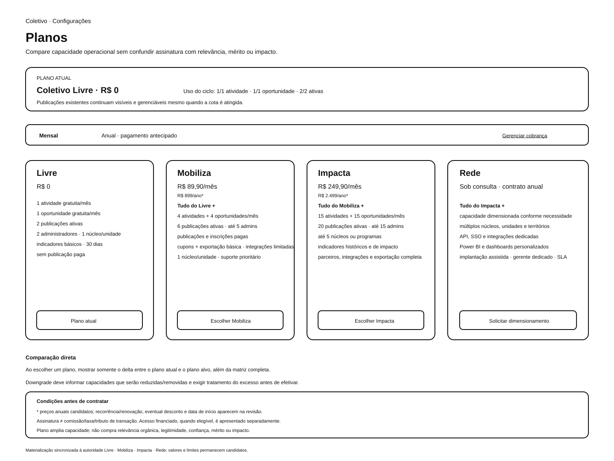
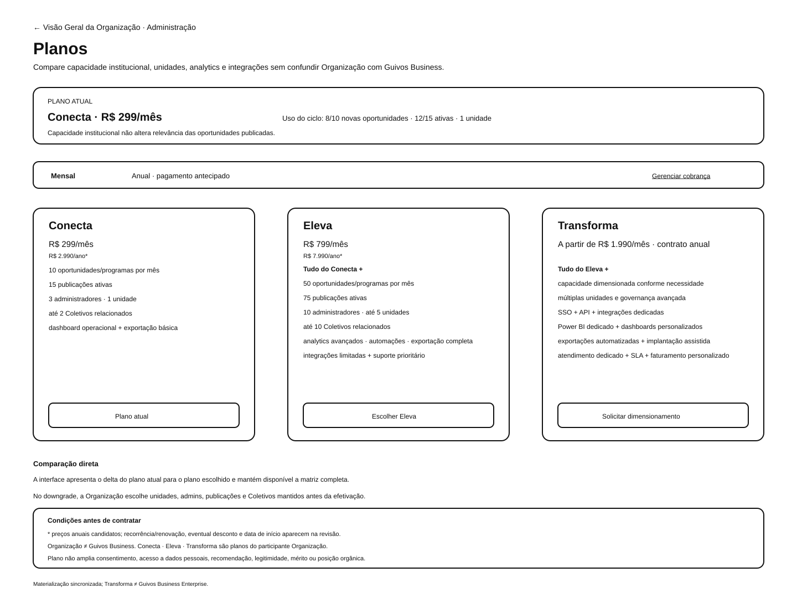

Guivos Knowledge Repository¶
O GKR é a fonte oficial, versionada e governada do conhecimento da Guivos.
Estado vigente¶
A autoridade transversal é o Registro do Estado Atual.
| Dimensão | Situação |
|---|---|
| Registro | GKR-STATE-001 2.36.0 |
| Era | GE-2 — Knowledge |
| Marco funcional | M7.88 |
| Última frente funcional numerada | UXA-101 |
| Reconciliação de Planos | UXA-100-A4 — origem voluntária e retorno |
| Experience Architecture mais recente | D5-C4B — TRN-008..013 integralmente validadas no limite documental |
| Domínios de Evolução do Journey | 9 canônicos + estado “Ainda estou descobrindo” |
| Próxima UXA | UXA-102/V5 não iniciada |
| Galeria | 121 SVGs — 121 validados / 0 pendentes |
| Matriz por SVG | 121 associações / 34 perfis |
| Superfícies/estados/fronteiras | 57 |
| Transições | 66 |
| Engenharia de Produto | pausada antes de W0-01 |
| Ressincronização P0–P9 | consolidada documentalmente após integração de P9 |
Public Canon¶
A superfície institucional pública vigente é o GOG-001 — Guia Oficial da Guivos 5.0.0.
O Guia foi reconciliado com as autoridades atuais e diferencia visão, arquitetura, implementação e operação. A D5-C4B é uma autoridade interna de Experience Architecture; validação integrada documental não declara disponibilidade pública de produto.
Consolidação e reconciliações recentes¶
- D5-C4B — Validação Integrada dos Handoffs
- D5-C4A — Materialização e Contrato Integrado dos Handoffs
- D5-C3 — Validação Funcional de Direção, Movimento e Evolução
- D5-C2 — Materialização Low-Fidelity de Direção, Movimento e Evolução
- D5-C1 — Contrato das Superfícies de Direção, Movimento e Evolução
- D5-B — Domínios de Evolução na Camada de Oportunidades
- D5-A — Domínios de Evolução na Jornada Inicial
- PAS-001-DOMAIN-MODEL-001 — Modelo Canônico dos Domínios de Evolução do Guivos Journey
- Guivos Journey — arquitetura e áreas de evolução
- VAL-002-A1 — Mapeamento da pesquisa para os Domínios de Evolução
- Consolidação Global e Public Canon — P9
- UXA-100-A4 — Origens Administrativas e Handoffs de Entrada em Planos
- Matriz de Consolidação Canônica 3.0.0
- Roadmap 12.76.0
O programa P0–P9 está consolidado quanto à ressincronização documental. D4 e D5 são frentes não numeradas e não criam novo marco funcional. Lacunas empíricas, tecnológicas, jurídicas e operacionais permanecem abertas em suas autoridades próprias.
Participantes, produtos, planos e domínios¶
Participantes: Pessoa · Coletivo · Organização.
Produtos Especializados: Journey · Mall · Travel · Business · Media · Intelligence · Ads.
Planos:
- Pessoa: Free · Plus · Pro;
- Coletivo: Livre · Mobiliza · Impacta · Rede;
- Organização: Conecta · Eleva · Transforma;
- Guivos Business: Start · Growth · Scale · Enterprise.
Organização ≠ Guivos Business.
A origem voluntária de Planos está formalizada por PER-009 ↔ PER-301, COL-002 ↔ COL-301 e ORG-001 ↔ ORG-301. A origem da Pessoa permanece sem SVG dedicado e, portanto, seus dois handoffs ficam contratados até materialização suficiente.
A D5-C1 contratou, a D5-C2 materializou, a D5-C3 validou localmente, a D5-C4A fechou o contrato/origem visual e a D5-C4B validou integralmente a continuidade pessoal especializada no limite documental:
PER-008 — Hoje recorrente
├── TRN-008 → PER-010 — Meus Objetivos → TRN-009 → PER-008
├── TRN-010 → PER-011 — Meus Próximos Passos → TRN-011 → PER-008
└── TRN-012 → PER-012 — Minha Evolução → TRN-013 → PER-008
As três responsabilidades possuem um SVG low-fidelity funcionalmente validado localmente. Hoje recorrente também está reformulado/revalidado localmente. TRN-008..013 estão integralmente validadas documentalmente; isso não comprova implementação técnica ou disponibilidade de produto.
Domínios de Evolução do Guivos Journey:
- Saúde e Bem-estar;
- Trabalho, Carreira e Estudos;
- Vida Financeira;
- Empreendedorismo e Projetos;
- Relacionamentos e Vida Social;
- Espiritualidade, Propósito e Valores;
- Viagens, Lazer, Cultura e Novas Experiências;
- Causas, Voluntariado e Contribuição;
- Organização e Equilíbrio da Vida.
Ainda estou descobrindo é estado transversal de exploração, não um décimo domínio.
Autoridades temáticas¶
- Go-to-Market, Growth & Capital
- GTM-007 — Internacionalização
- GTM-008 — Portugal
- Arquitetura de Produtos
- Guivos Journey
- Domínios de Evolução do Journey
- Arquitetura da Experiência
- Índice UXA-047 a UXA-101
- Jornadas Integradas
- Modelo Econômico
- Marca, Naming e Ativos Digitais
- Arquitetura Institucional e Jurídica
- Privacidade e Verdade Operacional
- Prontidão Operacional Internacional
- Validação de Mercado
- Arquitetura de Grafo e Intelligence
Estado das principais frentes¶
Neo4j = reference_selected ≠ produção
Fundação Guivos = conceito ≠ entidade constituída
Portugal = T1_candidate ≠ mercado ativo
privacidade por arquitetura ≠ conformidade operacional comprovada
método de pesquisa ≠ resultado de mercado
pontos/créditos ≠ evolução
navegar para Planos ≠ contratar ou iniciar cobrança
PER-010..012 validados localmente ≠ produto implementado
TRN-008..013 integralmente validadas documentalmente ≠ continuidade implementada
Domínio de Evolução ≠ identidade ≠ score ≠ diagnóstico ≠ prova de evolução
Domínio de Evolução ≠ dimensão estrutural do Contexto Vivo ≠ aspecto descritivo da mudança
classificação candidata por IA ≠ domínio confirmado
Limites preservados¶
A reconciliação atual não autoriza UXA-102/V5, Product Engineering, piloto internacional, implementação Neo4j, classificação operacional por IA dos Domínios de Evolução, ontologia física do grafo, implementação técnica de TRN-008..013, cobrança real, processo posterior a BND-002, programa operacional de pontos/créditos, constituição da Fundação Guivos, resultado de mercado não evidenciado ou operação de controles legais/privacidade não comprovados.
Em caso de divergência, prevalecem GKR-STATE-001 e a autoridade temática específica mais recente.
Comece por aqui
Guia Oficial da Guivos¶
Controle do documento¶
| Campo | Informação |
|---|---|
| Nome | Guia Oficial da Guivos |
| Finalidade | Explicar publicamente o que é a Guivos, como o ecossistema é organizado, seus princípios e seus limites de maturidade |
| Público | Pessoas, Coletivos, Organizações, clientes, parceiros, imprensa, investidores, fornecedores, colaboradores e interessados |
| Responsável | Guivos |
| Versão | 5.0.0 |
| Última atualização | 08/08/2026 |
| Status | Public Canon |
| Fonte | Guivos Knowledge Repository |
Public Canon significa que este é o documento institucional público vigente da Guivos. Ele não significa que toda visão, funcionalidade, integração, produto, plano, território ou estrutura descrita esteja disponível ou operando hoje.
O Guia Oficial traduz autoridades do GKR para linguagem pública. Quando uma capacidade ainda for referência, candidata, futura ou dependente de evidência, ela deve permanecer apresentada dessa forma.
1. O problema que a Guivos busca reduzir¶
Uma pessoa pode querer melhorar a carreira, estudar, cuidar da saúde, fortalecer relacionamentos ou espiritualidade, viajar, empreender, participar de uma comunidade ou apoiar uma causa. Existem muitas possibilidades, mas elas normalmente estão espalhadas entre plataformas, instituições, serviços, comunidades e conteúdos diferentes.
A dificuldade não é apenas encontrar informação. É compreender o que faz sentido para aquele contexto e para o próximo passo.
A Guivos nasce para reduzir essa distância.
2. O que é a Guivos¶
A Guivos é um ecossistema inteligente criado para apoiar jornadas de evolução por meio de oportunidades relevantes para cada momento.
Sua formulação central é:
A Guivos reduz a distância entre o Momento Atual de um participante e seu Próximo Passo de evolução.
A Guivos não define o que uma pessoa deve querer, não estabelece um modelo universal de sucesso e não transforma atividade, dinheiro, popularidade ou pontuação em medida de valor humano.
3. Essência, propósito, missão e visão¶
Essência¶
A Guivos é um ecossistema criado para acelerar jornadas de evolução por meio das oportunidades mais relevantes para cada momento de vida.
Propósito¶
Acelerar jornadas de evolução por meio das oportunidades mais relevantes para cada momento de vida.
Missão¶
Ajudar cada participante a evoluir continuamente por meio das oportunidades mais relevantes para seu momento de vida.
Visão¶
Tornar a Guivos um ecossistema global de referência para descoberta, conexão e desenvolvimento de oportunidades capazes de transformar positivamente a vida de pessoas, organizações e coletivos.
4. Quem participa¶
A arquitetura da Guivos reconhece três participantes estruturais.
Pessoa¶
Pessoa natural que utiliza o ecossistema para compreender seu momento, explorar possibilidades, participar de experiências e construir próximos passos.
Coletivo¶
Grupo, comunidade, movimento, clube, equipe ou rede formado em torno de propósito, interesse, causa ou objetivo compartilhado.
Organização¶
Empresa, universidade, escola, igreja, ONG, órgão público, instituição, negócio ou outra estrutura que, dentro do ecossistema, pode oferecer oportunidades, programas, serviços, benefícios, conhecimento ou capacidades para Pessoas e Coletivos.
Essas três categorias não devem ser confundidas com produtos comerciais da Guivos.
5. Evolução não é ranking¶
Na Guivos, evolução depende do contexto e dos objetivos legítimos escolhidos pelo próprio participante.
Pode significar, por exemplo:
- conseguir um emprego;
- aprender uma habilidade;
- melhorar renda ou organização financeira;
- cuidar da saúde;
- fortalecer relações;
- desenvolver a espiritualidade;
- viajar e viver novas experiências;
- empreender;
- servir em uma ação comunitária;
- participar de uma causa.
A Guivos não deve usar saldo, pontos, streak, ranking, consumo ou tempo de tela como substitutos de evolução.
Benefícios ou incentivos futuros somente fazem sentido quando reduzem barreiras ou apoiam uma ação que já possui valor legítimo independentemente da recompensa.
6. Momento Atual e Próximo Passo¶
O Momento Atual representa a melhor compreensão disponível e autorizada sobre o contexto relevante do participante naquele momento.
Ele não é uma definição permanente da pessoa.
O Próximo Passo representa uma direção contextual que pode ajudar o participante a avançar, sempre preservando escolha, explicação, correção e alternativas.
A experiência deve permitir que a pessoa compreenda:
- o que a Guivos entendeu;
- de onde veio essa compreensão;
- o que é informação declarada, observada ou inferida;
- como corrigir ou limitar uma informação;
- por que uma possibilidade está sendo apresentada.
7. Como a compreensão pode ser construída¶
A visão de experiência prevê construção progressiva de contexto, evitando exigir um grande formulário inicial.
Conforme a capacidade efetivamente disponível e a autorização aplicável, uma experiência poderá utilizar texto, voz, escolhas do participante, arquivos, localização ou integrações pertinentes.
Isso não significa que todas essas integrações estejam atualmente implementadas ou disponíveis.
Uma dimensão conceitual — saúde, finanças, relações, espiritualidade ou outra — também não autoriza automaticamente a coleta de dados pessoais ou sensíveis sobre essa dimensão.
8. Jornada contínua¶
A jornada conceitual pode ser compreendida como:
Momento Atual
→ objetivo ou direção
→ Próximo Passo
→ oportunidades
→ experiência
→ evidências e mudanças
→ nova compreensão do contexto
→ novo Próximo Passo
A Guivos pretende apoiar esse ciclo sem retirar autonomia do participante.
9. O que é uma oportunidade¶
Oportunidade é uma possibilidade que pode ajudar um participante a avançar de forma relevante em seu contexto.
Pode envolver curso, vaga, bolsa, evento, grupo, mentoria, serviço, produto, viagem, conteúdo, benefício, ação social, atividade cultural, espiritual, esportiva ou comunitária, entre outras formas legítimas.
A existência de uma oportunidade não garante adequação individual nem resultado.
Quando a execução ocorrer em ambiente de terceiro, a Guivos deve deixar clara a fronteira entre o que controla e o que passa a depender da autoridade externa.
10. Os sete Produtos Especializados¶
A arquitetura vigente reconhece sete Produtos Especializados.
Guivos Journey¶
É a experiência principal do ecossistema, onde a jornada, o contexto, as possibilidades e as continuidades podem ser organizados.
Guivos Mall¶
Responsabilidade especializada relacionada a produtos, serviços e relações comerciais quando materializadas no ecossistema.
Guivos Mall é o nome canônico vigente. Nomenclaturas anteriores pertencem apenas ao histórico de evolução da arquitetura.
Guivos Travel¶
Responsabilidade especializada para viagens e experiências relacionadas, quando materializadas.
Guivos Business¶
Produto B2B especializado e contratável, separado do papel de Organização dentro do ecossistema.
Organização não é Guivos Business.
Uma Organização pode participar do ecossistema sem contratar Business. Da mesma forma, uma relação Business deve ser identificada por contrato/contexto próprio.
Guivos Media¶
Responsabilidade editorial e de conteúdo quando houver contexto especializado próprio.
Guivos Intelligence¶
Camada de inteligência transversal responsável por apoiar compreensão, contexto, conexões, evidências e recomendações de forma governada.
Guivos Intelligence não é sinônimo de uma tecnologia de banco de dados específica.
Guivos Ads¶
Responsabilidade de publicidade, patrocínios e ativações pagas, que devem permanecer identificáveis e separadas da relevância orgânica.
11. Planos¶
A taxonomia vigente organiza planos por participante ou produto, sem representar status humano.
Pessoa¶
- Free;
- Plus;
- Pro.
Coletivo¶
- Livre;
- Mobiliza;
- Impacta;
- Rede.
Organização¶
- Conecta;
- Eleva;
- Transforma.
Guivos Business¶
- Start;
- Growth;
- Scale;
- Enterprise.
Um plano representa profundidade de serviço, capacidade, escopo ou complexidade atendida. Ele não representa valor, mérito, prestígio ou nível de evolução do participante.
Preços, condições e entitlements devem ser consultados em autoridades comerciais vigentes; preço documentado como candidato não equivale a oferta disponível nem a disposição a pagar comprovada.
12. Publicidade e relevância¶
Publicidade não deve ser disfarçada de recomendação orgânica.
Quando uma oportunidade ou presença for patrocinada, essa natureza deve ser identificável. Pagamento não compra relevância funcional, evidência de impacto, autoridade ou evolução.
13. Guivos Intelligence, grafo e IA¶
A arquitetura da Guivos prevê inteligência contextual e uma camada de grafo como parte da evolução tecnológica.
Neo4j foi selecionado no GKR como tecnologia primária de referência para a camada de grafo. Essa escolha não significa que uma infraestrutura Neo4j, GraphRAG, Graph Data Science ou integração com Power BI esteja atualmente implantada em produção.
tecnologia de referência
≠ sistema provisionado
≠ integração concluída
≠ produção
A inteligência deve preservar proveniência, diferença entre fato e inferência, possibilidade de correção e proteção contra usos discriminatórios ou classificações de valor humano.
14. Privacidade e controle do participante¶
A Guivos adota como arquitetura a separação entre:
aceite contratual
≠ consentimento para tratamento de dados
≠ preferência voluntária
Também distingue princípio de privacidade, controle projetado, implementação e operação evidenciada.
O Guia não declara automaticamente que toda superfície legal, consentimento, cookie, integração, fluxo de direitos ou processo regulatório já esteja operacional. A disponibilidade real deve ser comprovada e publicada no contexto apropriado.
Dados pessoais devem ser tratados segundo finalidade, necessidade, transparência, segurança e demais requisitos aplicáveis. A relação com parceiro, Organização ou entidade relacionada não cria permissão automática de compartilhamento.
15. Fundação Guivos e impacto social¶
A Guivos desenvolveu o conceito institucional de uma futura frente social, historicamente chamada Fundação Guivos.
No estado atual do GKR, esse nome representa um conceito institucional social e nome de trabalho. Ele não comprova que uma fundação privada, associação ou outra entidade jurídica já tenha sido constituída.
O conceito busca ampliar acesso a oportunidades legítimas de desenvolvimento, educação, formação, inclusão, apoio comunitário e outras iniciativas de impacto compatíveis com o propósito.
Qualquer estrutura jurídica, programa, captação, bolsa, voluntariado ou operação futura dependerá de decisão, evidência e governança próprias.
16. Crescimento e internacionalização¶
A estratégia territorial documentada prioriza densidade antes de dispersão:
Belo Horizonte
→ São Paulo
→ amplificação nacional seletiva
→ Portugal / Lisboa
→ Portugal / Porto somente após gate
Portugal é o primeiro mercado internacional de referência e Lisboa a primeira base candidata. Isso não significa que a Guivos já opere comercialmente em Portugal.
Acesso ao site desde outro país, registro de domínio, proteção de marca, pesquisa, prospecção ou presença de usuários não tornam automaticamente um território mercado ativo.
A expansão depende de gates comerciais, operacionais, jurídicos, fiscais, de pagamentos, privacidade, suporte e capacidade do ecossistema.
17. Organizações, Business e Parcerias Estratégicas¶
Essas relações permanecem separadas.
Organização
≠ Guivos Business
≠ Parceria Estratégica
≠ oportunidade
Uma Organização participa do ecossistema e pode oferecer valor a Pessoas e Coletivos.
Guivos Business é um produto B2B contratado separadamente.
Parceria Estratégica é uma relação corporativa da Guivos enquanto empresa com contraparte externa para ampliar capacidade, distribuição, tecnologia, infraestrutura, acesso institucional, território ou outra vantagem material.
A mesma pessoa jurídica pode exercer mais de uma relação, mas cada uma deve ser identificada e medida separadamente.
18. O que a Guivos não promete¶
O Public Canon não deve ser lido como promessa de:
- resultado individual;
- emprego, renda, saúde ou transformação garantidos;
- disponibilidade imediata de toda funcionalidade descrita;
- operação de todos os Produtos Especializados;
- infraestrutura de IA/grafo já implantada;
- product-market fit comprovado;
- número de usuários ou receita realizados conforme projeções;
- preço candidato como oferta irrevogável;
- registro global de marca ou domínio;
- entidade Fundação Guivos constituída;
- conformidade operacional demonstrada apenas pela existência de políticas de arquitetura;
- mercado internacional ativo apenas porque existe uma estratégia de expansão.
19. O que está validado documentalmente hoje¶
O GKR possui uma arquitetura funcional detalhada da experiência até a UXA-101, encerrando o fluxo controlável pela Guivos até a fronteira externa de uma oportunidade.
Esse trabalho inclui 118 referências visuais, registros granulares de superfícies e transições e uma taxonomia governada de participantes, produtos e planos.
Isso é uma maturidade documental/arquitetural. Não equivale a afirmar que toda essa arquitetura esteja implementada em software e operando em produção.
20. Como o conhecimento oficial evolui¶
O Guivos Knowledge Repository é a fonte oficial de decisões e arquitetura.
A governança distingue:
- decisão de hipótese;
- autoridade documental;
- arquitetura de referência;
- materialização;
- validação;
- implementação;
- operação;
- evidência real de resultado.
Esses estados não são intercambiáveis.
O Guia Oficial é atualizado quando mudanças governadas no GKR alteram a compreensão pública necessária.
21. Síntese¶
A Guivos busca construir um ecossistema que compreenda contextos, organize oportunidades e ajude cada participante a encontrar próximos passos relevantes sem substituir sua autonomia.
Sua arquitetura conecta Pessoas, Coletivos e Organizações a uma experiência central e a Produtos Especializados, com inteligência transversal, monetização subordinada ao propósito e separação explícita entre visão, arquitetura e realidade operacional.
A Guivos existe para aproximar cada participante das oportunidades que podem fazer sentido para o próximo passo de sua evolução — com contexto, autonomia, transparência e responsabilidade.
Registro do Estado Atual¶
1. Autoridade¶
Este registro declara o estado global vigente do Guivos Knowledge Repository após a consolidação documental P1–P9, a reconciliação controlada da origem voluntária de Planos, a formalização dos Domínios de Evolução do Guivos Journey, a D5-C1 — contrato arquitetural das superfícies de direção, movimento e evolução da Pessoa —, a D5-C2 — materialização low-fidelity dessas três responsabilidades —, a D5-C3 — validação funcional/reformulação local dos três SVGs —, a D5-C4A — materialização e contrato integrado dos handoffs — e a D5-C4B — validação integrada individual de TRN-008..013.
A D5-C4B não cria novo marco funcional, não inicia UXA-102, não retoma Engenharia de Produto e não altera inventário visual ou granular. Ela promove individualmente TRN-008..013 para integralmente validada no limite documental, após examinar origem, destino, autoridade, contexto mínimo, efeitos, retorno, interrupção, concorrência, idempotência e sensibilidade aplicável.
Em caso de divergência, prevalece esta autoridade transversal e, dentro de cada domínio, a autoridade temática específica mais recente.
2. Estado global¶
| Elemento | Estado vigente |
|---|---|
| Era | GE-2 — Knowledge |
| Marco funcional | M7.88 — saída consciente para fronteira externa validada |
| Última frente funcional numerada | UXA-101 |
| Reconciliação de Planos | UXA-100-A4 — origem voluntária de Planos |
| Frente não numerada mais recente de Experience Architecture | D5-C4B — TRN-008..013 integralmente validadas no limite documental |
| Próxima UXA | UXA-102/V5 não iniciada |
| Engenharia de Produto | pausada antes de W0-01 |
| Domínios de Evolução do Journey | 9 domínios canônicos + estado transversal “Ainda estou descobrindo” |
| Registros granulares | 57 superfícies/estados/fronteiras e 66 transições |
| Galeria visual | 121 SVGs — 121 validados / 0 pendentes |
| Matriz por SVG | 121 associações / 34 perfis |
| Jornadas principais | Pessoa, Coletivo e Organização permanecem draft |
| P1/P1.1 | integrado — semântica e nomenclaturas reconciliadas |
| P2 | integrado como arquitetura de referência — Neo4j reference_selected |
| P3 | governança integrada — fatos registrários/digitais dependem de evidência |
| P4 | método/gates integrados — resultado real de mercado não estabelecido |
| P5 | arquitetura institucional integrada — Fundação Guivos continua conceito, não entidade comprovada |
| P6 | arquitetura de privacidade/verdade operacional integrada — controles reais dependem de evidência |
| P7 | governança territorial integrada — Portugal permanece T1_candidate |
| P8 | sete Produtos Especializados rebaselineados |
| P9 | consolidação global e Public Canon em edição corrente |
3. Cobertura funcional e visual reconciliada¶
A D5-C4B altera somente a maturidade integrada de seis transições e preserva o inventário físico e granular:
- 121 SVGs existentes e referenciados;
- 121 associações individuais;
- 34 perfis de rastreabilidade;
- 121 validações funcionais vigentes de SVG;
- 0 pendentes de validação específica de SVG;
- 45 de 57 IDs granulares com referência visual;
- 10 responsabilidades sem SVG dedicado;
- 2 fronteiras sem tela por definição;
- 57 superfícies/estados/fronteiras;
- 66 transições documentais.
Entre as responsabilidades pessoais adicionadas/reconciliadas recentemente:
PER-008 — Hojemantém duas variantes; o estado recorrente foi reformulado e revalidado localmente pela D5-C4A;PER-009 — Conta e configurações da Pessoapermanece sem SVG;PER-010 — Meus Objetivospossui SVG D5-C2 reformulado e validado localmente pela D5-C3;PER-011 — Meus Próximos Passospossui SVG D5-C2 reformulado e validado localmente pela D5-C3;PER-012 — Minha Evoluçãopossui SVG D5-C2 reformulado e validado localmente pela D5-C3.
A continuidade especializada passa a estar integralmente validada no limite documental:
PER-008 — Hoje recorrente
├── TRN-008 → PER-010 → TRN-009 → PER-008
├── TRN-010 → PER-011 → TRN-011 → PER-008
└── TRN-012 → PER-012 → TRN-013 → PER-008
TRN-008..013 estão integralmente validadas pela D5-C4B. Para TRN-008, TRN-010 e TRN-012, a validação aplica-se ao estado recorrente de Hoje quando o affordance correspondente estiver presente e aplicável; a primeira variante de Hoje da UXA-097 não é obrigada a materializar esses acessos.
A promoção documental não comprova implementação técnica, roteamento real, persistência, cache, fila, telemetria ou produto em produção.
TRN-406/407 permanecem contratadas. TRN-417/418 e TRN-427/428 continuam integralmente validadas no limite documental de navegação administrativa. As transições comerciais internas de Planos preservam suas maturidades anteriores.
A UXA-101 continua encerrando V4 em BND-001. Resultado executado por terceiro após essa fronteira não é presumido pela Guivos.
4. Participantes, planos, produtos e Domínios de Evolução¶
Participantes estruturais:
- Pessoa;
- Coletivo;
- Organização.
Taxonomia de planos:
- Pessoa: Free · Plus · Pro;
- Coletivo: Livre · Mobiliza · Impacta · Rede;
- Organização: Conecta · Eleva · Transforma;
- Guivos Business: Start · Growth · Scale · Enterprise.
Sete Produtos Especializados:
- Guivos Journey;
- Guivos Mall;
- Guivos Travel;
- Guivos Business;
- Guivos Media;
- Guivos Intelligence;
- Guivos Ads.
4.1 Domínios de Evolução do Guivos Journey¶
PAS-001-DOMAIN-MODEL-001 governa o baseline inicial de nove Domínios de Evolução:
- Saúde e Bem-estar;
- Trabalho, Carreira e Estudos;
- Vida Financeira;
- Empreendedorismo e Projetos;
- Relacionamentos e Vida Social;
- Espiritualidade, Propósito e Valores;
- Viagens, Lazer, Cultura e Novas Experiências;
- Causas, Voluntariado e Contribuição;
- Organização e Equilíbrio da Vida.
Ainda estou descobrindo é estado transversal legítimo de exploração e não constitui décimo domínio. Outra área é mecanismo de extensibilidade e preservação da expressão original do participante.
Os domínios possuem interpretação específica para Pessoa, Coletivo e Organização. Uma trajetória pode envolver vários domínios simultaneamente.
Separações canônicas:
Organização ≠ Guivos Business
participante ≠ produto
plano ≠ mérito ou nível de evolução
Parceria Estratégica ≠ Organização
Guivos Mall = nome canônico
Guivos Marketplace = alias histórico/migração
Domínio de Evolução ≠ identidade
Domínio de Evolução ≠ dimensão estrutural do Contexto Vivo
Domínio de Evolução ≠ aspecto descritivo da mudança
Domínio de Evolução ≠ Objetivo
Domínio de Evolução ≠ Próximo Passo
Domínio de Evolução ≠ score
Domínio de Evolução ≠ diagnóstico
Domínio de Evolução ≠ prova de evolução
A D5-C1 aplica essa separação prospectivamente à Experience Architecture de Meus Objetivos, Meus Próximos Passos e Minha Evolução. A D5-C2 a torna visualmente inspecionável, a D5-C3 valida/reformula o estado-base, a D5-C4A governa a navegação e a D5-C4B valida integralmente os seis handoffs sem transformar domínio ou contexto em decisão, prioridade, progresso ou evolução.
A UXA-100-A4 corrige no SVG de ORG-001 o rótulo visual obsoleto Guivos Business, sem criar novo ativo. BND-002 permanece fronteira genérica de contratação/dimensionamento assistido e não pertence semanticamente a um plano específico.
5. Go-to-Market e internacionalização¶
O GTM governa como baseline candidata:
Belo Horizonte
→ São Paulo
→ amplificação nacional seletiva
→ Portugal / Lisboa
→ Portugal / Porto somente após gate
→ novo país europeu somente mediante novo gate
Portugal permanece T1_candidate.
Não estão comprovados por esta documentação:
- entidade/filial portuguesa;
- equipe local;
- contratos locais;
- IVA/OSS em operação;
- PSP europeu em produção;
- suporte internacional em produção;
- piloto Lisboa executado;
- Porto autorizado;
- segundo país europeu autorizado.
A governança territorial exige distinguir acesso internacional, pesquisa, readiness, piloto autorizado, piloto executado e mercado ativo.
6. Grafo, Journey e Intelligence¶
Neo4j é a tecnologia primária de referência para a camada de grafo.
reference_selected
≠ POC
≠ provisioned
≠ integrated
≠ production
Não há autoridade suficiente para afirmar POC, cluster/Aura provisionado, dados pessoais reais no grafo, GDS em produção, GraphRAG implementado ou Power BI conectado.
Grafo Global ≠ Guivos Intelligence ≠ Neo4j.
Os Domínios de Evolução constituem vocabulário semântico canônico do Journey e podem orientar futura ontologia, classificação explicável e relações no Grafo Global. Isso não declara ontologia física, nós, relações, embeddings, pipelines ou dados implementados.
Guivos Intelligence pode produzir candidatos de domínio e relações multidomínio, mas não pode transformar inferência em domínio confirmado sem autoridade suficiente, criar score humano ou utilizar domínio sensível como autorização de publicidade comportamental.
A materialização/validação documental de PER-010..012, o contrato D5-C4A e a validação integrada D5-C4B não declaram rotas, banco, APIs, eventos ou modelo físico de grafo implementados.
7. Marca, naming e ativos digitais¶
nome canônico
≠ marca registrada
≠ domínio controlado
≠ DNS operacional
≠ serviço em produção
O GKR governa naming e estados de evidência, mas não presume titularidade, proteção territorial, domínio adquirido ou controle técnico específico sem prova própria. Segredos, credenciais, recovery codes, chaves, tokens e inventário operacional sensível permanecem fora do corpus público.
8. Validação de mercado¶
VAL-001–010 constituem o sistema metodológico B2C inicial.
Parâmetros governados incluem questionário VAL-002 2.1.0 com 19 perguntas, pré-teste previsto de 10–15 participantes, mínimo de 200 respostas válidas para decisão inicial e meta preferencial de 500.
As áreas utilizadas no instrumento de pesquisa contribuíram para o baseline semântico dos Domínios de Evolução. Essa promoção arquitetural não transforma a existência da pergunta ou das opções em resultado de pesquisa, preferência de mercado ou evidência de eficácia.
método definido
≠ instrumento aplicado
≠ base válida
≠ KPI calculado
≠ decisão de mercado
≠ product-market fit
Neste checkpoint não existe evidência integrada suficiente para declarar PMF, disposição a pagar, retenção, recorrência ou resultado real da pesquisa.
9. Incentivos¶
GEM-005-A1 estabelece Propósito Antes do Incentivo.
Pontos, créditos, saldo, streak ou ranking não podem substituir evolução, autonomia ou valor legítimo como objetivo da experiência. Nenhum programa operacional de pontos/créditos, carteira, token, cashback ou conversão está autorizado.
O modelo de Domínios de Evolução reforça que contribuição, espiritualidade, saúde, finanças, relacionamentos ou organização não podem ser convertidos em ranking moral, score humano ou competição por “nível de evolução”.
PER-012 — Minha Evolução permanece explicitamente incompatível com placar global, roda da vida obrigatória ou percentual geral da Pessoa. A D5-C3 reforça período, baseline, natureza da interpretação, confiança e incerteza em vez de score.
10. Arquitetura institucional e Fundação Guivos¶
Fundação Guivos permanece:
conceito institucional social validado
+ nome de trabalho
≠ forma jurídica escolhida
≠ entidade constituída
≠ CNPJ/registro comprovado
≠ operação social própria comprovada
F0–F9 governam a eventual progressão do conceito até uma operação institucional evidenciada. A forma jurídica permanece unresolved.
11. Privacidade, consentimentos e verdade operacional¶
P6 estabelece:
aceite contratual ≠ consentimento LGPD ≠ preferência voluntária
arquitetura de privacidade ≠ conformidade operacional comprovada
política em draft ≠ política publicada
controle projetado ≠ controle implementado ≠ controle evidenciado
Não são presumidos como operacionais: Termos publicados, Aviso/Política de Privacidade vigente, consentimentos, centro de preferências, inventário de cookies/SDKs, Encarregado formalmente indicado, fluxo de direitos, incident response LGPD ou dados pessoais em produção no grafo.
Domínios que envolvam saúde, condição emocional, espiritualidade/religião, finanças, emprego, família, sexualidade, vulnerabilidade ou outras informações sensíveis exigem finalidade, minimização, autoridade e proteção reforçada.
A D5-C3 valida documentalmente que os estados-base preservam minimização, contestação e controles de privacidade. A D5-C4A acrescenta que a navegação não transporta automaticamente domínio sensível, interpretação, evidência, conteúdo clínico/financeiro/religioso ou autorização ampliada. A D5-C4B valida integralmente esse limite documental para TRN-012/013, sem comprovar controles técnicos ou operacionais. Títulos neutros, ocultação de área/domínio sensível, dispositivo compartilhado e autenticação reforçada continuam dependentes de materializações específicas quando aplicáveis. domain_link sensível não constitui autorização adicional de tratamento.
12. Public Canon¶
GOG-001 — Guia Oficial da Guivos é a única superfície institucional classificada como public-canon neste domínio documental.
O Public Canon traduz autoridades do GKR para linguagem pública e deve distinguir claramente:
- visão e disponibilidade real;
- arquitetura e implementação;
- preço/plano candidato e oferta vigente;
- expansão planejada e mercado ativo;
- conceito institucional e entidade constituída;
- privacidade por design e controles efetivamente publicados/operacionais.
A página pública de Arquitetura do Guivos Journey explicita os nove Domínios de Evolução e exemplos de como a Guivos pode apoiar jornadas nesses domínios, preservando os guardrails do PAS-001-DOMAIN-MODEL-001.
D5-C4B é uma autoridade interna de Experience Architecture e não, por si só, autoriza declaração pública de disponibilidade de produto. Validação documental integrada ≠ tela implementada.
Nenhum texto público pode promover estado superior ao evidenciado nas autoridades internas.
13. Programa P0–P9¶
O programa amplo de ressincronização documental está consolidado quanto aos pacotes temáticos previstos:
- P0 — intake/evidência: preservado;
- P1/P1.1 — semântica/nomenclatura: integrado;
- P2 — tecnologia/grafo: integrado como referência;
- P3 — marca/naming/ativos: integrado;
- P4 — validação de mercado: integrado como método/gates;
- P5 — institucional/jurídico: integrado como arquitetura/gates;
- P6 — operação/privacidade/legal: integrado como arquitetura/gates;
- P7 — internacionalização: integrado como programa territorial/gates;
- P8 — Produtos Especializados: integrado;
- P9 — estado global/Public Canon: consolidado por
GKR-P9-GLOBAL-CONSOLIDATION-001.
Encerramento documental não significa encerramento das lacunas operacionais. Itens dependentes de evidência permanecem abertos em seus domínios próprios.
14. Fila funcional¶
| Família | Estado |
|---|---|
| V1 — compreensão inicial → Tela Hoje | encerrada pela UXA-097 |
| V2 — publicação → descoberta/mapa/lista/detalhe | encerrada pela UXA-098 |
| V3 — estados residuais Opportunity Boost | encerrada pela UXA-099 |
| Planos — identidade/promoção canônica | encerrada pela UXA-100-A3 |
| Planos — origem voluntária e retorno | identidade encerrada pela UXA-100-A4; PER-009 ainda sem materialização |
| Journey — Domínios de Evolução | baseline canônico + D4 propagado + D5-A/B materializados em superfícies existentes |
| D5-C1 — direção, movimento e evolução | PER-010..012 + TRN-008..013 contratados |
| D5-C2 — low-fidelity das três superfícies | PER-010..012 materializados |
| D5-C3 — validação funcional local | PER-010..012 reformulados e validados |
| D5-C4A — contrato/materialização dos handoffs | Hoje recorrente reformulado/revalidado; contexto mínimo e proteção dos seis handoffs governados |
| D5-C4B — validação integrada dos handoffs | TRN-008..013 integralmente validadas; lacuna específica D5-C encerrada no limite documental |
| V4 — efeito externo de oportunidades | encerrada pela UXA-101 até BND-001 |
| V5 — erros, retornos e interrupções | pendente; não iniciada |
D5-C1/C2/C3/C4A/C4B não são V5 e não alteram a numeração UXA.
15. Preservações finais¶
- M7.88 permanece o marco funcional;
- UXA-101 permanece a última frente funcional numerada;
- UXA-100-A4 permanece reconciliação de Planos e não inicia UXA-102;
- D5-C4B é a frente não numerada mais recente de Experience Architecture;
- UXA-102/V5 não foi iniciada;
- Engenharia de Produto permanece pausada antes de W0-01;
- Pessoa, Coletivo e Organização permanecem jornadas
draft; - nove Domínios de Evolução estão governados como vocabulário do Journey;
- “Ainda estou descobrindo” não é décimo domínio;
- classificação de domínio por IA não está declarada como operacional;
- ontologia de grafo física não está declarada como implementada;
PER-010..012permanecem validados localmente como superfícies;TRN-008..013estão integralmente validadas documentalmente e isso não equivale a implementação;- a primeira variante de Hoje não é obrigada a expor os handoffs especializados;
- materialização, validação, promoção, implementação e operação são estados distintos;
- projeção não é realizado;
- preço não é disposição a pagar;
- capital não é receita;
- valuation interno não é laudo/oferta/promessa;
- relação comercial não compra relevância;
- recompensa não compra evolução;
- internacionalização planejada não é mercado ativo;
- nenhuma etapa autoriza automaticamente a seguinte.
16. Próximo ato governado¶
A D5-C4B encerra somente a lacuna específica D5-C de continuidade entre Hoje e Objetivos/Próximos Passos/Minha Evolução no limite documental.
D6, D7, materialização de PER-009, maturidade das transições internas de Planos, integrações patrocinadas, cobrança real, processo posterior a BND-002, UXA-102/V5 e Product Engineering permanecem frentes separadas e exigem autorização própria. Nenhuma é iniciada automaticamente.
Roadmap Arquitetural — Consolidação Documental P0–P9¶
1. Autoridade¶
Este roadmap registra o estado global após a ressincronização documental de agosto de 2026. O estado oficial permanece em GKR-STATE-001.
2. Estado vigente¶
| Elemento | Estado |
|---|---|
| Era | GE-2 — Knowledge |
| marco funcional | M7.88 |
| última UXA | UXA-101 |
| UXA-102/V5 | não iniciada |
| SVGs | 118 |
| associações | 118 |
| perfis | 31 |
| superfícies/estados/fronteiras | 53 |
| transições | 54 |
| Engenharia de Produto | pausada antes de W0-01 |
| programa P0–P9 | documentalmente consolidado após integração de P9 |
3. Sequência funcional preservada¶
UXA-097 — compreensão inicial → Tela Hoje
→ UXA-098 — publicação → descoberta → Mapa/Lista → Detalhe
→ UXA-099 — estados residuais Opportunity Boost
→ UXA-100 — Planos
→ UXA-101 — saída consciente → BND-001
→ UXA-102/V5 — PENDENTE, NÃO INICIADA
Nenhuma frente P0–P9 cria nova UXA.
4. Consolidação temática¶
| Pacote | Resultado documental |
|---|---|
| P0 | intake/evidência preservado |
| P1/P1.1 | semântica e nomenclaturas integradas |
| P2 | Neo4j como referência de grafo |
| P3 | naming/marca/ativos governados |
| P4 | metodologia e gates de validação integrados |
| P5 | arquitetura institucional/jurídica integrada |
| P6 | privacidade e verdade operacional governadas |
| P7 | internacionalização e gates territoriais integrados |
| P8 | sete Produtos Especializados rebaselineados |
| P9 | estado transversal, matriz e Public Canon reconciliados |
5. Lacunas não fechadas por documentação¶
Continuam dependentes de evidência ou autorização própria:
- resultados reais de mercado e PMF;
- implementação tecnológica e grafo em produção;
- fatos registrários de marca/domínios;
- constituição jurídica de eventual veículo social;
- controles legais/privacidade em produção;
- piloto e operação internacional;
- cobrança/gateway real;
- handoffs especializados ainda não materializados;
- UXA-102/V5;
- Product Engineering.
6. Próximos caminhos possíveis¶
Após P9, não existe “P10” automático.
O próximo ato deve nascer de uma necessidade concreta e autoridade própria. Exemplos:
- evidência de pesquisa → VAL;
- decisão de implantação → ADR/Engineering;
- fato jurídico/institucional → gates P5;
- controle operacional/privacy → gates P6;
- readiness/piloto territorial → gates P7;
- nova continuidade funcional → UXA-102 somente por autorização humana separada;
- implementação → Product Engineering somente por reativação explícita.
7. Preservação¶
ressincronização documental concluída ≠ produto implementado ≠ operação comprovada.
Glossário Canônico da Guivos¶
Este glossário estabelece o uso oficial dos principais termos da arquitetura, dos produtos e da governança da Guivos.
Quando documentos antigos utilizarem nomenclatura diferente, prevalece a definição registrada aqui, salvo decisão posterior formalmente consolidada no GKR.
1. Participantes e relações¶
Participante¶
Entidade capaz de atuar em uma jornada de evolução ou contribuir para a jornada de outros participantes.
Categorias arquiteturais reconhecidas: Pessoa, Organização e Coletivo.
Uso oficial: termo central da arquitetura.
Não confundir com: usuário, cliente, membro ou perfil.
Pessoa¶
Participante individual, autônomo e permanente no ecossistema.
Organização¶
Participante institucional que reúne pessoas, recursos, conhecimento e capacidades em torno de uma missão ou objetivo comum.
Coletivo¶
Participante formado pela associação de Pessoas e, quando aplicável, Organizações, em torno de um propósito compartilhado.
Pode adotar denominações como movimento, grupo, clube, núcleo, rede, comunidade ou equipe.
Comunidade¶
Não é categoria arquitetural independente. Pode ser utilizada como denominação contextual de um Coletivo.
O uso anterior de “Comunidade Guivos” como nome amplo de produto foi substituído por Guivos Journey.
Relacionamento¶
Vínculo reconhecido entre dois ou mais participantes, formado ou fortalecido por interações, experiências ou objetivos compartilhados.
Papel¶
Conjunto temporário e contextual de responsabilidades exercidas por um participante.
Usuário¶
Termo técnico aceitável em contextos de software, autenticação, sessão ou interface.
Não deve substituir Participante na arquitetura conceitual.
Cliente¶
Termo comercial utilizado quando uma Pessoa ou Organização mantém relação de compra, contratação ou assinatura com a Guivos.
Cliente é uma relação comercial, não uma categoria de participante.
2. Jornada e evolução¶
Jornada¶
Sequência contínua de estados, decisões, experiências e resultados vividos por um participante ao longo do tempo.
A Guivos apoia a jornada; não a controla.
Evolução¶
Transformação relevante reconhecida pelo próprio participante, por uma Organização ou por um Coletivo em relação ao seu estado anterior, objetivo ou direção desejada.
A Guivos não impõe uma única definição de evolução.
Momento Atual¶
Representa o estado presente do participante e o contexto relevante para compreender sua realidade.
Não é cadastro fixo nem definição permanente da pessoa.
Objetivo¶
Resultado ou direção que o participante deseja alcançar.
Próximo Passo¶
Decisão ou hipótese de evolução mais relevante para o Momento Atual e os Objetivos do participante.
O Próximo Passo não é uma Oportunidade.
Oportunidade¶
Iniciativa, recurso ou possibilidade capaz de apoiar a realização de um Próximo Passo por meio de uma Experiência.
Oportunidade Ativa¶
Oportunidade que, considerando o contexto atual de um participante, possui potencial imediato de apoiar progresso e merece ser apresentada.
Linguagem pública preferencial: oportunidade relevante.
Experiência¶
Materialização da participação de um ou mais participantes em uma Oportunidade.
Evidência de Evolução¶
Sinal, resultado ou mudança que permite compreender como uma Experiência alterou a jornada de um participante.
Evento de Vida¶
Mudança relevante capaz de alterar o estado, as prioridades, as restrições ou a direção de uma jornada.
Intervenção Contextual¶
Decisão funcional de agir, perguntar, esperar, observar ou permanecer em silêncio em determinado momento da jornada.
Notificação é apenas um dos canais possíveis.
Distância para Evolução¶
Conceito interno de produto que representa a diferença entre o contexto atual do participante e os caminhos disponíveis para avançar.
Não é necessariamente uma medida única ou numérica.
3. Contexto e compreensão¶
Contexto¶
Conjunto autorizado de informações, relações, condições, objetivos, restrições, preferências, experiências, evidências e temporalidades relevantes para compreender uma jornada.
Captura de Contexto¶
Capacidade funcional por meio da qual o participante expressa sua realidade por voz, texto, fluxo guiado ou outras fontes autorizadas, para que a Guivos construa uma compreensão inicial revisável.
Interpretação do Contexto¶
Responsabilidade funcional de transformar entradas autorizadas em compreensão coerente, explicável e utilizável.
Deve distinguir fatos, intenções, objetivos, limitações, preferências, incertezas e inferências.
Contexto Vivo¶
Melhor compreensão disponível que a Guivos mantém sobre a realidade do participante em determinado momento, construída a partir de informações, evidências, interpretações e confirmações autorizadas.
Não representa verdade absoluta, perfil fixo ou conhecimento completo da pessoa.
Toda representação relevante deve ser contextual, temporal, explicável, revisável e controlável pelo participante.
Representação Humilde¶
Princípio segundo o qual a Guivos nunca presume conhecer completamente o participante e mantém sua compreensão sempre aberta à revisão, ao aprendizado e à confirmação.
Meu Contexto Hoje¶
Visão conceitual do Journey pela qual o participante poderá compreender o que a Guivos entende sobre sua realidade atual, por que entende, quando atualizou e como corrigir, ocultar, limitar ou remover informações.
Proveniência¶
Registro da origem de uma informação, interpretação, evidência ou atualização.
Confiança¶
Grau funcional de segurança atribuído a uma interpretação ou informação, considerando origem, confirmação, atualidade e convergência de evidências.
Temporalidade¶
Propriedade que registra quando uma informação surgiu, por quanto tempo é considerada válida e como se relaciona com estados anteriores e posteriores.
Explicabilidade¶
Capacidade de apresentar ao participante as razões, fontes e evidências relevantes que sustentam determinada compreensão ou recomendação.
4. Tipos de capacidade¶
Capacidade do Participante¶
Competência, recurso ou condição que permite a uma Pessoa, Organização ou Coletivo produzir valor ou avançar em uma jornada.
Capacidade Arquitetural¶
Competência permanente atribuída a uma arquitetura, camada ou componente para cumprir determinada responsabilidade institucional ou funcional.
Capacidade Funcional de Produto¶
Unidade completa de especificação e entrega de produto que resolve um único problema central e contém objetivo, valor, fluxos, estados, regras, exceções, privacidade, integrações, eventos, KPIs, cenários e contrato de aceite.
Não é sinônimo de tela, funcionalidade isolada, permissão técnica ou microserviço.
Princípio da Singularidade Funcional¶
Princípio segundo o qual cada Capacidade Funcional de Produto existe para resolver um único problema central.
Contrato da Capacidade¶
Conjunto de garantias e critérios de aceite que define quando uma capacidade funcional pode ser considerada suficientemente entregue e validada.
5. Produtos e camadas¶
Guivos Journey¶
Camada principal de experiência do Ecossistema Guivos, responsável por orquestrar a experiência unificada, apoiar a jornada contínua e apresentar compreensão, objetivos, Próximos Passos, oportunidades e interações de forma contextual.
Na GLPA, pertence à Experience Layer.
Guivos Intelligence¶
Componente responsável por entregar a Inteligência do Ecossistema Guivos.
Na GLPA, pertence à Intelligence Layer e atua transversalmente para Journey, Mall, Business, Travel, Media e Ads.
Substitui “Guivos Insights” como nome de produto.
Guivos Business¶
Produto responsável pelas soluções da Guivos para empresas e demais Organizações.
Guivos Mall¶
Produto responsável pela oferta e comercialização de produtos, serviços, gift cards, assinaturas e outros ativos digitais ou físicos do Ecossistema Guivos.
Substitui Guivos Marketplace como nome oficial do produto comercial.
Guivos Travel¶
Produto responsável por viagens e experiências relacionadas a deslocamento, destinos e turismo.
Guivos Media¶
Produto responsável pela produção, organização e distribuição de conteúdo editorial e institucional da Guivos.
Substitui “Guivos Podcast” como nome de produto.
Guivos Ads¶
Produto responsável por publicidade, mídia patrocinada e soluções para anunciantes dentro do Ecossistema Guivos.
Experience Layer¶
Camada responsável pela experiência unificada do participante. Na Guivos, é representada pelo Guivos Journey.
Intelligence Layer¶
Camada transversal responsável pela interpretação contextual, recomendações, personalização, inteligência aplicada e aprendizagem do ecossistema.
Service Layer¶
Camada responsável por capacidades especializadas. Inclui Guivos Business, Guivos Mall, Guivos Travel, Guivos Media e Guivos Ads.
Platform Layer¶
Camada de capacidades técnicas comuns que sustenta os demais componentes, incluindo APIs, autenticação, autorização, billing, pagamentos, busca, notificações, segurança, dados, integrações, observabilidade e infraestrutura.
6. Inteligência e conhecimento¶
Inteligência do Ecossistema Guivos¶
Expressão conceitual e pública para a inteligência que interpreta dados, conhecimento, contexto, conexões, jornadas, experiências e evidências de todo o ecossistema.
Não é apenas chatbot, modelo de linguagem ou mecanismo de recomendação isolado.
Inteligência Artificial¶
Conjunto de tecnologias que pode apoiar interpretação, recomendação, análise e automação.
Na Guivos, é meio técnico dentro da Inteligência do Ecossistema Guivos e não substitui a autonomia do participante.
Grafo Global da Guivos¶
Modelo conceitual que organiza participantes, objetivos, Momentos Atuais, Próximos Passos, oportunidades, experiências, conhecimentos, relacionamentos e evidências por conexões contextuais e evolutivas.
Sua ontologia formal, modelo lógico e implementação técnica ainda dependem de detalhamento e validação.
Conhecimento do Ecossistema¶
Conjunto organizado de padrões, aprendizados e evidências produzidos pelas experiências vividas pelos participantes.
Dados são registros. Conhecimento é compreensão. Inteligência é interpretação aplicada.
Context Intelligence Engine — CIE¶
Capacidade candidata da Intelligence Layer para interpretar entradas multimodais e propor atualizações contextuais preservando proveniência, temporalidade, confiança, explicabilidade e consentimento.
Permanece candidato e não representa componente técnico obrigatório.
Living Participant Model — LPM¶
Hipótese de modelo contextual, temporal e continuamente atualizável do participante.
Não é sinônimo automático de Contexto Vivo e permanece em Discovery/Engineering.
7. Arquitetura e especificação¶
GLPA — Guivos Layered Product Architecture¶
Arquitetura funcional que organiza os componentes da Guivos por Experience Layer, Intelligence Layer, Service Layer e Platform Layer.
PAS — Product Architecture Specification¶
Especificação de produto que descreve visão, filosofia, responsabilidades, capacidades, fluxos, estados, regras, integrações, KPIs e evolução de um componente da Guivos.
PAS-001 — Guivos Journey¶
Primeira Product Architecture Specification da Guivos, dedicada ao Guivos Journey.
Product Engineering¶
Frente de trabalho que transforma arquitetura e conhecimento consolidados em capacidades funcionais suficientemente detalhadas para Produto, UX, Engenharia, QA, Segurança, Jurídico, IA e Analytics.
Ciclo Cognitivo do Domínio¶
Sequência funcional:
Informação
-> Interpretação
-> Compreensão
-> Contexto
-> Decisão
-> Ação
-> Resultado
-> Aprendizado
-> Nova informação
Nasce como padrão funcional do Journey e somente poderá ser promovido a arquitetura transversal após validação prática suficiente.
8. Governança do conhecimento¶
GKR¶
Guivos Knowledge Repository. Fonte oficial, versionada e governada do conhecimento da Guivos.
GKA¶
Guivos Knowledge Architecture. Arquitetura responsável por governar descoberta, estruturação, validação, consolidação, promoção à Canon, revisão e evolução do conhecimento institucional.
GEA¶
Guivos Enterprise Architecture. Conjunto integrado das arquiteturas oficiais da Guivos.
GEB¶
Guivos Ecosystem Blueprint. Artefato do GKR que especifica a arquitetura conceitual do ecossistema.
Guivos Evolution Framework¶
Estrutura que registra as grandes eras de maturidade institucional da Guivos.
GE-1 — Foundation & Architecture¶
Primeira era de evolução institucional da Guivos, dedicada à estruturação das fundações, arquiteturas, produtos, guia público e Canon inicial.
GE-2 — Knowledge¶
Segunda era, dedicada à produção sistemática de conhecimento institucional por meio da GKA.
Canon¶
Conjunto oficial de conhecimentos institucionais atualmente mais confiáveis para fundamentar decisões permanentes da Guivos.
A Canon é estável, mas revisável.
Public Canon¶
Documento ou narrativa pública institucional vigente, derivada da Canon do GKR.
Não significa que todo produto, funcionalidade ou operação descrita como futura já esteja comercialmente disponível.
Discovery Mode¶
Modo de investigação em que evidências, observações e hipóteses podem ser examinadas sem promoção automática à Canon.
Canon Mode¶
Modo em que apenas conhecimento consolidado, rastreável, validado e governado pode alterar a Canon.
Institutional Writing¶
Modo de redação que consolida conhecimento já suficientemente maduro sem promover novas hipóteses automaticamente.
Institutional Consolidation Mode¶
Modo de trabalho em que o foco é institucionalizar, revisar e consolidar conhecimento já suficientemente maduro.
Capítulo Institucional¶
Unidade documental completa de um ativo arquitetural, desenvolvida por planejamento, redação, revisão, aprovação e atualização do GKR.
Revisão em Cinco Níveis¶
Revisão composta por Precisão Conceitual, Arquitetural, Editorial, Institucional e Sistêmica.
Regra da Pergunta Única¶
Diretriz segundo a qual cada seção responde uma única pergunta arquitetural que nenhuma outra seção responde.
Competência Institucional¶
Autoridade atribuída a uma arquitetura sobre determinado fenômeno, ativo, critério ou mecanismo.
Responsabilidade Institucional¶
Dever permanente assumido por uma arquitetura perante a organização.
Diretriz Institucional¶
Interpretação operacional de um princípio permanente, sem descer ao nível de processo ou implementação.
Governar¶
Exercer autoridade institucional sobre princípios, critérios, limites e evolução de determinado domínio.
Gerenciar¶
Conduzir atividades operacionais, recursos, rotinas ou fluxos dentro de processos definidos.
Executar¶
Realizar ações concretas, tarefas ou implementações específicas.
Princípio da Responsabilidade Arquitetural¶
Toda arquitetura de primeira classe deve possuir responsabilidade institucional única, permanente e distinguível.
Princípio da Autocoerência Arquitetural¶
Toda arquitetura da Guivos deve submeter sua própria evolução aos princípios, métodos e critérios que estabelece.
Princípio da Continuidade Evolutiva¶
Hipótese segundo a qual entidades permanentes tendem a evoluir preservando identidade enquanto ampliam sua capacidade de cumprir o propósito.
Permanece como hipótese H-GEF-001.
Conhecimento Definicional¶
Categoria em investigação relacionada à definição precisa de termos e distinções arquiteturais.
Conhecimento Normativo¶
Categoria em investigação relacionada a princípios, diretrizes, critérios e normas institucionais.
Conhecimento Explicativo¶
Categoria em investigação relacionada a modelos que buscam explicar fenômenos arquiteturais ou institucionais.
Modelo Explicativo¶
Representação estruturada que busca explicar um fenômeno central e exige validação superior a definições conceituais isoladas.
Modelo Fundamental da Aprendizagem Institucional¶
Hipótese de alta maturidade segundo a qual a transformação de experiências em patrimônio intelectual pode representar o fenômeno central governado pela GKA.
Permanece fora da Canon até validação sistêmica.
9. Modelo econômico¶
Guivos Economic Model¶
Domínio planejado do GKR responsável por princípios econômicos, fontes de receita, planos, incentivos, sustentabilidade financeira e limites de monetização.
Seu princípio inicial estabelece que planos pagos podem acelerar, ampliar e personalizar jornadas, mas não devem bloquear a evolução de participantes gratuitos.
Fundamentos da Guivos
Parte I — Fundação¶
A Fundação estabelece os elementos mais estáveis da Guivos.
Esta parte define por que a Guivos existe, qual é sua missão operacional, quais princípios orientam sua evolução e quais limites devem proteger a empresa de desvios futuros.
Arquivos desta parte¶
- Essência da Guivos
- Propósito
- Missão Operacional
- Visão de Longo Prazo
- Constituição da Guivos
- Princípios Permanentes
Regra de estabilidade¶
A Parte I possui alta estabilidade. Alterações nesta seção devem ser tratadas como decisões estratégicas, não como ajustes editoriais simples.
Parte II — Modelo Fundamental¶
O Modelo Fundamental descreve como a Guivos compreende e apoia a evolução contínua de participantes.
Esta parte estabelece o fenômeno central do ecossistema, o fluxo canônico da jornada e as quatro naturezas que organizam todos os conceitos da arquitetura.
Knowledge Units consolidadas¶
- KU-FM-001 — Fenômeno da Evolução
- KU-FM-002 — Modelo Fundamental da Jornada
- KU-FM-003 — Quatro Naturezas Fundamentais
Regra de compatibilidade¶
Todos os modelos futuros da Guivos devem ser compatíveis com o Modelo Fundamental.
Nenhum produto, funcionalidade, processo, algoritmo ou mecanismo de inteligência artificial deve contrariar o fluxo definido nesta parte.
GEF-001 — Guivos Evolution Framework¶
Finalidade¶
O Guivos Evolution Framework registra os grandes estágios de maturidade institucional da Guivos.
Ele não substitui Roadmap, Changelog, ADRs, Milestones ou Canon. Sua função é explicar como a Guivos evolui ao longo de sua história institucional.
Pergunta principal¶
Em qual estágio de maturidade institucional a Guivos se encontra?
Relação com outros instrumentos¶
| Instrumento | Pergunta respondida |
|---|---|
| Roadmap | O que será construído? |
| Milestones | Quais marcos foram atingidos? |
| Changelog | O que mudou nos arquivos e documentos? |
| ADRs | Por que uma decisão foi tomada? |
| Canon | O que é conhecimento institucional vigente? |
| GEF | Como a Guivos evoluiu institucionalmente? |
Eras da Guivos¶
| Era | Nome | Pergunta principal | Estado |
|---|---|---|---|
| GE-1 | Foundation & Architecture | Como estruturar a Guivos? | Completed |
| GE-2 | Knowledge | Como a Guivos aprende? | Active |
| GE-3 | Derivation | Como transformar conhecimento em capacidades? | Planned |
| GE-4 | Continuous Evolution | Como evoluir continuamente sem perder identidade? | Future |
GE-1 — Foundation & Architecture¶
Objetivo¶
Organizar a Guivos como ecossistema, empresa e arquitetura.
Resultados principais¶
- criação do GKR;
- consolidação da Foundation;
- criação da Guivos Enterprise Architecture;
- criação da Product Architecture;
- criação da Business Architecture;
- criação da Intelligence Architecture;
- consolidação do Guia Oficial da Guivos;
- criação da Canon inicial;
- Foundation congelada em A2-B3.
Estado¶
Completed.
GE-2 — Knowledge¶
Objetivo¶
Institucionalizar a produção de conhecimento como competência permanente da Guivos.
Pergunta central¶
Como a Guivos descobre, valida, consolida, preserva e evolui conhecimento institucional?
Resultados esperados¶
- reconhecimento da Guivos Knowledge Architecture;
- criação dos métodos e princípios permanentes de conhecimento;
- execução da A2-R02 — Fundamental Model Review;
- descoberta do Modelo Fundamental;
- criação futura de K1 — Fundamental Knowledge Frozen.
Estado¶
Active.
GE-3 — Derivation¶
Objetivo¶
Transformar conhecimento consolidado em arquiteturas, capacidades, ontologias, grafo formal, produtos e implementações.
Resultados esperados¶
- Core Capabilities derivadas;
- Enterprise Ontology;
- ontologia formal do Grafo Global;
- Guivos Economic Model derivado;
- Engineering Architecture;
- modelos de dados, APIs e arquiteturas técnicas.
Estado¶
Planned.
GE-4 — Continuous Evolution¶
Objetivo¶
Garantir que a Guivos continue aprendendo e evoluindo institucionalmente sem perder sua identidade.
Resultados esperados¶
- aprendizagem institucional contínua;
- revisão controlada da Canon;
- novos ciclos de descoberta;
- evolução disciplinada das arquiteturas;
- produtos e tecnologias continuamente derivados de conhecimento validado.
Estado¶
Future.
Princípio de evolução institucional¶
A Guivos evolui observando a realidade, aprendendo com evidências, consolidando conhecimento e transformando esse conhecimento em novos próximos passos institucionais.
Transição vigente¶
A versão 0.27.0 do GKR marca a transição de GE-1 para GE-2.
Até GE-1, o foco principal foi estruturar a Guivos.
A partir de GE-2, o foco principal passa a ser descobrir, validar, consolidar e governar o conhecimento institucional que fundamentará as futuras decisões permanentes da Guivos.
Hipóteses preservadas para investigação¶
As seguintes hipóteses surgiram durante a transição para GE-2 e deverão permanecer fora da Canon até validação formal:
- evolução como padrão recursivo em múltiplas escalas;
- Momento Atual como conceito aplicável a pessoas, organizações, produtos, conhecimento e à própria Guivos;
- simetria entre Ciclo Contínuo de Evolução, aprendizagem da Inteligência do Ecossistema e evolução institucional do GKR.
Essas hipóteses poderão ser investigadas durante a A2-R02, caso o corpus ofereça evidências suficientes.
Ecossistema e Produtos
Guivos Ecosystem Blueprint (GEB)¶
O Guivos Ecosystem Blueprint é a especificação oficial da arquitetura do ecossistema Guivos.
Estrutura planejada¶
- Fundação
- Modelo Fundamental
- Arquitetura do Ecossistema
- Capacidades da Plataforma
- Arquitetura da Informação
- Arquitetura Tecnológica
- Inteligência Artificial
- Governança
Estado atual¶
Em consolidação inicial.
Arquitetura de Produtos da Guivos¶
A Arquitetura de Produtos descreve como o Ecossistema Guivos organiza suas ofertas, interfaces, capacidades especializadas, inteligência e unidades de valor.
Ela não substitui o Guivos Ecosystem Blueprint. O GEB explica como o ecossistema funciona; a Arquitetura de Produtos explica como a Guivos entrega valor por meio de componentes integrados.
Estrutura oficial de componentes¶
graph TD
E[Guivos Ecosystem]
E --> J[Guivos Journey]
E --> M[Guivos Mall]
E --> T[Guivos Travel]
E --> B[Guivos Business]
E --> MD[Guivos Media]
E --> I[Guivos Intelligence]
E --> A[Guivos Ads]
Para fins de construção, operação e evolução funcional, a Guivos adota também a GLPA-001 — Guivos Layered Product Architecture.
Arquitetura funcional em camadas¶
graph TD
G[Guivos]
G --> EL[Experience Layer]
EL --> J[Guivos Journey]
G --> IL[Intelligence Layer]
IL --> I[Guivos Intelligence]
G --> SL[Service Layer]
SL --> B[Guivos Business]
SL --> M[Guivos Mall]
SL --> T[Guivos Travel]
SL --> MD[Guivos Media]
SL --> A[Guivos Ads]
G --> PL[Platform Layer]
PL --> API[API]
PL --> GR[Graph]
PL --> AUTH[Auth]
PL --> BILL[Billing]
PL --> SEARCH[Search]
PL --> NOTIF[Notifications]
Princípio de organização¶
O Ecossistema Guivos está acima de todos os componentes.
- Guivos Journey é a Experience Layer;
- Guivos Intelligence é a Intelligence Layer;
- Guivos Business, Mall, Travel, Media e Ads são Service Layers;
- capacidades comuns pertencem à Platform Layer.
Componentes oficiais¶
| Componente | Natureza | Responsabilidade principal | Status |
|---|---|---|---|
| Guivos Journey | Experience Layer | Orquestrar a experiência unificada do participante | Consolidado |
| Guivos Intelligence | Intelligence Layer | Transformar dados, conhecimento e contexto em inteligência aplicada | Consolidado |
| Guivos Business | Service Layer | Entregar soluções para organizações | Consolidado |
| Guivos Mall | Service Layer | Comercializar produtos e serviços de múltiplos fornecedores | Consolidado |
| Guivos Travel | Service Layer | Organizar viagens e experiências | Consolidado |
| Guivos Media | Service Layer | Produzir e distribuir conteúdo editorial e institucional | Consolidado |
| Guivos Ads | Service Layer | Operar publicidade e mídia patrocinada | Consolidado |
Especificação vigente do Journey¶
O PAS-001 — Guivos Journey 1.0.0 é a especificação arquitetural canônica e ativa da Experience Layer.
Reconciliação e prontidão do PAS-001¶
PAS-001-RECON-001 1.0.0 reconcilia a especificação-base. PAS-001-AUDIT-001 1.0.0 aprovou os 15 gates. PAS-001-CANDIDATE-001 1.0.0-rc.1 materializou a edição federada e agora é histórica. PAS-001-RELEASE-VALIDATION-001 1.0.0 aprovou os 25 gates. PAS-001-PUBLICATION-001 1.0.0 registra a promoção para PAS-001 1.0.0 active.
Todas as nove capacidades estão funcionalmente concluídas. O PAS-001 1.0.0 está publicado e seus contratos e extensões permanecem autoridades especializadas.
Auditoria final do PAS-001¶
PAS-001-AUDIT-001 1.0.0 aprovou os 15 gates, inventariou 54 extensões, validou links, versões, navegação e coerência entre camadas.
Edição candidata do PAS-001¶
PAS-001-CANDIDATE-001 1.0.0-rc.1 preserva historicamente a edição que consolidou filosofia, arquitetura em camadas, princípios, invariantes, mapa, perguntas, fronteiras e autoridade federada antes da promoção.
Validação de release do PAS-001¶
PAS-001-RELEASE-VALIDATION-001 1.0.0 confirmou 25 gates, 35 critérios de aceite, 30 comportamentos proibidos, nove contratos finais, 54 extensões, links, navegação, versões, preservação histórica, plano de publicação e rollback. O parecer Ready for publication autorizou a promoção posteriormente registrada por PAS-001-PUBLICATION-001 1.0.0.
Publicação controlada do PAS-001¶
PAS-001-PUBLICATION-001 1.0.0 promove o núcleo arquitetural validado para PAS-001 1.0.0 active, classifica a candidata como histórica e encerra o ciclo de consolidação sem criar tag ou release.
Mapa Final de Capacidades¶
PAS-001-CAPABILITY-MAP-001 1.0.0 apresenta as nove capacidades, perguntas centrais, responsabilidades, entradas, saídas, fronteiras, relações não lineares, contratos e critérios de reabertura. O próximo ponto é PAS-001-ENGINEERING-HANDOFF-001.
Capacidade 01 — Captura de Contexto¶
PAS-001-CC-LIFECYCLE-001 1.0.0 concluiu a etapa 1 de 3, consolidando o Registro de Captura de Contexto, sessão, estados, transições, entradas, transcrição, interpretação, síntese, confirmação, autorização, persistência temporária, correção, contestação, reconstrução e falha segura.
PAS-001-CC-EVENT-INTEGRATION-001 1.0.0 concluiu a etapa 2 de 3, consolidando estrutura comum versionada, 20 famílias de eventos, contrato funcional comum de integração, produtores, consumidores, recortes, correção compensatória, revogação propagada, sincronização, prevenção de ciclos, idempotência, ordenação, concorrência, explicabilidade e auditoria.
PAS-001-CC-CONTRACT-001 1.0.0 conclui a etapa 3 de 3, consolidando 80 KPIs em 16 famílias, baseline segmentada, painel de saúde com 17 visões, cinco níveis de desempenho, 42 guardrails, cenários, 52 critérios de conclusão, 50 regras fundamentais e contrato funcional final.
A capacidade está Functionally complete — 100%. A auditoria final foi concluída por PAS-001-AUDIT-001 1.0.0.
Capacidade 02 — Contexto Vivo¶
As oito extensões normativas STATE, UPDATE, CONFLICT, VIEW, EVENT, INTEGRATION, KPI e CONTRACT, todas em 1.0.0, concluíram funcionalmente a Capacidade 02.
Capacidade 03 — Objetivos¶
As sete extensões normativas de Objetivos concluíram fundamentos, ciclo de vida, progresso, visão, eventos, integrações, KPIs, cenários e contrato final.
O PAS-001-OBJ-CONTRACT-001 1.0.0 substitui normativamente o estado In progress da linha da Capacidade 03 na seção 7 do PAS-001 0.5.0.
A Capacidade 03 está Functionally complete.
Capacidade 04 — Eventos de Vida¶
As seis extensões normativas FOUNDATION, LIFECYCLE, VIEW, EVENT, INTEGRATION e CONTRACT, todas em 1.0.0, concluíram fundamentos, ciclo de vida, visualização, eventos funcionais, integrações, 60 KPIs, 18 guardrails, cenários e contrato final.
A Capacidade 04 está Functionally complete, com progresso editorial de referência de 100%.
Capacidade 05 — Próximos Passos¶
As seis extensões normativas FOUNDATION, LIFECYCLE, VIEW, EVENT, INTEGRATION e CONTRACT, todas em 1.0.0, concluíram fundamentos, ciclo de vida, visualização, eventos funcionais, integrações, 68 KPIs, 20 guardrails, cenários e contrato final.
A Capacidade 05 está Functionally complete, com progresso editorial de referência de 100%.
Capacidade 06 — Oportunidades Ativas¶
As extensões normativas vigentes são:
PAS-001-OA-FOUNDATION-001 1.0.0— pergunta central, objetivo, singularidade, definição, distinções, titularidade, autoridade, tipos, elegibilidade, disponibilidade, relevância, custos, riscos, relações comerciais, entradas, saídas e controle;PAS-001-OA-LIFECYCLE-001 1.0.0— estados independentes, identificação, candidatura, avaliação, ativação, apresentação, relação do participante, atualizações, encerramentos, revogação, idempotência e falha segura;PAS-001-OA-VIEW-001 1.0.0—Minhas Oportunidades, descoberta, busca, filtros, ordenação, cartões, detalhamento, comparação, transparência comercial, privacidade, acessibilidade e controles;PAS-001-OA-EVENT-001 1.0.0— estrutura comum dos eventos, autoridade, temporalidade, 19 famílias contratuais, correção compensatória, revogação, propagação, idempotência, ordenação, concorrência e reconstrução.PAS-001-OA-INTEGRATION-001 1.0.0— contrato comum de integração, identidade, autoridade, finalidade, minimização, proveniência, sincronização, prevenção de ciclos, revogação, produtos especializados, sistemas externos, observabilidade e falha segura.PAS-001-OA-CONTRACT-001 1.0.0— 75 KPIs em 15 famílias, 24 guardrails, baseline, painel de saúde, níveis de desempenho, cenários, critérios de conclusão, lacunas, reabertura e contrato final.
O ciclo de vida consolida:
- estado funcional da oportunidade separado do estado da informação;
- disponibilidade, elegibilidade e relevância com ciclos próprios;
- relação individual do participante e situação transacional externa como dimensões independentes;
- transições válidas e proibidas;
- identificação por sinais e fontes sem ativação automática;
- candidatura, rejeição preliminar, avaliação, validação da fonte e limite de autoridade;
- disponibilidade atual, futura, limitada, sob consulta e lista de espera;
- elegibilidade sensível, condicionada e não confirmada;
- relevância contextual, condicionada e sujeita a revisão;
- risco, sensibilidade e verificação de relações comerciais;
- ativação simples e condicionada sem equivaler a apresentação ou recomendação;
- manutenção, atualização, pausa, retomada e indisponibilidade;
- expiração, encerramento e cancelamento como estados distintos;
- contestação, correção compensatória, arquivamento e reabertura;
- duplicidade, unificação, substituição, alternativas e comparação explicável;
- ordem neutra de apresentação;
- visualização, salvamento, interesse, descarte, ocultação, inscrição, aceitação, contratação e participação como estados distintos;
- efeitos controlados sobre Próximos Passos, Intervenções Contextuais, Objetivos e Eventos de Vida;
- oportunidades recorrentes, coletivas, institucionais e patrocinadas;
- revogação de contexto, propagação, retroatividade, idempotência, ordenação, concorrência e falha segura.
A visualização e o controle consolidam:
Minhas Oportunidadescomo superfície funcional, sem operar como feed publicitário, catálogo infinito, ranking social ou vitrine definida por comissão;- visão geral, oportunidades para considerar, busca, filtros, oportunidades salvas, interesses, processos iniciados, histórico, fontes e permissões;
- ausência legítima de oportunidade sem preenchimento por anúncios ou opções incompatíveis;
- descoberta contextual com explicação dos recortes e da finalidade;
- busca direta e proteção reforçada de buscas sensíveis;
- filtros funcionais e comerciais, incluindo controle de oportunidades patrocinadas e opções sem comissão;
- ordenação neutra, separada de ordenação comercial identificada;
- visualizações por lista, cartões, mapa, calendário, comparação e agrupamentos;
- cartões minimizados, títulos funcionais e títulos neutros;
- indicadores textuais de disponibilidade, elegibilidade, risco, patrocínio, comissão e relação individual;
- separação entre estado funcional, informação, disponibilidade, elegibilidade, relevância e relação do participante;
- explicação de relevância, limitações, incertezas, fonte e relação comercial;
- disponibilidade com última verificação, validade e ausência de garantia;
- elegibilidade com requisitos, pendências e autoridade decisória externa;
- custo total, gratuidade, riscos e limitações;
- transparência de patrocínio, comissão, afiliação, promoção paga, exclusividade e participação na receita;
- área publicitária identificada e separada da lista funcional;
- detalhamento progressivo, proveniência e histórico compreensível;
- comparação não simplificadora, critérios ajustáveis e preservação de alternativas não patrocinadas;
- salvamento, interesse, retirada, descarte, ocultação, contestação e correção;
- vínculo consciente com Próximos Passos sem criação automática;
- proteção de oportunidades sensíveis, de saúde, financeiras, profissionais, sociais, religiosas, institucionais e coletivas;
- mudanças materiais, indisponibilidade, pausa, expiração, encerramento e novas edições;
- acompanhamento de processos externos sem absorção da transação;
- fila de atenção, notificações funcionais e comerciais separadas e prevenção de fadiga;
- controles de categorias, fontes, contexto, localização, compartilhamento e revogação;
- acessibilidade técnica e cognitiva, consistência entre canais, conflitos de informação e falha segura.
Os contratos dos eventos funcionais consolidam:
- comando, proposta e evento como conceitos distintos;
- publicação somente após persistência funcional suficiente;
- agregado
Registro de Oportunidadee estrutura comum versionada; - titular, participante, ator, papel, autoridade, fonte, proveniência, finalidade e sensibilidade;
- temporalidades de fato, declaração, registro externo, conhecimento, reconhecimento, persistência, aplicação, propagação e correção;
- correlação e causalidade funcional sem inferência por proximidade temporal;
- 19 famílias de eventos de identificação, fonte, avaliação, disponibilidade, elegibilidade, relevância, risco, transparência comercial, ativação, apresentação, interação, fatos externos, vínculos, manutenção, correção, permissões, propagação, visualização e falhas;
- disponibilidade confirmada somente por fonte autorizada e sem garantia de acesso;
- elegibilidade estimada separada de confirmação e decisão externa;
- relevância explicável sem comissão, patrocínio, clique, tempo de tela ou vulnerabilidade;
- apresentação governada por Intervenções Contextuais;
- visualização, salvamento, interesse, inscrição, aceitação, contratação, participação e resultado como fatos separados;
- correção compensatória, contestação e histórico imutável;
- revogação concluída somente após propagação suficiente;
- recortes mínimos e decisões próprias das capacidades consumidoras;
- idempotência, duplicidade semântica, ordenação, concorrência, atomicidade funcional e reconstrução;
- retenção e logs minimizados para conteúdo sensível;
- responsabilidades de produtores e consumidores;
- explicabilidade, auditoria e métricas sistêmicas.
As integrações funcionais consolidam:
- integração como intercâmbio governado de sinais, fatos, propostas, comandos, evidências, recortes e solicitações de reavaliação;
- contrato funcional comum com produtor, consumidor, participante, finalidade, modo, autoridade, escopo, sensibilidade, proveniência, qualidade, confiança, validade, frequência, retenção, relação comercial, sincronização e revogação;
- identidade e associação seguras, com efeitos pessoais bloqueados diante de incerteza;
- autoridade limitada ao que cada fonte pode legitimamente confirmar;
- separação entre qualidade técnica, confiança funcional e autoridade;
- temporalidades de fato, registro externo, publicação, sincronização, conhecimento, processamento, aplicação, propagação e correção;
- transformações permitidas e proibição de fabricar disponibilidade, elegibilidade, aprovação, interesse, prioridade, causalidade, progresso, transformação ou precisão inexistente;
- sincronização com versão, idempotência, sequência, conflitos, atualização parcial, reconciliação e degradação controlada;
- prevenção de ciclos entre oportunidades, Próximos Passos e capacidades consumidoras;
- finalidade específica, minimização, permissões granulares, pausa, desconexão, revogação e propagação confirmada;
- integrações com todas as capacidades do Journey, preservando responsabilidades e decisões próprias;
- limites da Guivos Intelligence e da Platform Layer;
- integrações com Guivos Business, Mall, Travel, Media e Ads, sem transferência de relevância ou decisão;
- contratos com organizações, fornecedores, serviços profissionais, fontes públicas, calendários, localização, esportes e sistemas externos;
- proteção de integrações pessoais, temporárias, compartilhadas, sensíveis e de terceiros;
- conflitos entre fontes, correções externas, retroatividade, reconstrução, observabilidade, explicabilidade e auditoria.
O contrato final consolida:
- 75 KPIs em 15 famílias sistêmicas;
- baseline segmentada antes de metas permanentes;
- painel de saúde e níveis Crítico, Instável, Adequado, Confiável e Maduro;
- 24 guardrails de tolerância zero;
- cenários funcionalmente ideais, alternativos e limite;
- critérios de conclusão e reabertura;
- lacunas bloqueantes e não bloqueantes;
- titularidade, singularidade, responsabilidades, limites, entradas, admissão e saídas;
- neutralidade comercial, proteção sensível, confiabilidade, explicabilidade e auditoria.
A Capacidade 06 está Functionally complete, com progresso editorial de referência de 100%.
Capacidade 07 — Intervenções Contextuais¶
As extensões normativas vigentes são:
PAS-001-IC-FOUNDATION-001 1.0.0— finalidade, pergunta central, singularidade, decisões possíveis, oportunidade de intervenção, silêncio, atenção, interruptibilidade, urgência, sensibilidade, fadiga, canais, autonomia, controles, relações, estados e eventos iniciais.PAS-001-IC-LIFECYCLE-001 1.0.0— dimensões independentes, estados, transições, identificação, avaliação, admissão, programação, entrega, resposta, silêncio, frequência, revogação, idempotência e falha segura.PAS-001-IC-VIEW-001 1.0.0— Central de Intervenções, Fila de Atenção, cartões, justificativas, histórico, controles, preferências, acessibilidade, privacidade, relações comerciais, consistência entre canais e falha segura.PAS-001-IC-EVENT-001 1.0.0— agregado funcional, estrutura comum, 19 famílias de eventos, autoridade, finalidade, temporalidade, proveniência, sensibilidade, correção, revogação, idempotência, ordenação, concorrência, reconstrução e falha segura.PAS-001-IC-INTEGRATION-001 1.0.0— contrato comum, titularidade, finalidade, minimização, proveniência, sincronização, prevenção de ciclos, revogação, capacidades, produtos, organizações, canais, observabilidade e falha segura.PAS-001-IC-CONTRACT-001 1.0.0— 80 KPIs, 16 famílias, 28 guardrails, baseline, painel de saúde, cenários, critérios de conclusão, lacunas, reabertura e contrato final.
Os fundamentos iniciais consolidam:
- Intervenção Contextual como manifestação deliberada, proporcional e explicável;
- singularidade centrada na decisão responsável entre manifestar-se ou permanecer em silêncio;
- decisões de agir, perguntar, informar, sugerir, lembrar, alertar, confirmar, aguardar, observar ou silenciar;
- silêncio como resultado funcional legítimo;
- oportunidade candidata e oportunidade admitida de intervenção;
- fluxo canônico de sinal ou solicitação até intervenção, silêncio e reavaliação;
- distinção entre intervenção, notificação, publicidade, comando, tarefa, oportunidade, transação e conteúdo editorial;
- reatividade, proatividade, gatilhos legítimos e não gatilhos comerciais;
- contexto mínimo, atenção, interruptibilidade, importância, urgência e temporalidade;
- sensibilidade, fadiga, frequência, repetição, intensidade, escalonamento e desescalonamento;
- seleção e consistência de canais;
- explicabilidade por motivo, momento, dados, fontes, autoridade, incertezas e controles;
- autonomia, autoridade limitada e papéis funcionais distintos;
- horários protegidos, adiamento, recusa, ocultação, bloqueio e silêncio;
- proteção de saúde, finanças, jurídico, religião, voluntariado, organizações, coletivos e terceiros;
- separação entre intervenções funcionais, comerciais e institucionais;
- relações governadas com as capacidades concluídas do Journey;
- limites da Guivos Intelligence, Platform Layer, produtos especializados e Guivos Ads;
- estados, eventos, responsabilidades, limites e comportamentos proibidos iniciais.
O ciclo de vida consolida:
- dimensões independentes de estado funcional, informação, autorização, temporalidade, entrega, relação do participante, atenção, fadiga, sensibilidade e operação externa;
- estados funcionais desde identificação e candidatura até entrega, resposta, silêncio, correção, falha e encerramento;
- transições válidas e proibição de atalhos e estados impossíveis;
- identificação por solicitação, sinal, mudança contextual, prazo, risco e sistema externo;
- deduplicação, candidatura, rejeição preliminar e início da avaliação;
- avaliação de finalidade, autoridade, relevância, temporalidade, atenção, interruptibilidade, urgência, importância, sensibilidade, fadiga, frequência, canal, reversibilidade, risco e alternativas;
- conclusão da avaliação, admissão simples e condicionada, rejeição e seleção de comportamento principal;
- programação, reprogramação, janela de entrega, prontidão, bloqueio, espera e retomada;
- entrega, entrega parcial, confirmação técnica, falha e apresentação;
- resposta, ausência de resposta, adiamento, recusa, ocultação e bloqueio;
- silêncio pós-avaliação, solicitado, por fadiga e por sensibilidade;
- cancelamento, expiração, encerramento, contestação, correção, reabertura e nova intervenção;
- escalonamento, desescalonamento e encaminhamento humano;
- repetição, recorrência, agrupamento, supressão de duplicidade e controles globais, por categoria e por canal;
- horários protegidos, mudanças materiais, intervenções sensíveis, compartilhamento, revogação e propagação;
- retroatividade, idempotência, ordenação, concorrência, falha segura e reconstrução.
A visualização e o controle consolidam:
Central de Intervençõescomo superfície principal de compreensão, decisão e controle;Fila de Atençãocomo recorte temporal do que pode exigir atenção atual ou próxima;- ausência legítima sem preenchimento por anúncios, recomendações artificiais ou mensagens de engajamento;
- agrupamentos e ordenação por risco, prazo, confirmação, reversibilidade, impacto e sensibilidade, sem influência comercial;
- cartões minimizados, títulos funcionais e títulos neutros;
- estados e dimensões independentes de informação, autorização, temporalidade, entrega, resposta, atenção, fadiga, sensibilidade e operação externa;
- perguntas, informações, sugestões, lembretes, alertas, confirmações, ações, espera, observação e silêncio com contratos visuais próprios;
- detalhamento progressivo e explicações
Por que estou vendo isto?ePor que agora?; - fonte, autoridade, incerteza, validade, importância, urgência e relações comerciais visíveis;
- histórico imutável, correções compensatórias, busca, filtros e controles principais;
- resposta, adiamento, silêncio, recusa, ocultação, bloqueio, contestação, correção e revogação;
- preferências de frequência, horários protegidos, canais, categorias, intensidade, resumos e fadiga;
- notificações, e-mail, canais conversacionais, calendário e superfícies de produtos com consistência de estado;
- acessibilidade técnica e cognitiva, linguagem proporcional, ambiente, dispositivo e privacidade visual;
- proteção de terceiros e de intervenções de saúde, finanças, jurídico, religião, voluntariado, institucionais, coletivas e comerciais;
- falha segura, sincronização pendente, conflitos, operação sem conexão e auditoria compreensível.
Os contratos dos eventos funcionais consolidam:
- distinção entre comando, proposta e evento funcional reconhecido;
- persistência funcional suficiente antes da publicação de eventos materiais;
- agregado
Registro de Intervenção Contextuale estrutura comum versionada; - identidade, participante, ator, destinatário, papel, autoridade, fonte, finalidade e proveniência;
- temporalidades de fato, solicitação, observação, conhecimento, avaliação, reconhecimento, persistência, publicação, aplicação, entrega, resposta, propagação e correção;
- correlação e causalidade funcional sem fabricação de relação causal;
- classificação de sensibilidade, minimização de payload e retenção proporcional;
- declaração obrigatória de publicidade, patrocínio, comissão, afiliação e demais relações comerciais;
- 19 famílias de eventos funcionais de identificação, avaliação, admissão, comportamento, programação, entrega, resposta, preferências, execução externa, correção, revogação, integração e falhas;
- deduplicação semântica e versão esperada do agregado;
- avaliação de atenção, interruptibilidade, urgência, fadiga e frequência sem inferência de consentimento;
- admissão separada de apresentação, entrega, visualização, resposta e transação;
- comportamento principal explícito entre agir, perguntar, informar, sugerir, lembrar, alertar, confirmar, aguardar, observar e silenciar;
- programação, prontidão e revalidação anterior à entrega;
- apresentação, entrega técnica, visualização, resposta e ausência de resposta como fatos distintos;
- adiamento, silêncio, recusa, ocultação, bloqueio e preferências com contratos próprios;
- execução externa sob autoridade do produto ou sistema executor;
- contestação, correção compensatória, cancelamento, expiração, encerramento e reabertura;
- revogação concluída somente após propagação suficiente;
- idempotência, ordenação, concorrência, atomicidade, reconstrução, compatibilidade, explicabilidade, auditoria e falha segura.
As integrações funcionais consolidam:
- integração como relação governada entre produtor e consumidor, sem acesso irrestrito à jornada;
- titularidade, responsabilidade e autoridade preservadas por domínio;
- contrato comum com produtor, consumidor, participante, destinatário, finalidade, modo, autoridade, escopo, sensibilidade, fonte, proveniência, temporalidades, qualidade, confiança, retenção, permissões, relação comercial, sincronização, revogação e falha;
- identidade confiável, associações incertas limitadas e correção auditável de associações incorretas;
- separação entre qualidade técnica, confiança funcional e autoridade da fonte;
- transformações permitidas e proibição de fabricar disponibilidade, urgência, elegibilidade, aprovação, intenção, prioridade, resultado, progresso, transformação ou diagnóstico;
- finalidade específica, minimização, recortes funcionais, consentimento granular e retenção proporcional;
- pausa, desconexão, revogação, propagação e retenção pós-revogação;
- estados de sincronização, divergência, ordenação, concorrência e reconciliação;
- prevenção de ciclos, restrição de tempo real, processamento em lote e retentativas idempotentes;
- falha segura e degradação controlada;
- integrações com Captura de Contexto, Contexto Vivo, Objetivos, Eventos de Vida, Próximos Passos, Oportunidades Ativas, Experiências e Evolução Contínua;
- limites da Guivos Intelligence e da Platform Layer;
- integrações com Mall, Travel, Business, Media, Ads, organizações, profissionais, saúde, finanças, jurídico, educação, trabalho, religião, voluntariado e serviços públicos;
- contratos para canais internos, conversacionais, notificações, e-mail, calendários, localização, fontes públicas e sistemas externos;
- proteção de terceiros, coletivos, dispositivos compartilhados e integrações temporárias;
- observabilidade, explicabilidade, auditoria e reconstrução.
O contrato final consolida:
- 80 KPIs organizados em 16 famílias;
- baseline funcional segmentada antes de metas permanentes;
- painel de saúde com 17 visões e cinco níveis de desempenho;
- 28 guardrails de tolerância zero;
- cenários funcionalmente ideais, alternativos e limite;
- critérios de conclusão, lacunas bloqueantes e não bloqueantes;
- singularidade centrada na decisão responsável entre manifestar-se e permanecer em silêncio;
- contrato final de titularidade, responsabilidades, limites, entradas, admissão e saídas;
- atenção e interruptibilidade separadas de consentimento;
- importância, urgência e temporalidade como dimensões independentes;
- silêncio, espera, adiamento e recusa como resultados legítimos;
- neutralidade comercial, proteção sensível, confiabilidade, explicabilidade e auditoria;
- critérios formais de reabertura normativa.
A Capacidade 07 está Functionally complete, com progresso editorial de referência de 100%.
Capacidade 08 concluída¶
Capacidade 08 — Experiências¶
As extensões normativas vigentes são:
PAS-001-EXP-FOUNDATION-001 1.0.0— finalidade, pergunta central, definição canônica, singularidade, distinções, Registro de Experiência, titularidade, participantes, temporalidades, sensibilidade, entregas, resultados, evidências, memórias, significado, relações, estados, eventos, controles e limites iniciais;PAS-001-EXP-LIFECYCLE-001 1.0.0— estados, transições, identificação, validação da ocorrência, planejamento, preparação, início, participação, recorrência, resultados, percepção, satisfação, evidências, memórias, significado, contestação, correção, revogação, propagação e falha segura;PAS-001-EXP-VIEW-001 1.0.0— Minhas Experiências, áreas funcionais, cartões, linha do tempo, calendário, séries, episódios, estados independentes, privacidade, explicabilidade, compartilhamento, contestação, correção, revogação, acessibilidade e falha segura;PAS-001-EXP-EVENT-001 1.0.0— agregado funcional, estrutura comum, 19 famílias de eventos, autoridade, finalidade, temporalidades, proveniência, sensibilidade, correção, revogação, idempotência, ordenação, concorrência, reconstrução e auditoria.PAS-001-EXP-INTEGRATION-001 1.0.0— contrato comum, identidade, associação, autoridade, finalidade, minimização, proveniência, sincronização, prevenção de ciclos, revogação, capacidades, produtos, organizações, dispositivos, canais, observabilidade e falha segura.PAS-001-EXP-CONTRACT-001 1.0.0— 85 KPIs em 17 famílias, 32 guardrails, baseline, painel de saúde, níveis de desempenho, cenários, critérios de conclusão, lacunas, reabertura e contrato final.
Os fundamentos consolidam:
- Experiência como vivência efetivamente situada no tempo;
- distinção entre atividade, presença, participação, entrega, resultado, satisfação, evidência, memória, significado, transformação e Evento de Vida;
Registro de Experiênciacomo unidade funcional;- identidade, titularidade, papéis e autoridade;
- experiências compartilhadas, coletivas, institucionais, físicas, digitais e híbridas;
- origem, intenção, candidatura e validação proporcional da ocorrência;
- temporalidades, duração, intensidade, recorrência, episódios e continuidade;
- presença, envolvimento, agência, autonomia e expectativas;
- contexto mínimo, sensibilidade, privacidade, acessibilidade, segurança e proteção de terceiros;
- entregas, resultados, satisfação, evidências, memórias, significado e reflexão;
- limites para transformação, Eventos de Vida e Evolução Contínua;
- relações com as capacidades do Journey, Intelligence, Platform Layer, produtos, organizações e profissionais;
- neutralidade comercial, estados, eventos, controles, explicabilidade, responsabilidades e comportamentos proibidos.
O ciclo de vida consolida:
- dimensões independentes do estado da experiência;
- estados funcionais e transições válidas, proibidas e retrospectivas;
- identificação, fontes, deduplicação, candidatura, rejeição e validação da ocorrência;
- planejamento, preparação, prontidão, início, presença, participação, envolvimento e acompanhamento proporcional;
- pausa, retomada, conclusão, interrupção, cancelamento e expiração;
- recorrência, séries, episódios e continuidade;
- entrega, resultado, percepção, satisfação e efeitos ambivalentes;
- evidências, memórias, significado e reflexão opcionais;
- contestação, correção compensatória, revogação e propagação;
- idempotência, duplicidade semântica, ordenação, concorrência, atomicidade, reconstrução, retenção, auditoria e falha segura.
PAS-001-EXP-VIEW-001 1.0.0 consolida:
Minhas Experiênciascomo superfície principal de compreensão, acompanhamento, revisão e controle;- áreas Agora, Próximas, Linha do tempo, Séries e episódios, Para validar e Arquivo;
- lista, cartões, calendário, linha do tempo, séries, episódios e mapa opcional;
- títulos funcionais, títulos neutros, privacidade visual e detalhamento progressivo;
- representação separada dos estados funcionais, ocorrência, participação, entrega, resultado, percepção, satisfação, evidências, memória, significado, autorização, contestação e propagação;
- experiências compartilhadas, coletivas e institucionais com autoridade limitada;
- entregas, resultados, efeitos positivos, negativos, neutros e ambivalentes;
- percepção e satisfação opcionais, evidências, memórias, significado e reflexão;
- explicabilidade por
Por que esta experiência está aqui?e explicação de reconstrução retrospectiva; - controles de confirmação, negação, incerteza, visibilidade, compartilhamento, contestação, correção e revogação;
- acessibilidade, consistência entre canais, dispositivos compartilhados, operação offline e falha segura;
- 30 comportamentos proibidos e 70 critérios de aceite.
PAS-001-EXP-EVENT-001 1.0.0 consolida:
- distinção entre sinal, comando, proposta, declaração, evento e efeito;
Registro de Experiênciacomo agregado funcional principal;- estrutura comum versionada com titular, ator, autoridade, finalidade, temporalidades, proveniência, sensibilidade, permissões, incerteza e retenção;
- 19 famílias de eventos cobrindo identificação, ocorrência, planejamento, participação, encerramento, resultados, percepção, evidências, memórias, significado, privacidade, compartilhamento, correção, revogação, sincronização e reconstrução;
- persistência anterior à publicação e consumo limitado à semântica do evento;
- idempotência, duplicidade semântica, ordenação, concorrência, atomicidade, compatibilidade e falha segura;
- correção compensatória, revogação propagada, retenção proporcional, explicabilidade e auditoria;
- 30 comportamentos proibidos e 60 critérios de aceite.
PAS-001-EXP-INTEGRATION-001 1.0.0 consolida:
- integração funcional como intercâmbio governado sem reconhecimento automático da experiência;
- titularidade, produtores, consumidores, modos, finalidade, autoridade, escopo, sensibilidade, proveniência, temporalidades, permissões, retenção e relação comercial;
- identidade e associação confiáveis, com limitação de efeitos diante de incerteza e correção auditável de associações incorretas;
- qualidade técnica, confiança funcional, completude e autoridade como dimensões independentes;
- transformações permitidas e proibição de fabricar ocorrência, participação, percepção, satisfação, memória, significado, transformação ou evolução;
- minimização, recortes funcionais, consentimento granular, proteção de terceiros e neutralidade comercial;
- séries, episódios, experiências compartilhadas, operação offline e sincronização reconciliável;
- pausa, desconexão, revogação, propagação e retenção residual justificada;
- ordenação, concorrência, prevenção de ciclos, tempo real limitado, lote, retentativas e falha segura;
- integrações com todas as capacidades do Journey, Guivos Intelligence e Platform Layer;
- integrações com Mall, Travel, Business, Media, Ads, organizações, profissionais, setores sensíveis, esportes, dispositivos, calendários, localização, mídias, fontes públicas e sistemas externos;
- observabilidade, explicabilidade, auditoria, reconstrução, 30 comportamentos proibidos e 52 critérios de aceite.
PAS-001-EXP-CONTRACT-001 1.0.0 consolida:
- 85 KPIs em 17 famílias sistêmicas;
- baseline funcional segmentada;
- painel de saúde com 18 visões e cinco níveis de desempenho;
- 32 guardrails de tolerância zero;
- cenários funcionalmente ideais, alternativos e limite;
- critérios de conclusão, lacunas bloqueantes e não bloqueantes;
- finalidade, singularidade, titularidade, responsabilidades, limites, entradas, admissão, saídas e dimensões preservadas;
- neutralidade comercial, privacidade, confiabilidade, explicabilidade, auditoria, critérios de reabertura e contrato final;
- ausência de lacuna funcional bloqueante conhecida.
A Capacidade 08 está Functionally complete, com progresso editorial de referência de 100%.
A Capacidade 09 — Evolução Contínua está Functionally complete, com progresso editorial de referência de 100%, por meio de PAS-001-EC-FOUNDATION-001 1.0.0, PAS-001-EC-LIFECYCLE-001 1.0.0, PAS-001-EC-VIEW-001 1.0.0, PAS-001-EC-EVENT-001 1.0.0, PAS-001-EC-INTEGRATION-001 1.0.0 e PAS-001-EC-CONTRACT-001 1.0.0.
Capacidade 09 ativa¶
Capacidade 09 — Evolução Contínua¶
PAS-001-EC-FOUNDATION-001 1.0.0 consolida:
- finalidade, pergunta central, definição canônica, singularidade e valor entregue;
- Evolução Contínua como trajetória governada de mudanças humanas observadas, declaradas ou sustentadas por evidências ao longo do tempo;
- distinções entre mudança, evolução, progresso, resultado, satisfação, Experiência, Evento de Vida, Objetivo, identidade, produtividade, mérito e diagnóstico;
Trajetória de Evoluçãocomo unidade funcional, com participante, dimensão, direção, baseline, período, estados, mudanças, evidências, interpretações, confiança, incertezas e histórico;- direção declarada, ausência legítima de direção e baseline centrada na trajetória do próprio participante;
- temporalidades, duração, sustentação, estabilidade, oscilação, regressão, pausa, reorientação e não linearidade;
- observação e interpretação como dimensões distintas;
- evidências, autoridade das fontes, correlação, causalidade e fatores contribuintes com limites explícitos;
- evolução individual, coletiva e institucional como trajetórias distintas;
- proteção reforçada de espiritualidade, religião, saúde, bem-estar, sensibilidade e terceiros;
- estados e eventos funcionais iniciais, controles, explicabilidade, responsabilidades, limites e neutralidade comercial;
- 30 comportamentos proibidos e 52 critérios de aceite.
PAS-001-EC-LIFECYCLE-001 1.0.0 consolida:
- significado de continuidade sem vigilância permanente ou exigência de progresso constante;
Trajetória de Evolução, segmentos, janelas de observação, mudanças candidatas, observações, interpretações, evidências e fatores contribuintes;- 17 dimensões independentes de estado funcional, informação, baseline, direção, observação, reconhecimento, interpretação, evidências, confiança, temporalidade, sustentação, padrão, causalidade, relação, autorização, contestação e propagação;
- estados funcionais, transições fundamentais e transições proibidas;
- identificação, fontes, deduplicação, candidatura, rejeição e avaliação;
- identidade, titularidade, finalidade, sensibilidade, dimensão, baseline e janela temporal;
- evidências, suficiência, observação, divergência, magnitude e interpretação;
- direção, ausência de direção, confirmação do participante e validação profissional limitada;
- reconhecimento delimitado, acompanhamento proporcional, manutenção, estabilidade, progressão, oscilação, regressão, interrupção, recuperação e reorientação;
- múltiplas dimensões, trajetórias paralelas, ausência de mudança e separação entre trajetórias individuais, coletivas e institucionais;
- casos sensíveis, contestação, correção, revogação, propagação, retroatividade, idempotência, ordenação, concorrência, reconstrução e falha segura;
- 32 comportamentos proibidos e 64 critérios de aceite.
PAS-001-EC-VIEW-001 1.0.0 consolida:
Minha Evoluçãocomo superfície principal de compreensão, acompanhamento, revisão e controle;- trajetórias por dimensão, período e segmento, sem nota global ou ranking humano;
- visão geral, áreas funcionais, lista, cartões, linha do tempo, períodos comparados, matriz de dimensões e gráficos limitados;
- baseline, direção, estados, padrões, evidências, confiança, incerteza, observações, interpretações e causalidade representados separadamente;
- interpretações do participante, profissionais, institucionais e automatizadas com autoria, autoridade e alternativas preservadas;
- estabilidade, manutenção, progressão, oscilação, regressão, recuperação, reorientação e inconclusão com linguagem não julgadora;
- proteção de espiritualidade, saúde, trabalho, educação, finanças, voluntariado, trajetórias coletivas e terceiros;
- controles de associação, pausa, encerramento, contestação, correção, revogação, compartilhamento e exportação;
- acessibilidade técnica e cognitiva, privacidade visual, consistência entre canais e falha segura;
- 34 comportamentos proibidos e 72 critérios de aceite.
PAS-001-EC-EVENT-001 1.0.0 consolida:
- distinção entre sinal, comando, proposta, declaração, observação, interpretação, evento e efeito;
Trajetória de Evoluçãocomo agregado funcional permanente, com segmentos e janelas de observação;- estrutura comum versionada com participante, ator, autoridade, finalidade, baseline, direção, temporalidades, proveniência, sensibilidade, confiança, incerteza, permissões e retenção;
- 19 famílias de eventos cobrindo identificação, baseline, direção, observações, evidências, interpretações, reconhecimento, padrões, causalidade, controles, privacidade, contestação, correção, revogação, sincronização e reconstrução;
- persistência anterior à publicação e consumo limitado à semântica do evento;
- correção compensatória, revogação propagada, idempotência, ordenação, concorrência, atomicidade, compatibilidade, explicabilidade, auditoria e falha segura;
- 34 comportamentos proibidos e 64 critérios de aceite.
PAS-001-EC-INTEGRATION-001 1.0.0 consolida:
- integração funcional como intercâmbio governado sem reconhecimento automático de evolução;
- contrato comum com produtores, consumidores, participante, trajetória, segmento, finalidade, modo, autoridade, dimensão, baseline, direção, escopo, sensibilidade, proveniência, qualidade, confiança, incerteza, temporalidades, permissões, retenção, sincronização e revogação;
- identidade, associação, titularidade, autoridade, finalidade, minimização, proveniência e temporalidades com limites explícitos;
- qualidade técnica, confiança funcional e autoridade como dimensões independentes;
- transformações permitidas e proibição de fabricar evolução, progresso, regressão, direção, baseline, intenção, significado, mérito, fé, diagnóstico ou causalidade;
- consentimento granular, pausa, desconexão, revogação propagada e retenção residual justificada;
- sincronização, divergência, ordenação, concorrência, reconciliação e prevenção de ciclos;
- integrações com todas as capacidades do Journey, Guivos Intelligence, Platform Layer, produtos especializados, organizações, profissionais, dispositivos, canais e sistemas externos;
- proteção de saúde, espiritualidade, trabalho, educação, finanças, voluntariado, fontes públicas e terceiros;
- observabilidade, explicabilidade, auditoria, reconstrução, 36 comportamentos proibidos e 58 critérios de aceite.
PAS-001-EC-CONTRACT-001 1.0.0 consolida:
- 90 KPIs em 18 famílias, orientados à qualidade da capacidade e do sistema;
- baseline funcional segmentada, critérios de maturidade e metas posteriores à baseline real;
- painel de saúde com 19 visões e cinco níveis de desempenho;
- 36 guardrails de tolerância zero, prevalentes sobre médias agregadas;
- cenários funcionalmente ideais, alternativos e limite;
- 52 critérios de conclusão funcional, lacunas bloqueantes e não bloqueantes e critérios de reabertura;
- finalidade, singularidade, titularidade, responsabilidades, limites, entradas, admissão, saídas e 28 dimensões preservadas;
- neutralidade comercial, privacidade, confiabilidade, explicabilidade, auditoria, reconstrução e controle do participante;
- ausência de lacuna funcional bloqueante conhecida na baseline normativa.
A Capacidade 09 está
Functionally complete, com progresso editorial de referência de100%.
PAS-001-RECON-001 1.0.0 conclui a avaliação de prontidão, preserva as Capacidades 02 a 09 como Functionally complete, mantém a Capacidade 01 como Substantially complete e impede o avanço direto para PAS-001 1.0.0.
A próxima frente oficial é o Ciclo de Vida e Estados Funcionais da Capacidade 01 — Captura de Contexto, por meio de PAS-001-CC-LIFECYCLE-001.
Regras arquiteturais¶
- Nenhum componente representa sozinho todo o Ecossistema Guivos.
- Um componente deve possuir responsabilidade principal clara.
- Funcionalidades compartilhadas devem utilizar capacidades comuns do ecossistema.
- Sobreposições devem ser resolvidas pela responsabilidade predominante.
- Guivos Journey não deve absorver integralmente responsabilidades dos serviços especializados.
- Guivos Intelligence é camada transversal.
- Business, Mall, Travel, Media e Ads preservam responsabilidades especializadas.
- Guivos Mall substitui Guivos Marketplace como nome oficial do produto comercial.
- “Comunidade Guivos”, “Guivos Podcast” e “Guivos Insights” não são nomes oficiais de produtos.
- Objetivos pertencem ao participante e não podem ser ativados apenas por inferência, comportamento ou interesse comercial.
- Confirmação, ativação, prioridade, atualidade e estado funcional são dimensões distintas do objetivo.
- Envelhecimento não representa falsidade, pausa não representa fracasso e bloqueio não representa incapacidade pessoal.
- Atividade, resultado, evidência, progresso, marco e conclusão são conceitos funcionalmente distintos.
- Percentuais somente podem ser utilizados com base legítima e objetivos pessoais não podem ser concluídos apenas por inferência.
Meus Objetivosé uma superfície de clareza e controle, não de cobrança, ranking ou comparação pessoal.- Objetivos pessoais, institucionais, coletivos e compartilhados devem preservar titularidade, autoridade e permissões próprias.
- Objetivos sensíveis exigem privacidade visual, minimização e controle reforçado.
- Comando, proposta e evento funcional são conceitos distintos.
- Eventos reconhecidos devem preservar origem, autoridade, temporalidade, correlação, versão e idempotência.
- O reprocessamento não pode duplicar efeitos e falhas devem reduzir automação.
- Capacidades consumidoras devem receber somente recortes autorizados e reavaliar suas próprias decisões.
- Integrações não transferem titularidade nem ampliam autoridade funcional.
- Finalidade explícita e minimização devem preceder todo compartilhamento.
- Contexto Vivo, Objetivos, Eventos de Vida, Próximos Passos, Oportunidades, Intervenções, Experiências e Evolução preservam responsabilidades distintas.
- Platform Layer aplica contratos técnicos, mas não redefine significado funcional.
- Serviços especializados e receita comercial não podem alterar prioridade, relevância, confirmação ou conclusão funcional.
- Revogações devem interromper novos usos e falhas de integração devem produzir degradação controlada.
- Indicadores devem avaliar a capacidade, não o valor ou desempenho humano do participante.
- Guardrails críticos possuem tolerância zero e prevalecem sobre médias agregadas.
- Uma capacidade funcionalmente concluída somente deverá ser reaberta por fundamento formal.
- Evento de Vida representa mudança relevante, não qualquer ocorrência, atividade ou experiência.
- Evento de Vida governa a mudança; Contexto Vivo governa o estado resultante.
- Evento planejado não equivale a ocorrido e sinal não equivale a confirmado.
- Estado do evento e estado da informação são dimensões distintas.
- Confirmação do evento não confirma automaticamente seus impactos.
- Impactos devem ser avaliados por unidade afetada.
- Relevância é contextual, explicável e revisável.
- Causalidade não pode ser presumida por proximidade temporal.
- Correções preservam o histórico e contestações limitam efeitos críticos.
- Conclusão do evento não encerra automaticamente impactos persistentes.
- Propagação utiliza recortes mínimos e reprocessamento não duplica efeitos.
- Eventos sensíveis exigem minimização, proteção visual e ausência de exploração comercial.
- Eventos de Vida não criam objetivos pessoais ativos nem impõem prioridade.
- A linha do tempo de Eventos de Vida não é feed social, diário integral ou instrumento de avaliação pessoal.
- Sinais, propostas, planejamentos e fatos ocorridos devem permanecer distintos.
- Impactos propostos não podem ser apresentados como aplicados.
- Contratos de Eventos de Vida representam fatos reconhecidos, não comandos pendentes.
- Eventos históricos são imutáveis; correções devem produzir eventos compensatórios.
- Tempo do fato, conhecimento, reconhecimento e aplicação permanecem separados.
- Titular, ator e fonte permanecem distintos e limitados por autoridade.
- Eventos e impactos possuem ciclos próprios.
- Ordenação, versão, concorrência e idempotência impedem estados impossíveis e duplicidades.
- Revogação somente pode ser concluída após propagação efetiva.
- Métricas dos contratos avaliam o sistema, não o participante.
- Integrações de Eventos de Vida exigem finalidade, minimização, identidade e autoridade.
- Disponibilidade técnica de dados não autoriza uso ou confirmação.
- Transformações não podem fabricar precisão, causalidade, significado emocional ou diagnóstico.
- Capacidades consumidoras recebem solicitações e recortes, não decisões impostas.
- Guivos Business somente confirma fatos institucionais e não recebe a jornada pessoal integral.
- Compra, reserva, calendário, localização ou atividade não confirmam mudança humana.
- Guivos Ads não utiliza Eventos de Vida sensíveis para publicidade.
- Pausa interrompe coleta e revogação interrompe novos usos sem apagar fatos legítimos.
- Ausência de dado não equivale a ausência de Evento de Vida.
- Falhas preservam o último estado válido e reduzem automação.
- O participante deve compreender fontes, transformações, recortes, consumidores, pausa e revogação.
- Maior volume de Eventos de Vida não representa melhor qualidade.
- Uma boa média não compensa violação de guardrail.
- A ausência de Eventos de Vida registrados é legítima.
- Eventos de Vida não atribuem automaticamente diagnóstico, significado emocional, sucesso, fracasso ou valor humano.
- Os 60 KPIs e 18 guardrails constituem a baseline normativa da Capacidade 04.
- Próximo Passo representa movimento possível, não objetivo, tarefa ou oportunidade.
- Próximo Passo proposto é hipótese, não decisão assumida.
- Próximo Passo confirmado não representa execução iniciada.
- “Próximo” é contextual, não apenas cronológico.
- Poderão existir múltiplos Próximos Passos ou nenhum passo ativo.
- Titular, proponente, decisor, responsável e executor são papéis distintos.
- Responsabilidade não pode ser atribuída silenciosamente.
- Organização somente governa passos dentro de sua autoridade.
- Guivos Intelligence produz hipóteses, alternativas e sugestões, não compromissos.
- Prioridade operacional é distinta de urgência, importância, prontidão, esforço e valor humano.
- Bloqueio não representa incapacidade e pausa não representa fracasso.
- Esperar pode constituir movimento legítimo.
- Conclusão de Próximo Passo não conclui automaticamente o objetivo.
- Oportunidade é meio e sua disponibilidade não cria automaticamente um passo.
- Atividade realizada não confirma adequação, conclusão ou progresso.
- Datas, prazos e precisão temporal não podem ser fabricados.
- Passos sensíveis exigem finalidade, minimização, privacidade e controle.
- Receita, patrocínio ou publicidade não podem determinar prioridade.
- A capacidade não deve criar listas ou ações artificiais para maximizar engajamento.
- O participante permanece no controle da criação, confirmação, alteração, priorização, execução, cancelamento e compartilhamento.
- Possibilidade, proposta, confirmação, ativação, prontidão, agendamento, execução, resultado, progresso e conclusão são dimensões distintas.
- Confirmação condicionada não produz ativação antes do atendimento da condição.
- Prontidão não equivale a prioridade, obrigação imediata ou início.
- Desbloqueio não inicia automaticamente a execução.
- Prazo vencido não representa conclusão, cancelamento, abandono ou fracasso.
- Ausência de atualização não representa interrupção ou abandono.
- Resultado imediato não equivale a progresso do objetivo.
- Um passo pode ser concluído mesmo quando o resultado esperado não ocorrer, desde que o movimento delimitado tenha sido realizado.
- Conclusão automática exige fato objetivo, fonte autorizada e possibilidade de contestação.
- Cancelamento, substituição e expiração possuem significados distintos e não representam julgamento pessoal.
- Recorrência não comprova hábito, aderência, identidade ou evolução.
- Confirmação compartilhada ocorre individualmente por participante ou papel.
- Delegação transfere execução dentro de escopo autorizado, não titularidade ou decisão.
- Revogação interrompe novos acessos e usos e deve propagar recortes recompostos.
- Reprocessamento não pode duplicar passo, confirmação, prioridade, agendamento, conclusão, notificação ou responsabilidade.
- Mensagens fora de ordem e alterações concorrentes não podem gerar estados impossíveis ou sobrescrita silenciosa.
- Falha parcial não pode ser apresentada como sucesso integral.
- Acompanhamento deve ser proporcional e não constituir vigilância excessiva.
- O ciclo deve apoiar ação real, não maximizar listas, notificações ou tempo de tela.
- O participante permanece no controle do ciclo de vida.
Meus Próximos Passosé uma superfície de clareza e controle, não uma lista infinita de tarefas.- A visão geral não pode utilizar contagem de passos como pontuação de produtividade.
- Propostas, possibilidades futuras e passos confirmados devem permanecer visualmente distintos.
- Cartões devem utilizar minimização e detalhamento progressivo.
- Estado funcional e estado da informação devem ser apresentados separadamente quando necessário.
- Prioridade, urgência, prazo, prontidão, esforço e risco não podem ser colapsados em um único indicador.
- Alternativas recomendadas devem manter critérios, incerteza e relações comerciais visíveis.
- Data sugerida não representa compromisso confirmado.
- Passos sem prazo e períodos sem passos ativos são estados legítimos.
- Dependências externas devem mostrar o limite de controle do participante.
- Tarefas e subpassos são detalhamento opcional e não determinam automaticamente a conclusão de movimentos qualitativos.
- Execução e resultado devem permanecer visualmente separados.
- Recorrência não pode utilizar punição, sequência quebrada, ranking ou julgamento de disciplina.
- Responsabilidades compartilhadas não podem surgir por silêncio.
- Conteúdo sensível exige títulos neutros, modo discreto e notificações minimizadas.
- A fila de atenção não deve tratar todos os itens como urgentes.
- A interface deve oferecer acessibilidade técnica e cognitiva e alternativa a interações de arrastar e soltar.
- Falha ou sincronização pendente não pode ser apresentada como sucesso integral.
- Oportunidades e conteúdo comercial devem permanecer separados da prioridade funcional.
- A visão deve apoiar ação no mundo real e manter o participante no controle.
- Comandos de Próximos Passos não representam fatos reconhecidos.
- Propostas de Próximos Passos não representam decisões assumidas.
- Eventos de Próximos Passos somente podem ser publicados após persistência funcional suficiente.
- Eventos históricos de Próximos Passos são imutáveis e correções devem ser compensatórias.
- Titular, ator, papel e autoridade devem permanecer explícitos e distintos.
- Tempos da intenção, decisão, execução, resultado, conhecimento e processamento devem permanecer separados.
- A mesma solicitação não pode duplicar estado, prioridade, responsabilidade, notificação ou compartilhamento.
- Eventos fora de ordem e conflitos de versão devem ser reconciliados sem sobrescrita silenciosa.
- Revogação de compartilhamento somente é concluída após propagação efetiva.
- Consumidores recebem recortes e solicitações, não decisões impostas.
- Eventos de leitura e interação não alteram confirmação, execução ou conclusão.
- Falha parcial não equivale a operação funcionalmente concluída.
- Logs devem minimizar conteúdo sensível e manter auditoria suficiente.
- Platform Layer sustenta armazenamento, publicação, filas e reconstrução sem redefinir semântica.
- As métricas dos contratos avaliam o sistema, não o participante.
- O participante permanece no controle dos eventos funcionais da capacidade.
- Integração de Próximos Passos não representa decisão do participante.
- Disponibilidade técnica de dado não representa autorização de uso.
- Fonte somente confirma fatos dentro de sua autoridade.
- Finalidade deve preceder acesso e minimização deve preceder compartilhamento.
- Titularidade não é transferida por integração.
- A capacidade consumidora governa sua própria decisão e não recebe decisões impostas.
- Informação externa não cria compromisso pessoal.
- Calendário não confirma execução e compra não confirma conclusão.
- Localização não confirma ação e atividade não confirma progresso.
- Participação não confirma transformação humana.
- Organização não recebe a jornada pessoal integral.
- Receita e patrocínio não alteram prioridade ou recomendação funcional.
- Conteúdo sensível não pode alimentar publicidade.
- Transformações não podem fabricar precisão, causalidade, intenção, responsabilidade ou diagnóstico.
- Sincronização não pode duplicar efeitos.
- Mensagens fora de ordem não podem criar estados impossíveis.
- Revogação interrompe novos usos e exige propagação efetiva.
- Falha de integração reduz automação e preserva o último estado válido.
- Falha parcial não representa sucesso integral.
- Ausência de dado não representa ausência de necessidade.
- Informação pública não representa uso irrestrito.
- Integrações temporárias devem possuir expiração.
- Informações de terceiros não devem formar perfis independentes.
- Qualidade técnica, confiança funcional e autoridade são dimensões distintas.
- Proveniência e cadeia de transformação devem permanecer reconstruíveis.
- Pausa e revogação devem permanecer controláveis pelo participante.
- Guivos Intelligence pode sugerir, explicar e comparar, mas não confirmar decisões pessoais.
- Platform Layer sustenta integração, sincronização e auditoria sem redefinir semântica.
- Métricas das integrações avaliam o sistema, não o participante.
- O participante permanece no controle das integrações funcionais.
- Os 68 KPIs e 20 guardrails constituem a baseline normativa da Capacidade 05.
- Indicadores de Próximos Passos avaliam o sistema e a capacidade, não produtividade, mérito, disciplina ou valor humano.
- Nenhuma média positiva compensa violação de guardrail de tolerância zero.
- A baseline real deve preceder metas permanentes e não pode ser copiada de aplicativos de tarefas ou engajamento.
- A ausência de Próximos Passos ativos é um estado legítimo.
- Guardrails devem interromper fluxos afetados, limitar efeitos, produzir correção e validar recuperação.
- Conclusão funcional não significa implementação, validação em produção ou baseline quantitativa concluída.
- A Capacidade 05 somente pode ser reaberta por fundamento formal.
- Oportunidade Ativa é a próxima capacidade oficial e permanece distinta de Próximo Passo.
- Disponibilidade de oportunidade não representa relevância, elegibilidade, decisão ou compromisso.
- Patrocínio, comissão, estoque ou relação comercial não podem fabricar relevância funcional.
- Relações comerciais devem permanecer identificadas e separadas da decisão do participante.
- O contrato final de Próximos Passos preserva ação no mundo real sem transformar a jornada em cobrança, vigilância ou publicidade.
- O participante permanece no controle da capacidade concluída.
- Oportunidade Ativa é meio atualmente relevante e admissível, não direção, movimento, recomendação definitiva ou compromisso.
- Oportunidade candidata permanece em avaliação até atender ao limiar funcional de ativação.
- O termo
ativanão significa visualização, interesse, aceitação, contratação, participação ou benefício recebido. - Disponibilidade, elegibilidade, relevância e relação do participante são dimensões distintas.
- Disponibilidade de mercado isolada não cria Oportunidade Ativa.
- Fornecedor, patrocinador, anunciante ou parceiro não determinam relevância pessoal.
- Oferta e anúncio podem originar candidatura, mas não substituem avaliação funcional.
- Publicidade e Oportunidade Ativa devem permanecer funcional e visualmente separadas.
- Patrocínio, comissão, afiliação e participação na receita devem permanecer transparentes.
- Relação comercial não pode alterar compatibilidade, prioridade ou ordem neutra de apresentação.
- Alternativas não patrocinadas não podem ser ocultadas por interesse comercial.
- Escassez comercial não fabrica urgência pessoal.
- Popularidade, probabilidade de clique e tempo de tela não determinam relevância.
- Elegibilidade não representa aprovação, aceitação ou acesso garantido.
- Disponibilidade não representa benefício garantido.
- Visualização não representa interesse e interesse não representa compromisso.
- Inscrição não representa aceitação e aceitação não representa experiência.
- Experiência não representa automaticamente transformação, Evento de Vida ou progresso.
- Oportunidade não cria objetivo nem Próximo Passo automaticamente.
- Oportunidade indisponível não cancela Próximo Passo quando outro meio puder cumprir a função.
- Contexto Vivo fornece recortes mínimos e não autoriza perfil comercial paralelo.
- Objetivos governa direção; Próximos Passos governa movimento; Oportunidades Ativas governa meios compatíveis.
- Intervenções Contextuais governa quando, como ou se uma oportunidade será apresentada.
- Guivos Intelligence pode descobrir, comparar e explicar, mas não declarar interesse ou decidir pelo participante.
- Platform Layer sustenta catálogos, busca, eventos e segurança sem definir relevância por critérios técnicos ou comerciais.
- Guivos Mall governa transação e entrega, não relevância humana.
- Guivos Travel governa reservas e serviços de viagem, não transformação.
- Guivos Business confirma oportunidades institucionais dentro de autoridade legítima, sem acesso integral à jornada pessoal.
- Guivos Media deve identificar conteúdo patrocinado e não tratar consumo como aprendizado ou progresso.
- Guivos Ads opera publicidade identificada e não substitui a Capacidade de Oportunidades Ativas.
- Oportunidades sensíveis exigem finalidade, minimização, proteção reforçada e ausência de exploração comercial.
- Saúde, finanças, trabalho, religião, assistência social e situações jurídicas exigem autoridade e transparência proporcionais.
- Participação religiosa não mede fé, proximidade com Deus ou valor moral.
- Recompensas em ações sociais não substituem o significado social da participação.
- Ausência de oportunidade compatível é um estado legítimo.
- O sistema não deve preencher lacunas com anúncios ou opções incompatíveis.
- Estado da oportunidade e estado da informação devem permanecer separados.
- Estado da oportunidade e relação individual do participante devem permanecer separados.
- Revogação do uso de contexto interrompe novos usos e preserva fatos históricos legítimos.
- O participante permanece no controle da pesquisa, visualização, comparação, ocultação, contestação, interesse e decisão.
- Identificação de oportunidade não representa candidatura.
- Candidatura não representa ativação.
- Avaliação não representa recomendação.
- Ativação não representa apresentação.
- Apresentação não representa visualização.
- Salvamento não representa prioridade.
- Interesse não representa compromisso.
- Inscrição iniciada não representa inscrição enviada.
- Inscrição enviada não representa aceitação.
- Aceitação não representa contratação.
- Contratação não representa participação.
- Participação não representa resultado ou evolução.
- Estado funcional, informação, disponibilidade, elegibilidade, relevância e relação individual permanecem independentes.
- Situação transacional externa não redefine a jornada.
- Fonte somente confirma fatos dentro de sua autoridade.
- Disponibilidade não pode ser presumida por publicação, catálogo, preço ou página ativa.
- Elegibilidade sensível exige necessidade, autorização, proteção e contestação.
- Relevância condicionada deve expor sua condição.
- Risco elevado exige transparência, autoridade adequada e efeitos automáticos limitados.
- Alteração comercial não altera relevância por si mesma.
- Oportunidade ativa pode permanecer não apresentada.
- Intervenções Contextuais decide o momento e a forma da apresentação.
- Informação desatualizada reduz confiança e automação.
- Atualização material deve ser apresentada quando afetar preço, elegibilidade, disponibilidade, risco ou compromisso iniciado.
- Pausa suspende novas apresentações e preserva histórico.
- Indisponibilidade não representa encerramento.
- Oportunidade indisponível não pode ser apresentada como disponível.
- Expiração preserva relações e fatos históricos.
- Cancelamento, encerramento, expiração, indisponibilidade e pausa possuem significados distintos.
- Contestação material limita apresentação e automações.
- Correção deve ser compensatória e não reescrever histórico.
- Reabertura exige nova avaliação e nova versão funcional.
- Oportunidades materialmente diferentes não devem ser unificadas.
- Comparações devem manter critérios visíveis e não reduzir complexidade sem fundamento.
- Comissão, patrocínio, valor transacional, clique e tempo de tela não ordenam oportunidades funcionalmente.
- Revogação de contexto interrompe novas avaliações e recortes personalizados.
- Revogação somente se conclui após propagação efetiva.
- Reprocessamento não duplica oportunidade, ativação, apresentação, interesse, inscrição ou vínculo.
- Eventos fora de ordem e conflitos concorrentes não podem criar estados impossíveis ou sobrescrita silenciosa.
- Falha parcial não representa sucesso integral e o participante permanece no controle do ciclo.
Minhas Oportunidadesé uma superfície de descoberta e controle, não feed publicitário ou catálogo infinito.- A ausência de oportunidades compatíveis deve permanecer visível e legítima.
- Busca sensível não pode alimentar publicidade ou sugestões públicas no dispositivo.
- Ordenação funcional deve permanecer separada de ordenação comercial identificada.
- Comissão, patrocínio, margem, valor de compra, clique e tempo de tela não podem elevar a ordem funcional.
- Cartões devem utilizar minimização e detalhamento progressivo.
- Títulos sensíveis devem permitir formulação neutra e modo discreto.
- Estado funcional, informação, disponibilidade, elegibilidade, relevância e relação individual não podem ser colapsados em um único selo.
- Relevância deve responder
Por que estou vendo isto?com critérios, limitações, incertezas, fonte e relação comercial. - Disponibilidade deve apresentar fonte, última verificação, validade e ausência de garantia.
- Elegibilidade incerta deve permanecer incerta e a autoridade externa de decisão deve ser indicada.
- Custo principal não pode ocultar taxas, materiais, deslocamento, renovação, cancelamento ou outros custos materiais.
- Riscos devem ser apresentados antes de ações de alto impacto.
- Patrocínio, comissão, afiliação, promoção paga, exclusividade e participação na receita devem permanecer visíveis.
- Conteúdo de Guivos Ads deve permanecer em área identificada e fora da lista funcional neutra.
- Comparação não pode produzir vencedor universal quando critérios forem subjetivos ou incompletos.
- Alternativas públicas, gratuitas e não patrocinadas devem permanecer elegíveis para apresentação.
- Salvamento não pode gerar contato, inscrição, compartilhamento ou publicidade adicional automática.
- Manifestação de interesse ao fornecedor exige autorização, finalidade e visualização dos dados enviados.
- Descarte e ocultação devem ser respeitados e não gerar penalidade.
- Contestação material deve limitar afirmações e automações até resolução.
- Vínculo com Próximo Passo deve ser consciente e não criar ou confirmar movimento automaticamente.
- Eventos de Vida sensíveis não podem fundamentar pressão, aumento de preço ou publicidade.
- Oportunidades sensíveis exigem títulos neutros, busca protegida, notificações minimizadas e retenção limitada.
- Processos de inscrição, contratação, pagamento e participação devem ser identificados como externos quando governados por outro produto ou fornecedor.
- Fila de atenção deve considerar impacto, prazo real, risco e reversibilidade, nunca receita.
- Notificações comerciais e funcionais devem permanecer separadas.
- O participante deve controlar categorias, fontes, contexto, localização, compartilhamento e revogação.
- Conflitos de informação devem expor versões, fontes, temporalidade e estado provisório sem escolha comercial silenciosa.
- A visualização deve operar com acessibilidade, prevenção de fadiga, falha segura e controle do participante.
- Comando de Oportunidades Ativas não representa fato reconhecido.
- Proposta de oportunidade não representa decisão nem ativação.
- Evento material somente pode ser publicado após persistência funcional suficiente.
- Eventos históricos são imutáveis e correções devem ser compensatórias.
- Titular, participante, ator, papel, fonte e autoridade devem permanecer explícitos e distintos.
- Finalidade e minimização precedem publicação e propagação.
- Tempo do fato, declaração, conhecimento, reconhecimento, persistência, aplicação e correção permanecem separados.
- Correlação não representa causalidade funcional.
- Fonte somente confirma fatos dentro de sua autoridade.
- Disponibilidade confirmada não garante reserva, acesso, elegibilidade ou benefício.
- Elegibilidade estimada não representa confirmação, aprovação ou decisão externa.
- Relevância não pode utilizar comissão, patrocínio, margem, clique, tempo de tela ou vulnerabilidade como fundamento positivo.
- Ativação não representa apresentação e apresentação permanece decisão de Intervenções Contextuais.
- Visualização e eventos de leitura não alteram interesse, prioridade, elegibilidade, disponibilidade ou contratação.
- Interesse exige manifestação inequívoca e escopo autorizado.
- Inscrição, aceitação, contratação, participação, resultado e evolução permanecem fatos distintos.
- Produtos especializados governam transações e entregas e fornecem apenas recortes necessários.
- Alterações de oportunidades vinculadas podem solicitar reavaliação, mas não cancelar ou concluir Próximos Passos.
- Contestação material limita apresentação e automações até resolução.
- Correção preserva valor anterior, fonte, motivo, autoridade e consumidores afetados.
- Revogação interrompe novas avaliações, recortes, compartilhamentos e apresentações incompatíveis.
- Revogação somente é concluída após propagação suficiente.
- Capacidades consumidoras recebem recortes e governam suas próprias decisões.
- Eventos sensíveis exigem payload minimizado, retenção proporcional e logs sem narrativas excessivas.
- Notificações publicitárias possuem contratos distintos das notificações funcionais.
- Reprocessamento não duplica candidatura, ativação, apresentação, interesse, inscrição, vínculo, notificação, contestação, revogação ou arquivamento.
- Duplicidade semântica deve ser detectada mesmo quando eventos possuem identificadores diferentes.
- Eventos fora de ordem não podem criar estados impossíveis.
- Alterações concorrentes exigem versão esperada e reconciliação sem sobrescrita silenciosa.
- Operações compostas devem declarar atomicidade e tornar falhas intermediárias explícitas.
- Reconstrução utiliza eventos válidos, versões, correções, permissões, revogações e decisões de reconciliação.
- Eventos desconhecidos devem ser preservados e rejeitados de forma segura, permitindo reprocessamento posterior.
- Produtores validam identidade, autoridade, finalidade, contrato, temporalidade, proveniência e sensibilidade.
- Consumidores validam versão, permissões, idempotência, ordenação e finalidade sem ampliar autoridade.
- Relações comerciais ocultadas devem limitar apresentação e produzir incidente de governança.
- Publicidade não pode produzir evento funcional neutro de relevância.
- Falha de propagação deve identificar consumidores pendentes.
- Sincronização pendente preserva o último estado válido e reduz automação.
- Falha parcial não representa processamento integralmente concluído.
- Auditoria deve reconstruir o fluxo desde sinal ou comando até evento, recorte, consumidor, processamento, correção ou revogação.
- Métricas dos contratos avaliam o sistema, não o participante.
- O participante permanece no controle dos eventos funcionais de Oportunidades Ativas.
- Integração não representa decisão do participante.
- Disponibilidade técnica não representa autorização de uso.
- Fonte somente confirma fatos dentro de sua autoridade.
- Titularidade não é transferida por integração.
- Finalidade deve preceder acesso e minimização deve preceder compartilhamento.
- Qualidade técnica, confiança funcional e autoridade permanecem dimensões distintas.
- Informação externa não representa relevância automática.
- Catálogo não representa Oportunidade Ativa.
- Publicidade não representa relevância funcional.
- Compra não representa progresso e inscrição não representa aceitação.
- Aceitação não representa participação e participação não representa transformação.
- Calendário não confirma execução e localização não confirma ação.
- Interesse não pode ser inferido por visualização.
- Organizações não recebem a jornada pessoal integral.
- Contexto sensível não pode alimentar publicidade.
- Comissão não altera relevância e patrocínio não altera prioridade.
- Alternativas não patrocinadas não podem ser ocultadas.
- Transformações não fabricam precisão, causalidade, intenção, interesse, progresso ou diagnóstico.
- Integrações não criam objetivos nem Próximos Passos confirmados.
- Capacidades consumidoras governam suas próprias decisões.
- Guivos Intelligence sugere, compara e explica, mas não decide.
- Platform Layer sustenta contratos técnicos sem redefinir semântica.
- Produtos especializados governam transações e entregas.
- Informação pública não representa uso irrestrito.
- Dados de terceiros não formam perfis paralelos.
- Integrações temporárias devem possuir expiração.
- Pausa interrompe novas coletas e atualizações.
- Revogação interrompe novos usos e somente termina após propagação suficiente.
- Sincronização deve preservar versão, idempotência, ordenação e reconciliação.
- Reprocessamento não duplica efeitos.
- Eventos fora de ordem não criam estados impossíveis.
- Conflitos entre fontes não são resolvidos silenciosamente.
- Não existe hierarquia universal absoluta entre fontes.
- Correções externas preservam o valor anterior e produzem efeitos compensatórios.
- Associação incerta bloqueia efeitos pessoais e apresentação.
- Associação incorreta exige interrupção, recomposição de recortes e reavaliação.
- Integrações sensíveis exigem finalidade estrita, minimização reforçada e acesso restrito.
- Integrações pessoais devem permitir controle de campos, frequência, consumidores, retenção e notificações.
- Integrações compartilhadas preservam estados e confirmações individuais.
- Silêncio não representa aceitação de interesse, inscrição, compartilhamento ou responsabilidade.
- Falha externa preserva o último estado válido e impede falsa confirmação.
- Degradação controlada deve permanecer visível.
- Observabilidade e auditoria devem reconstruir a cadeia desde a fonte até o consumidor.
- Métricas das integrações avaliam o sistema, não o participante.
- O participante permanece no controle das integrações funcionais de Oportunidades Ativas.
- Existência não representa relevância.
- Catálogo não representa Oportunidade Ativa.
- Candidatura, ativação, apresentação, visualização e interesse permanecem estados distintos.
- Disponibilidade, elegibilidade e relevância permanecem dimensões independentes.
- Inscrição, aceitação, contratação, participação, resultado e evolução permanecem fatos distintos.
- Fonte somente confirma fatos dentro de sua autoridade.
- Comissão não altera relevância e patrocínio não altera prioridade.
- Publicidade permanece separada da lista funcional.
- Alternativas públicas, gratuitas e não patrocinadas permanecem elegíveis.
- Custos, riscos e condições materiais permanecem visíveis.
- Contexto sensível não alimenta publicidade.
- Escassez comercial não fabrica urgência pessoal.
- Ausência de oportunidade é estado legítimo.
- Organizações não recebem a jornada pessoal integral.
- Dados de terceiros não formam perfis paralelos.
- Integrações não transferem decisão.
- Produtos especializados governam transações e entregas.
- Intervenções Contextuais governa o momento da apresentação.
- Próximos Passos governa movimentos e Objetivos governa direção e progresso.
- Experiências governa o vivido e Evolução Contínua governa mudança humana.
- Revogação interrompe novos usos e somente termina após propagação suficiente.
- Reprocessamento não duplica efeitos e eventos fora de ordem não criam estados impossíveis.
- Conflitos não são resolvidos silenciosamente e correções não reescrevem histórico.
- Falha parcial não representa sucesso integral.
- Métricas avaliam o sistema, não o participante.
- Nenhuma média positiva compensa violação de guardrail.
- A Capacidade 06 está funcionalmente concluída por seis extensões normativas.
- A Capacidade 07 foi iniciada normativamente por sua primeira extensão.
- O participante permanece no controle do contrato final de Oportunidades Ativas.
- Intervenções Contextuais governa se, quando, como e com qual intensidade a Guivos se manifesta.
- Sinal não representa necessidade, urgência, autorização ou intervenção.
- Oportunidade de intervenção exige utilidade legítima superior ao custo provável da interrupção.
- Silêncio é resultado funcional legítimo e não representa falha.
- Agir, perguntar, informar, sugerir, lembrar, alertar, confirmar, aguardar, observar e silenciar possuem significados distintos.
- Ação material exige autorização e permanece sob responsabilidade do produto executor.
- Pergunta solicita o mínimo necessário e permite recusa ou resposta posterior.
- Informação deve distinguir fato, estimativa, hipótese, fonte, validade e limitação.
- Sugestão não cria compromisso, prioridade, Objetivo, Próximo Passo ou transação.
- Lembrete recupera algo conhecido e não cria novo compromisso.
- Alerta exige risco, prazo ou mudança material e não pode operar como promoção.
- Confirmação deve preceder compartilhamento sensível, inscrição, contratação, pagamento ou efeito irreversível.
- Aguardar e observar são decisões legítimas, distintas de abandono e vigilância.
- Intervenção proativa exige controles reforçados de finalidade, relevância, atenção, frequência, sensibilidade e silêncio.
- Clique, rolagem, tempo de tela, popularidade, comissão, margem, patrocínio e estoque não são gatilhos funcionais.
- Contexto de decisão deve ser mínimo, autorizado e temporalmente adequado.
- Atenção não representa consentimento.
- Interruptibilidade avalia adequação de interromper, não disponibilidade técnica do canal.
- Importância e urgência permanecem dimensões distintas.
- Urgência somente pode decorrer de risco, prazo real, perda objetiva, segurança, obrigação ou necessidade declarada.
- Escassez promocional, meta comercial e pressão social não fabricam urgência.
- Sensibilidade governa conteúdo, título, prévia, canal, autenticação, horário, retenção e compartilhamento.
- Fadiga elevada reduz frequência, agrupa, adia, simplifica, suspende ou silencia.
- Repetição exige mudança material, prazo real, solicitação, regra autorizada ou falha de entrega.
- Intensidade crítica exige fundamento forte e nunca pode ser utilizada para publicidade.
- Canal deve considerar finalidade, urgência, sensibilidade, acessibilidade, preferência e ambiente.
- Toda intervenção deve explicar por que ocorreu e por que naquele momento.
- Autonomia exige adiamento, recusa, ocultação, controle de frequência, escolha de canal, revogação e silêncio.
- Intervenções Contextuais decide a manifestação, não Objetivos, Próximos Passos, interesse, transações, progresso ou transformação.
- O participante controla categorias, canais, frequência, horários, intensidade, fontes, organizações, localização e silêncio.
- Horários protegidos devem ser respeitados, salvo exceção legítima previamente definida.
- Adiamento não representa recusa e recusa não produz penalidade ou julgamento.
- Conteúdo sensível exige título neutro, canal protegido, ausência de prévia pública e retenção limitada.
- Intervenções comerciais devem permanecer identificadas e separadas das funcionais.
- Contexto sensível não pode alimentar publicidade ou pressão comercial.
- Organizações somente originam comunicações dentro de sua autoridade.
- Intervenções coletivas preservam contexto coletivo e confirmação individual.
- Informações de terceiros não formam perfis independentes.
- Capacidades do Journey fornecem recortes e solicitações sem transferir decisão.
- Oportunidades Ativas fornece relevância e janela; Intervenções Contextuais decide quando, como ou se apresentar.
- Guivos Intelligence pode detectar, estimar, resumir, justificar e propor silêncio, mas não impor intervenção.
- Platform Layer sustenta filas, canais, entrega e observabilidade sem definir urgência humana.
- Produtos especializados executam ações autorizadas e não determinam prioridade pessoal.
- Guivos Ads opera contratos próprios e permanece separado de alertas, lembretes, perguntas e intervenções sensíveis.
- Falha parcial não representa entrega integral.
- Métricas futuras avaliarão o sistema, não o valor, mérito, fé, disciplina ou produtividade do participante.
- Os fundamentos de Intervenções Contextuais estão consolidados por
PAS-001-IC-FOUNDATION-001 1.0.0. - O participante permanece no controle dos fundamentos de Intervenções Contextuais.
- Estado funcional, informação, autorização, temporalidade, entrega, relação, atenção, fadiga, sensibilidade e operação externa permanecem dimensões independentes.
- Sinal não representa necessidade confirmada.
- Identificação não representa candidatura.
- Candidatura não representa admissão.
- Admissão não representa apresentação.
- Programação não representa entrega.
- Entrega não representa visualização.
- Visualização não representa compreensão.
- Compreensão não representa concordância.
- Resposta não representa progresso.
- Atenção não representa consentimento.
- Disponibilidade técnica não representa interruptibilidade.
- Importância não representa urgência.
- Urgência comercial não representa urgência funcional.
- Silêncio e espera são decisões funcionais legítimas.
- Adiamento não representa recusa e recusa não representa fracasso.
- Ausência de resposta não representa desinteresse definitivo.
- Repetição exige fundamento novo, prazo real, solicitação, regra autorizada ou falha confirmada.
- Fadiga reduz frequência e intensidade e nunca autoriza aumento de pressão.
- Horários protegidos prevalecem sobre manifestações não críticas.
- Conteúdo sensível exige minimização, título neutro, canal protegido e retenção limitada.
- Publicidade permanece separada da intervenção funcional.
- Comissão não altera relevância e patrocínio não aumenta prioridade.
- Escassez comercial não fabrica urgência.
- Produtos especializados executam suas próprias operações.
- Intervenções governa o momento da manifestação, não o objetivo do participante.
- Guivos Intelligence pode sugerir e explicar, mas não impor manifestação.
- Platform Layer entrega mensagens sem definir relevância humana.
- Ação material exige autoridade e autorização.
- Admissão exige finalidade, autoridade, relevância, temporalidade, risco, sensibilidade, frequência e canal compatíveis.
- Mudança material exige reavaliação antes da entrega.
- Confirmação técnica de entrega não representa leitura, compreensão, concordância, interesse ou consentimento.
- Contestação limita efeitos materiais e correção não reescreve histórico.
- Revogação interrompe novos usos e somente termina após propagação suficiente.
- Reprocessamento não duplica candidatura, admissão, programação, entrega, alerta, lembrete, resposta, contestação ou revogação.
- Eventos fora de ordem não criam estados impossíveis.
- Conflitos concorrentes não são sobrescritos silenciosamente.
- Falha preserva o último estado válido e impede falsa entrega.
- Falha parcial não representa sucesso integral.
- Terceiros não formam perfis paralelos.
- Intervenções recorrentes exigem finalidade, frequência, limite, janela, expiração, revisão e controle.
- Agrupamento não oculta urgências, sensibilidades ou relações comerciais distintas.
- Métricas futuras avaliam o sistema, não o participante.
- O ciclo apoia decisões reais e não maximiza notificações ou tempo de tela.
- O ciclo de vida das Intervenções Contextuais está consolidado por
PAS-001-IC-LIFECYCLE-001 1.0.0. - O participante permanece no controle do ciclo de vida das Intervenções Contextuais.
- Central de Intervenções não é caixa de entrada infinita.
- Fila de Atenção não representa todas as intervenções existentes.
- Nem toda intervenção requer atenção imediata.
- Ausência de intervenção é estado legítimo.
- Contagem não representa qualidade, produtividade ou evolução.
- Ordenação funcional não utiliza receita, patrocínio ou clique.
- Cartões utilizam minimização e detalhamento progressivo.
- Conteúdo sensível exige título neutro.
- Estado funcional, informação, autorização, temporalidade, entrega e resposta permanecem distintos.
- Pergunta não representa obrigação.
- Sugestão não cria compromisso.
- Lembrete não cria compromisso novo.
- Alerta exige fundamento material.
- Confirmação precede efeitos relevantes.
- Entrega não representa visualização.
- Visualização não representa compreensão.
- Compreensão não representa concordância.
- Atenção não representa consentimento.
- Ausência de resposta não representa recusa.
- Adiamento não representa rejeição.
- Silêncio não representa falha.
- Recusa não gera penalidade.
- Importância não representa urgência.
- Prazo promocional não representa prazo funcional.
- Escassez comercial não fabrica urgência.
- Relações comerciais permanecem visíveis.
- Guivos Ads permanece separado de intervenções funcionais.
- O participante controla frequência, canais, horários, categorias e intensidade.
- Horários protegidos prevalecem sobre intervenções não críticas.
- Fadiga reduz frequência e intensidade.
- Fadiga não autoriza pressão adicional.
- Intervenções sensíveis não expõem conteúdo em prévias públicas.
- Terceiros não formam perfis paralelos.
- Intervenções coletivas preservam decisões individuais.
- Processos externos permanecem sob autoridade do executor.
- Conflitos não são ocultados.
- Correções preservam histórico.
- Revogação permanece visível até propagação suficiente.
- Falha parcial não representa sucesso integral.
- Sincronização pendente não representa estado definitivo.
- Acessibilidade técnica e cognitiva são obrigatórias.
- Métricas avaliam a capacidade.
- A interface não maximiza notificações ou tempo de tela.
- O silêncio deve ser tão acessível quanto a resposta.
- A visualização e o controle das Intervenções Contextuais estão consolidados por
PAS-001-IC-VIEW-001 1.0.0. - Comando, proposta e evento funcional permanecem conceitos distintos.
- Evento material somente é publicado após persistência funcional suficiente.
- O Registro de Intervenção Contextual preserva identidade, estado, decisões, preferências, correções, revogações e falhas.
- Mudança material de finalidade, destinatário, comportamento ou impacto exige novo agregado ou ciclo.
- Todo evento declara tipo, versão contratual, agregado, versões, autoridade, finalidade, temporalidades, proveniência, sensibilidade e idempotência.
- Identificadores de eventos são únicos, imutáveis e não reutilizáveis.
- Consumidores rejeitam versões incompatíveis de forma segura e preservam eventos desconhecidos.
- Versão do agregado impede sobrescrita silenciosa, regressão, duplicidade e concorrência não detectada.
- Participante, ator, destinatário, terceiro, organização e executor externo permanecem distintos.
- Acesso técnico e presença de dados não ampliam autoridade.
- Finalidades genéricas de engajamento, conversão, receita ou retenção não justificam contexto pessoal ou sensível.
- Tempo do fato, solicitação, conhecimento, avaliação, persistência, publicação, entrega, resposta, propagação e correção permanecem distintos.
- Correlação não representa causalidade funcional.
- A causalidade não pode ser inferida por clique, proximidade temporal, abertura de aplicativo ou localização.
- Proveniência reconstrói a cadeia desde a fonte até o consumidor e o efeito.
- Sensibilidade governa payload, logs, consumidores, retenção, visualização, notificação e compartilhamento.
- Payloads são minimizados e não carregam narrativas integrais quando recortes funcionais forem suficientes.
- Relações comerciais são declaradas e não elevam relevância, urgência ou prioridade.
- As 19 famílias de eventos preservam responsabilidades e significados próprios.
- Identificação não representa candidatura e candidatura não autoriza entrega, notificação, execução ou compartilhamento.
- Duplicidade semântica deve ser reconhecida mesmo com identificadores distintos.
- Mudança material de finalidade exige nova avaliação e pode exigir novo agregado.
- Excesso de autoridade bloqueia novos efeitos, limita automação e exige correção auditável.
- Avaliação contextual declara critérios, contexto utilizado, exclusões, limitações, incerteza, alternativas e custo de interrupção.
- Atenção avaliada não representa consentimento ou intenção.
- Disponibilidade técnica do canal não representa interruptibilidade.
- Promoção, comissão, estoque, campanha e meta comercial não fundamentam urgência funcional.
- Fadiga elevada reduz pressão, frequência e intensidade.
- Admissão não representa apresentação, entrega, visualização, resposta ou autorização transacional.
- Um comportamento principal deve permanecer explícito em cada decisão de intervenção.
- Agir exige autorização vigente, executor identificado, escopo delimitado, risco compatível e reversibilidade suficiente.
- Programação declara janela, fuso, canal, validade, reavaliação, cancelamento e horários protegidos.
- Autorização, validade, canal, sensibilidade, fadiga, preferências, revogações e conflitos são revalidados antes da entrega.
- Apresentação, entrega técnica, visualização, resposta e ação externa permanecem fatos distintos.
- Confirmação técnica de entrega não representa leitura, compreensão, concordância, interesse, consentimento ou execução.
- Resposta ambígua não produz efeito material sem esclarecimento.
- Ausência de resposta não representa recusa, desinteresse ou julgamento.
- Adiamento não representa recusa e silêncio é evento funcional legítimo.
- Preferências produzem efeitos dentro de seu escopo e não reescrevem eventos anteriores.
- Relação comercial oculta limita apresentação e gera incidente de governança.
- Execução externa permanece sob autoridade do produto ou sistema executor.
- Contestação material limita efeitos, preserva evidências e pode exigir avaliação humana.
- Correções são compensatórias e não apagam eventos históricos.
- Revogação somente se conclui após bloqueio e propagação suficiente aos consumidores relevantes.
- Os contratos dos eventos funcionais estão consolidados por
PAS-001-IC-EVENT-001 1.0.0. - Integração não transfere titularidade.
- Integração não amplia autoridade.
- Acesso técnico não representa legitimidade funcional.
- Finalidade deve ser específica.
- Dados devem ser minimizados.
- Fonte e proveniência devem permanecer identificáveis.
- Momento do fato e momento do registro permanecem distintos.
- Correlação não representa causalidade.
- Qualidade técnica não representa autoridade.
- Confiança funcional não representa certeza.
- Relação comercial não eleva relevância.
- Patrocínio não aumenta prioridade.
- Comissão não cria urgência.
- Integração sensível não alimenta publicidade.
- Consentimento é granular e revogável.
- Pausa não representa desconexão.
- Desconexão não representa apagamento integral.
- Revogação interrompe novos usos.
- Revogação somente termina após propagação suficiente.
- Retenção pós-revogação deve possuir fundamento.
- Sincronização parcial não representa conclusão.
- Divergências permanecem visíveis.
- Conflitos não são sobrescritos silenciosamente.
- Reprocessamento não duplica efeitos.
- Eventos fora de ordem não criam estados impossíveis.
- Alterações concorrentes exigem reconciliação.
- Ciclos automáticos devem ser impedidos.
- Tempo real não autoriza vigilância.
- Localização não representa intenção.
- Visualização não representa interesse.
- Atenção não representa consentimento.
- Resposta não representa progresso.
- Produto executor confirma suas próprias operações.
- Intervenções Contextuais decide a manifestação, não a transação.
- Contexto Vivo fornece recortes, não acesso integral.
- Objetivos não são criados por integração.
- Próximos Passos não são confirmados por integração.
- Oportunidades não são apresentadas apenas por existirem.
- Experiências não são declaradas automaticamente.
- Evolução humana não deve alimentar segmentação comercial.
- Guivos Intelligence pode sugerir, mas não impor.
- Platform Layer transporta, mas não define relevância humana.
- Falha parcial não representa sucesso integral.
- Métricas avaliam o sistema.
- As integrações funcionais estão consolidadas por
PAS-001-IC-INTEGRATION-001 1.0.0. - Sinal não representa necessidade.
- Identificação não representa candidatura.
- Candidatura não representa admissão.
- Admissão não representa apresentação.
- Programação não representa entrega.
- Envio não representa entrega.
- Entrega não representa visualização.
- Visualização não representa compreensão.
- Compreensão não representa concordância.
- Atenção não representa consentimento.
- Disponibilidade técnica não representa interruptibilidade.
- Importância não representa urgência.
- Urgência comercial não representa urgência funcional.
- Pergunta não representa obrigação.
- Sugestão não cria compromisso.
- Lembrete não cria compromisso novo.
- Alerta exige fundamento material.
- Ação material exige autorização.
- Silêncio é resultado funcional legítimo.
- Espera não representa abandono.
- Ausência de resposta não representa recusa.
- Adiamento não representa rejeição.
- Recusa não representa fracasso.
- Fadiga reduz pressão.
- Horários protegidos prevalecem sobre intervenções não críticas.
- Conteúdo sensível exige proteção reforçada.
- Publicidade permanece separada.
- Comissão não cria urgência.
- Patrocínio não aumenta prioridade.
- Contexto sensível não alimenta publicidade.
- Organizações não recebem a jornada integral.
- Terceiros não formam perfis paralelos.
- Produtos especializados governam suas operações.
- Intervenções Contextuais governa a manifestação, não a transação.
- Guivos Intelligence pode sugerir, mas não impor.
- Platform Layer transporta, mas não define relevância humana.
- Integrações não transferem titularidade.
- Reprocessamento não duplica efeitos.
- Eventos fora de ordem não criam estados impossíveis.
- Conflitos não são sobrescritos silenciosamente.
- Correções não reescrevem o passado.
- Revogação somente termina após propagação suficiente.
- Falha parcial não representa sucesso integral.
- Métricas avaliam o sistema.
PAS-001-IC-CONTRACT-001 1.0.0conclui funcionalmente a Capacidade 07, com progresso editorial de referência de100%, e o participante permanece no controle.- Experiência representa o vivido, não a atividade prevista ou a transação.
- Compra, reserva, contratação, entrega e presença não comprovam experiência concluída.
- Atividade, presença, participação, percepção, resultado, satisfação, memória, significado e transformação permanecem distintos.
- Uma atividade pode produzir experiências diferentes para participantes diferentes.
- Participação não comprova percepção, aprendizagem, satisfação ou transformação.
- Entrega não representa utilização, benefício, resultado ou experiência positiva.
- Resultado não esgota a experiência.
- Satisfação não representa benefício objetivo, segurança ou transformação.
- Evidência sustenta afirmações, mas não representa a experiência integral.
- Memória é revisável e não constitui reprodução exata e imutável do ocorrido.
- Significado pertence ao participante ou coletivo autorizado e não pode ser imposto.
- Experiência não representa transformação automaticamente.
- Experiência somente origina Evento de Vida após avaliação própria da capacidade competente.
- Objetivos governam progresso, prioridade, revisão e conclusão.
- Próximos Passos governam movimentos e não são concluídos pela experiência.
- Oportunidade, interesse, inscrição, contratação, participação e experiência permanecem distintos.
- Intervenções Contextuais pode apoiar, mas não declarar a vivência sem fundamento.
- Consumo de conteúdo não comprova atenção, compreensão, aprendizagem ou aplicação.
- Produto executor governa transação, entrega, atendimento e operação.
- O Registro de Experiência preserva identidade, contexto, temporalidades, participantes, percepções, resultados, evidências, memórias, significados, correções e permissões.
- Mudança material pode exigir novo episódio, ciclo ou Registro de Experiência.
- A experiência pertence a quem a viveu; pagamento, patrocínio ou registro técnico não transferem titularidade.
- Experiências compartilhadas preservam percepções, memórias e significados individuais.
- Registros coletivos não substituem registros pessoais.
- Organizações confirmam fatos institucionais, não percepção ou transformação pessoal.
- Modalidade física, digital ou híbrida não determina intensidade, qualidade ou significado.
- Classificações de experiência são funcionais e não avaliativas.
- Origem não representa autoria total ou controle sobre a experiência.
- Experiências involuntárias exigem proteção reforçada.
- Convite, inscrição, presença confirmada e experiência iniciada permanecem distintos.
- Candidatura de experiência não representa ocorrência confirmada.
- Ocorrência deve preservar incerteza quando as evidências forem insuficientes.
- Momentos previsto, inicial, de participação, percepção, encerramento, resultado, memória e significado permanecem distintos.
- Duração não representa intensidade, qualidade ou significado.
- Intensidade não representa valor, impacto ou transformação.
- Recorrência não comprova hábito, compromisso, identidade ou evolução.
- Baixa autonomia limita inferências e automações.
- Contexto utilizado deve ser mínimo, autorizado e proporcional.
- Experiências sensíveis exigem privacidade, minimização e proteção de terceiros.
- Relações comerciais não alteram a interpretação do vivido nem fabricam transformação.
- Guivos Intelligence organiza e propõe, mas não impõe significado, emoção ou transformação.
PAS-001-EXP-FOUNDATION-001 1.0.0inicia normativamente a Capacidade 08, com progresso editorial de referência de20%, e o participante permanece no controle.- O ciclo de vida separa estado funcional, informação, ocorrência, temporalidade, relação individual, presença, participação, envolvimento, entrega, resultado, percepção, satisfação, evidência, memória, significado, autorização, contestação e propagação.
- Identificação não representa candidatura aceita ou ocorrência.
- Candidatura não representa experiência vivida.
- Planejamento não representa início.
- Preparação não representa prontidão.
- Prontidão não representa presença ou participação.
- Início técnico isolado não representa início funcional.
- Presença não representa participação.
- Participação não representa envolvimento integral.
- Envolvimento não representa satisfação, resultado ou transformação.
- Conclusão não representa satisfação ou significado.
- Interrupção preserva resultados e percepções parciais.
- Cancelamento anterior ao início não deve ser apresentado como experiência vivida.
- Expiração exige nova validação antes de eventual reativação.
- Experiências recorrentes devem possuir séries e episódios distinguíveis.
- Episódios podem possuir participantes e estados diferentes.
- Continuidade não pode ser presumida apenas por repetição técnica.
- Entrega permanece separada da experiência e do resultado.
- Resultado preserva fonte, período, limitações e incerteza causal.
- Percepção pertence ao participante.
- Satisfação é opcional e não pode ser pressionada.
- Efeitos negativos, neutros e ambivalentes devem permanecer registráveis.
- Evidência somente sustenta afirmações dentro de seu escopo.
- Memória preserva autoria, privacidade, terceiros e revisões.
- Significado não pode ser imposto por fornecedor, patrocinador ou sistema.
- Reflexão é opcional e sua ausência não torna a experiência incompleta.
- Experiência somente envia candidatura para Evento de Vida, sem confirmá-lo.
- Possível transformação permanece sob avaliação de capacidade competente.
- Contestação pode atingir ocorrência, datas, participantes, entrega, resultado, percepção, evidência, memória, significado, uso e propagação.
- Correções são compensatórias e auditáveis.
- Revogação bloqueia novos usos e depende de propagação suficiente.
- Capacidades consumidoras recebem apenas recortes necessários e decidem dentro de sua própria autoridade.
- Reprocessamento idempotente não duplica experiências, episódios, resultados, memórias ou propagações.
- Duplicidade semântica deve ser avaliada mesmo sem identificador técnico comum.
- Eventos fora de ordem preservam momento do fato, declaração, conhecimento e persistência.
- Atualizações concorrentes preservam versão, autoridade, conflitos e histórico.
- Percepção do participante não pode ser sobrescrita por fornecedor.
- Falha parcial não produz sucesso integral aparente.
- Estado funcional deve ser reconstruível a partir do histórico válido.
- Ausência de informação suficiente produz estado desconhecido ou validação pendente.
- Falha segura reduz automação, propagação e exposição sensível.
- Retenção é proporcional à finalidade, sensibilidade, autorização e necessidade legítima.
- Arquivamento não autoriza publicidade ou exposição indefinida.
- O participante compreende origem, validação, inferências, incertezas e propagação.
- O participante pode confirmar, negar, corrigir, ocultar, compartilhar, contestar e revogar.
- A capacidade não avalia mérito, fé, valor humano ou evolução pela quantidade de experiências.
- Visualização posterior deverá preservar dimensões independentes, privacidade, explicabilidade e controle.
PAS-001-EXP-LIFECYCLE-001 1.0.0eleva a Capacidade 08 para40%, mantémIn progresse preserva o participante no controle.Minhas Experiênciasé superfície de compreensão e controle, não feed social.- Ausência legítima de experiências não deve ser preenchida com publicidade.
- Planejamento e ocorrência devem possuir representação visual distinta.
- Cartões exibem recortes mínimos e não atribuem emoção ou transformação.
- Experiências sensíveis suportam título neutro, prévia protegida e modo discreto.
- Linha do tempo preserva momentos do fato, declaração, conhecimento e persistência.
- Reconstrução retrospectiva exibe proveniência, lacunas e incerteza.
- Calendário preserva precisão temporal e distingue previsão de ocorrência.
- Séries e episódios mantêm identidades, participantes e estados próprios.
- Localização é opcional, minimizada e proporcional.
- Estados independentes não podem ser condensados em rótulo enganoso.
- Confirmação de um participante não confirma os demais.
- Organizações confirmam fatos institucionais, não percepção ou significado pessoal.
- Entrega, resultado, percepção e satisfação permanecem visualmente distintos.
- Efeitos negativos, neutros e ambivalentes permanecem registráveis.
- Satisfação é opcional e ausência de resposta não produz inferência.
- Evidência apresenta fonte, autoridade, escopo e limitações.
- Memória permanece distinta de evidência e preserva autoria.
- Significado e reflexão são opcionais e privados por padrão.
- Experiência não confirma Evento de Vida ou transformação.
- Relações comerciais são declaradas e não alteram ordenação funcional.
- Publicidade permanece separada da linha do tempo funcional.
- Todo registro oferece
Por que esta experiência está aqui?. - Controles de ocultação, arquivamento, exclusão e revogação permanecem distintos.
- Compartilhamento é granular, explicado e revogável.
- Contestação material limita efeitos incompatíveis.
- Correções são compensatórias, auditáveis e propagadas.
- Revogação somente se conclui após propagação suficiente.
- Retenção residual é explicada ao participante.
- Busca sensível não alimenta publicidade ou perfis paralelos.
- Canais limitados mostram menos informação, não informação incompatível.
- Dispositivos compartilhados recebem proteção visual reforçada.
- Operação offline distingue registro local de confirmação sincronizada.
- Conflitos preservam versões, autoridade e histórico.
- Retentativas não criam cartões, memórias ou compartilhamentos duplicados.
- Inferências são identificadas, explicáveis e contestáveis.
- Guivos Intelligence organiza e explica sem impor narrativa ou significado.
- Produtos especializados preservam estados canônicos e controles equivalentes.
- Métricas avaliam a interface, não o valor humano do participante.
PAS-001-EXP-VIEW-001 1.0.0eleva a Capacidade 08 para60%, mantémIn progresse preserva o participante no controle.- Sinal, comando, proposta, declaração, evento e efeito permanecem distintos.
- Evento material somente é publicado após persistência funcional suficiente.
Registro de Experiênciaé o agregado funcional principal dos eventos.- Eventos possuem identidade imutável, versão contratual e versão do agregado.
- Titular, participante, ator, fonte, executor e terceiro afetado permanecem distintos.
- Autoridade técnica não amplia autoridade funcional.
- Finalidade genérica ou comercial não justifica contexto pessoal ou sensível.
- Temporalidades do fato, declaração, conhecimento, reconhecimento e registro permanecem distintas.
- Correlação não representa causalidade.
- Proveniência permite reconstruir fonte, transformações, decisão, evento, consumidor e efeito.
- Sensibilidade governa payload, logs, retenção, visualização e consumidores.
- Payload é minimizado à finalidade declarada.
- Relações comerciais são declaradas e não alteram semântica funcional.
- Incerteza é explícita, preservada e contestável.
- Identificação e candidatura não representam ocorrência.
- Ocorrência não representa presença ou participação.
- Planejamento, reserva, inscrição e compra não representam início.
- Presença e participação permanecem eventos individuais distintos.
- Envolvimento, agência e autonomia não são inferidos silenciosamente.
- Conclusão não representa resultado, satisfação, significado ou transformação.
- Séries e episódios preservam identidades e estados próprios.
- Recorrência não representa evolução.
- Entrega, uso, resultado e efeito permanecem distintos.
- Percepção e satisfação são opcionais e pertencem ao participante.
- Evidência declara escopo, autoridade, limites e validade.
- Memória permanece distinta de evidência e preserva autoria.
- Significado e reflexão são opcionais e privados por padrão.
- Candidaturas a Evento de Vida e transformação não confirmam seus objetos.
- Estado coletivo não substitui estados individuais.
- Visualização não representa interesse, satisfação ou significado.
- Compartilhamento é granular, finalístico, temporário e revogável.
- Proteção de terceiros é aplicada antes da publicação e do consumo.
- Executor externo confirma somente fatos dentro da própria autoridade.
- Contestação limita efeitos incompatíveis.
- Correções são compensatórias e eventos históricos não são reescritos.
- Revogação somente se conclui após propagação suficiente.
- Retentativas e reprocessamentos não duplicam efeitos.
- Eventos fora de ordem e conflitos de versão são reconciliados com segurança.
- Recuperação reconstrói versões, correções e revogações preservando lacunas.
PAS-001-EXP-EVENT-001 1.0.0eleva a Capacidade 08 para80%, mantémIn progresse preserva o participante no controle.
Documentos do domínio¶
- GLPA-001 — Guivos Layered Product Architecture
- PAS-001 — Guivos Journey
- PAS-001-CV-CONTRACT-001 — Cenários e Contrato Final do Contexto Vivo
- PAS-001-OBJ-CONTRACT-001 — KPIs, Cenários e Contrato Final da Capacidade de Objetivos
- PAS-001-EV-CONTRACT-001 — KPIs, Guardrails, Cenários e Contrato Final de Eventos de Vida
- PAS-001-PP-CONTRACT-001 — KPIs, Guardrails, Cenários e Contrato Final dos Próximos Passos
- PAS-001-OA-FOUNDATION-001 — Fundamentos Iniciais da Capacidade de Oportunidades Ativas
- PAS-001-OA-LIFECYCLE-001 — Regras do Ciclo de Vida das Oportunidades Ativas
- PAS-001-OA-VIEW-001 — Visualização e Controle das Oportunidades Ativas
- PAS-001-OA-EVENT-001 — Eventos Funcionais das Oportunidades Ativas
- PAS-001-OA-INTEGRATION-001 — Integrações Funcionais das Oportunidades Ativas
- PAS-001-OA-CONTRACT-001 — Contrato Final das Oportunidades Ativas
- PAS-001-IC-FOUNDATION-001 — Fundamentos Iniciais de Intervenções Contextuais
- PAS-001-IC-LIFECYCLE-001 — Ciclo de Vida das Intervenções Contextuais
- PAS-001-IC-VIEW-001 — Visualização e Controle das Intervenções Contextuais
- PAS-001-IC-EVENT-001 — Eventos Funcionais das Intervenções Contextuais
- PAS-001-IC-INTEGRATION-001 — Integrações Funcionais das Intervenções Contextuais
- PAS-001-IC-CONTRACT-001 — Contrato Final das Intervenções Contextuais
- PAS-001-EXP-FOUNDATION-001 — Fundamentos Iniciais da Capacidade de Experiências
- PAS-001-EXP-LIFECYCLE-001 — Regras do Ciclo de Vida das Experiências
- PAS-001-EXP-VIEW-001 — Visualização e Controle da Capacidade de Experiências
- PAS-001-EXP-EVENT-001 — Contratos dos Eventos Funcionais da Capacidade de Experiências
- Guivos Journey
- Guivos Mall
- Guivos Travel
- Guivos Business
- Guivos Media
- Guivos Intelligence
- Guivos Ads
Guivos Journey¶
Papel¶
Guivos Journey é a camada principal de experiência do Ecossistema Guivos.
Ele apoia continuamente a jornada do participante e orquestra, em uma experiência unificada, oportunidades, conteúdos, serviços, produtos, experiências, recomendações e interações provenientes das demais camadas da Guivos.
Natureza arquitetural¶
Na GLPA-001 — Guivos Layered Product Architecture, o Guivos Journey pertence à Experience Layer.
Isso significa que o Journey não deve ser tratado como um produto convencional equivalente aos demais componentes especializados.
Ele é a interface experiencial pela qual o participante vive o ecossistema.
Escopo principal¶
- Momento Atual;
- Objetivos;
- Próximos Passos;
- superfície principal de interação;
- descoberta de oportunidades;
- apresentação de recomendações;
- conteúdos de evolução;
- especialistas;
- coletivos;
- desafios;
- trilhas;
- conexões e relacionamentos;
- acompanhamento da jornada;
- gamificação;
- comunicação com o participante;
- evidências de evolução;
- Domínios de Evolução, que organizam sobre quais áreas da vida, da atuação coletiva ou da trajetória institucional a jornada está tratando.
Áreas de Evolução e Transformação¶
O Journey pode apoiar Pessoas, Coletivos e Organizações em diferentes Domínios de Evolução.
Esses domínios ajudam a responder:
Em que área a Guivos pode apoiar este participante a compreender seu momento, descobrir possibilidades, definir direções, agir, viver experiências e reconhecer mudanças legítimas?
Os domínios não são notas, diagnósticos, níveis de mérito ou categorias permanentes. Uma jornada pode envolver mais de um domínio ao mesmo tempo.
A autoridade normativa completa é PAS-001-DOMAIN-MODEL-001 — Modelo Canônico dos Domínios de Evolução do Guivos Journey.
1. Saúde e Bem-estar¶
A Guivos pode apoiar jornadas relacionadas a saúde física, atividade física, sono, alimentação, prevenção, autocuidado, bem-estar emocional declarado, acessibilidade e qualidade de vida.
Exemplos:
- iniciar ou manter uma atividade física;
- organizar uma rotina de sono ou autocuidado;
- encontrar experiências de bem-estar;
- encontrar profissionais ou serviços adequados;
- adaptar próximos passos a restrições funcionais;
- um Coletivo organizar uma atividade de bem-estar;
- uma Organização oferecer programas de saúde, segurança ou qualidade de vida.
A Guivos não diagnostica automaticamente, não prescreve tratamento e não transforma comportamento em prova de melhora de saúde.
2. Trabalho, Carreira e Estudos¶
A Guivos pode apoiar jornadas de emprego, recolocação, carreira, educação, aprendizagem e desenvolvimento de competências.
Exemplos:
- buscar emprego;
- mudar de carreira;
- desenvolver uma competência;
- organizar estudos;
- escolher ou concluir um curso;
- preparar-se para certificação;
- desenvolver liderança;
- encontrar mentores, especialistas ou oportunidades;
- um Coletivo capacitar membros ou voluntários;
- uma Organização estruturar programas de desenvolvimento.
3. Vida Financeira¶
A Guivos pode apoiar jornadas de organização e sustentabilidade financeira dentro do escopo adequado ao participante.
Exemplos:
- organizar orçamento;
- criar reserva;
- reorganizar dívidas;
- melhorar hábitos financeiros;
- planejar uma compra, viagem ou projeto;
- buscar educação financeira;
- explorar caminhos legítimos para aumento de renda;
- um Coletivo organizar recursos para uma iniciativa;
- uma Organização relacionar sustentabilidade econômica a objetivos institucionais.
Vida financeira não representa valor, mérito ou sucesso humano.
4. Empreendedorismo e Projetos¶
A Guivos pode apoiar a criação, validação e desenvolvimento de ideias, negócios e projetos.
Exemplos:
- transformar uma ideia em projeto;
- validar uma iniciativa;
- desenvolver competências empreendedoras;
- encontrar parceiros, ferramentas ou especialistas;
- estruturar próximos passos e metas;
- criar um projeto paralelo;
- um Coletivo estruturar uma campanha ou iniciativa;
- uma Organização promover inovação e organizar projetos institucionais.
5. Relacionamentos e Vida Social¶
A Guivos pode apoiar jornadas ligadas a vínculos, pertencimento, convivência, redes de apoio e participação social.
Exemplos:
- fortalecer vínculos familiares;
- ampliar círculo social;
- construir novas amizades;
- participar de grupos ou Coletivos;
- encontrar atividades compartilhadas;
- desenvolver comunicação e convivência;
- um Coletivo fortalecer pertencimento e participação;
- uma Organização criar oportunidades legítimas de colaboração e conexão.
6. Espiritualidade, Propósito e Valores¶
A Guivos pode apoiar jornadas voluntariamente relacionadas a fé, espiritualidade, sentido, propósito e valores declarados pelo participante.
Exemplos:
- aprofundar uma prática espiritual escolhida;
- encontrar uma comunidade religiosa ou espiritual compatível;
- participar de encontros, estudos, retiros ou ações;
- refletir sobre propósito;
- aproximar decisões de valores declarados;
- organizar práticas voluntárias de reflexão, gratidão ou serviço;
- um Coletivo organizar uma comunidade de fé, reflexão ou serviço;
- uma Organização trabalhar propósito, ética e valores institucionais sem exercer autoridade espiritual sobre pessoas.
A Guivos não mede fé, não mede proximidade de Deus, não diagnostica condição espiritual e não impõe crença ou propósito de vida.
7. Viagens, Lazer, Cultura e Novas Experiências¶
A Guivos pode apoiar jornadas de descoberta, viagens, lazer, cultura, hobbies e novas experiências.
Exemplos:
- conhecer novos lugares;
- planejar viagens;
- descobrir experiências compatíveis com orçamento, localização e preferências;
- participar de eventos culturais;
- desenvolver hobbies;
- experimentar novas atividades;
- conhecer pessoas e culturas;
- um Coletivo organizar experiências compartilhadas;
- uma Organização promover programas ou experiências institucionais.
8. Causas, Voluntariado e Contribuição¶
A Guivos pode apoiar jornadas de participação social, voluntariado, causas, contribuição e impacto.
Exemplos:
- encontrar uma causa;
- participar de voluntariado;
- contribuir com competências;
- apoiar projetos sociais;
- participar de movimentos e ações legítimas;
- um Coletivo organizar uma ação social;
- uma Organização oferecer recursos, conhecimento, infraestrutura ou programas de voluntariado.
Um mesmo movimento pode conectar os três participantes:
Pessoa quer contribuir
→ Coletivo organiza uma ação
→ Organização disponibiliza apoio ou recursos
→ Journey conecta os atores conforme relevância e autorização
→ experiência acontece
→ evidências e resultados são reconhecidos no escopo correto
Contribuição não deve ser convertida em ranking moral.
9. Organização e Equilíbrio da Vida¶
A Guivos pode apoiar jornadas de rotina, prioridades, gestão de responsabilidades, organização e equilíbrio contextual.
Exemplos:
- organizar rotina;
- definir prioridades;
- estruturar objetivos;
- melhorar gestão do tempo;
- equilibrar responsabilidades;
- reorganizar a vida após uma mudança;
- criar ou revisar hábitos;
- compreender qual área merece atenção primeiro;
- um Coletivo organizar responsabilidades, agenda e governança;
- uma Organização coordenar prioridades, programas e capacidade operacional.
“Equilíbrio” não é um padrão universal imposto pela Guivos.
Ainda estou descobrindo¶
Nem todo participante precisa saber imediatamente qual área deseja cuidar, fortalecer ou transformar.
Ainda estou descobrindo é um estado legítimo da jornada, e não um décimo domínio.
Nesse estado, a Guivos pode ajudar o participante a:
- compreender melhor seu Momento Atual;
- explorar possibilidades;
- reconhecer interesses, necessidades, restrições ou Eventos de Vida;
- visualizar domínios candidatos com explicação;
- descobrir possíveis próximos passos;
- permanecer sem escolher enquanto não houver clareza suficiente.
A Guivos não deve inventar uma prioridade ou propósito apenas para preencher essa ausência.
Outra área¶
Quando o participante indicar uma área ainda não coberta adequadamente pelos nove domínios, sua expressão original deve ser preservada.
A Guivos pode sugerir aproximações, mas não deve reclassificar silenciosamente o que a pessoa, o Coletivo ou a Organização quis expressar.
Novos domínios ou subáreas são governados pelo PAS-001-DOMAIN-MODEL-001.
Domínios podem se relacionar¶
As áreas não são “caixas” isoladas.
Exemplo:
“Quero melhorar minha situação financeira porque estou planejando uma viagem e também pensando em mudar de carreira.”
Essa jornada pode relacionar:
Vida Financeira
↕
Viagens, Lazer, Cultura e Novas Experiências
↕
Trabalho, Carreira e Estudos
Outro exemplo:
“Quero voltar a frequentar minha igreja porque depois que me mudei estou me sentindo sozinho.”
A representação pode envolver, mediante confirmação:
Espiritualidade, Propósito e Valores
+
Relacionamentos e Vida Social
+
Evento de Vida: mudança de cidade
O Journey deve compreender essas relações sem inferir diagnóstico, crença, prioridade ou significado que não tenham autoridade suficiente.
Como os domínios se relacionam às capacidades do Journey¶
Um domínio responde sobre o que a jornada trata. As capacidades respondem como o Journey opera.
Domínio de Evolução
+
Contexto Vivo
+
Objetivos
+
Eventos de Vida
+
Próximos Passos
+
Oportunidades
+
Experiências
+
Evidências
→ Trajetória de Evolução
Por isso:
Domínio ≠ Objetivo
Domínio ≠ Momento
Domínio ≠ Próximo Passo
Domínio ≠ Oportunidade
Domínio ≠ Experiência
Domínio ≠ Evolução
Domínio ≠ Score
O que pode significar evoluir¶
Evoluir não significa necessariamente melhorar continuamente ou produzir uma grande transformação.
Dependendo do contexto, pode significar:
- descobrir;
- compreender;
- iniciar;
- aprender;
- desenvolver;
- fortalecer;
- organizar;
- adaptar;
- recuperar;
- manter;
- consolidar;
- experimentar;
- concluir;
- reorientar;
- pausar;
- abandonar legitimamente;
- reduzir o impacto de uma restrição;
- reconhecer ausência de mudança;
- permanecer inconclusivo.
O participante permanece protagonista da interpretação da própria jornada.
Limites¶
Guivos Journey não é:
- o produto comercial do ecossistema;
- a operação de viagens;
- a solução corporativa B2B;
- o núcleo editorial da marca;
- a plataforma de publicidade;
- a camada algorítmica de inteligência;
- o processador de pagamentos;
- a infraestrutura técnica comum.
Pode consumir capacidades e conteúdos desses componentes, mas não os substitui.
Relações principais¶
- utiliza Guivos Intelligence para interpretação de contexto e recomendações;
- utiliza os Domínios de Evolução como vocabulário governado de contexto, nunca como score humano;
- direciona participantes para ofertas do Guivos Mall e do Guivos Travel;
- recebe conteúdos do Guivos Media;
- pode integrar jornadas corporativas do Guivos Business;
- pode exibir ativações patrocinadas operadas pelo Guivos Ads;
- utiliza capacidades comuns da Platform Layer, como autenticação, busca, notificações, billing e grafo.
Decisão de responsabilidade¶
O Journey é responsável pela experiência visível do participante.
As capacidades especializadas permanecem nos componentes correspondentes:
- inteligência algorítmica: Guivos Intelligence;
- compras e produtos: Guivos Mall;
- organizações e B2B: Guivos Business;
- viagens e reservas: Guivos Travel;
- conteúdos editoriais: Guivos Media;
- publicidade e patrocínios: Guivos Ads.
Decisão de nomenclatura¶
Guivos Journey substitui o uso anterior de “Comunidade Guivos” como nome amplo de produto.
O termo Comunidade permanece disponível apenas como denominação contextual de um Coletivo.
Produtos Especializados
Guivos Travel¶
Papel¶
Guivos Travel é o produto responsável por viagens e experiências relacionadas a deslocamento, destinos e turismo dentro do Ecossistema Guivos.
Escopo principal¶
- destinos;
- roteiros;
- hospedagens;
- passeios;
- experiências locais;
- parceiros de turismo;
- planejamento de viagens;
- ofertas e jornadas relacionadas a viagens.
Limites¶
Guivos Travel não substitui o Guivos Journey, o Guivos Mall, o Guivos Business, o Guivos Media, o Guivos Intelligence ou o Guivos Ads.
Seu domínio principal é a operação especializada de viagens e experiências turísticas.
Relações principais¶
- recebe participantes e recomendações originadas no Guivos Journey;
- pode utilizar recursos comerciais do Guivos Mall;
- pode atender programas corporativos do Guivos Business;
- utiliza conteúdo do Guivos Media;
- utiliza Guivos Intelligence para personalização e análise;
- pode receber campanhas do Guivos Ads.
Guivos Mall¶
Papel¶
Guivos Mall é o produto responsável pela oferta e comercialização de produtos, serviços, gift cards, assinaturas e outros ativos digitais ou físicos do Ecossistema Guivos.
Seu papel é funcionar como o shopping do ecossistema, reunindo ofertas de diferentes fornecedores com curadoria e aderência às jornadas apoiadas pela Guivos.
Escopo principal¶
- catálogo comercial curado;
- produtos físicos e digitais;
- gift cards;
- assinaturas;
- serviços comercializáveis;
- pedidos;
- ofertas e promoções;
- relacionamento transacional com compradores e vendedores;
- integração com jornadas, experiências, benefícios e parceiros do ecossistema.
Princípio de aderência¶
Guivos Mall não deve funcionar como um catálogo genérico de ofertas.
A simples existência de um produto, serviço ou promoção não justifica sua presença no ecossistema. Cada oferta deve possuir relação demonstrável com jornadas, experiências, necessidades, benefícios ou objetivos legítimos de pessoas e organizações.
Limites¶
Guivos Mall não é o ambiente principal da jornada do participante, a operação especializada em viagens, a solução B2B, a unidade editorial, a camada de inteligência ou a plataforma de publicidade.
Relações principais¶
- pode receber demanda originada no Guivos Journey;
- pode comercializar itens relacionados ao Guivos Travel, preservando a especialização do produto Travel;
- pode oferecer catálogos, benefícios e recompensas vinculados ao Guivos Business;
- utiliza Guivos Intelligence para personalização, curadoria e análise;
- pode receber campanhas do Guivos Ads, desde que identificadas e aderentes ao propósito.
Decisão de nomenclatura¶
Guivos Mall substitui Guivos Marketplace como nome oficial do produto.
A mudança preserva a responsabilidade arquitetural já consolidada e define uma marca comercial mais clara para o shopping de produtos e serviços de múltiplos fornecedores da Guivos.
Guivos Media¶
Papel¶
Guivos Media é o produto responsável pela produção, organização e distribuição de conteúdo editorial e institucional da Guivos.
Escopo principal¶
- podcast;
- vídeos;
- entrevistas;
- documentários;
- histórias reais;
- imprensa;
- livros;
- artigos;
- newsletters;
- transmissões e séries de conteúdo.
Limites¶
Guivos Media não é o ambiente principal da jornada do participante, a unidade comercial de produtos, a operação de viagens, a solução B2B, a camada de inteligência ou a plataforma de publicidade.
Relações principais¶
- abastece o Guivos Journey com conteúdo;
- produz materiais para Guivos Travel e Guivos Business;
- utiliza Guivos Intelligence para análise editorial e distribuição;
- pode produzir formatos patrocinados operados pelo Guivos Ads.
Decisão de nomenclatura¶
Guivos Media substitui “Guivos Podcast” como nome de produto.
Podcast passa a ser um formato editorial dentro de Guivos Media.
Guivos Business¶
Papel¶
Guivos Business é um produto especializado da Guivos para contextos empresariais e institucionais de maior complexidade. Ele não é um tipo de participante do ecossistema e não substitui a jornada de Organização.
A separação é normativa:
Organização
= tipo de participante e respectiva jornada no ecossistema
Guivos Business
= produto especializado contratado quando o contexto exige capacidades corporativas próprias
Portanto, Organização ≠ Guivos Business e não existe correspondência automática 1:1 entre os planos das duas estruturas.
Seu papel abrange desenvolvimento de pessoas, relacionamento com clientes, ativação de públicos, distribuição de benefícios e recompensas, formação de parcerias e geração de inteligência empresarial vinculada ao Ecossistema Guivos.
Planos do Guivos Business¶
A taxonomia de referência do produto é:
| Plano | Função | Significado | Leitura conceitual |
|---|---|---|---|
| Start | estabelecer a operação empresarial inicial do produto | início estruturado de uso do Guivos Business | começar uma operação Business com escopo controlado e capacidade essencial |
| Growth | ampliar recorrência, públicos, unidades e capacidade analítica | crescimento operacional com maior coordenação | expandir a operação Business sem perder governança, rastreabilidade e clareza de capacidade |
| Scale | atender operações amplas, multiunidade e integradas | escala operacional e tecnológica | sustentar maior complexidade, integração e volume mediante capacidade dimensionada |
| Enterprise | adaptar o produto a contextos empresariais de alta complexidade | configuração assistida e contratual sob requisitos específicos | dimensionar o Guivos Business para estruturas, integrações, governança, segurança ou suporte que não devem ser presumidos como autoatendimento |
Os nomes dos planos representam profundidade de serviço, capacidade e complexidade atendida. Não representam mérito, impacto, prestígio ou nível de evolução da organização contratante.
Nenhuma progressão entre Start, Growth, Scale e Enterprise constitui escada obrigatória. Uma contratação deverá refletir necessidade real, contexto e capacidade requerida.
Esta autoridade de taxonomia não inventa preços, limites, entitlements, SLA, integrações ou condições comerciais ainda não aprovados especificamente para o Guivos Business.
Escopo principal¶
Desenvolvimento de pessoas e públicos vinculados¶
- soluções B2B;
- benefícios corporativos;
- programas de desenvolvimento;
- jornadas corporativas;
- educação e bem-estar;
- reconhecimento e incentivos;
- gestão de públicos vinculados;
- integrações com produtos e serviços do ecossistema.
Relacionamento, engajamento e crescimento¶
- programas de recompensas;
- programas de fidelização;
- campanhas de engajamento;
- relacionamento contínuo com clientes;
- ações de retenção e recorrência;
- captação de novos clientes;
- experiências personalizadas;
- ativação de comunidades e públicos;
- fortalecimento de marca por meio de experiências relevantes.
Parcerias e impacto¶
- parcerias empresariais;
- conexão com universidades, igrejas, ONGs, movimentos, comunidades, especialistas e outros parceiros;
- programas de voluntariado e impacto social;
- apoio a causas e iniciativas comunitárias;
- conexão entre organizações e oportunidades do ecossistema.
Inteligência empresarial¶
- relatórios e indicadores empresariais;
- análise de engajamento;
- acompanhamento de participação;
- tendências e comparações de referência;
- mensuração de campanhas e programas;
- apoio à tomada de decisão por meio do Guivos Intelligence.
Princípio de aderência¶
Guivos Business não deve operar ações, campanhas, recompensas ou parcerias apenas porque podem gerar receita.
Toda solução deve possuir relação clara com desenvolvimento de pessoas, fortalecimento de relacionamentos, engajamento legítimo, experiências relevantes, jornadas de evolução, valor para participantes ou impacto social coerente com o propósito da Guivos.
Limites¶
Guivos Business não substitui os produtos voltados à jornada individual, viagens, conteúdo editorial, inteligência, comércio ou publicidade.
Seu domínio principal é a relação institucional e comercial com organizações que demandem um produto especializado. A existência de uma Organização no ecossistema não implica contratação do Guivos Business, e contratar Guivos Business não altera a natureza da Organização como participante.
Não deve ser tratado como um CRM genérico, uma plataforma de publicidade irrestrita ou um programa de pontos desconectado do propósito da Guivos.
Relações principais¶
- pode estruturar jornadas por meio do Guivos Journey;
- pode contratar ou distribuir ofertas do Guivos Mall e do Guivos Travel;
- utiliza conteúdos do Guivos Media;
- utiliza Guivos Intelligence para análises, indicadores e recomendações;
- pode operar campanhas e ativações por meio do Guivos Ads;
- pode conectar organizações a grupos, comunidades, movimentos, universidades, igrejas, ONGs e demais participantes do ecossistema.
Exemplos de aplicação¶
Colaboradores¶
Uma empresa pode oferecer benefícios, conteúdos, grupos esportivos, bolsas, experiências, programas de desenvolvimento e recompensas relacionadas à participação ou ao progresso em jornadas corporativas.
Clientes¶
Uma marca pode criar um programa de recompensas ligado ao relacionamento, à participação em experiências ou ao engajamento com iniciativas coerentes com seu posicionamento.
Captação e fidelização¶
Uma organização pode atrair novos clientes por meio de experiências úteis, parcerias, conteúdos e benefícios, mantendo o relacionamento por meio de jornadas, recompensas e oportunidades relevantes.
Comunidade e impacto¶
Uma empresa pode apoiar uma ONG, uma universidade, uma igreja ou um movimento em uma ação local, conectando colaboradores, clientes e parceiros a uma experiência de impacto social.
Estado de maturidade¶
A responsabilidade superior do Guivos Business e sua separação de Organização estão consolidadas.
A taxonomia Start · Growth · Scale · Enterprise está estabelecida conceitualmente. Preços, entitlements, limites, recompensas, fidelização, captação, retenção, mensuração, integrações e ofertas comerciais específicas ainda dependem de detalhamento, validação e implementação quando não houver autoridade própria já aprovada.
Guivos Ads¶
Papel¶
Guivos Ads é o produto responsável pela publicidade, mídia patrocinada e soluções para anunciantes dentro do Ecossistema Guivos.
Escopo principal¶
- campanhas publicitárias;
- mídia patrocinada;
- formatos nativos identificados;
- ativações de marca;
- patrocínios;
- segmentação permitida;
- mensuração de campanhas;
- soluções para anunciantes e parceiros;
- Opportunity Boost.
Opportunity Boost¶
O Opportunity Boost é o mecanismo candidato de distribuição patrocinada de oportunidades, atividades e programas.
Sua responsabilidade inclui:
- receber configuração e orçamento;
- avaliar elegibilidade publicitária;
- distribuir somente em inventário patrocinado permitido;
- identificar a natureza comercial;
- limitar frequência e orçamento;
- medir eventos válidos;
- remover tráfego inválido;
- permitir pausa, cancelamento e reconciliação.
Limites¶
Guivos Ads não substitui Journey, Mall, Travel, Business, Media ou Intelligence.
O produto não poderá:
- comprar relevância orgânica;
- alterar Próximo Passo pessoal;
- utilizar compreensão protegida para segmentação;
- transformar pagamento em recomendação;
- conceder ao anunciante acesso indevido ao participante;
- prometer conversão ou impacto.
Relações principais¶
- Journey preserva relevância orgânica e controles pessoais;
- Business preserva identidade e responsabilidade do anunciante;
- Intelligence apoia mensuração agregada sem segmentação sensível;
- Mall e Travel preservam transação ou reserva quando aplicável;
- a superfície anfitriã preserva contexto, acessibilidade e segurança.
Estado¶
Opportunity Boost conceptually defined; design, validation and implementation pending.
Guivos Intelligence¶
Papel¶
Guivos Intelligence é o produto responsável por entregar a Inteligência do Ecossistema Guivos.
Essa inteligência transforma dados, contexto, evidências, conhecimento e conexões do ecossistema em recomendações, indicadores, tendências e análises úteis.
Seu papel inclui aprender continuamente com fontes confiáveis, conhecimento produzido pelo ecossistema, movimentação autorizada dos participantes e relações organizadas no Grafo Global da Guivos.
Escopo principal¶
- inteligência artificial;
- Grafo Global da Guivos;
- analytics;
- indicadores;
- recomendações;
- modelos preditivos;
- benchmarks;
- tendências;
- interpretação do contexto dos participantes;
- classificação explicável de Domínios de Evolução candidatos conforme
PAS-001-DOMAIN-MODEL-001; - identificação de relações multidomínio sem impor prioridade humana;
- conhecimento estratégico do ecossistema;
- integração de estudos, pesquisas, livros, normas e fontes institucionais confiáveis;
- aprendizado com experiências e evidências produzidas pelo ecossistema;
- aprendizado contextual com objetivos, mudanças e movimentações autorizadas;
- explicabilidade e registro de incertezas.
Domínios de Evolução do Journey¶
PAS-001-DOMAIN-MODEL-001 estabelece o vocabulário canônico dos nove Domínios de Evolução usados pelo Guivos Journey:
- Saúde e Bem-estar;
- Trabalho, Carreira e Estudos;
- Vida Financeira;
- Empreendedorismo e Projetos;
- Relacionamentos e Vida Social;
- Espiritualidade, Propósito e Valores;
- Viagens, Lazer, Cultura e Novas Experiências;
- Causas, Voluntariado e Contribuição;
- Organização e Equilíbrio da Vida.
Guivos Intelligence poderá sugerir domínios, subáreas e relações como candidatos explicáveis quando houver finalidade e base adequadas.
Deverão permanecer distintos:
domínio candidato ≠ domínio confirmado
domínio ≠ identidade
domínio ≠ diagnóstico
domínio ≠ prioridade humana
domínio ≠ score
domínio ≠ prova de evolução
A declaração direta do participante, quando aplicável e legítima, deverá prevalecer sobre inferência incompatível.
A Intelligence deverá preservar a possibilidade de:
- múltiplos domínios simultâneos;
- estado “Ainda estou descobrindo”;
- área ainda não mapeada;
- contestação;
- retirada;
- incerteza;
- ausência legítima de classificação.
Modelos orientadores¶
GAI-001 — Guivos Artificial Intelligence Knowledge Modeldefine o fluxo de dados, informação, conhecimento, contexto e recomendação;GAI-002 — Manifesto da Inteligência do Ecossistema Guivosdefine propósito, princípios, Grafo Global, autonomia, limites e patrimônio cumulativo;PAS-001-DOMAIN-MODEL-001define o vocabulário de Domínios de Evolução do Journey e os limites para classificação e uso desse contexto.
Grafo e tecnologia de referência¶
O Grafo Global da Guivos é conceito e capacidade do ecossistema; não é sinônimo de um fornecedor de banco de dados.
Por ADR-007, Neo4j é a tecnologia primária de referência para a camada de grafo, e GEA-GRAPH-REFERENCE-001 governa a relação entre grafo, Graph Analytics, GraphRAG, Guivos Intelligence e consumo analítico.
A separação obrigatória é:
Grafo Global da Guivos = modelo/capacidade de conexões governadas
Guivos Intelligence = produto e Intelligence Layer
Neo4j = tecnologia de referência para realização da camada de grafo
A escolha de Neo4j não declara instância, POC, cluster, Aura, dados carregados, Graph Data Science, GraphRAG, integração com Power BI ou produção implementados.
Os Domínios de Evolução constituem vocabulário semântico candidato a compor uma futura ontologia do grafo, mas a sua aprovação documental não declara modelo físico de grafo implementado.
Relação com Graph Analytics¶
Graph Analytics pode apoiar análises estruturais do ecossistema quando houver finalidade e dados autorizados.
Resultados como centralidade, comunidades, similaridade ou previsão de relações são medidas técnicas contextualizadas e não podem ser convertidos automaticamente em valor humano, mérito, evolução, pertencimento, confiança ou verdade.
Da mesma forma, afinidade de uma Pessoa, Coletivo ou Organização com determinado Domínio de Evolução não poderá ser convertida automaticamente em ranking, perfil determinístico ou conclusão sobre identidade.
Relação com GraphRAG¶
GraphRAG é padrão candidato de recuperação de contexto e relações governadas antes de uma geração por modelo de linguagem.
Ele não substitui:
- a Guivos Knowledge Architecture;
- a Canon;
- validação de evidências;
- proveniência;
- permissões;
- distinção entre fato, inferência e síntese.
Uma resposta gerada não se torna conhecimento canônico apenas por ter usado o grafo como contexto.
Consumo analítico e Power BI¶
Guivos Intelligence poderá disponibilizar, quando autorizado, métricas e visões agregadas para Business Intelligence e dashboards executivos.
Power BI é consumidor analítico possível, não fonte de verdade da Inteligência do Ecossistema. A forma técnica de integração permanece pendente de decisão posterior e deverá respeitar finalidade, minimização, autorização, segurança, volume, custo e rastreabilidade.
Analytics por Domínio de Evolução deverá respeitar agregação, finalidade e proteção, especialmente quando envolver saúde, espiritualidade, condição emocional, finanças, emprego, família, vulnerabilidade ou outras informações sensíveis.
Limites¶
Guivos Intelligence não substitui os produtos que executam jornadas, transações, viagens, soluções empresariais, conteúdo editorial ou publicidade.
Também não deverá decidir o que uma pessoa deve querer, impor objetivos, substituir profissionais especializados, utilizar fontes como verdade automática, tratar inferências como certezas ou priorizar venda em prejuízo do participante.
No uso de Domínios de Evolução, não deverá:
- confirmar domínio por conta própria quando a autoridade exigir participante ou fonte qualificada;
- diagnosticar saúde ou condição emocional;
- medir fé ou proximidade de Deus;
- inferir propósito de vida como verdade;
- transformar Vida Financeira em score de sucesso ou solvência pessoal;
- transformar Relacionamentos em score de valor social;
- transformar Voluntariado em ranking moral;
- utilizar domínio sensível para publicidade comportamental;
- criar um score global de evolução.
A camada de grafo também não concede autoridade adicional sobre Pessoas, Coletivos, Organizações ou demais atores.
Relações principais¶
- Guivos Journey, para compreensão de contexto, Domínios de Evolução, próximos passos e oportunidades;
- Guivos Business, para análises, indicadores e inteligência organizacional;
- Guivos Mall, para relevância, curadoria e organização de ofertas;
- Guivos Travel, para contexto e recomendação de experiências;
- Guivos Media, para organização e descoberta de conhecimento;
- Guivos Ads, para relevância, transparência e mensuração responsável, sem usar domínio sensível como autorização de targeting.
Decisão de nomenclatura¶
Guivos Intelligence permanece como nome oficial do produto.
Inteligência do Ecossistema Guivos é a expressão conceitual e pública para a inteligência entregue por esse produto.
Estado de maturidade¶
A responsabilidade superior do produto, o modelo conceitual de aprendizagem, o Grafo Global como modelo de conexões, os princípios do manifesto e a relação semântica com os Domínios de Evolução estão consolidados documentalmente.
Neo4j está em estado reference_selected como tecnologia primária de referência para grafo.
A taxonomia dos Domínios de Evolução está governada no PAS-001-DOMAIN-MODEL-001, mas classificação operacional por IA, ontologia formal completa, arquitetura física de dados, modelo de grafo físico, POC, infraestrutura, mecanismos técnicos de consentimento, atualização de conhecimento, auditoria algorítmica, Graph Analytics operacional, GraphRAG operacional, Power BI integrado e explicabilidade operacional ainda dependem de detalhamento, validação, autorização e implementação.
Experiência, Design e Jornadas
Home Pública — Documento Mestre de Arquitetura Estratégica e Handoff para Design¶
1. Finalidade deste documento¶
Este é o documento mestre de consumo da Home pública da Guivos.
Ele existe para permitir que uma pessoa de Design, UX, UI, Produto, Desenvolvimento, Marketing, liderança ou qualquer novo participante do projeto consiga compreender a arquitetura estratégica vigente da Home sem precisar reconstruir a decisão a partir de dezenas de documentos técnicos ou códigos internos.
Este documento foi deliberadamente estruturado para:
- ser aberto isoladamente;
- ser impresso isoladamente;
- ser enviado como briefing;
- ser usado como referência para Figma;
- orientar wireframe e exploração visual quando essa etapa for autorizada;
- servir como porta de entrada para os documentos de aprofundamento;
- preservar a diferença entre arquitetura estratégica e materialização visual.
Regra de uso:
Para compreender ou materializar a Home, comece por este documento. Use os documentos especializados apenas para aprofundar decisões específicas.
Este documento não autoriza wireframe, Figma, protótipo, UI final, implementação, publicação, Marketing/GTM ou merge.
2. Estado atual da Home¶
Estado consolidado desta frente:
ARQUITETURA ESTRATÉGICA CONVERGIDA — MATERIALIZAÇÃO NÃO AUTORIZADA.
A arquitetura vigente está coerente entre:
- posicionamento;
- Hero;
- narrativa;
- Header;
- participantes;
- produtos;
- prova;
- autoridade;
- autonomia;
- interação;
- ritmo;
- mobile;
- fronteira com Marketing/GTM.
Não existe, no escopo atual, lacuna estratégica crítica que exija continuar criando novos refinamentos conceituais antes de futura materialização.
Permanecem para etapas posteriores:
- copy final;
- grid e layout;
- tipografia;
- paleta;
- fotografia e vídeo;
- movimento;
- breakpoints;
- solução material do mobile;
- quantidade final de regiões técnicas;
- composição completa do rodapé;
- disponibilidade e estratégia de lançamento;
- implementação.
3. O que a Home precisa transmitir¶
A Home não deve apresentar a Guivos como um catálogo de produtos ou uma coleção de serviços.
A percepção desejada é de:
- futuro;
- possibilidade;
- simplicidade;
- confiança;
- escala global;
- sofisticação sem complexidade;
- tecnologia sem frieza;
- humanidade sem clichê;
- uma Guivos maior do que a soma dos produtos.
Direção criativa:
Futuro sem ficção. Tecnologia sem frieza. Sofisticação sem elitismo. Escala sem ruído. Humanidade sem clichê.
A Home deve fazer a pessoa perceber primeiro o que se torna possível e só depois compreender por que existe um ecossistema por trás disso.
Regra narrativa central:
A Home da Guivos não deve explicar um ecossistema para depois mostrar possibilidades. Deve mostrar possibilidades até que a pessoa naturalmente compreenda por que esse ecossistema precisa existir.
4. Tese institucional¶
A tese central é:
Entrar na Guivos deve ser percebido como entrar em um ecossistema capaz de ampliar o campo de possibilidades ao redor de uma Pessoa, Organização ou Coletivo, conectando elementos que normalmente existem de forma dispersa e tornando novos caminhos mais visíveis e possíveis, sem retirar de cada participante a autonomia sobre o caminho a seguir.
A Guivos não deve ser apresentada como autora da transformação humana.
A Guivos pode:
- ampliar horizonte;
- organizar contexto;
- conectar possibilidades;
- aproximar participantes;
- tornar caminhos mais visíveis;
- apoiar a passagem da possibilidade para a experiência;
- preservar a decisão com o participante.
Norte interno:
A Guivos não precisa ser o centro da história. Ela precisa ampliar o mundo em que a história pode acontecer.
5. Hero — direção conceitual¶
5.1 Pergunta-mãe¶
O que se torna possível quando você entra aqui?
Esta pergunta governa a narrativa inteira da Home.
Ela desloca o foco de:
“o que a Guivos possui?”
para:
“o que pode passar a fazer parte do campo de possibilidades de quem entra?”
5.2 Segunda camada¶
Um mundo maior de possibilidades passa a fazer parte do seu.
A função é introduzir amplitude e pertencimento sem prometer abundância, resultado ou transformação garantida.
5.3 Terceira camada¶
Formulação de trabalho:
A Guivos conecta pessoas, organizações, conhecimento, oportunidades e experiências para tornar novos caminhos mais visíveis e possíveis.
A redação pública final ainda pode ser lapidada.
5.4 Assinatura complementar¶
Do possível ao vivido.
Não precisa disputar com a pergunta-mãe o papel de headline principal.
5.5 Regra visual da Hero¶
As três camadas acima são camadas semânticas, não três blocos de texto obrigatoriamente grandes e simultâneos.
camadas semânticas da Hero ≠ três massas de texto simultaneamente dominantes.
O design poderá trabalhar hierarquia, progressive disclosure, vídeo, fotografia, ritmo e composição desde que a mensagem permaneça compreensível.
6. Primeiro comportamento desejado¶
A primeira motivação que a Home deve produzir não é:
- comprar;
- cadastrar;
- contratar;
- viajar;
- consumir conteúdo;
- usar IA;
- escolher um produto.
A motivação primária é:
descobrir.
Cadeia conceitual:
ENTRAR
→ AMPLIAR
→ DESCOBRIR
→ CONECTAR
→ ESCOLHER
→ EXPERIMENTAR
→ EVOLUIR
Interpretação emocional desejada:
“Existe mais mundo possível para mim do que eu imaginava.”
Essa é uma meta perceptiva interna, não uma promessa pública de resultado.
7. Arquitetura global da Home¶
A Home deve ser entendida como três sistemas coordenados:
NAVEGAÇÃO PERSISTENTE
→ oferece liberdade de acesso
NARRATIVA PROGRESSIVA
→ constrói compreensão
PROVA + AUTONOMIA
→ transforma compreensão em confiança sem coerção
A navegação não deve contar toda a história.
A narrativa não deve impedir quem já sabe onde quer ir.
A prova não deve substituir significado.
8. Header Persistente¶
Hipótese principal:
Guivos | Sobre | Organizações e Coletivos
Compartilhar | Idioma/Região | Launcher | Login | Iniciar Jornada
8.1 Funções¶
- Guivos / Home — retorno à Home;
- Sobre — aprofundamento institucional;
- Organizações e Coletivos — porta pública compartilhada para esses participantes;
- Compartilhar — compartilhamento institucional da Home;
- Idioma / Região — preferência global por controle compacto;
- Launcher — acesso direto a produtos especializados;
- Login — acesso de participante existente;
- Iniciar Jornada — CTA dominante do Header e porta própria da Journey.
8.2 Launcher¶
O launcher contém:
- Travel;
- Ads;
- Media;
- Business;
- Intelligence;
- Mall.
Journey não integra o launcher.
A divisão é:
Journey
→ Iniciar Jornada
Travel / Ads / Media / Business / Intelligence / Mall
→ Launcher
8.3 Regra de densidade¶
inventário do Header ≠ oito elementos de igual peso visual.
Launcher, globo e compartilhar permitem compactação sem perda de função.
9. Header × Hero × CTAs¶
A arquitetura separa duas intenções:
HERO
→ ainda estou entendendo a Guivos
→ continuar descobrindo a própria Home
HEADER
→ já sei que quero avançar
→ Iniciar Jornada
Regra:
A Hero deve fazer a pessoa querer continuar entendendo; o Header deve permitir que ela aja quando já souber o que quer fazer.
Na hipótese principal, a Hero não repete Iniciar Jornada como CTA dominante.
O CTA da Hero permanece no território semântico de:
- Descubra a Guivos;
- Explore possibilidades;
- Comece a explorar;
- formulação equivalente.
O destino semântico é aprofundar a narrativa da própria Home.
Hierarquia perceptiva de referência:
- mensagem da Hero;
- possibilidade / compreensão;
- CTA de descoberta;
Iniciar Jornadano Header;- demais acessos.
10. Comportamento do Header durante o scroll¶
Regra central:
O Header da Guivos deve permanecer disponível sem permanecer dominante. Ele orienta enquanto a narrativa conduz.
Estado Hero¶
- presença leve;
- legibilidade suficiente;
- Hero continua sendo o principal foco.
Estado de narrativa¶
- pode reduzir altura e densidade;
- pode ganhar maior estabilidade de contraste;
- não deve desaparecer completamente como comportamento padrão.
Rejeita-se como padrão principal:
rola para baixo → Header desaparece
rola para cima → Header reaparece
A previsibilidade é mais importante do que ganhar alguns pixels de tela.
Iniciar Jornada permanece disponível, mas sua pressão perceptiva não aumenta durante a rolagem.
Não usar:
- pulsação;
- banner sticky adicional;
- aumento agressivo do CTA;
- urgência artificial.
11. Mobile¶
Princípio:
mesma arquitetura, menor simultaneidade.
Prioridade de exposição:
- Guivos / Home + Iniciar Jornada;
- Launcher + Login + idioma/região;
- Sobre + Organizações e Coletivos + Compartilhar.
Isso governa responsividade, não layout final.
Condensar é permitido.
Enterrar, remover ou transformar funções essenciais em caça ao ícone não é.
Launcher e menu mobile geral possuem funções diferentes:
LAUNCHER
→ ecossistema / produtos
MENU GERAL
→ navegação institucional e utilitária
Podem compartilhar uma superfície em telas muito pequenas, mas os produtos devem permanecer identificados como ecossistema.
12. Os 11 movimentos narrativos¶
Os movimentos são funções de significado, não obrigação de onze seções visuais.
- Hero — abrir o horizonte;
- Possibilidades Reais — provar realidade;
- Amplitude — mostrar diversidade de caminhos;
- Desconexão — revelar o problema;
- Guivos / Conexão — explicar o papel da Guivos;
- Do Possível ao Vivido — mostrar consequência real;
- Pertencimento — mostrar quem faz acontecer;
- Ecossistema / Produtos — materializar a coerência;
- Autoridade — demonstrar substância;
- Autonomia e Confiança — preservar controle;
- Descoberta — convidar à continuidade.
Direção narrativa:
pergunta
→ realidade
→ amplitude
→ desconexão
→ Guivos
→ experiência
→ pertencimento
→ ecossistema
→ autoridade
→ autonomia
→ descoberta
13. Sete macroexperiências de referência¶
Regra:
Onze funções. Sete macroexperiências de referência. Uma única narrativa.
Macro 01 — Abrir o Horizonte¶
- Movimento 01 — Hero.
Macro 02 — Ver o Real e Perceber a Amplitude¶
- Movimento 02 — Possibilidades Reais;
- Movimento 03 — Amplitude.
Macro 03 — Desconexão → Conexão¶
- Movimento 04 — Desconexão;
- Movimento 05 — Guivos / Conexão.
Macro 04 — Do Possível ao Vivido + Pertencimento¶
- Movimento 06 — Do Possível ao Vivido;
- Movimento 07 — Pertencimento.
Macro 05 — Coerência do Ecossistema¶
- Movimento 08 — Ecossistema / Produtos.
Macro 06 — Autoridade + Autonomia¶
- Movimento 09 — Autoridade;
- Movimento 10 — Autonomia e Confiança.
Macro 07 — Reabrir o Horizonte¶
- Movimento 11 — Descoberta.
Regra para materialização:
7 macroexperiências de referência ≠ 7 seções técnicas obrigatórias.
E:
macroexperiência ≠ template de seção.
Evitar repetir sete vezes a fórmula “título + subtítulo + três cards + CTA + divisor”.
14. Participantes × produtos¶
Esta separação é estrutural:
Pessoa / Organização / Coletivo
= quem participa
Journey / Travel / Mall / Media / Business / Intelligence / Ads
= como o ecossistema ganha forma e capacidade
Não existe correspondência 1:1.
Portanto:
- Pessoa ≠ Journey;
- Organização ≠ Business;
- Coletivo não depende de produto homônimo;
- produto não define tipo de participante.
Regra de transição entre Movimentos 07 e 08:
Participantes respondem “quem”. Produtos e capacidades respondem “como”.
E:
Pertencimento primeiro. Materialização depois. Segmentação por produto, nunca.
15. Movimento 08 — como apresentar o ecossistema¶
O Movimento 08 não deve ser uma grade de sete produtos equivalentes.
Regra:
O Movimento 08 não é uma vitrine de produtos. É uma explicação da coerência do ecossistema.
Hierarquia conceitual:
GUIVOS
│
├── EXPERIÊNCIA E CONTINUIDADE
│ └── Journey
│
├── MANIFESTAÇÕES ESPECIALIZADAS
│ ├── Travel
│ ├── Mall
│ ├── Media
│ ├── Business
│ └── Ads
│
└── INTELIGÊNCIA TRANSVERSAL
└── Intelligence
Esses nomes de camada são instrumentos internos e não precisam aparecer literalmente na interface.
Regra curta:
Uma Guivos antes de sete produtos. Papéis diferentes antes de cards iguais. Coerência antes de catálogo.
Launcher × Movimento 08¶
LAUNCHER
“Eu já sei onde quero ir. Como acesso?”
MOVIMENTO 08
“Por que tudo isso existe junto e pertence à mesma Guivos?”
O Movimento 08 não deve ser uma versão ampliada do launcher.
16. Possibilidades Reais × Autoridade¶
Dois movimentos usam evidência, mas possuem funções diferentes.
Movimento 02 — Possibilidades Reais¶
Pergunta:
“Isso existe?”
Função:
“Veja. Isso acontece.”
Prioriza:
- pessoas;
- organizações;
- coletivos;
- experiências;
- lugares;
- acontecimentos;
- conhecimento;
- possibilidades concretas.
É humano, imediato e fenomenológico.
Movimento 09 — Autoridade¶
Pergunta:
“Por que confiar na Guivos?”
Prioriza:
- proveniência;
- autoria;
- critérios;
- metodologia;
- governança;
- fonte;
- contexto;
- continuidade;
- métricas contextualizadas;
- transparência sobre limites.
É institucional, deliberado e verificável.
Regra:
Movimento 02 prova que o universo de possibilidades é real. Movimento 09 prova que a Guivos possui substância, método e responsabilidade para atuar nesse universo.
A mesma fonte pode sustentar os dois movimentos, mas não deve ser repetida como o mesmo bloco visual.
17. Conteúdo e prova¶
Classes principais de conteúdo:
- institucional permanente;
- evidência real;
- editorial;
- ecossistema;
- navegação e ação.
Prioridade:
SIGNIFICADO
→ REALIDADE
→ CONEXÃO
→ COMPREENSÃO
→ AÇÃO
Hierarquia de prova:
prova direta
> história documentada
> evidência institucional
> métrica
> depoimento
> afirmação institucional
Regra:
Nunca usar estética como substituto de prova.
Poucas evidências fortes são preferíveis a volume artificial.
Referência inicial:
3 histórias profundas > 50 depoimentos genéricos.
Uma Organização real e contextualizada é melhor do que uma parede de logos sem significado.
18. Modelo de história¶
Quando uma história real for utilizada, a estrutura preferencial é:
Contexto
→ Possibilidade
→ Decisão
→ Experiência
→ Consequência
→ Continuidade
Pergunta editorial importante:
“E depois?”
A Home não deve usar transformação como promessa causal ao visitante.
Mostrar uma transformação real, documentada e autorizada é diferente de afirmar que a Guivos produzirá o mesmo resultado para quem entra.
19. Interação e movimento¶
Interação deve servir a três funções:
- revelar;
- conectar;
- continuar.
Regra:
A Home da Guivos deve revelar um universo progressivamente, permitindo que o visitante avance no próprio ritmo. Movimento e interação devem ampliar percepção, demonstrar conexão e dar continuidade à narrativa, nunca substituir clareza, restringir autonomia ou transformar a experiência em espetáculo tecnológico.
Critérios:
- significado essencial sobrevive com animação desligada;
- Hero funciona com ou sem vídeo;
- reduced motion permanece completo;
- não bloquear scroll;
- não criar espera forçada;
- não criar dark patterns;
- não usar movimento sem função compreensiva.
Sensação desejada:
“Eu controlo essa experiência.”
20. Ritmo e percepção visual¶
Princípio:
uma ideia dominante por momento.
A complexidade do ecossistema não pode virar complexidade perceptiva.
A Home deve parecer:
- grande;
- moderna;
- humana;
- séria;
- diferente;
- simples de compreender.
Evitar como padrão:
- gradientes genéricos de IA;
- excesso de cards arredondados;
- ícones clichês de inovação;
- visual de dashboard corporativo;
- mosaico infinito;
- feed social;
- aparência de marketplace;
- sete produtos com tratamento idêntico;
- espetáculo tecnológico sem significado.
21. Movimento 10 — Autonomia e Confiança¶
Autonomia é transversal à Home, não apenas uma seção.
Ela aparece em:
- exploração pública;
- CTA de baixo compromisso na Hero;
- ausência de falsa personalização;
- escolha do momento de
Iniciar Jornada; - scroll não bloqueante;
- ausência de urgência artificial;
- Intelligence subordinada à decisão humana;
- prova sem causalidade exagerada.
Formulação interna:
A Guivos amplia o horizonte. O caminho continua sendo seu.
O Movimento 10 explicita um princípio que a pessoa já deve ter sentido durante toda a experiência.
22. Movimento 11 — Descoberta¶
O fechamento não precisa virar “fechamento de venda”.
Iniciar Jornada já permanece disponível no Header.
A sequência de saída pode ser percebida como:
compreendi
→ confio
→ continuo livre
→ quero descobrir
O encerramento deve reabrir o horizonte, não pressionar conversão.
23. Rodapé¶
Decisão vigente desta frente:
deve existir um link
Mapa do Ecossistema.
Não foi definido nesta frente:
- composição completa do rodapé;
- Central de Ajuda;
- Trabalhe Conosco;
- Imprensa;
- legal;
- social;
- geografia;
- conteúdo ou arquitetura da futura página
Mapa do Ecossistema.
Regra:
link Mapa do Ecossistema ≠ definição da página Mapa do Ecossistema ≠ definição integral do rodapé.
24. Fronteira com Marketing e GTM¶
A arquitetura da Home e a estratégia de lançamento são responsabilidades diferentes.
Regra:
Arquitetura da Home define o que a Guivos é, como o ecossistema deve ser percebido e quais caminhos conceitualmente pertencem à experiência pública. Marketing/GTM define quando, como, em quais mercados e com qual intensidade cada parte do ecossistema será apresentada, ativada ou lançada ao mercado.
Portanto, não pertencem a esta frente:
- ordem de lançamento dos produtos;
- disponibilidade operacional no lançamento;
- beta;
- waitlist;
- campanhas;
- rollout;
- regiões de lançamento;
- intensidade comercial;
- prioridade de mídia.
Regra curta:
presença na arquitetura ≠ disponibilidade operacional ≠ decisão de lançamento ≠ prioridade de Marketing.
25. O que este documento entrega para Design/Figma¶
Quando a materialização for autorizada, este documento deve permitir que Design comece sem reconstruir a estratégia.
O design deverá preservar:
Posicionamento¶
- possibilidade antes de produto;
- Guivos maior do que a soma de seus produtos;
- futuro, simplicidade, confiança e escala global;
- tecnologia como meio, não protagonista.
Hero¶
- pergunta-mãe;
- amplitude;
- explicação mínima do papel da Guivos;
- CTA de descoberta, não duplicação de
Iniciar Jornada.
Navegação¶
- Header persistente e não dominante;
Iniciar Jornadacomo porta própria da Journey;- launcher apenas para Travel, Ads, Media, Business, Intelligence e Mall;
- pessoa não vira item top-level por padrão;
Organizações e Coletivoscompartilham porta institucional.
Narrativa¶
- 11 funções;
- 7 macroexperiências de referência;
- nenhuma obrigação de 11 ou 7 seções técnicas;
- progressão de significado preservada.
Ecossistema¶
- participante ≠ produto;
- Journey ≠ sétimo card equivalente;
- Intelligence ≠ “a IA da Guivos” como protagonista;
- Business ≠ Organização;
- Movimento 08 ≠ launcher ampliado.
Prova¶
- realidade antes de afirmação;
- autoridade depois que a pessoa compreendeu o universo;
- fonte, contexto e limites quando houver números ou histórias.
Autonomia¶
- scroll livre;
- sem urgência artificial;
- sem falsa personalização;
- sem espetáculo que prejudique entendimento;
- reduced motion completo.
26. Checklist de aderência para primeira exploração visual¶
Uma proposta de wireframe/Figma futura deve ser rejeitada ou revisada se:
- começar com lista de produtos;
- transformar a Hero em catálogo;
- transformar os sete componentes em sete cards equivalentes;
- colocar Journey dentro do launcher;
- associar Pessoa → Journey, Organização → Business ou Coletivo → produto específico;
- transformar Intelligence em protagonista tecnológico;
- repetir
Iniciar Jornadaagressivamente; - esconder o Header por longos trechos como padrão;
- transformar sete macroexperiências em sete templates idênticos;
- usar métrica sem contexto;
- usar estética como prova;
- bloquear scroll;
- depender de animação para transmitir significado;
- parecer marketplace, feed, dashboard ou landing page SaaS convencional;
- prometer transformação, resultado ou diagnóstico;
- inferir estratégia de lançamento.
Uma proposta está conceitualmente alinhada quando:
- a pessoa percebe possibilidade antes de produto;
- a Hero abre curiosidade;
- a realidade aparece cedo;
- a Guivos é compreendida como conexão, não como centro da história;
- pertencimento precede produtos;
- o ecossistema aparece coerente, não catalogado;
- autoridade é demonstrada;
- autonomia é preservada;
- a pessoa termina querendo descobrir.
27. O que permanece deliberadamente aberto para Design¶
Este documento não determina:
- largura de grid;
- número de colunas;
- altura do Hero;
- fonte;
- peso tipográfico;
- paleta;
- fotografia específica;
- vídeo específico;
- microinterações;
- transições;
- duração de animações;
- componentes finais;
- quantidade de regiões técnicas;
- forma final do menu mobile;
- breakpoint;
- ordem exata de elementos dentro de uma composição;
- copy final de CTAs;
- forma final do rodapé.
O design possui liberdade material dentro da arquitetura estratégica.
28. Síntese em uma página¶
GUIVOS HOME
IDEIA CENTRAL
O que se torna possível quando você entra aqui?
PERCEPÇÃO
futuro + possibilidade + simplicidade + confiança + escala global
PRIMEIRO DESEJO
Descobrir
HEADER
Guivos | Sobre | Organizações e Coletivos | Compartilhar | Idioma/Região |
Launcher | Login | Iniciar Jornada
JOURNEY
fora do launcher → Iniciar Jornada
LAUNCHER
Travel | Ads | Media | Business | Intelligence | Mall
NARRATIVA
Hero
→ Realidade + Amplitude
→ Desconexão + Guivos
→ Possível ao Vivido + Pertencimento
→ Ecossistema
→ Autoridade + Autonomia
→ Descoberta
PARTICIPANTES
Pessoa | Organização | Coletivo
ECOSSISTEMA
Journey = experiência e continuidade
Travel/Mall/Media/Business/Ads = manifestações especializadas
Intelligence = inteligência transversal
PROVA
realidade cedo; autoridade depois; contexto sempre
AUTONOMIA
A Guivos amplia o horizonte. O caminho continua sendo seu.
RODAPÉ
Mapa do Ecossistema → link
FRONTEIRA
arquitetura da Home ≠ Marketing/GTM ≠ disponibilidade operacional
29. Documentos de aprofundamento¶
Este documento consolida a decisão vigente, mas não elimina as fontes especializadas.
Mensagem e Hero¶
- Diretriz Estratégica de Mensagem
- Consolidação Validada da Hero e Narrativa
- Benchmark Estratégico
- Comparativo da Hero com Players Globais
Narrativa¶
- Especificação dos 11 Movimentos
- Agrupamento em Macroexperiências
- Movimento 08 — Ecossistema e Produtos
- Transição Participantes → Produtos
Navegação¶
- Arquitetura de Navegação e Acessos
- Header Persistente e Mapa do Ecossistema
- Header × Hero × CTAs
- Scroll, Densidade e Mobile
Conteúdo, prova e visual¶
Handoff e auditoria¶
- Briefing de Handoff para Design, UX, UI e Wireframe
- Auditoria Pré-Wireframe
- Auditoria Consolidada de Integridade
- Fronteira Home × Marketing/GTM
30. Regra de precedência¶
Quando existir diferença entre este documento e um artefato anterior da mesma frente, prevalece a decisão consolidada mais recente registrada nos refinamentos e auditorias vigentes.
Este documento foi criado depois da convergência da arquitetura exatamente para evitar que uma pessoa de Design ou Desenvolvimento precise interpretar documentos históricos isoladamente.
Ele é uma síntese de consumo, não uma nova fonte de decisões independentes.
31. Regra para o menu do GKR¶
A Home deve aparecer no menu como assunto próprio dentro de Experiência, Design e Jornadas.
Estrutura de referência:
Experiência, Design e Jornadas
└── Home Pública
├── Documento Mestre da Home
├── Fundamentos Funcionais
├── Mensagem e Hero
├── Narrativa e Macroexperiências
├── Header, Navegação e CTAs
├── Conteúdo, Prova e Interação
└── Auditorias e Referências
Entrada Protegida da Jornada deve ser um assunto separado da Home Pública.
Regra:
um assunto importante deve possuir uma porta própria de navegação e, quando sua arquitetura estiver distribuída em vários artefatos, um documento mestre autocontido para leitura, impressão e handoff.
32. Formulação final de controle¶
A futura Home da Guivos será considerada aderente quando transformar uma ideia institucional complexa em uma experiência simples: a pessoa entra, percebe um mundo maior de possibilidades, vê que esse mundo é real, entende que a Guivos conecta esse universo, reconhece diferentes participantes e capacidades, encontra substância para confiar, preserva a própria autonomia e sente vontade de descobrir o que pode vir depois.
Estado deste documento:
DOCUMENTO MESTRE DE CONSUMO CRIADO — ARQUITETURA ESTRATÉGICA CONSOLIDADA, MATERIALIZAÇÃO NÃO AUTORIZADA.
Home Pública — Organizações e Coletivos¶
1. Finalidade¶
Este é o documento mestre de consumo da porta pública compartilhada para Organizações e Coletivos no ecossistema Guivos.
Ele registra a arquitetura narrativa convergida dessa segunda perspectiva pública da Guivos sem criar uma nova marca, um novo ecossistema ou uma página B2B convencional.
A relação entre as duas portas públicas é:
HOME PÚBLICA PRINCIPAL
→ perspectiva predominante da Pessoa
→ o que pode se tornar possível para mim?
ORGANIZAÇÕES E COLETIVOS
→ perspectiva de quem possui, estrutura ou mobiliza capacidades
→ o que podemos tornar possível juntos?
As duas páginas pertencem à mesma Guivos e devem preservar a mesma tese institucional: ampliar o campo de possibilidades ao redor dos participantes, conectar elementos normalmente dispersos e preservar a autonomia sobre o caminho a seguir.
Este documento não autoriza wireframe, Figma, SVG, protótipo, UI final, implementação, publicação, Marketing/GTM, oferta comercial, cadastro, merge ou início de uma nova UXA.
Estado desta frente:
ARQUITETURA NARRATIVA CONVERGIDA — REGISTRADA NO GKR; MATERIALIZAÇÃO VISUAL NÃO AUTORIZADA.
2. Papel público da página¶
A página não deve começar explicando produtos, planos, ferramentas ou funcionalidades.
Seu papel é fazer uma Organização ou Coletivo perceber:
o que pode se tornar possível quando diferentes capacidades, pessoas, iniciativas, conhecimentos, recursos e contextos conseguem se conectar com mais continuidade.
A narrativa preserva quatro fundamentos:
- possibilidade antes de produto;
- participação antes de segmentação;
- confiança antes de conversão;
- autonomia antes de dependência.
A página deve parecer uma Home narrativa, não:
- landing page SaaS;
- catálogo B2B;
- portal de fornecedores;
- página de anunciantes;
- área institucional genérica;
- página de patrocínio;
- rede social;
- comunidade criada pela Guivos;
- marketplace de dois lados.
3. Contrato semântico entre as duas Homes¶
| Fundamento | Home Pública principal | Organizações e Coletivos |
|---|---|---|
| Protagonista inicial | Pessoa | Organização / Coletivo |
| Pergunta | O que pode se tornar possível para mim? | O que podemos tornar possível juntos? |
| Começa por | possibilidades | capacidades existentes |
| Tensão | possibilidades dispersas | capacidades e iniciativas desconectadas |
| Papel da Guivos | ampliar e conectar caminhos | conectar capacidades, participantes e contextos |
| Transformação | nunca garantida | nunca garantida |
| Pessoa | mantém autonomia | continua no centro da própria jornada |
| Produtos | aparecem depois | aparecem depois |
| Prova | realidade + autoridade | realidade + responsabilidade + autoridade |
| Inteligência | subordinada à decisão humana | responsável, autorizada e transparente |
| Encerramento | descobrir | descobrir como participar |
Regra:
A segunda Home aprofunda outra perspectiva da mesma tese; ela não replica mecanicamente a Home da Pessoa e não cria uma Guivos paralela.
Movimento 01 — Abrir o horizonte¶
O que podemos tornar possível juntos?¶
Organizações e Coletivos já transformam ideias em iniciativas, conhecimento em ação, recursos em oportunidades e pessoas em movimentos capazes de produzir experiências relevantes.
A Guivos parte de uma pergunta anterior a qualquer produto:
O que poderia se tornar possível se tudo isso encontrasse mais caminhos para se conectar?
Não se trata apenas do que uma Organização possui.
Nem apenas do que um Coletivo consegue mobilizar.
Trata-se do que pode surgir quando diferentes participantes encontram contexto, possibilidades e formas legítimas de contribuir.
Intenção perceptiva:
Existe um campo de possibilidades maior ao redor daquilo que já fazemos.
Proteção semântica:
juntos não significa que a Guivos assume autoria da transformação. Significa que diferentes capacidades podem se encontrar sem retirar de cada participante sua autonomia, responsabilidade ou autoridade.
Movimento 02 — Tornar o potencial reconhecível¶
Talvez vocês já façam isso todos os dias.¶
Uma empresa abre uma oportunidade.
Uma universidade compartilha conhecimento.
Uma associação mobiliza pessoas.
Um grupo organiza uma iniciativa.
Uma instituição oferece estrutura.
Uma comunidade cria pertencimento.
Uma organização social aproxima recursos de uma necessidade real.
Um movimento reúne pessoas em torno de um propósito.
Tudo isso já acontece.
O problema nem sempre é a ausência de capacidade, iniciativa ou vontade.
Muitas vezes, o que existe permanece distribuído entre lugares, sistemas, públicos e momentos diferentes.
pessoas
+ conhecimento
+ oportunidades
+ experiências
+ organizações
+ coletivos
+ recursos
+ lugares
+ iniciativas
existem
mas nem sempre conseguem se encontrar
A fragmentação reduz o campo de possibilidades que cada participante consegue enxergar.
Movimento 03 — Da fragmentação à continuidade¶
E se essas possibilidades pudessem se conectar com mais continuidade?¶
Uma experiência pode revelar um novo contexto.
Um conhecimento pode tornar outro caminho mais visível.
Uma conexão pode aproximar uma oportunidade.
Uma iniciativa pode encontrar pessoas, recursos ou capacidades complementares.
Uma Organização pode contribuir para uma jornada sem precisar controlar essa jornada.
Um Coletivo pode mobilizar pessoas sem perder sua autonomia.
A ideia não é criar uma cadeia automática de transformação.
É permitir que possibilidades que hoje existem isoladamente possam se tornar mais encontráveis, compreensíveis e conectáveis.
possibilidade
→ contexto
→ conexão
→ escolha
→ experiência
→ novos caminhos possíveis
O caminho não é determinado pela Guivos.
Ele continua pertencendo a quem participa.
Regra de linguagem:
A página pode mostrar que uma experiência abre contexto para outra; não deve prometer causalidade ou transformação garantida.
Movimento 04 — Explicar o papel da Guivos¶
É aqui que a Guivos entra.¶
A Guivos não existe para substituir Organizações, Coletivos, empresas, instituições, universidades, comunidades ou movimentos.
Ela também não precisa ocupar o centro daquilo que esses participantes já realizam.
Seu papel é criar um ecossistema no qual possibilidades hoje dispersas possam ganhar mais contexto, conexão e continuidade.
A Guivos pode:
- aproximar participantes;
- organizar contextos;
- tornar possibilidades mais visíveis;
- conectar conhecimentos, oportunidades e experiências;
- facilitar relações legítimas;
- apoiar continuidade entre diferentes momentos;
- ajudar capacidades complementares a se encontrarem.
A Guivos não precisa fazer tudo. Ela precisa permitir que aquilo que já existe encontre novas formas de fazer sentido junto.
Movimento 05 — Explicar quem participa¶
Um mesmo ecossistema. Diferentes formas de participar.¶
A Guivos possui três tipos estruturais de participantes.
Pessoa¶
É quem vive sua própria jornada, toma decisões, participa de experiências, constrói relações e preserva autoridade sobre seu caminho.
Organização¶
É uma entidade institucional com identidade, autoridade, responsabilidades, recursos, processos e capacidade de atuação.
Pode ser uma empresa, instituição pública, universidade, associação formal, organização social, entidade religiosa, cultural, profissional ou outra estrutura institucional legítima.
Coletivo¶
É uma formação voluntária de pessoas articuladas em torno de um propósito, causa, identidade, território, prática, interesse, experiência ou objetivo compartilhado.
Pode assumir muitas formas:
- comunidade;
- movimento;
- grupo;
- rede;
- iniciativa coletiva;
- associação informal;
- articulação local ou global.
Mas:
Comunidade não é um produto Guivos e não existe equivalência automática entre “comunidade” e “Coletivo”.
Uma comunidade pode participar como Coletivo quando sua natureza e forma de participação forem compatíveis com esse tipo estrutural.
Da mesma forma:
tipo de participante não é igual ao papel desempenhado naquele momento.
Uma Organização pode mobilizar.
Um Coletivo pode criar oportunidades.
Uma Pessoa pode organizar uma iniciativa.
Essas ações não alteram automaticamente seu tipo estrutural.
Movimento 06 — Mostrar complementaridade¶
O que falta para um pode existir no outro.¶
Uma Organização pode possuir infraestrutura, mas precisar encontrar pessoas interessadas em utilizá-la.
Um Coletivo pode possuir mobilização, mas buscar conhecimento ou apoio para realizar uma iniciativa.
Uma Pessoa pode possuir conhecimento que uma Organização procura.
Uma instituição pode criar uma oportunidade relevante para diferentes comunidades.
Uma comunidade pode revelar necessidades que ainda não estavam visíveis.
Um território pode possuir recursos que outro contexto desconhece.
A Guivos amplia o valor dessas capacidades quando facilita relações legítimas entre elas.
capacidade
+
necessidade
+
contexto
+
participação
=
novas possibilidades de conexão
Não existe uma relação obrigatória.
Existe a possibilidade de encontro.
A página não deve reduzir essa complementaridade a quem oferece × quem procura, porque Pessoas, Organizações e Coletivos podem gerar e receber valor em diferentes relações e momentos.
Movimento 07 — Ampliar o significado de evolução¶
A evolução pode acontecer em muitas dimensões.¶
Pessoas, Organizações e Coletivos não existem apenas em contextos profissionais ou comerciais.
A vida acontece simultaneamente em diferentes dimensões.
Entre elas:
- trabalho, carreira e estudos;
- saúde e bem-estar;
- relações e pertencimento;
- conhecimento e aprendizagem;
- espiritualidade e propósito;
- cultura e expressão;
- viagens e experiências;
- participação social;
- desenvolvimento econômico;
- comunidade e território;
- causas e impacto;
- lazer e descoberta.
A Guivos não determina qual dimensão deve importar mais.
Ela amplia o campo no qual diferentes possibilidades podem ser descobertas.
Para uma Organização, isso significa compreender que sua contribuição pode fazer parte de contextos humanos mais amplos.
Para um Coletivo, significa poder articular seu propósito com capacidades existentes fora de seus limites imediatos.
Regra:
A Guivos amplia caminhos; não define qual caminho representa evolução para cada Pessoa.
Movimento 08 — Mostrar circulação de valor e escala¶
Quando o valor circula, o ecossistema pode crescer.¶
A Guivos não foi concebida para que um participante prospere às custas dos demais.
O potencial aumenta quando diferentes participantes conseguem gerar valor de formas compatíveis.
Pessoas podem¶
- descobrir oportunidades;
- aprender;
- participar;
- compartilhar conhecimento;
- viver experiências;
- contribuir;
- criar relações;
- encontrar novos caminhos.
Organizações podem¶
- criar oportunidades;
- oferecer conhecimento;
- estruturar iniciativas;
- disponibilizar recursos;
- construir relações;
- compreender contextos de forma responsável;
- ampliar alcance;
- colaborar com outros participantes.
Coletivos podem¶
- mobilizar;
- criar iniciativas;
- organizar experiências;
- reunir conhecimento;
- aproximar pessoas;
- articular recursos;
- representar propósitos compartilhados;
- construir relações com outros participantes.
A diversidade é parte da infraestrutura do próprio ecossistema.
Quanto maior a diversidade legítima de participantes, contextos e possibilidades, maior pode se tornar o campo disponível para conexão.
Mas escala não significa volume por si só.
mais usuários
≠ mais evolução
mais membros
≠ coletivo melhor
mais anúncios
≠ organização mais relevante
mais dados
≠ mais compreensão
Escala precisa preservar significado, contexto e responsabilidade.
Movimento 09 — Construir confiança¶
Participar também exige confiança.¶
Conectar Pessoas, Organizações e Coletivos não pode significar reduzir transparência, responsabilidade ou autonomia.
Quanto maior o ecossistema, mais importante se torna compreender:
- quem está participando;
- em qual capacidade;
- quem possui autoridade;
- qual é a finalidade da relação;
- quais responsabilidades existem;
- que informações são utilizadas;
- quais recursos estão envolvidos;
- o que é fato;
- o que é inferência;
- quais limites existem;
- como algo pode ser questionado, corrigido ou encerrado.
A Guivos deve tornar distinguíveis:
o que sabemos
o que foi declarado
o que foi verificado
o que inferimos
o que ainda não sabemos
Relações comerciais, patrocínios, interesses e vínculos institucionais precisam permanecer identificados.
A autonomia também deve permanecer visível.
Uma Organização não adquire controle sobre uma Pessoa ou um Coletivo porque fornece recursos.
Um Coletivo não representa automaticamente uma Organização porque recebe apoio.
Participar da Guivos não significa abrir mão da própria governança.
Inteligência responsável¶
Inteligência não significa acesso irrestrito às pessoas.
Dados de Pessoas, Organizações e Coletivos não se tornam automaticamente disponíveis uns aos outros por estarem no mesmo ecossistema.
A Guivos pode utilizar inteligência para:
- organizar contexto;
- identificar relações relevantes;
- apoiar compreensão;
- apresentar evidências;
- tornar possibilidades mais encontráveis;
- sinalizar riscos ou lacunas;
- ajudar decisões.
Sempre respeitando finalidade, autoridade, consentimento, privacidade e limites aplicáveis.
Inteligência apoia. Não governa a decisão humana.
Confiança não deve ser declarada pela estética da página.
Deve ser consequência da forma como o ecossistema funciona.
Movimento 10 — Materializar o ecossistema sem virar catálogo¶
Uma Guivos. Diferentes capacidades para fazer isso acontecer.¶
Somente depois que o visitante compreendeu participantes, possibilidades, relações e confiança é que os produtos podem aparecer.
Eles não representam tipos de participante.
Não existe:
Pessoa = Journey
Organização = Business
Coletivo = algum produto específico
A arquitetura correta é:
GUIVOS
├── EXPERIÊNCIA E CONTINUIDADE
│ └── Journey
│
├── MANIFESTAÇÕES ESPECIALIZADAS
│ ├── Travel
│ ├── Mall
│ ├── Media
│ ├── Business
│ └── Ads
│
└── INTELIGÊNCIA TRANSVERSAL
└── Intelligence
Journey¶
Dá continuidade às jornadas e ajuda possibilidades a ganharem contexto ao longo do tempo.
Travel, Mall, Media, Business e Ads¶
São manifestações especializadas da Guivos para contextos nos quais capacidades específicas são necessárias.
Intelligence¶
É inteligência transversal ao ecossistema.
Não deve aparecer como protagonista tecnológico nem como autoridade acima das decisões humanas.
Guivos Business não deve ser apresentado como “o produto das Organizações”.
Uma Organização pode participar do ecossistema sem utilizar ou contratar Business.
Uma Guivos antes dos produtos. Diferentes capacidades antes de diferentes soluções. Coerência antes de catálogo.
O Movimento 10 não deve ser materializado como uma grade tradicional de sete cards equivalentes.
Movimento 11 — Reabrir o horizonte¶
Como você participa?¶
Depois de compreender o ecossistema, a página não precisa terminar pressionando cadastro ou contratação.
Ela deve permitir que cada participante continue entendendo como pode fazer parte dele.
Somos uma Organização¶
Empresas, instituições, universidades, organizações sociais, entidades públicas e outras estruturas institucionais podem possuir formas diferentes de participação.
Descobrir como participar como Organização →
Somos um Coletivo¶
Comunidades, movimentos, grupos, redes e outras articulações coletivas podem possuir formas próprias de participação.
Descobrir como participar como Coletivo →
Esses caminhos não devem levar diretamente, por obrigação, a uma conversão comercial.
Eles abrem as jornadas específicas de compreensão e participação.
HOME PÚBLICA GUIVOS
↓
ORGANIZAÇÕES E COLETIVOS
↓
compreensão compartilhada
↓
├── jornada da Organização
│
└── jornada do Coletivo
A bifurcação acontece somente aqui porque antes dela existe uma mensagem maior:
Pessoas, Organizações e Coletivos podem ampliar o campo de possibilidades uns dos outros sem perder identidade, responsabilidade ou autonomia.
15. Regras de identidade e classificação¶
Organização não é sinônimo de empresa¶
A linguagem pública deve comportar, entre outras estruturas:
- empresa;
- universidade;
- instituição pública;
- fundação;
- ONG;
- associação formal;
- entidade religiosa;
- organização cultural;
- organização profissional.
Coletivo não é sinônimo de projeto social¶
Coletivos podem existir em torno de:
- profissão;
- esporte;
- religião ou espiritualidade;
- território;
- cultura;
- hobby;
- identidade;
- causa;
- conhecimento;
- empreendedorismo;
- estilo de vida;
- interesse compartilhado.
Tipo estrutural não é papel momentâneo¶
Uma Organização pode mobilizar pessoas e continuar sendo Organização.
Um Coletivo pode realizar projetos e continuar sendo Coletivo.
Uma Pessoa pode criar oportunidades sem se tornar automaticamente uma Organização.
16. Relação com comunidades¶
Não existe produto Comunidades na arquitetura vigente da Guivos.
Comunidades, movimentos, grupos e redes existentes no mundo podem participar do ecossistema como Coletivos quando cumprirem sua definição funcional.
Portanto, rejeita-se:
Guivos
├── Journey
├── Business
├── Intelligence
├── Comunidades
└── ...
A leitura correta é:
PARTICIPANTES
├── Pessoa
├── Organização
└── Coletivo
CAPACIDADES / PRODUTOS
├── Journey
├── Travel
├── Mall
├── Media
├── Business
├── Ads
└── Intelligence
17. O que a página deve provar¶
Ao chegar ao final, uma Organização ou Coletivo deve conseguir responder:
- por que pertence à Guivos;
- qual é seu tipo estrutural de participante;
- como pode participar sem ser reduzido a um produto;
- o que a Guivos faz e o que ela não assume;
- por que a Guivos é diferente de um marketplace, canal de mídia, rede social ou plataforma B2B tradicional;
- como diferentes participantes podem gerar e receber valor;
- como confiança, responsabilidade, privacidade e autonomia são preservadas;
- qual caminho deve explorar a seguir.
18. O que a página não deve comunicar¶
Evitar como mensagem dominante:
acesse milhões de usuários;alcance pessoas qualificadas;venda mais com a Guivos;encontre clientes;faça o bem;crie sua comunidade na Guivos;escolha a solução ideal para sua empresa;Organização usa Business;Coletivo usa produto X;mais dados significam mais compreensão.
Regra:
Organizações e Coletivos não entram na Guivos para acessar pessoas. Entram para participar de contextos e jornadas de forma legítima, responsável e mutuamente relevante.
19. Contrato semântico final¶
A futura Home de Organizações e Coletivos será considerada aderente quando:
- transmitir possibilidade antes de produto;
- apresentar Organização e Coletivo como participantes estruturais distintos;
- não confundir tipo estrutural com papel momentâneo;
- preservar a Pessoa como participante autônomo do ecossistema;
- mostrar complementaridade sem prometer causalidade ou transformação garantida;
- demonstrar que valor pode circular entre diferentes participantes;
- representar escala como ampliação responsável de possibilidades, não como volume;
- tornar autoridade, governança, responsabilidade, privacidade e autonomia parte da experiência;
- impedir a leitura de que inteligência significa acesso às pessoas ou aos seus dados;
- impedir qualquer associação Organização = Business ou participante = produto;
- apresentar o ecossistema como uma única Guivos antes de apresentar capacidades especializadas;
- encerrar em descoberta e participação, não em pressão comercial;
- separar a página pública compartilhada das jornadas específicas de Organização e Coletivo;
- permanecer coerente com a Home Pública principal sem simplesmente replicar sua narrativa.
20. Síntese de controle¶
O QUE PODEMOS TORNAR POSSÍVEL JUNTOS?
potencial
→ realidade
→ fragmentação
→ continuidade
→ Guivos
→ participantes
→ complementaridade
→ múltiplas dimensões
→ circulação de valor
→ confiança
→ capacidades do ecossistema
→ participação
Ideia fundamental:
A Guivos não precisa ocupar o centro daquilo que Organizações e Coletivos realizam. Ela precisa ampliar o campo em que suas capacidades podem encontrar pessoas, contextos e outras possibilidades — com responsabilidade, confiança e autonomia.
21. Limites e handoff futuro¶
Esta frente termina na arquitetura narrativa e no contrato semântico.
Permanecem fora de escopo até autorização explícita:
- wireframe;
- Figma;
- SVG;
- protótipo;
- grid e layout;
- tipografia;
- fotografia e vídeo;
- sistema visual;
- componentes;
- microinterações;
- implementação;
- disponibilidade operacional;
- preços ou planos;
- cadastro;
- onboarding;
- Marketing/GTM;
- UXA-102/V5.
Quando houver autorização de materialização, a proposta deve ser rejeitada ou revisada se:
- começar por catálogo de produtos;
- parecer landing page SaaS convencional;
- representar Organização = Business;
- criar um produto
Comunidades; - transformar Coletivo em comunidade da Guivos;
- prometer transformação causal;
- apresentar inteligência como acesso a pessoas ou dados;
- usar estética como substituto de confiança;
- pressionar conversão antes de compreensão;
- reduzir Organizações a empresas ou Coletivos a projetos sociais.
22. Formulação final de controle¶
A Home Pública de Organizações e Coletivos será considerada conceitualmente aderente quando uma Organização ou Coletivo entra, reconhece capacidades que já possui, percebe a fragmentação existente, entende como a Guivos pode ampliar conexões e continuidade, reconhece os três tipos estruturais de participante, visualiza diferentes dimensões de evolução, compreende como valor pode circular, encontra fundamentos para confiar, entende que produtos são capacidades da mesma Guivos e termina querendo descobrir como pode participar — sem perder identidade, responsabilidade ou autonomia.
Estado deste documento:
DOCUMENTO MESTRE CRIADO — ARQUITETURA NARRATIVA CONVERGIDA, MATERIALIZAÇÃO NÃO AUTORIZADA.
Jornadas Integradas¶
1. Finalidade¶
Esta seção reúne as jornadas da Pessoa, do Coletivo e da Organização para leitura contínua, comparação de perspectivas, inspeção visual, análise de handoffs e identificação de lacunas. Ela não substitui contratos, wireframes, validações ou registros canônicos.
As vistas consomem explicitamente o eixo transversal dos Domínios de Evolução governado por PAS-001-DOMAIN-MODEL-001 e reconciliado por PAS-001-DOMAIN-RECON-001.
2. Vistas disponíveis¶
- Propagação dos Domínios de Evolução nas Jornadas — D4
- Galeria Visual Integrada de Telas
- Planos, Comparação e Cobrança — Galeria Canônica
- Matriz de Rastreabilidade Visual por SVG
- Catálogo de Telas
- Jornada da Pessoa
- Jornada do Coletivo
- Jornada da Organização
- Handoffs entre participantes
- Cenários integrados
- Registro Granular de Superfícies e Estados
- Registro Granular de Transições
- Lacunas e Continuidades Ausentes
3. Sequência governada recente¶
UXA-097 — compreensão inicial → primeira Tela Hoje
→ UXA-098 — publicação → descoberta → Mapa/Lista → Detalhe
→ UXA-099 — dez estados residuais Opportunity Boost
→ UXA-100/A1/A2/A3 — Planos materializados, validados e promovidos
→ UXA-101 — Detalhe → revisão consciente → BND-001
→ UXA-100-A4 — reconciliação controlada das origens voluntárias de Planos
→ D4 — Domínios propagados documentalmente nas três jornadas
→ D5-A — Domínios materializados na jornada inicial
→ D5-B — Domínios materializados em Oportunidades
→ D5-C1 — responsabilidades e handoffs de Objetivos, Próximos Passos e Evolução contratados
→ D5-C2 — três responsabilidades materializadas em low-fidelity
→ D5-C3 — três estados-base reformulados e validados localmente
→ D5-C4A — origens visuais em Hoje + contrato integrado dos handoffs
→ D5-C4B — validação integrada individual de TRN-008..013
D4 e D5 são frentes não numeradas no programa UXA. Nenhuma delas altera a última frente funcional numerada: UXA-101 continua vigente, e UXA-102/V5 permanece não iniciada.
Nenhuma etapa autoriza automaticamente a seguinte.
4. Estado documental¶
| Camada | Estado | Referência |
|---|---|---|
| visão geral das Jornadas Integradas | active 0.39.0 |
D4 + D5-C4B |
| propagação dos Domínios de Evolução | active 1.0.0 |
GKR-JOURNEY-DOMAIN-PROPAGATION-D4-001 |
| D5-A — jornada inicial | active 1.0.0 |
materialização in-place |
| D5-B — Oportunidades | active 1.0.0 |
materialização in-place |
| D5-C1 — contrato direção/movimento/evolução | active 1.0.0 |
três responsabilidades + seis handoffs contratados |
| D5-C2 — low-fidelity direção/movimento/evolução | active 1.0.0 |
3 SVGs materializados |
| D5-C3 — validação local | active 1.0.0 |
3 SVGs reformulados/validados |
| D5-C4A — contrato/materialização dos handoffs | active 1.0.0 |
Hoje recorrente reformulado/revalidado; contrato fechado |
| D5-C4B — validação integrada dos handoffs | active 1.0.0 |
TRN-008..013 integralmente validadas |
| Pessoa, Coletivo e Organização | draft |
incompletude explícita preservada |
| Jornada da Pessoa | draft |
D4; D5-C1/C2/C3/C4A/C4B; origem de Planos A4; V4 UXA-101 |
| Jornada do Coletivo | draft 0.18.0 |
D4; origem de Planos A4 |
| Jornada da Organização | draft 0.11.0 |
D4; origem de Planos A4 |
| catálogo integrado | active |
121 SVGs; 121 validados / 0 pendentes |
| registro de superfícies | active |
57 IDs |
| registro de transições | active |
66 transições; TRN-008..013 integrais |
| galeria visual integrada | active |
121 SVGs / 121 validados |
| galeria de Planos | active |
9 SVGs canônicos |
| matriz por SVG | active |
121 associações / 34 perfis |
| registro de lacunas | active |
lacuna D5-C encerrada; demais continuidades preservadas |
| protótipo, aplicação e motor | não iniciados | — |
| Engenharia de Produto | pausada antes de W0-01 | W0-01 |
5. Domínios de Evolução nas Jornadas¶
As três vistas integradas reconhecem explicitamente os nove IDs canônicos:
| ID | Domínio |
|---|---|
JED-001 |
Saúde e Bem-estar |
JED-002 |
Trabalho, Carreira e Estudos |
JED-003 |
Vida Financeira |
JED-004 |
Empreendedorismo e Projetos |
JED-005 |
Relacionamentos e Vida Social |
JED-006 |
Espiritualidade, Propósito e Valores |
JED-007 |
Viagens, Lazer, Cultura e Novas Experiências |
JED-008 |
Causas, Voluntariado e Contribuição |
JED-009 |
Organização e Equilíbrio da Vida |
Regras transversais:
- uma jornada pode ter
0..ndomínios relacionados; - multidomínio é legítimo;
Ainda estou descobrindoé estado de exploração, nãoJED-010;other_unmappedpreserva área ainda não mapeada;- domínio candidato não equivale a domínio confirmado;
- domínio não é score, diagnóstico, prioridade humana, autoridade ou prova de evolução;
- mesmo domínio entre participantes não cria match, relevância, compartilhamento ou autorização automática.
A interpretação detalhada por participante está em Propagação dos Domínios de Evolução nas Jornadas — D4.
6. D5-C — direção, movimento e evolução na Jornada da Pessoa¶
A estrutura governada é:
PER-008 — Hoje recorrente
├── TRN-008 → PER-010 — Meus Objetivos → TRN-009 → PER-008
├── TRN-010 → PER-011 — Meus Próximos Passos → TRN-011 → PER-008
└── TRN-012 → PER-012 — Minha Evolução → TRN-013 → PER-008
A D5-C2 acrescentou um estado-base low-fidelity para cada responsabilidade. A D5-C3 reformulou e validou funcionalmente os três estados-base. A D5-C4A reformulou/revalidou Hoje recorrente e governou o contrato dos seis handoffs.
A D5-C4B valida integralmente, no limite documental:
TRN-008/009— Hoje recorrente ↔ Meus Objetivos;TRN-010/011— Hoje recorrente ↔ Meus Próximos Passos;TRN-012/013— Hoje recorrente ↔ Minha Evolução.
A validação cobre origem, destino, autoridade, contexto mínimo, efeitos proibidos, retorno, interrupção, concorrência e idempotência. Para Evolução, cobre também minimização e preservação da natureza epistemológica.
A primeira variante de Hoje permanece sem obrigação de materializar os três aprofundamentos. Quando o affordance não estiver presente, a transição de entrada simplesmente não é instanciada naquele estado visual.
Estado:
PER-008recorrente: reformulado e revalidado localmente;PER-010..012: validados localmente;TRN-008..013: integralmente validadas no limite documental;- nenhum handoff direto entre
PER-010,PER-011ePER-012foi criado; PER-008permanece síntese recorrente e não absorve as três responsabilidades;Minha Evoluçãonão usa score, ranking, radar obrigatório ou roda da vida.
A separação permanece obrigatória:
Domínio de Evolução
≠ dimensão estrutural do Contexto Vivo
≠ aspecto descritivo da mudança
7. Continuidade de oportunidades após UXA-101¶
ORG-003 → TRN-203 → PER-201
PER-201 ↔ TRN-210 ↔ PER-202
PER-201/PER-202 → TRN-204/211 → PER-203
PER-203 → revisão consciente no mesmo estado → TRN-205 → BND-001
- UXA-098 valida
TRN-203,204,210e211; - UXA-101 valida
TRN-205até a fronteira de autoridade da Guivos; BND-001não possui tela Guivos;- qualquer resultado posterior pertence ao terceiro até reconciliação autorizada e comprovada.
8. Etapa transversal de Planos preservada e conectada¶
A espinha dorsal comercial permanece:
*-301 Planos e comparação
├── upgrade → *-302 revisão → *-304 resultado/recuperação → *-301
├── downgrade/cancelamento → *-303 → *-304 → *-301
└── quando autoatendimento não for suficiente → BND-002
A origem voluntária possui identidade canônica:
PER-009 ↔ PER-301 — TRN-406/407 contratadas
COL-002 ↔ COL-301 — TRN-417/418 integralmente validadas
ORG-001 ↔ ORG-301 — TRN-427/428 integralmente validadas
Abrir Planos não seleciona tier, não inicia cobrança e não altera consentimento, capacidade ou relevância. PER-009 permanece sem SVG dedicado; sua futura materialização é gap separado.
A nomenclatura vigente é:
- Pessoa:
Free · Plus · Pro; - Coletivo:
Livre · Mobiliza · Impacta · Rede; - Organização:
Conecta · Eleva · Transforma; - Guivos Business:
Start · Growth · Scale · Enterprise, como Produto Especializado separado.
BND-002 é fronteira genérica de contratação/dimensionamento assistido e não plano. As transições comerciais internas continuam localmente validadas; TRN-416/426 permanecem parciais. Cobrança real e processo posterior a BND-002 continuam fora do escopo.
9. Cobertura canônica¶
| Indicador | Resultado |
|---|---|
| SVGs canônicos | 121 |
| associações | 121 |
| perfis | 34 |
| validações vigentes de SVG | 121 |
| pendentes de validação específica | 0 |
| superfícies/estados/fronteiras | 57 |
| transições | 66 |
| IDs com referência visual | 45 de 57 |
| responsabilidades sem SVG dedicado | 10 |
| fronteiras sem tela | 2 |
10. Separações obrigatórias¶
- Domínio de Evolução não equivale a tela, objetivo, score ou prova de evolução;
- dimensão estrutural do Contexto Vivo não equivale a Domínio de Evolução;
- aspecto descritivo da mudança não equivale a Domínio de Evolução;
- mesmo domínio entre participantes não equivale a match automático;
PER-010..012validados localmente não equivalem a produto implementado;TRN-008..013integralmente validadas documentalmente não equivalem a continuidade implementada;- contexto de navegação não amplia consentimento, prioridade, progresso ou autoridade;
- Planos canonicamente registrado não equivale a checkout implementado;
- navegar para Planos não equivale a contratar;
- Organização ≠ Guivos Business;
- Organização Transforma ≠ Guivos Business Enterprise;
BND-002≠ Enterprise ou Scale;- revisão de saída em
PER-203não cria tela nova; - validação até
BND-001não valida sistema de terceiro; - pagar um plano ou patrocínio não altera relevância funcional;
COM-005validado não promove automaticamenteTRN-305;- validação documental não equivale a implementação técnica.
11. Estado da frente¶
V1, V2, V3 e V4 estão encerradas nos limites declarados. D4 propaga JED-001..JED-009; D5-A e D5-B materializam o eixo em superfícies existentes; D5-C1 contrata PER-010..012 e TRN-008..013; D5-C2 materializa as três superfícies; D5-C3 valida localmente os três SVGs; D5-C4A materializa as origens em Hoje e governa o contrato integrado; D5-C4B promove as seis ligações para integralmente validadas no limite documental.
A lacuna específica D5-C está encerrada. V5/UXA-102, D6, D7 e Engenharia de Produto permanecem fora desta frente.
Jornada Integrada da Pessoa¶
1. Início protegido e compreensão inicial¶
Home pública
→ entrada protegida
→ escolha de modalidade
→ expressão guiada
→ inventário e autorização
→ processamento visível
→ compreensão inicial revisável
→ TRN-007 integralmente validada
→ primeira Tela Hoje
→ experiência recorrente e continuidades autorizadas
A UXA-097 valida integralmente PER-007 → PER-008. A primeira variante de Hoje não presume avanço, mudança anterior, urgência ou conteúdo comercial e usa somente condição confirmada, autorizada e vigente.
A jornada completa permanece draft: TRN-001, TRN-003, TRN-004 e TRN-005 ainda não estão validadas ponta a ponta.
2. Eixo de Domínios de Evolução¶
A D4 propaga para esta vista o vocabulário canônico de PAS-001-DOMAIN-MODEL-001 e a reconciliação de PAS-001-DOMAIN-RECON-001.
A Jornada da Pessoa é lida em dois eixos simultâneos:
como a jornada acontece
×
sobre qual área da vida/evolução a jornada está tratando
| ID | Domínio | Exemplos de contexto da Pessoa |
|---|---|---|
JED-001 |
Saúde e Bem-estar | hábitos, atividade física, sono, alimentação, autocuidado, prevenção, qualidade de vida |
JED-002 |
Trabalho, Carreira e Estudos | emprego, recolocação, carreira, cursos, estudos, competências, certificações, liderança |
JED-003 |
Vida Financeira | orçamento, reserva, renda, dívida, planejamento e organização financeira |
JED-004 |
Empreendedorismo e Projetos | ideia, negócio, projeto pessoal, validação, parceiros e execução |
JED-005 |
Relacionamentos e Vida Social | família, amizades, convivência, pertencimento e novas conexões |
JED-006 |
Espiritualidade, Propósito e Valores | fé, espiritualidade, propósito, valores, reflexão e comunidade escolhida |
JED-007 |
Viagens, Lazer, Cultura e Novas Experiências | viagens, hobbies, cultura, lazer, eventos e experiências desejadas |
JED-008 |
Causas, Voluntariado e Contribuição | voluntariado, causas, participação comunitária, contribuição e serviço |
JED-009 |
Organização e Equilíbrio da Vida | rotina, prioridades, tempo, equilíbrio e reorganização após mudanças |
Uma leitura semântica possível é:
Pessoa
→ Momento Atual
→ domínio declarado/candidato
→ Direção
→ Objetivo
→ Próximo Passo
→ Oportunidades compatíveis e relevantes
→ Experiência
→ Evidências legítimas
→ Evolução reconhecida pelo participante
O domínio pode aparecer antes, durante ou depois da formulação de um Objetivo. A Pessoa não deverá ser obrigada a classificar seu relato para continuar quando a capacidade aplicável não exigir essa classificação.
Multidomínio é legítimo. Ainda estou descobrindo permanece estado legítimo de exploração e não constitui JED-010; other_unmapped preserva área ainda não representada adequadamente.
Regras desta vista:
domain_linkpode ser0..n, temporal e revisável;- domínio candidato não equivale a domínio confirmado;
- domínio não é identidade permanente, diagnóstico, score, prioridade humana ou prova de evolução;
- saúde, espiritualidade, finanças e outros contextos sensíveis preservam finalidade, autoridade e proteção próprias;
- plano pago, patrocínio ou oferta comercial não altera domínio nem relevância funcional;
- D5-A e D5-B materializam o eixo em superfícies existentes;
- D5-C1 contrata Objetivos, Próximos Passos e Evolução;
- D5-C2 materializa um estado-base low-fidelity para cada uma dessas três responsabilidades;
- D5-C3 reforma e valida funcionalmente esses três estados-base no limite local;
- D5-C4A governa a navegação entre Hoje e as três responsabilidades;
- D5-C4B valida integralmente
TRN-008..013no limite documental sem transformar contexto ou domínio em decisão, prioridade, progresso ou evolução.
3. Direção, movimento e evolução a partir de Hoje¶
A estrutura governada é:
PER-008 — Hoje recorrente
├── TRN-008 → PER-010 — Meus Objetivos
│ └── TRN-009 → PER-008
├── TRN-010 → PER-011 — Meus Próximos Passos
│ └── TRN-011 → PER-008
└── TRN-012 → PER-012 — Minha Evolução
└── TRN-013 → PER-008
A D5-C2 materializa e a D5-C3 reforma/valida localmente:
PER-010emd5-c2-person-objectives-mobile.svg;PER-011emd5-c2-person-next-steps-mobile.svg;PER-012emd5-c2-person-evolution-mobile.svg.
A D5-C4A reforma e revalida localmente o estado recorrente de PER-008 em uxa-006-hoje-mobile.svg para materializar as origens dos três handoffs sem criar novo SVG. O estado recorrente passa a exibir, no bloco existente de continuidade:
Meus Objetivos
Abrir este passo
Minha Evolução
A primeira variante de Hoje permanece inalterada e não é obrigada a expor esses aprofundamentos durante a orientação inicial.
As superfícies possuem validação funcional local vigente e TRN-008..013 estão integralmente validadas no limite documental pela D5-C4B.
3.1 PER-010 — Meus Objetivos¶
PER-010 governa compreensão, organização e controle dos objetivos da Pessoa. Após D5-C3, o estado-base explicita estado funcional, prioridade declarada, Área da jornada, progresso qualitativo, revisão, critérios/evidências e controles de privacidade, sem percentual automático de progresso.
Domínio de Evolução
≠ Objetivo
≠ prioridade
≠ critério de sucesso
≠ progresso
Área da jornada permanece distinta de dimensão estrutural do Contexto Vivo. Prioridade declarada não representa valor humano, obrigação ou urgência automática.

3.2 PER-011 — Meus Próximos Passos¶
PER-011 governa movimentos contextuais, não uma lista coercitiva de tarefas. Após D5-C3, o estado-base distingue PRONTO de PROPOSTO, explicita prontidão/dependência e origem da proposta, e utiliza ações coerentes com cada estado.
domínio relacionado
≠ obrigação
≠ urgência
≠ prontidão
≠ execução
≠ prova de evolução
Uma sugestão da Guivos não constitui decisão da Pessoa. Períodos sem Próximos Passos ativos são legítimos.

3.3 PER-012 — Minha Evolução¶
PER-012 governa compreensão e controle de trajetórias, mudanças, continuidades, evidências, confiança, incerteza, interpretações e contestações.
Após D5-C3, o estado-base torna explícitos período, baseline, direção, natureza inferida da interpretação, confiança, incerteza e possibilidade de contestação/revisão.
Domínio de Evolução
≠ dimensão estrutural do Contexto Vivo
≠ aspecto descritivo da mudança
≠ trajetória
≠ score
Minha Evolução não é roda da vida obrigatória, ranking, percentual global da Pessoa, diagnóstico ou avaliação espiritual. Inferência permanece visualmente distinta de fato confirmado.

3.4 Papel de Hoje¶
PER-008 permanece síntese recorrente, não dashboard completo das três capacidades.
Hoje sintetiza
→ direção atual, quando relevante
→ movimento atual, quando relevante
→ mudança ou continuidade relevante, quando legítima
superfícies especializadas
→ aprofundam e oferecem controle
D5-C4A não cria três cards permanentes. Os três acessos são affordances compactas e neutras. Minha Evolução não afirma que houve mudança; Abrir este passo não inicia ou conclui o passo; Meus Objetivos não cria ou prioriza objetivo.
3.5 Handoffs integrados validados¶
Não existem handoffs diretos governados entre PER-010, PER-011 e PER-012. Relação semântica entre Objetivo, Próximo Passo e Evolução não é evidência suficiente de necessidade de navegação direta.
A D5-C4B valida TRN-008..013 no limite documental após examinar:
- identidade preservada quando houver objeto explicitamente acionado;
- contexto semântico mínimo;
- revalidação no destino;
- retorno sem mutação implícita;
- interrupção sem efeito funcional;
- concorrência resolvida pelo estado vigente;
- idempotência da navegação;
- proteção adicional de sensibilidade e natureza epistemológica em
TRN-012/013.
Para TRN-008/010/012, a validação se aplica ao Hoje recorrente quando o affordance correspondente estiver presente e aplicável. A ausência do affordance na primeira variante não representa quebra do handoff.
TRN-008..013 integralmente validadas documentalmente
≠ roteamento implementado
≠ persistência implementada
≠ produto disponível
4. Descoberta de oportunidades e saída consciente¶
A UXA-098 fecha a continuidade entre descoberta territorial e Detalhe; a UXA-101 fecha V4 até a fronteira externa:
PER-201 — Mapa
↔ TRN-210 — mesma consulta
→ PER-202 — Lista territorial
PER-201 → TRN-204 → PER-203 — Detalhe
PER-202 → TRN-211 → PER-203 — Detalhe
PER-203
→ “Ver como participar”
→ estado de revisão de saída em PER-203
→ confirmar destino/responsável/dados e limites
→ TRN-205
→ BND-001 — autoridade externa
Regras integradas:
- Mapa e Lista preservam contexto, busca, filtros, seleção e permissões aplicáveis;
- Mapa e Lista conduzem à mesma oportunidade lógica em
PER-203; - abrir Detalhe não equivale a interesse, inscrição, recomendação ou evolução;
Ver como participarabre revisão dentro dePER-203antes da saída;- continuar exige ação afirmativa e revalidação do destino conhecido/autorizado;
Voltar ao detalheé caminho legítimo sem penalidade;- alcançar
BND-001transfere autoridade ao terceiro; a Guivos não presume resultado externo.
Referência visual revalidada pela UXA-101:

5. Planos como etapa transversal canônica¶
A UXA-100-A3 registra Planos e a UXA-100-A4 fecha a identidade documental da origem voluntária:
PER-009 — Conta e configurações
├── TRN-406 → PER-301 — Planos e comparação
│ ├── TRN-401 → PER-302 — revisão de contratação
│ │ └── TRN-402 → PER-304 — resultado/recuperação
│ │ └── TRN-405 → PER-301
│ ├── TRN-403 → PER-303 — downgrade/cancelamento
│ │ └── TRN-404 → PER-304
│ │ └── TRN-405 → PER-301
│ └── TRN-407 → PER-009 — retorno sem alteração de plano
TRN-401..405 permanecem localmente validadas. TRN-406/407 permanecem contratadas porque PER-009 ainda não possui materialização visual própria.
Abrir Planos não seleciona plano, inicia cobrança, consome cota ou amplia consentimento. Pagamento não altera relevância, confiança, posição orgânica nem garantia de evolução.
6. Pessoa em Coletivos¶
Explorar Coletivos
→ Resultados de Busca
→ Perfil Público
→ Revisão e Solicitação
→ Solicitação Pendente
→ resultado aprovado
→ Meus Coletivos
→ Central de Atualizações
→ Início do Participante
| Etapa | Maturidade | Referência | Continuidade integrada |
|---|---|---|---|
| descoberta e busca | validado | UXA-060/061 | parcial |
| Perfil Público | validado | UXA-062/063 | parcial |
| revisão e solicitação | validado | UXA-064/065 | parcial |
| Solicitação Pendente | validado | UXA-066/067/092 | TRN-105/106/107/109; TRN-108 |
| Meus Coletivos | validado | UXA-091/092/094 | TRN-108 e TRN-110 integrais |
| Central de Atualizações | validado | UXA-093/094/095/096 | TRN-110 e TRN-111 integrais |
| Início do Participante | validado | UXA-095/096 | TRN-111 integral |
7. Proteções preservadas¶
- conclusão da compreensão inicial não equivale a avanço humano;
- personalização não é condição para acessar Hoje;
- abrir Meus Objetivos não cria, confirma ou prioriza objetivo;
- abrir Meus Próximos Passos não inicia, aceita ou conclui movimento;
- abrir Minha Evolução não presume mudança, progresso ou evolução reconhecida;
- contexto de navegação não amplia consentimento nem autorização;
- conteúdo sensível nas três superfícies especializadas exige minimização e controle;
- oportunidade publicada não é automaticamente recomendada;
- proximidade não equivale a relevância;
- patrocínio e plano pago não compram relevância funcional;
- abrir Planos voluntariamente não cria intenção de compra;
- sair para ambiente externo não amplia consentimento nem transfere a jornada pessoal por padrão;
- compartilhar pouco permanece legítimo;
- mesmo domínio entre Pessoa, Coletivo e Organização não cria match, recomendação ou compartilhamento automático.
8. Estado da vista¶
Esta vista permanece draft porque:
TRN-001,TRN-003,TRN-004eTRN-005ainda são parciais;- as transições comerciais internas de Planos são locais e não representam cobrança ponta a ponta;
PER-009ainda não possui materialização própria eTRN-406/407permanecem contratadas;- estados P0B adicionais permanecem separados;
- áreas internas especializadas a partir de
PER-108não foram validadas como conjunto; - outras continuidades da jornada pessoal ainda não foram examinadas ponta a ponta.
TRN-008..013 não são mais motivo de draft: a D5-C4B as valida integralmente no limite documental. TRN-205 também não é motivo de draft: a UXA-101 a valida integralmente até BND-001, sem validar o processo externo posterior.
9. Estado atual¶
V1, V2, V3 e V4 estão encerradas nos respectivos limites documentais. D4 torna JED-001..JED-009, multidomínio, Ainda estou descobrindo e other_unmapped explícitos nesta vista. D5-A/B materializam o eixo em superfícies existentes; D5-C1 contrata PER-010..012 e TRN-008..013; D5-C2 materializa as três superfícies; D5-C3 reforma e valida localmente os três SVGs; D5-C4A reforma/revalida Hoje recorrente e governa o contrato; D5-C4B valida integralmente os seis handoffs no limite documental.
V5/UXA-102, D6, D7 e Engenharia de Produto permanecem não iniciados.
Jornada Integrada do Coletivo¶
1. Formação, decisão e continuidade da Pessoa¶
presença pública
→ descoberta
→ solicitação
→ análise responsável
→ aprovação/recusa
→ Meus Coletivos
→ Central de Atualizações
→ Início do Participante
| Etapa | Maturidade | Evidência | Continuidade |
|---|---|---|---|
| presença pública e descoberta | validado localmente | UXA-016/018; UXA-060/063 | parcial entre famílias |
| solicitação | validado | UXA-064/065/066/067 | handoffs bilaterais posteriores validados nos gates |
| visão/gestão do responsável | validado | UXA-086/087/088/089 | TRN-112/105/106/107/109 integrais |
| aprovação → Meus Coletivos | validado | UXA-090/091/092 | TRN-108 integral |
| Meus Coletivos → Central | validado | UXA-092/093/094/096 | TRN-110 integral |
| Central corrente | validado | UXA-094/095/096 | TRN-110 e TRN-111 integrais |
| Início do Participante | validado | UXA-095/096 | TRN-111 integral |
2. Operação do responsável¶
representação e autoridade
→ visão geral
→ gestão de solicitações
→ participantes e vínculos
→ comunicação oficial
→ atividades, consultas e decisões
→ proteção e moderação
→ relações institucionais
COL-002 e COL-003 estão validadas. COL-004 a COL-008 permanecem programadas/contratadas ou parcialmente cobertas e não são substituídas pelas superfícies da Pessoa.
3. Eixo de Domínios de Evolução¶
A D4 propaga JED-001..JED-009 para a leitura integrada do Coletivo sem antropomorfizar o participante coletivo.
No Coletivo, um Domínio de Evolução descreve a área à qual uma necessidade, propósito, iniciativa, atividade, experiência ou contribuição coletiva se relaciona.
Coletivo relacionado a JED-001 Saúde e Bem-estar
≠ “o Coletivo está saudável”
A leitura integrada pode ser:
Coletivo
→ necessidade ou propósito coletivo
→ domínio(s) relacionado(s)
→ iniciativa/atividade
→ participantes e relações autorizadas
→ execução voluntária
→ evidências coletivas legítimas
→ resultados e aprendizados
| ID | Domínio | Exemplos no contexto do Coletivo |
|---|---|---|
JED-001 |
Saúde e Bem-estar | caminhada comunitária, prevenção, promoção de bem-estar e hábitos saudáveis |
JED-002 |
Trabalho, Carreira e Estudos | grupo de estudos, capacitação, mentoria e desenvolvimento profissional |
JED-003 |
Vida Financeira | educação financeira comunitária e apoio à organização econômica dos participantes |
JED-004 |
Empreendedorismo e Projetos | rede de empreendedores, laboratório de projetos e iniciativa produtiva coletiva |
JED-005 |
Relacionamentos e Vida Social | pertencimento, convivência, integração, redes de apoio e comunidade |
JED-006 |
Espiritualidade, Propósito e Valores | comunidade de fé, reflexão, valores compartilhados e propósito coletivo voluntário |
JED-007 |
Viagens, Lazer, Cultura e Novas Experiências | viagens em grupo, cultura, lazer e experiências compartilhadas |
JED-008 |
Causas, Voluntariado e Contribuição | ação social, causa, voluntariado, mobilização e campanha comunitária |
JED-009 |
Organização e Equilíbrio da Vida | coordenação de iniciativas, organização de rotinas e apoio à vida comunitária |
O Coletivo pode propor uma atividade relacionada a um domínio, mas não atribui automaticamente esse domínio à Pessoa participante.
atividade coletiva em JED-006
≠ participante classificado como religioso
atividade coletiva em JED-003
≠ participante classificado por situação financeira
Multidomínio é legítimo. Ainda estou descobrindo pode existir quando o propósito, necessidade ou direção ainda está sendo compreendido. other_unmapped preserva áreas ainda não representadas adequadamente.
Regras desta vista:
- o mesmo domínio entre Coletivo e Pessoa não cria match, pertencimento, recomendação ou compartilhamento automático;
- domínio não transfere governança, autoridade ou visibilidade de dados;
- domínio não mede impacto, legitimidade ou maturidade do Coletivo;
- plano pago não altera domínio, relevância orgânica ou impacto;
domain_linkpermanece semântico e pode ser0..n;- D4 não cria superfície, SVG ou transição; a materialização experiencial permanece D5.
4. Planos como etapa transversal canônica¶
A UXA-100-A3 registra Planos canonicamente na jornada operacional do Coletivo. A UXA-100-A4 fecha a origem administrativa voluntária reutilizando COL-002 — Visão Geral do Responsável.
COL-002 — Visão Geral do Responsável
└── TRN-417 → COL-301 — Planos e comparação
├── TRN-411 → COL-302 — revisão de contratação
│ └── TRN-412 → COL-304 — resultado/recuperação
│ └── TRN-415 → COL-301
├── TRN-413 → COL-303 — downgrade/cancelamento
│ └── TRN-414 → COL-304
│ └── TRN-415 → COL-301
├── TRN-416 → BND-002 — contratação/dimensionamento assistido
└── TRN-418 → COL-002 — retorno sem alteração comercial
TRN-417/418 estão integralmente validadas no limite documental da Guivos. Elas preservam Coletivo, papel e escopo de autoridade; abrir Planos não seleciona tier nem inicia cobrança, e retornar não cancela assinatura ou altera capacidade.
TRN-411 a TRN-415 continuam localmente validadas no pacote UXA-100. TRN-416 permanece parcial porque o processo comercial posterior a BND-002 não foi materializado. BND-002 representa a necessidade de contratação/dimensionamento assistido quando o autoatendimento não for suficiente e não pertence semanticamente a um plano específico.
Entrada contextual permanece válida:
criar atividade/oportunidade
→ limite do plano atingido ou publicação paga não incluída
├── manter rascunho / aguardar ciclo / alternativa gratuita aplicável
└── comparar planos
→ COL-301
Referência canônica:

{kind=link}
Regras:
COL-301mostra plano atual e consumo do ciclo;- compara
Livre → Mobiliza → Impacta → Rede; - comparação incremental pertence a
COL-301e não cria tela própria; - o delta direto plano atual → alvo permanece obrigatório;
COL-302exibe preço mensal/anual, recorrência, início, pagador/beneficiário e método em simulação antes da confirmação;- assinatura permanece separada de comissão, taxa do meio de pagamento e tributo;
- ações operacionais gratuitas válidas permanecem disponíveis;
COL-303exige tratamento explícito de publicações gratuitas/pagas, administradores, núcleos/unidades, compromissos e exportação antes do downgrade;- nenhum registro ou participante é apagado silenciosamente para efetivar redução de plano;
COL-304diferencia sucesso de falha e preserva o estado anterior quando não houver confirmação;- quando a contratação não puder ser concluída em autoatendimento, a jornada usa
BND-002como fronteira assistida; - plano pago não aumenta relevância orgânica, legitimidade ou impacto.
5. Handoffs críticos¶
| Ligação | Estado |
|---|---|
COL-002 → COL-003 (TRN-112) |
integralmente validada |
COL-002 ↔ COL-301 (TRN-417/418) |
integralmente validadas pela UXA-100-A4 |
PER-105 ↔ COL-003 (TRN-105/106/107/109) |
integralmente validadas |
COL-003 → PER-106 (TRN-108) |
integralmente validada |
PER-106 → PER-107 (TRN-110) |
integralmente validada |
PER-107 → PER-108 (TRN-111) |
integralmente validada por UXA-096 |
| Coletivo ↔ Organização | contratada; materialização bilateral pendente |
COL-301 → BND-002 (TRN-416) |
parcial; processo de contratação/dimensionamento assistido posterior não materializado |
6. Efeito da UXA-100-A4¶
- reformula in-place a navegação de
COL-002para incluirPlanos e cobrança; - torna explícito em
COL-301o retorno à Visão Geral; - adiciona e valida
TRN-417/418; - não cria nova superfície ou SVG;
- não altera a maturidade das transições comerciais internas ou de
BND-002.
7. Princípios preservados¶
- responsável atua somente com autoridade concedida;
- apoio institucional não transfere governança;
- aprovação não cria função, moderação, autoridade ou presença;
- pertencimento, disponibilidade, papel aceito e autoridade permanecem separados;
- evento histórico não concede acesso interno;
- Central é triagem e Início é síntese; nenhum dos dois substitui canais especializados;
- atividade continua voluntária quando não houver compromisso previamente aceito;
- consulta não é votação universal nem obrigação de resposta;
- plano pago amplia capacidade, não legitimidade, relevância ou impacto;
- abrir Planos não cria intenção de contratação;
- atingir cota não reduz visibilidade das publicações existentes;
- pausa, recusa e saída não reduzem reputação;
- estado canônico mais recente prevalece sobre estado visual obsoleto;
- mesmo domínio entre participantes não transfere contexto pessoal ou autoridade.
8. Estado da vista¶
Esta vista permanece draft porque:
- participantes, comunicação e demais áreas do responsável continuam incompletos;
- estados P0B de superfícies da Pessoa permanecem separados;
- a relação Organização–Coletivo permanece contratada e não materializada;
- as transições comerciais internas de Planos continuam locais e
TRN-416permanece parcial; - cobrança real, gateway e processo assistido posterior a
BND-002não foram implementados/validados ponta a ponta; - os Domínios de Evolução foram propagados documentalmente por D4, mas ainda não foram materializados/validados como UX; isso permanece D5;
- outras continuidades ainda não foram examinadas como conjunto.
9. Estado da frente¶
A identidade da origem administrativa voluntária do Coletivo está encerrada pela UXA-100-A4 em COL-002 ↔ COL-301. A taxonomia vigente de planos permanece Livre · Mobiliza · Impacta · Rede. D4 torna JED-001..JED-009, multidomínio, Ainda estou descobrindo e other_unmapped elementos explícitos desta vista, sem iniciar D5. Nenhuma próxima UXA é iniciada automaticamente.
Jornada Integrada da Organização¶
1. Continuidade institucional¶
identidade, unidade e autoridade
→ visão geral institucional
→ responsabilidade material atual
→ oportunidades e programas
→ relações com Coletivos e Organizações
→ compromissos e recursos
→ evidências e resultados permitidos
→ revisão, renovação, ajuste, pausa ou encerramento
| Etapa | Maturidade primária | Autoridade contratual | Referência materializada | Evidência de validação | Continuidade integrada |
|---|---|---|---|---|---|
| fundação institucional | contratado | UXA-014 | — | — | não examinada |
| Visão Geral da Organização | validado | UXA-014 | UXA-015; navegação A4 | UXA-017; UXA-100-A4 | parcial geral; Planos integral |
| responsabilidade material atual | contratado | UXA-014 | presente parcialmente na Visão Geral | UXA-017 no escopo da referência | parcial |
| cadastro de oportunidades | validado | UXA-004 | UXA-008 | UXA-013 | publicação → descoberta validada por UXA-098 |
| descoberta Mapa/Lista e detalhe | validado | UXA-004 | UXA-024; UXA-028; UXA-007 | UXA-025; UXA-029; UXA-012; UXA-101 no recorte de saída | TRN-203/204/210/211 por UXA-098; TRN-205 até BND-001 por UXA-101 |
| relação Organização–Coletivo | contratado | UXA-019 | — | — | ausente |
| patrocínio e Opportunity Boost | materializado | UXA-038 | UXA-040 a UXA-055 | UXA-041 a UXA-055; residual UXA-099 | parcial |
| Planos e cobrança | canonicamente registrado | GEM-004 / UXA-100-A3/A4 | 3 SVGs canônicos / 4 superfícies | UXA-100-A2/A3/A4 | origem administrativa integral; transições internas locais; BND-002 parcial |
| evidências e resultados institucionais | indeterminado | referências dispersas | matriz integrada ausente | — | não examinada |
A validação de uma tela institucional ou de um fluxo de cadastro não equivale à validação integral da jornada institucional.
2. Eixo de Domínios de Evolução¶
A D4 propaga JED-001..JED-009 para esta vista institucional, preservando a diferença entre área de evolução apoiada e condição da própria Organização.
Na Organização, um Domínio de Evolução descreve a área à qual uma oportunidade, programa, iniciativa, responsabilidade institucional ou resultado autorizado se relaciona.
Organização relacionada a JED-001 Saúde e Bem-estar
= Organização promove iniciativa de Saúde e Bem-estar
≠ Organização possui estado de saúde
A leitura integrada pode assumir:
Organização
→ necessidade ou objetivo institucional autorizado
→ domínio(s) relacionado(s)
→ programa/oportunidade
→ público e elegibilidade
→ execução
→ experiências dos participantes quando legitimamente registradas
→ evidências institucionais autorizadas
→ resultados e revisão
| ID | Domínio | Exemplos no contexto da Organização |
|---|---|---|
JED-001 |
Saúde e Bem-estar | programas de saúde, segurança, prevenção, bem-estar e qualidade de vida |
JED-002 |
Trabalho, Carreira e Estudos | emprego, capacitação, educação, competências e desenvolvimento de carreira |
JED-003 |
Vida Financeira | educação financeira, benefícios ou iniciativas de segurança econômica dentro de finalidade autorizada |
JED-004 |
Empreendedorismo e Projetos | apoio ao empreendedorismo, inovação, incubação e projetos |
JED-005 |
Relacionamentos e Vida Social | pertencimento, integração, convivência, cultura relacional e redes de apoio |
JED-006 |
Espiritualidade, Propósito e Valores | propósito, valores, ética e iniciativas espirituais/religiosas apenas quando voluntárias e legitimamente aplicáveis |
JED-007 |
Viagens, Lazer, Cultura e Novas Experiências | viagens, cultura, lazer, experiências, eventos e programas relacionados |
JED-008 |
Causas, Voluntariado e Contribuição | responsabilidade social, voluntariado, causas, campanhas e contribuição comunitária |
JED-009 |
Organização e Equilíbrio da Vida | apoio à rotina, equilíbrio, organização e condições que facilitem participação e desenvolvimento |
Separações obrigatórias:
Domínio de Evolução
≠ segmento comercial
≠ plano da Organização
≠ Guivos Business
≠ público-alvo automático
≠ permissão para acessar contexto individual
Uma Organização pode publicar uma oportunidade em determinado domínio sem receber acesso ao histórico, estado, objetivos ou classificação individual das Pessoas.
Multidomínio é legítimo. Ainda estou descobrindo pode existir quando a necessidade institucional ou o recorte de atuação ainda não sustenta categorização segura. other_unmapped preserva áreas não representadas sem encaixe silencioso.
Regras desta vista:
- mesmo domínio entre Organização, Coletivo e Pessoa não cria match, relevância ou compartilhamento automático;
- domínio não amplia autoridade institucional sobre a jornada individual;
- domínio não mede legitimidade, reputação, impacto ou maturidade institucional;
- patrocínio, Opportunity Boost ou plano pago não compram prioridade funcional;
domain_linkpermanece semântico e pode ser0..n;- D4 não cria superfície, SVG, transição ou implementação; a materialização experiencial permanece D5.
3. Publicação → descoberta validada¶
A UXA-098 formaliza:
ORG-003
→ oportunidade aprovada e ativa
→ autoridade e informações materiais vigentes
→ TRN-203
→ candidata à descoberta em PER-201
A ativação torna a oportunidade elegível ao inventário de descoberta, mas não garante impressão, posição, alcance ou recomendação; não concede à Organização autoridade sobre relevância individual; não converte patrocínio em prioridade orgânica; e permanece subordinada a disponibilidade, elegibilidade, proteção, atualização e moderação aplicáveis.
Pausa, expiração, encerramento ou alteração material prevalecem sobre cartões ou detalhes anteriormente renderizados. Reprocessamento do mesmo estado não duplica oportunidade nem prioridade.
4. Continuidade até a fronteira externa¶
A oportunidade mantém a mesma identidade lógica em Mapa, Lista e Detalhe.
TRN-210: Mapa e Lista preservam a mesma consulta;TRN-204: Mapa abre o Detalhe preservando origem e estado;TRN-211: Lista abre o mesmo Detalhe preservando origem e estado;TRN-205: UXA-101 valida o handoff consciente dePER-203atéBND-001.
Antes da saída, PER-203 explicita destino externo, responsável, dados/contexto que acompanham ou não a transição e ausência de garantia de conclusão. Destino ausente, inválido ou materialmente alterado bloqueia redirecionamento silencioso. Após BND-001, o processo e o resultado pertencem ao terceiro.
5. Planos como etapa transversal canônica¶
A UXA-100-A3 registra Planos canonicamente na jornada institucional da Organização. A UXA-100-A4 fecha sua origem voluntária reutilizando ORG-001 — Visão Geral da Organização e corrige o rótulo visual obsoleto Guivos Business nessa superfície.
A taxonomia desta jornada é Conecta / Eleva / Transforma. Guivos Business permanece Produto Especializado separado, com taxonomia própria e sem correspondência automática 1:1 com os planos da Organização.
ORG-001 — Visão Geral da Organização
└── TRN-427 → ORG-301 — Planos e comparação
├── TRN-421 → ORG-302 — revisão de contratação
│ └── TRN-422 → ORG-304 — resultado/recuperação
│ └── TRN-425 → ORG-301
├── TRN-423 → ORG-303 — downgrade/cancelamento
│ └── TRN-424 → ORG-304
│ └── TRN-425 → ORG-301
├── TRN-426 → BND-002 — contratação/dimensionamento assistido
└── TRN-428 → ORG-001 — retorno sem alteração comercial
TRN-427/428 estão integralmente validadas no limite documental da Guivos. Elas preservam Organização, unidade e autoridade institucional; abrir Planos não seleciona tier nem inicia cobrança, e retornar não altera plano/capacidade.
TRN-421 a TRN-425 continuam localmente validadas. TRN-426 permanece parcial porque o processo posterior a BND-002 não foi materializado. BND-002 identifica contratação/dimensionamento assistido quando o autoatendimento não for suficiente; não representa Guivos Business Scale, Enterprise ou qualquer outro plano específico.
Entrada contextual permanece:
criar nova oportunidade/programa
→ capacidade do ciclo atingida
├── arquivar / agendar / manter rascunho quando aplicável
└── comparar planos
→ ORG-301
Referência canônica:

{kind=link}
Regras:
ORG-301mostra plano atual, uso e período do ciclo;- compara
Conecta → Eleva → Transforma; - comparação incremental pertence a
ORG-301, sem superfície adicional; - apresenta delta direto do plano atual para o escolhido;
ORG-302exibe preços mensal/anual, recorrência, início, pagador/autoridade financeira e beneficiário antes da confirmação quando aplicáveis;- contratação não amplia consentimento nem acesso ao contexto individual de Pessoas;
ORG-303exige selecionar unidades, administradores, publicações e Coletivos relacionados mantidos, integrações a encerrar e dados a exportar;- históricos/agregados não são apagados para forçar retenção;
ORG-304diferencia sucesso e falha, preservando plano anterior e direitos quando não houver confirmação;- quando a contratação não puder ser concluída em autoatendimento, a jornada usa
BND-002como fronteira assistida; - capacidade comercial permanece separada de relevância, confiança, legitimidade e resultado.
Separações obrigatórias:
Organização ≠ Guivos Business;Organização Transforma ≠ Guivos Business Enterprise;BND-002 ≠ plano Enterprise ou Scale.
6. Relação com Coletivos¶
rascunho
→ proposta
→ avaliação bilateral
→ negociação
→ aprovação pelas duas autoridades
→ relação ativa
→ revisão
→ renovação, ajuste, pausa ou encerramento
| Campo | Organização | Coletivo | Estado da integração |
|---|---|---|---|
| autoridade | representante institucional autorizado | responsável autorizado pelo Coletivo | contratada pela UXA-019 |
| superfície de proposta | não materializada especificamente | não materializada especificamente | ausente |
| avaliação e negociação | contratada | contratada | não materializada |
| aprovação bilateral | contratada | contratada | não validada |
| relação ativa e revisão | contratada | contratada | não materializada |
| saída, pausa e encerramento | contratada | contratada | não materializada |
A relação preserva finalidade, compromissos, recursos, autonomia, dados, contestação e saída. Apoio ou patrocínio não concede propriedade, direção ou acesso irrestrito a dados.
7. Limites de visibilidade¶
- publicação não equivale a distribuição garantida;
- dados pessoais individuais não são expostos por padrão;
- resultados agregados dependem de finalidade e autoridade;
- publicidade não compra legitimidade, reputação ou relevância funcional;
- plano pago amplia capacidade institucional, não relevância orgânica;
- abrir Planos não cria intenção de contratação;
- atingir limite do plano não altera retroativamente a legitimidade de publicações existentes;
- representante institucional atua somente dentro da unidade e do papel apresentados;
TRN-205não atribui à Organização nem à Guivos controle sobre o processo externo posterior;- domínio compartilhado com uma Pessoa não concede acesso ao contexto pessoal dela;
- cobertura incompleta permanece indicada como lacuna.
8. Estado da vista¶
Esta vista permanece draft porque:
- a relação Organização–Coletivo não possui materialização bilateral específica;
- a matriz institucional completa ainda não existe;
TRN-201permanece parcial eTRN-202localmente validada;- integrações patrocinadas com Mapa/Lista (
TRN-304/TRN-306) permanecem parciais; - as transições comerciais internas de Planos continuam locais e
TRN-426permanece parcial; - cobrança real, gateway e processo assistido posterior a
BND-002não foram implementados/validados ponta a ponta; - os Domínios de Evolução foram propagados documentalmente por D4, mas ainda não foram materializados/validados como UX; isso permanece D5;
- evidências e resultados institucionais continuam sem matriz integrada.
TRN-205 deixa de ser pendência desta vista: UXA-101 a valida até BND-001, sem promover a jornada institucional completa.
9. Estado da frente¶
A Organização mantém publicação/descoberta validada pela UXA-098, saída consciente até BND-001 validada pela UXA-101 e origem voluntária de Planos ORG-001 ↔ ORG-301 validada pela UXA-100-A4. A taxonomia vigente de planos é Conecta · Eleva · Transforma; Guivos Business permanece produto separado. D4 torna JED-001..JED-009, multidomínio, Ainda estou descobrindo e other_unmapped elementos explícitos desta vista, sem iniciar D5. Nenhuma próxima UXA é iniciada automaticamente.
Validação Integrada da Continuidade Publicação → Descoberta, Mapa, Lista e Detalhe¶
1. Finalidade¶
A UXA-098 executa a prioridade V2 — publicação → descoberta/mapa/lista/detalhe e valida como conjunto a continuidade entre:
ORG-003 — Cadastro de Oportunidade pela Organização
→ TRN-203 — oportunidade ativa torna-se elegível à descoberta
→ PER-201 — Mapa de Oportunidades
↔ TRN-210 — mesma consulta em Lista
→ PER-202 — Lista territorial do Mapa
PER-201 → TRN-204 → PER-203 — Detalhe de Oportunidade
PER-202 → TRN-211 → PER-203 — Detalhe de Oportunidade
A validação é documental e funcional. Ela não cria algoritmo, distribuição real, implementação, tecnologia cartográfica ou campanha comercial.
2. Baseline governado¶
A frente foi iniciada a partir de main exatamente em:
0de00298093b6f4fa7c54a26cb970812679b2f4b
A auditoria confirmou que ORG-003, PER-201, PER-202 e PER-203 já possuem materialização e validação funcional local. Nenhum novo ID de superfície ou transição é necessário.
3. Diagnóstico integrado¶
Os contratos existentes já resolvem localmente:
- o ciclo
Rascunho → Enviada → Em avaliação → Ajustes solicitados → Aprovada para ativação → Ativa; - a regra de que ativação não garante apresentação;
- Mapa e Lista como duas representações da mesma consulta;
- preservação de busca, filtros, região e seleção;
- abertura do Detalhe com origem e contexto preservados;
- separação entre relevância funcional e relação comercial;
- identificação explícita de inventário patrocinado.
A lacuna remanescente era integrada: os registros não comprovavam, como um único contrato ponta a ponta, identidade lógica, estado canônico, elegibilidade à descoberta, mudança de modo, abertura do detalhe, retorno, atualização concorrente e fronteira entre distribuição orgânica e patrocinada.
4. Veredito¶
Aprovada sem reformulação visual, com formalização contratual integrada da publicação, descoberta e continuidade Mapa/Lista/Detalhe.
Nenhum SVG foi criado ou alterado. As validações locais das quatro superfícies permanecem vigentes.
5. Contrato canônico da oportunidade¶
A mesma oportunidade lógica deverá preservar um identificador canônico através de cadastro, ativação, descoberta, Mapa, Lista e Detalhe.
Regras:
- a Organização declara e mantém informações dentro de autoridade institucional vigente;
- envio não equivale a aprovação;
- aprovação não equivale a ativação automática;
- somente estado ativo, vigente e materialmente consistente pode ser candidato à descoberta orgânica;
- tornar-se candidato à descoberta não garante impressão, posição, recomendação, alcance ou exposição a qualquer pessoa;
- o estado canônico mais recente prevalece sobre cópias, cartões ou telas abertas anteriormente;
- pausa, expiração, encerramento, indisponibilidade ou correção material devem repercutir nas superfícies de descoberta sem fabricar histórico alternativo;
- abrir, retornar, recarregar ou alternar Mapa/Lista não cria outra oportunidade lógica.
6. GKR-TRN-203 — publicação → descoberta¶
TRN-203 ocorre somente quando a oportunidade alcança condição canônica elegível para descoberta.
ORG-003
→ oportunidade aprovada e ativa
→ autoridade, disponibilidade e informações materiais vigentes
→ TRN-203
→ entrada como candidata ao inventário descobrível de PER-201
6.1 Efeito válido¶
O efeito é elegibilidade à descoberta, não distribuição garantida.
A Organização não adquire autoridade para definir:
- posição orgânica;
- relevância individual;
- recomendação pessoal;
- prioridade de Próximo Passo;
- exposição mínima;
- conversão ou resultado.
6.2 Atualização e interrupção¶
Se preço, data, local, modalidade, capacidade, elegibilidade, risco, responsável ou outra condição material mudar, as superfícies consumidoras devem consultar ou receber o estado canônico atualizado antes de uma ação substantiva.
Oportunidade pausada, expirada, encerrada ou materialmente inválida deixa de ser acionável. Uma tela antiga não restaura elegibilidade.
6.3 Idempotência¶
Reprocessar a mesma ativação ou sincronização não cria oportunidade duplicada, nova prioridade ou impressão artificial.
7. GKR-TRN-210 — Mapa ↔ Lista¶
Mapa e Lista representam a mesma consulta territorial, não dois catálogos independentes.
A alternância preserva, quando aplicável:
- contexto
Agindo como; - origem da consulta;
- região;
- busca;
- filtros;
- versão conhecida dos resultados;
- quantidade compatível;
- critérios de ordenação explicáveis;
- item selecionado;
- permissões e precisão territorial já autorizadas.
A troca de modo não:
- cria nova autorização de localização;
- ativa personalização;
- altera vínculo ou autoridade;
- transforma seleção em relevância;
- compra prioridade;
- reinicia silenciosamente a consulta.
Diferenças temporárias de quantidade ou ordem devem ser explicadas por atualização, fonte, prazo, disponibilidade ou critério declarado.
8. GKR-TRN-204 e GKR-TRN-211 — Mapa/Lista → Detalhe¶
As duas rotas conduzem ao mesmo PER-203 canônico.
Ao abrir o Detalhe:
- o identificador lógico da oportunidade é preservado;
- origem Mapa ou Lista permanece reconhecível para retorno;
- região, busca, filtros, ordenação e seleção são preservados quando aplicáveis;
- o Detalhe consulta o estado material mais recente antes de permitir ação substantiva;
- indisponibilidade, expiração, mudança de preço ou alteração material prevalecem sobre o cartão de origem;
- abrir o Detalhe não significa interesse, inscrição, aceitação, recomendação ou evolução;
- retornar não altera posição orgânica, consentimento, localização ou personalização.
TRN-204 e TRN-211 terminam no Detalhe. Qualquer processo externo posterior pertence a GKR-TRN-205 e permanece fora da UXA-098.
9. Relação orgânica e patrocinada¶
A publicação orgânica e o Opportunity Boost permanecem contratos distintos.
- pagamento amplia distribuição publicitária identificada; não altera avaliação funcional;
- inventário patrocinado e orgânico permanecem distinguíveis;
- oportunidade patrocinada continua sujeita a estado ativo, informações materiais vigentes, capacidade, moderação e controles da pessoa;
- posição patrocinada não é apresentada como posição orgânica;
- pagamento não altera relevância pessoal, confiança, qualidade ou Próximo Passo;
- ocultar publicidade não reduz acesso ao catálogo orgânico equivalente.
A UXA-098 não valida TRN-304 ou TRN-306; apenas preserva sua fronteira com V2.
10. Concorrência e estado obsoleto¶
Casos integrados examinados:
| Situação | Regra |
|---|---|
| oportunidade pausada enquanto a pessoa vê Mapa/Lista | estado canônico prevalece; ação substantiva é bloqueada ou atualizada |
| oportunidade expira com Detalhe aberto | Detalhe informa indisponibilidade; tela aberta não restaura validade |
| preço ou condição muda entre cartão e Detalhe | condição atual é apresentada antes da decisão |
| resultado muda após movimento do mapa | nova área exige ação explícita Pesquisar nesta área |
| pessoa alterna Mapa/Lista repetidamente | mesma consulta e mesma identidade lógica; nenhum efeito duplicado |
| item patrocinado também possui correspondência orgânica | razões e inventários permanecem explicados separadamente |
| Organização reenvia sincronização do mesmo estado | atualização idempotente; sem duplicação de oportunidade |
11. Resultado nas transições¶
| Transição | Antes | Depois da UXA-098 |
|---|---|---|
GKR-TRN-203 |
não examinada | integralmente validada |
GKR-TRN-204 |
parcial | integralmente validada |
GKR-TRN-210 |
parcial | integralmente validada |
GKR-TRN-211 |
parcial | integralmente validada |
A validação integral cobre origem, destino, autoridade, estado, dados, efeito, retorno, interrupção, concorrência e idempotência no escopo documental.
12. Cobertura visual preservada¶
Como nenhum SVG foi criado ou alterado:
- SVGs: 109;
- associações individuais: 109;
- perfis de rastreabilidade: 28;
- validações funcionais vigentes: 99;
- pendentes: 10, exclusivamente UXA-055;
- IDs com referência visual: 30 de 40;
- responsabilidades sem SVG dedicado: 9;
- superfícies: 40;
- transições: 37.
13. Jornadas¶
A UXA-098 melhora a continuidade entre Organização e Pessoa, mas não promove uma jornada inteira.
A Jornada da Organização permanece draft porque relação Organização–Coletivo, matriz institucional completa, estados residuais do Opportunity Boost e evidências/resultados institucionais seguem incompletos.
A Jornada da Pessoa permanece draft porque outras transições pessoais, incluindo TRN-001, TRN-003, TRN-004 e TRN-005, continuam parciais.
14. Limites¶
A UXA-098 não:
- altera SVGs;
- cria superfícies ou transições;
- define algoritmo de ranking, busca ou recomendação;
- garante distribuição, alcance ou visibilidade;
- valida os dez estados residuais UXA-055;
- valida
TRN-205,TRN-304ouTRN-306; - inicia efeito externo, transação, protótipo, teste com pessoas, W0-01 ou Engenharia de Produto;
- promove Jornada da Pessoa, do Coletivo ou da Organização.
15. Próximo ato governado¶
Após eventual integração da UXA-098 e nova autorização separada, a fila registrada poderá avançar para V3 — dez estados residuais UXA-055, por uma eventual UXA-099.
A UXA-099 não é iniciada por este documento.
Opportunity Boost
Opportunity Boost — Contrato Funcional da Experiência¶
1. Finalidade¶
Definir como o Opportunity Boost será criado, identificado, distribuído, explicado, controlado, pausado e encerrado sem ser confundido com relevância orgânica ou recomendação pessoal.
2. Princípio de apresentação¶
Impulsionamento amplia distribuição publicitária; não altera a avaliação funcional da oportunidade.
Toda unidade patrocinada deverá ser reconhecível antes de qualquer interação. Pagamento não modifica qualidade, confiança, aderência, impacto, prioridade orgânica ou posição de Próximo Passo.
3. Gate de entrada do anunciante¶
A ação Impulsionar oportunidade somente poderá ficar disponível quando:
- o anunciante possuir plano elegível ou financiamento social válido;
- a oportunidade estiver aprovada e ativa;
- o responsável institucional estiver identificado;
- preço, gratuidade e condições materiais estiverem atualizados;
- datas, local, modalidade e disponibilidade estiverem vigentes;
- houver capacidade para atender demanda adicional;
- não existir pendência crítica de segurança ou moderação.
Estados de bloqueio visíveis:
Plano não elegível;Oportunidade ainda não aprovada;Oportunidade inativa ou expirada;Informações materiais desatualizadas;Capacidade insuficiente;Pendência de segurança ou moderação;Responsável institucional ausente.
Cada bloqueio mostrará motivo, consequência e ação de correção. Contratar plano não substitui aprovação, atualização, segurança ou capacidade.
4. Superfícies permitidas¶
- Explorar;
- busca;
- listas de oportunidades;
- categorias e coleções públicas;
- Mapa;
- detalhe, em módulo separado;
- páginas públicas da Organização ou do Coletivo responsável.
5. Superfícies bloqueadas¶
- entrada protegida;
- compreensão inicial;
- consentimento, autorização ou revisão de dados;
- Próximo Passo da Tela Hoje;
- Jornada como recomendação individual;
- alertas pessoais sem opt-in próprio;
- segurança, privacidade, contestação e suporte.
6. Cartão impulsionado¶
O cartão deverá apresentar:
- selo
PatrocinadoouImpulsionadoantes do conteúdo; - título e tipo da oportunidade;
- Organização ou Coletivo responsável;
- data, modalidade e localização aplicável;
- preço, gratuidade ou condição material;
- capacidade ou prazo quando relevante;
- ação
Ver detalhes; - ação
Por que estou vendo isto?; - ações de ocultar e denunciar.
Não deverá apresentar:
- selo de recomendação;
- aderência pessoal aumentada pelo pagamento;
- pontuação artificial;
- urgência criada pelo anúncio;
- afirmação de que a Guivos recomenda o anunciante;
- posição patrocinada como se fosse posição orgânica.
7. Por que estou vendo isto?¶
A explicação deverá distinguir:
Motivo da distribuição
→ campanha paga identificada
Critérios utilizados
→ região, idioma, categoria, modalidade, data, preço ou preferência geral permitida
Critérios não utilizados
→ relato protegido, compreensão inicial, Momento Atual, Próximo Passo e inferências sensíveis
Controles
→ ocultar, revisar preferências ou denunciar
Quando a oportunidade também possuir correspondência orgânica legítima, a interface deverá separar:
- razão orgânica;
- condição patrocinada;
- critérios de cada uma;
- ausência de influência do pagamento sobre a correspondência.
8. Ordenação, densidade e frequência¶
- inventário patrocinado e orgânico serão separados;
- o primeiro resultado orgânico permanecerá orgânico;
- espaços patrocinados serão identificados e não participarão silenciosamente da ordenação orgânica;
- duas unidades patrocinadas não aparecerão consecutivamente;
- a densidade candidata máxima será de 20%;
- havendo oferta orgânica suficiente, existirão quatro itens orgânicos entre anúncios;
- havendo menos de quatro itens orgânicos disponíveis, a quantidade de anúncios será reduzida;
- ausência de inventário orgânico suficiente nunca autoriza aumentar densidade;
- filtros objetivos de data, preço, distância, modalidade e elegibilidade continuarão obrigatórios;
- ocultação e preferência negativa prevalecerão sobre entrega contratada;
- repetição excessiva será evitada por limite de frequência por campanha e superfície.
9. Mapa¶
No Mapa, o Boost utilizará:
- marcador visual próprio;
- identificação textual acessível;
- agrupamento com quantidades patrocinadas e orgânicas separadas;
- filtro reversível
Mostrar oportunidades patrocinadas; - detalhe com anunciante, período e motivo da exibição;
- ausência de uso de localização contínua ou histórico sensível;
- preservação de pontos orgânicos sem encobrimento por marcadores pagos.
O marcador patrocinado não indicará maior qualidade, confiança, aderência ou proximidade funcional. Distância não será apresentada como recomendação.
10. Fluxo do anunciante¶
Gestão da oportunidade
→ Impulsionar oportunidade
→ verificar elegibilidade e bloqueios
→ escolher objetivo de distribuição
→ selecionar critérios permitidos
→ revisar critérios excluídos
→ definir orçamento, duração e limite diário
→ revisar superfícies e prévia
→ revisar responsabilidade, capacidade e condições
→ confirmar sem opção pré-selecionada
→ enviar para avaliação
→ acompanhar campanha
→ pausar, corrigir, cancelar ou encerrar
→ consultar relatório e reconciliação
A interface deverá mostrar que:
- o Boost é separado do plano;
- o orçamento não garante resultados;
- a oportunidade continuará sujeita à moderação;
- capacidade e disponibilidade precisam permanecer atualizadas;
- o ranking orgânico não será alterado;
- não existe renovação automática por padrão;
- mudança material poderá pausar a campanha.
11. Objetivo e métrica principal¶
O anunciante deverá escolher uma única finalidade principal:
- ampliar visualizações válidas;
- levar pessoas ao detalhe;
- aumentar salvamentos;
- estimular declaração de interesse;
- iniciar inscrição ou contratação legítima;
- divulgar atividade ou programa em região permitida.
Nenhum objetivo será selecionado por padrão.
A superfície deverá mostrar:
- métrica principal associada;
- eventos secundários;
- ausência de garantia;
- critérios proibidos;
- impossibilidade de otimizar relevância pessoal, confiança ou impacto.
Não serão objetivos permitidos:
- aumentar relevância pessoal;
- forçar recomendação;
- obter dados protegidos;
- manipular avaliações;
- garantir conversão ou impacto.
12. Resumo de critérios e alcance¶
Antes da prévia, a interface apresentará:
- critérios utilizados;
- critérios excluídos;
- superfícies previstas;
- alcance estimado agregado;
- aviso de que estimativa não é garantia;
- eventual limitação por público insuficiente.
A ausência de público suficiente deverá reduzir ou impedir a campanha, sem ampliação silenciosa de critérios.
13. Prévia e revisão final¶
A prévia deverá demonstrar:
- selo comercial antes do conteúdo;
- cartão ou marcador patrocinado;
- espaço publicitário separado;
- primeiro resultado orgânico preservado;
- filtros objetivos aplicados;
- explicação da distribuição;
- controles de ocultação e denúncia;
- variações para Explorar, Lista, Mapa e detalhe.
Antes do envio, o anunciante revisará:
- oportunidade e responsável;
- financiador, quando houver;
- objetivo e métrica principal;
- critérios utilizados e excluídos;
- superfícies;
- orçamento total e limite diário;
- início, fim e regra de encerramento;
- preço ou gratuidade;
- capacidade declarada;
- ausência de renovação automática;
- ausência de garantia;
- efeitos de pausa, alteração material e cancelamento.
A confirmação será afirmativa e inicialmente desmarcada.
14. Alterações materiais durante a campanha¶
Mudança em preço, gratuidade, data, local, modalidade, responsável, elegibilidade, risco, capacidade ou condição comercial deverá:
- pausar a campanha quando puder alterar a decisão da pessoa;
- mostrar a informação alterada;
- exigir nova avaliação quando necessário;
- impedir entrega com informação desatualizada;
- preservar histórico e eventos válidos anteriores;
- recalcular somente estimativas futuras.
Correções editoriais sem mudança material poderão continuar, mantendo histórico.
15. Estados visíveis¶
rascunho
→ bloqueada por inelegibilidade | pronta para configurar
→ em avaliação
→ ajustes solicitados | rejeitada | aprovada
→ programada
→ ativa
→ limitada por frequência | limitada por capacidade
→ pausada pelo anunciante | pausada automaticamente
→ orçamento esgotado | capacidade esgotada | oportunidade expirada
→ suspensa por política
→ concluída | cancelada
→ reconciliada
Cada estado deverá explicar:
- motivo;
- consequência sobre entrega;
- efeito sobre orçamento e saldo;
- ação possível;
- condição para retomada.
16. Boost Social Financiado¶
Quando aplicável, a unidade e a explicação deverão apresentar:
Impulsionamento social financiado;- Organização ou parceiro financiador;
- Coletivo beneficiário;
- oportunidade gratuita;
- finalidade declarada do financiamento;
- declaração de que o financiador não define relevância pessoal, seleção ou resultado;
- ausência de acesso do financiador a relatos, contexto da jornada ou lista de pessoas expostas.
O financiamento não transforma a oportunidade em recomendação institucional nem concede plano pago ao Coletivo Livre.
17. Controles da pessoa¶
O participante poderá:
- abrir a oportunidade;
- compreender a relação comercial;
- ocultar a campanha específica;
- mostrar menos de um tipo identificado;
- revisar preferências gerais;
- desativar oportunidades patrocinadas nas superfícies que suportarem a opção;
- denunciar conteúdo ou informação;
- contestar uso indevido de dados;
- desfazer preferências anteriores.
Escopos:
Ocultar esta campanharemove a campanha específica nas superfícies aplicáveis;Mostrar menos deste tipoaltera preferência geral identificada;Não mostrar oportunidades patrocinadasdesativa o inventário patrocinado suportado;Denunciarabre fluxo separado e não é tratado como preferência.
Nenhuma escolha será pré-selecionada. Ocultar publicidade não reduzirá acesso ao catálogo orgânico nem será interpretado como desinteresse na categoria orgânica.
18. Relatório do anunciante¶
O painel deverá separar:
Entrega¶
- orçamento total, utilizado e remanescente;
- período e status;
- impressões válidas e visíveis;
- frequência média;
- tráfego inválido removido.
Interação¶
- cliques válidos;
- visualizações do detalhe;
- salvamentos;
- interesses agregados;
- início de inscrição ou contratação, quando disponível.
Atribuição candidata¶
- eventos compatíveis com janela e instrumentação;
- origem orgânica preservada nos relatórios internos;
- ausência de dupla atribuição silenciosa.
Resultado declarado¶
- informação fornecida pelo anunciante;
- identificação explícita como autorrelato;
- distinção de evento instrumentado.
Ausência de dado não será apresentada como zero. Nenhuma lista de visualizadores será fornecida. Métricas não serão apresentadas como impacto humano comprovado.
19. Pausa, cancelamento e reconciliação¶
Antes de pausar ou cancelar, a experiência deverá mostrar:
- entrega futura afetada;
- eventos válidos já realizados;
- orçamento utilizado;
- saldo remanescente;
- tratamento candidato do saldo;
- possibilidade de retomada;
- motivo de eventual retenção legítima;
- acesso posterior ao relatório e histórico.
Pausa será reversível quando a causa permitir. Cancelamento encerrará entrega futura e exigirá confirmação proporcional à ativação.
20. Acessibilidade e linguagem¶
- identificação patrocinada não dependerá apenas de cor;
- leitores de tela anunciarão a natureza comercial antes do conteúdo;
- preço e condições permanecerão compreensíveis;
- controles de ocultação e denúncia serão acessíveis;
- estados explicarão motivo, consequência e próxima ação;
- não serão usados padrões de urgência, culpa ou escassez artificial;
- cancelamento e pausa terão complexidade proporcional à ativação.
21. Estado funcional¶
functionally_valid_after_reformulation — advertiser flow, participant controls, sponsored disclosure, state model and reporting boundaries established; wireframes and evidence pending.
22. Limites¶
Este contrato não cria design final, algoritmo, compra de mídia, checkout, cobrança, perfil publicitário individual, política final de categorias, antifraude técnico, protótipo, teste ou desenvolvimento.
A experiência deverá passar por wireframes, validação dos wireframes e testes com Pessoas, Organizações e Coletivos antes de qualquer operação.
Validação Funcional e Reformulação dos Dez Estados Residuais do Opportunity Boost¶
1. Finalidade¶
Validar funcionalmente os dez estados móveis materializados pela UXA-055 e fechar a pendência residual do Opportunity Boost sem ampliar o escopo para algoritmo, cobrança, política jurídica final, protótipo, teste com pessoas ou Engenharia de Produto.
A pergunta de validação é:
Os dez estados distinguem erro, zero e baixa oferta, preservam a autoridade do último estado confirmado sem manter entrega materialmente insegura, protegem o catálogo orgânico, permitem controles claros e reversíveis e separam denúncia, contestação e preferência sem expor a pessoa ao anunciante?
2. Resultado¶
O conjunto é considerado funcionalmente válido após reformulação controlada de dois wireframes e consolidação transversal de idempotência.
Dos dez SVGs examinados:
- oito são aprovados sem alteração visual;
- dois exigem reformulação mínima;
- nenhum novo SVG, ID de superfície ou ID de transição é criado.
As reformulações incidem somente sobre:
uxa-055-advertiser-update-failure-mobile.svg;uxa-055-review-reverse-preferences-mobile.svg.
3. Escopo examinado¶
| Estado residual | Artefato | Veredito |
|---|---|---|
| erro técnico patrocinado | uxa-055-sponsored-technical-error-mobile.svg |
válido sem reformulação |
| falha de atualização do anunciante | uxa-055-advertiser-update-failure-mobile.svg |
reformulado |
| inventário patrocinado indisponível | uxa-055-sponsored-inventory-unavailable-mobile.svg |
válido sem reformulação |
| baixa oferta orgânica | uxa-055-low-organic-supply-mobile.svg |
válido sem reformulação |
| mostrar menos deste tipo | uxa-055-show-less-type-mobile.svg |
válido sem reformulação |
| desativar oportunidades patrocinadas | uxa-055-disable-sponsored-opportunities-mobile.svg |
válido sem reformulação |
| ocultar campanha específica | uxa-055-hide-campaign-mobile.svg |
válido sem reformulação |
| revisar e desfazer preferências | uxa-055-review-reverse-preferences-mobile.svg |
reformulado |
| denunciar conteúdo ou informação | uxa-055-report-content-mobile.svg |
válido sem reformulação |
| contestar uso indevido de dados | uxa-055-contest-data-use-mobile.svg |
válido sem reformulação |
4. Lacunas identificadas¶
4.1 Alteração material não confirmada mantinha entrega ativa por inércia¶
O wireframe de falha de atualização apresentava simultaneamente:
- último estado confirmado
ATIVA; - capacidade oficial de 40 vagas;
- capacidade candidata de 25 vagas;
- falha ao confirmar a alteração;
- declaração de que nenhuma pausa seria presumida.
A capacidade é informação material. Uma tentativa explícita de reduzi-la cria incerteza suficiente para impedir nova entrega baseada na informação anterior até que a situação seja revisada. Manter a entrega ativa por inércia entraria em tensão com UXA-038, UXA-039, UXA-050 e UXA-054, que impedem entrega com informação material potencialmente desatualizada.
4.2 Histórico de preferências incompleto em data e superfície¶
O wireframe de revisão apresentava data e superfície para a campanha oculta, mas não registrava o mesmo contexto mínimo para todas as escolhas exibidas.
A própria UXA-055 exige que a revisão permita compreender data, superfície e escopo. Sem esse contexto, a pessoa poderia não distinguir quando e onde uma preferência geral ou uma desativação foi aplicada.
4.3 Repetição técnica precisava de contrato transversal explícito¶
Os artefatos já exigiam tentativa consciente e preservação do último estado confirmado, mas ainda não consolidavam a regra de que repetição da mesma tentativa não poderá duplicar:
- alteração;
- transição de estado;
- impressão válida;
- evento válido;
- consumo de orçamento;
- preferência da pessoa.
A idempotência é consolidada nesta validação como propriedade funcional, sem definir mecanismo técnico.
5. Reformulação aprovada¶
5.1 Falha de atualização do anunciante¶
Quando a alteração candidata for material e sua confirmação falhar:
- a última versão confirmada permanece a autoridade histórica e de configuração;
- a versão candidata não é aplicada;
- a entrega futura entra em pausa automática de proteção;
- a pausa registra causa e horário;
- nenhum novo evento válido de entrega ou gasto futuro é presumido durante a incerteza;
- eventos válidos anteriores permanecem preservados;
- o anunciante poderá revisar, descartar ou reenviar conscientemente a alteração;
- reenvio da mesma alteração não duplica versão, estado, evento ou gasto;
- retomada dependerá de confirmação válida e nova verificação dos gates aplicáveis.
A pausa protetiva não transforma o rascunho local em estado canônico e não presume que o valor candidato seja verdadeiro. Ela somente impede que uma possível mudança material declarada seja ignorada durante a falha.
5.2 Revisão e reversão de preferências¶
Cada escolha apresentada no histórico deverá mostrar, de forma compatível com seu escopo:
- tipo de controle;
- objeto afetado;
- data de aplicação;
- superfície ou conjunto de superfícies suportadas;
- estado atual;
- possibilidade de revisão e reversão.
As reversões permanecem independentes. Reativar publicidade não restaura campanha expirada, inelegível ou encerrada e não cria personalização retroativa.
5.3 Idempotência transversal¶
A repetição da mesma intenção deverá ser funcionalmente idempotente:
recarregar conteúdo patrocinado
→ não duplica impressão, evento, gasto ou preferência
reenviar a mesma alteração ainda não confirmada
→ não cria duas versões canônicas nem duas transições equivalentes
repetir confirmação já aplicada
→ preserva o mesmo efeito lógico
A UXA-099 não define chave técnica, armazenamento, deduplicação, protocolo de rede ou algoritmo de mensuração.
6. Validação individual dos dez estados¶
6.1 Erro técnico patrocinado¶
Confirmado:
- erro técnico é distinguível de zero inventário;
- catálogo orgânico permanece utilizável;
- região, busca e filtros são preservados;
- tentar novamente afeta somente o conteúdo patrocinado;
- continuar sem publicidade é uma saída legítima;
- repetição não autoriza duplicação de impressão, evento ou gasto;
- a pessoa não é identificada ao anunciante.
6.2 Falha de atualização do anunciante¶
Confirmado após reformulação:
- último estado confirmado permanece identificável;
- alteração candidata permanece separada da autoridade canônica;
- mudança material não confirmada não mantém entrega futura por inércia;
- pausa de proteção é distinta de aplicação da candidata;
- tentativa e referência técnica são preservadas;
- revisão precede novo envio;
- reenvio é idempotente;
- suporte não recebe dados de pessoas.
6.3 Inventário patrocinado indisponível¶
Confirmado:
- zero significa contagem apurada;
- zero não é falha técnica;
- critérios não são ampliados automaticamente;
- ordem e catálogo orgânicos permanecem inalterados;
- nova consulta depende de ação explícita da pessoa.
6.4 Baixa oferta orgânica¶
Confirmado:
- pouca oferta orgânica reduz ou elimina publicidade;
- densidade não é compensada;
- critérios, região e filtros permanecem iguais;
- campanha paga não adquire posição orgânica;
- inventário pago disponível não contorna a proteção de densidade.
6.5 Mostrar menos deste tipo¶
Confirmado:
- o tipo publicitário é identificável;
- a preferência é separada de filtros de oportunidades;
- categoria orgânica permanece acessível;
- confirmação começa vazia;
- a escolha é revisável e reversível;
- denúncia e contestação permanecem em fluxos diferentes.
6.6 Desativar oportunidades patrocinadas¶
Confirmado:
- superfícies suportadas são explícitas;
- Tela Hoje e Jornada permanecem fora do inventário;
- busca, filtros e catálogo orgânicos são preservados;
- escolha é reversível;
- confirmação começa vazia;
- ocultação de campanha e denúncia continuam ações distintas.
6.7 Ocultar campanha específica¶
Confirmado:
- somente a campanha identificada é afetada;
- Lista e Mapa preservam consulta, região, filtros e orgânico;
- identidade e motivo da pessoa não são revelados ao anunciante;
- confirmação começa vazia;
- ocultar, reduzir e desativar mantêm escopos diferentes;
- denúncia permanece fluxo de integridade separado.
6.8 Revisar e desfazer preferências¶
Confirmado após reformulação:
- campanha oculta, tipo reduzido e patrocinados desativados aparecem separadamente;
- data, superfície e escopo ficam compreensíveis para cada escolha;
- reversões são independentes;
- reativação não restaura campanha expirada ou inelegível;
- denúncias e contestações não aparecem como preferências.
6.9 Denunciar conteúdo ou informação¶
Confirmado:
- fluxo pertence à integridade da oportunidade;
- motivo não começa selecionado;
- revisão poderá envolver conteúdo, elegibilidade ou segurança;
- identidade da pessoa não é enviada ao anunciante;
- denúncia não altera automaticamente preferência publicitária.
6.10 Contestar uso indevido de dados¶
Confirmado:
- fluxo pertence a privacidade e governança;
- denúncia de conteúdo permanece separada;
- motivo não começa selecionado;
- dados protegidos permanecem explicitamente excluídos;
- contestação e identidade da pessoa não são enviadas ao anunciante;
- explicação
Por que estou vendo isto?permanece acessível; - contestação não altera preferência automaticamente.
7. Cobertura resultante do Opportunity Boost¶
Após esta validação, o Opportunity Boost possui:
- 46 wireframes materializados;
- 46 wireframes funcionalmente validados pelos respectivos pacotes;
- 0 estados residuais pendentes da UXA-055;
- 25 artefatos que continuam sob a autoridade transversal histórica da UXA-050, sem ampliação retroativa do escopo daquela validação.
A UXA-099 valida os dez artefatos residuais como um pacote próprio e não reabre os 36 wireframes anteriormente validados.
8. Impacto proposto na cobertura global¶
| Indicador | Resultado após eventual integração |
|---|---|
| SVGs existentes e referenciados | 109 |
| associações individuais | 109 |
| perfis de rastreabilidade | 28 |
| com validação funcional vigente | 109 |
| pendentes de validação específica | 0 |
| IDs granulares com referência visual | 30 de 40 |
| responsabilidades sem SVG dedicado | 9 |
| superfícies granulares | 40 |
| transições granulares | 37 |
Nenhum contador de superfície, transição, associação, perfil ou SVG é alterado; somente o estado funcional dos dez SVGs residuais muda.
9. Proteções preservadas¶
- pagamento amplia distribuição identificada, não relevância funcional;
- primeiro resultado orgânico permanece orgânico;
- baixa oferta orgânica reduz publicidade;
- ausência de inventário não amplia critérios;
- erro técnico não é representado como zero;
- mudança material potencial não é ignorada por falha de confirmação;
- preferência negativa prevalece sobre entrega contratada;
- controles da pessoa não reduzem o catálogo orgânico;
- denúncia, contestação e preferência permanecem taxonomias distintas;
- anunciante e financiador não recebem identidade, motivo, preferência ou contestação da pessoa;
- relato protegido, compreensão inicial, Momento Atual, Próximo Passo, mensagens e inferências sensíveis permanecem excluídos de publicidade;
- repetição da mesma intenção não duplica efeito lógico;
- nenhuma campanha, cobrança, algoritmo ou perfil publicitário individual é criado.
10. Limites¶
Esta validação não cria ou aprova:
- política jurídica final de publicidade, denúncia, contestação ou retenção;
- limiar definitivo de agregação e privacidade;
- algoritmo de entrega, leilão, densidade ou frequência;
- antifraude técnico;
- mecanismo técnico de idempotência;
- design visual final;
- acessibilidade técnica;
- protótipo navegável;
- teste com pessoas;
- checkout, faturamento, cobrança ou campanha real;
- implementação de
TRN-304ouTRN-306; - efeito externo de oportunidades em
TRN-205; - Engenharia de Produto.
11. Estado funcional¶
functionally_valid_after_controlled_reformulation — all ten UXA-055 residual mobile states validated; advertiser material-update failure now enters protective automatic pause, preference history carries complete temporal/surface context, and retries are functionally idempotent.
12. Próximos atos governados¶
Com a integração futura da UXA-099:
V3 — dez estados residuais UXA-055poderá ser encerrada;V4 — efeito externo de oportunidadespassará a ser a próxima prioridade da fila;TRN-304eTRN-306permanecerão parciais;- nenhuma jornada será promovida automaticamente;
- UXA-100 não será iniciada automaticamente;
- Engenharia de Produto permanecerá pausada antes de W0-01.
Pesquisa e Validação
Research¶
Definição¶
Research é o domínio do Guivos Knowledge Repository responsável por reduzir incertezas arquiteturais por meio da construção de entendimento compartilhado, rastreável e interdisciplinar sobre o domínio da Guivos.
Research não cria arquitetura nem substitui a responsabilidade decisória da GEA. Seu papel é produzir evidências, sínteses e modelos explicativos que permitam às arquiteturas da Guivos tomar decisões mais consistentes.
Princípio central¶
A pesquisa reduz incerteza. A arquitetura toma decisões.
Missão¶
Construir, validar, preservar e evoluir entendimento compartilhado sobre o domínio da Guivos, utilizando o melhor conhecimento disponível como fundamento para decisões arquiteturais.
Princípios¶
Neutralidade arquitetural¶
Research não busca confirmar hipóteses previamente aceitas pela Guivos. Seu compromisso é produzir a melhor síntese possível das evidências disponíveis, mesmo quando isso exigir revisar ou rejeitar hipóteses existentes.
Suficiência arquitetural¶
A pesquisa deve trabalhar no menor nível de abstração capaz de explicar adequadamente o domínio e apoiar decisões corretas, evitando abstrações universais sem necessidade arquitetural demonstrada.
Compreensão antes da prescrição¶
Evidências e referências são meios. O objetivo é construir entendimento suficientemente sólido para explicar o fenômeno, orientar decisões e sustentar modelos arquiteturais.
Separação de responsabilidades¶
Research produz conhecimento e recomendações. A arquitetura proprietária decide, consolida e governa a Canon.
Escopo¶
O domínio Research pode produzir:
- Research Programs;
- Research Protocols;
- State-of-the-Art Reviews;
- Evidence Registries;
- Phenomena Catalogs;
- Meta-sínteses;
- Explanatory Models;
- Research Reports;
- Architectural Recommendations.
Relação com a GEA¶
graph LR
R[Research] -->|produz entendimento, evidências e sínteses| A[Architecture]
A -->|toma decisões estruturais| M[Models]
M --> P[Products and Engineering]
P --> O[Observed Results]
O --> R
Limites¶
Research:
- não define a Canon diretamente;
- não cria novas camadas arquiteturais por conta própria;
- não substitui ADRs, AVs ou ownership arquitetural;
- não conduz investigações filosóficas sem impacto arquitetural concreto;
- não bloqueia a evolução da GEA sem dependência comprovada;
- não mede progresso apenas por volume de documentos ou referências.
Critérios de maturidade de modelos¶
Um modelo produzido por Research somente será considerado suficientemente maduro quando demonstrar capacidade de:
- explicar o fenômeno estudado;
- orientar decisões arquiteturais;
- sustentar previsões coerentes dentro dos limites declarados;
- manter consistência em contextos distintos ou explicitar claramente seus limites de generalização.
Primeiro programa¶
O primeiro programa oficial é o RP-001 — Ecosystem Research Program.
Seu objetivo é investigar o estado da arte, identificar condições permanentes recorrentes em ecossistemas complexos capazes de gerar valor sustentável para seus participantes e apoiar o BA-STR-002 — Business Outcomes.
Guivos Market Validation System¶
Este domínio organiza a validação de mercado da Guivos antes do lançamento e durante a evolução dos produtos.
Objetivo¶
Transformar hipóteses internas em perguntas testáveis, coletar evidências de mercado e orientar decisões de produto com critérios explícitos.
Princípios centrais¶
A pesquisa não existe para provar que a Guivos é uma boa ideia. Ela existe para descobrir onde a proposta é forte, onde é fraca e o que precisa ser ajustado.
A Guivos será construída com base em evidências e na participação das pessoas.
Uma pergunta somente integra uma rodada quando a pessoa possui informação suficiente para avaliá-la de forma consciente.
A validação não pressupõe que a pessoa já possua objetivo, plano ou próximo passo definido.
O questionário público deve coletar o necessário com o menor esforço possível para quem participa.
Documentos¶
- VAL-001 — Framework de Validação de Mercado — versão 1.3.1;
- VAL-002 — Pesquisa Oficial B2C — versão 2.1.0, título público
Construindo a Guivos; - VAL-002-A1 — Mapeamento da Pesquisa B2C para os Domínios de Evolução — versão 1.0.0;
- VAL-003 — Guia do Entrevistador — versão 1.2.1;
- VAL-004 — Modelo de Consolidação e Análise — versão 1.3.1;
- VAL-005 — Plano de Amostragem — versão 1.2.1;
- VAL-006 — Dashboard de Indicadores — versão 1.3.1;
- VAL-007 — Critérios de Decisão — versão 1.3.1;
- VAL-008 — Sinais Comportamentais — versão 1.1.1;
- VAL-009 — Estado de Execução e Gates de Evidência — versão 1.0.0;
- VAL-010 — Contrato de Intake, Evidência e Registro de Rodadas — versão 1.0.0.
Sequência oficial¶
flowchart LR
A["Hipótese"] --> B["Pesquisa curta"] --> C["Entrevistas"] --> D["Resultados"] --> E["Dashboard"] --> F["Decisão"] --> G["Ajustes"] --> H["Nova validação"]
A partir de VAL-009/010, a execução também precisa respeitar:
método definido
→ instrumento identificado
→ aplicação comprovada
→ pré-teste comprovado
→ base recebida
→ base válida
→ qualidade avaliada
→ métricas reproduzíveis
→ decisão registrada
Nenhuma seta pode ser preenchida apenas por intenção, divulgação ou percepção geral.
Estado metodológico¶
- instrumento público documental em versão
2.1.0; - duração estimada de 3 a 5 minutos;
- 19 perguntas;
- uma pergunta aberta obrigatória e uma opcional;
- linguagem direta ao participante;
- alternativas em primeira pessoa quando aplicável;
- no máximo duas escolhas em perguntas de seleção múltipla;
- apresentação oficial curta, com exemplos de saúde, carreira e espiritualidade;
- descoberta tardia e busca sem opção adequada medidas separadamente;
- IFO composto por
Q8eQ9; - compreensão medida pela resposta aberta
Q11; - relevância medida por
Q12; - contribuição medida por
Q15; - intenção medida por
Q16; - interesse em primeira experiência medido por
Q17; - barreiras medidas por
Q18; - coleta geográfica por estado ou Distrito Federal;
- mínimo de 200 respostas válidas para decisão inicial;
- meta preferencial de 500 respostas válidas.
Esses itens constituem autoridade metodológica e não comprovam que a aplicação, o pré-teste, a coleta ou qualquer resultado já tenham ocorrido.
Rastreabilidade com os Domínios de Evolução do Journey¶
A pergunta 4 do VAL-002 utiliza nove áreas da vida e uma alternativa combinada de incerteza/outra área.
Essas áreas contribuíram para o baseline arquitetural governado no PAS-001-DOMAIN-MODEL-001, sem alterar o questionário 2.1.0.
O VAL-002-A1 registra o mapeamento explícito:
4.1 → JED-001 Saúde e Bem-estar
4.2 → JED-002 Trabalho, Carreira e Estudos
4.3 → JED-003 Vida Financeira
4.4 → JED-004 Empreendedorismo e Projetos
4.5 → JED-005 Relacionamentos e Vida Social
4.6 → JED-006 Espiritualidade, Propósito e Valores
4.7 → JED-007 Viagens, Lazer, Cultura e Novas Experiências
4.8 → JED-008 Causas, Voluntariado e Contribuição
4.9 → JED-009 Organização e Equilíbrio da Vida
4.10 → Ainda estou descobrindo | other_unmapped
A escolha única na pesquisa serve ao método de pesquisa e não restringe o Journey real a um único domínio.
Também permanecem distintas:
alternativa da pesquisa ≠ domínio confirmado da jornada
frequência de resposta ≠ eficácia da Guivos
resultado B2C ≠ evidência sobre Coletivos ou Organizações
Decisões editoriais da versão 2.1.0¶
- perguntas
8e9foram encurtadas; - apresentação oficial foi condensada;
- perguntas passaram a conversar diretamente com “você”;
- alternativas redundantes foram consolidadas;
- antigas
Q14eQ15foram unificadas; - o instrumento foi reduzido de 20 para 19 perguntas;
- preço permanece fora da pesquisa conceitual;
- carga cognitiva passa a ser observada no pré-teste e no dashboard.
Escopo inicial¶
A primeira aplicação valida a proposta B2C da Guivos, com foco em:
- momento atual e mudança desejada;
- descoberta tardia de oportunidades;
- busca sem opção adequada;
- esforço para encontrar algo relevante;
- compreensão da proposta;
- relevância contextual;
- situação de primeiro uso;
- utilidade esperada;
- contribuição percebida;
- intenção de experimentar;
- interesse em participar de primeira experiência;
- barreiras e diferenças entre segmentos.
Confiança operacional, recorrência, retenção, recomendação e pagamento serão validados posteriormente por protótipos, beta e comportamento real.
Estado factual da execução¶
No checkpoint de 2026-08-08, o GKR não possui evidência integrada suficiente para declarar:
- pré-teste concluído;
- versão efetivamente publicada em uma rodada identificada;
- período real de aplicação;
- quantidade de respostas recebidas ou válidas;
- KPIs ou IGV calculados;
- decisão Go/Go com ajustes/Pivot/No-Go;
- product-market fit;
- disposição a pagar;
- retenção ou recorrência.
VAL-009 e VAL-010 definem exatamente o pacote de evidência necessário para promover esses fatos quando a base real estiver disponível.
Estratégia, Mercado e Crescimento
Guivos Business Architecture¶
Definição¶
A Guivos Business Architecture define como o negócio da Guivos transforma necessidades em valor sustentável e como a organização se estrutura para gerar, entregar, capturar e reinvestir esse valor no fortalecimento contínuo do Ecossistema Guivos.
Ela integra a Guivos Enterprise Architecture e não substitui a Foundation, a Ecosystem Architecture, a Product Architecture ou as arquiteturas especializadas de dados, tecnologia, governança e conhecimento.
Unidades validadas¶
Unidade ativa¶
- BA-STR-002 — Business Outcomes — checkpoint 0.20.0; validação externa, COEM inicial e 18 decisões humanas concluídas; catálogo canônico pendente.
- BA-STR-002-COR-001 — Candidate Outcome Register — 18 candidatos; 9 em
Under Validation, 3Mergede 6Rejected; nenhum aprovado. - BA-STR-002-EOVP-001 — External Outcome Validation Protocol — execução concluída com seis lotes e 60 evidências.
- BA-STR-002-COEM-001 — Candidate Outcome Evaluation Matrix — cobertura inicial concluída para 18 candidatos e seis clusters.
- BA-STR-002-CODR-001 — Candidate Outcome Decision Register — concluído; 18 de 18 decisões humanas registradas.
- Human Decision Resolution — BUS-CAND-010 —
COD-018; fusão emBUS-CAND-005registrada.
Resultado da fase decisória¶
Human decisions: 18 of 18
Under Validation: 9
Merged: 3
Rejected: 6
Approved Outcomes: 0
Canonical codes: 0
A última decisão aceitou Merge into BUS-CAND-005 para BUS-CAND-010 — Capacidade de reinvestimento responsável.
A fusão preserva reinvestimento como decisão governada de financiamento e alocação dentro de Continuidade Econômica Sustentável. Ela não aprova o candidato-alvo e não transforma retenção ou gasto em prova de responsabilidade.
Organização interna¶
graph TD
BA[Business Architecture]
BA --> F[Foundation]
BA --> S[Strategy]
BA --> C[Capabilities]
BA --> O[Organization]
BA --> E[Execution]
| Camada | Pergunta principal | Ativos previstos |
|---|---|---|
| Foundation | O que é a Business Architecture na Guivos? | Propósito, escopo, limites e princípios |
| Strategy | Como o negócio transforma necessidades em resultados? | Business Transformation Model, Outcomes e Value Chains |
| Capabilities | Do que a Guivos precisa ser capaz? | Core Business Capabilities e Capability Map |
| Organization | Como a organização sustenta as capacidades? | Organizational Model e Operating Model |
| Execution | Como o negócio funciona e é medido? | Processos, KPIs e métricas |
Sequência arquitetural¶
Contexto
→ Necessidade
→ Priorização Estratégica
→ Outcome
→ Capacidade
→ Produto ou Serviço
→ Experiência
→ Evidência
→ Aprendizado
→ Nova decisão
A geração, captura, financiamento e reinvestimento de valor permanecem meios e decisões governadas que sustentam Outcomes; não constituem automaticamente Outcomes independentes.
Ordem por dependências¶
graph LR
FND[BA-FND-001] --> STR1[BA-STR-001]
STR1 --> STR2[BA-STR-002]
STR2 --> CAP1[BA-CAP-001]
CAP1 --> CAP2[BA-CAP-002]
CAP2 --> STR3[BA-STR-003]
STR3 --> ORG1[BA-ORG-001]
ORG1 --> ORG2[BA-ORG-002]
ORG2 --> EXE1[BA-EXE-001]
EXE1 --> EXE2[BA-EXE-002]
A ordem de construção é determinada pelas dependências arquiteturais, conforme o ADR-004.
Roadmap de unidades¶
BA-FND-001— Business Architecture Foundations — ValidatedBA-STR-001— Business Transformation Model — ValidatedBA-STR-002— Business Outcomes — Draft 0.20.0; 18 decisões concluídas; reavaliação e Canon pendentesBA-CAP-001— Core Business Capabilities — não iniciadoBA-CAP-002— Capability MapBA-STR-003— Value ChainsBA-ORG-001— Organizational ModelBA-ORG-002— Operating ModelBA-EXE-001— Business ProcessesBA-EXE-002— KPIs & Metrics
Estado de maturidade¶
A Business Architecture está validada em seus fundamentos e em seu modelo de transformação.
O BA-STR-002 concluiu Discovery, registro de candidatos, validação externa, cobertura inicial da COEM e 18 decisões humanas. Permanece draft porque nove formulações revisadas ou combinadas ainda precisam retornar aos quatro testes, o AQS-O01 não foi ajustado na prática, os catálogos canônicos não foram definidos e a matriz de sustentação não foi consolidada.
Próximo incremento candidato¶
Após integração e nova autorização, reaplicar os quatro testes às nove formulações ativas. O incremento não poderá aprovar candidatos automaticamente, criar códigos canônicos, iniciar BA-CAP-001 ou retomar Engenharia de Produto.
Guivos Go-to-Market, Growth & Capital¶
1. Finalidade¶
Este domínio governa a tradução da estratégia da Guivos em lançamento, aquisição, vendas, captação de participantes institucionais, parcerias estratégicas, expansão geográfica, metas de receita, captação de capital e narrativa para investidores.
Ele existe para que Marketing, Growth, Comercial, Parcerias, Operações, liderança e relações com investidores trabalhem sobre a mesma baseline, sem transformar cenários em promessas nem confundir projeção com resultado realizado.
2. Pergunta central¶
Como a Guivos entra no mercado, constrói densidade local, converte participantes e clientes, sustenta crescimento economicamente, expande geograficamente e demonstra valor a investidores sem desviar do propósito de ajudar pessoas a evoluir?
3. Fontes de autoridade¶
O GTM não redefine produtos, preços ou arquitetura econômica. Ele consome:
GEM-003para famílias e eventos de receita;GEM-004-A1para preços candidatos já governados;GEM-004-PLAN-TAXONOMY-AUTHORITY-001para a taxonomia global dos planos;GEM-006eGEM-006-PARTNER-ROLE-TAXONOMY-001para papéis e relações de parceiros;GEM-009para contratos de métricas;GEM-010para cenários, drivers e separação entre receita, caixa, funding e valuation;- decisões históricas de planejamento registradas em conversas-fontes, quando explicitamente classificadas como históricas ou candidatas.
4. Baselines históricas recuperadas¶
As conversas-fontes anteriores registraram como direção estratégica:
- lançamento brasileiro concentrado inicialmente em Belo Horizonte e São Paulo;
- Belo Horizonte como núcleo de origem e validação operacional;
- São Paulo como principal frente comercial de escala nacional;
- Portugal como primeiro país de expansão internacional, com Lisboa como base inicial e Porto como expansão posterior condicionada a gate;
- visão de longo prazo de 1.000.000 de usuários em cinco anos;
- faixa histórica candidata de valuation pré-receita no lançamento de R$ 10 milhões a R$ 15 milhões.
Esses itens não transformam automaticamente projeções históricas em metas aprovadas. A baseline quantitativa deste domínio é deliberadamente marcada como candidata até revisão humana.
4.1 Horizontes executivos de planejamento¶
A baseline de cinco anos é estratificada em três horizontes cumulativos:
- curto prazo — M0 a M12, com checkpoint M6 e fechamento M12;
- médio prazo — M13 a M36, com checkpoint M24 e fechamento M36;
- longo prazo — M37 a M60, com checkpoint M48 e fechamento M60.
A meta de cinco anos é, portanto, o fechamento do horizonte de longo prazo. GTM-006 concentra a leitura executiva desses horizontes sem substituir as tabelas detalhadas de GTM-001, GTM-002 e GTM-003.
4.2 Rebaseline P7 de internacionalização¶
GTM-007 e GTM-008 transformam a direção Portugal/Lisboa em programa territorial governado, sem alterar seu status para operação real.
A leitura corrente é:
Portugal = primeiro mercado internacional de referência
Lisboa = base inicial candidata
Porto = expansão posterior condicionada
segundo país europeu = não autorizado
Portugal permanece T1_candidate. A internacionalização precisa atravessar discovery, readiness comercial/operacional/jurídico-fiscal, autorização explícita, piloto evidenciado e gate de escala.
Ativo digital territorial, usuário incidental, pesquisa, parceiro local ou presença de marca não provam mercado ativo.
5. Separação canônica de atores e relações¶
O GTM mantém separadas quatro leituras que não podem ser agregadas como se fossem a mesma coisa:
Organização
≠ oportunidade
≠ Guivos Business
≠ Parceria Estratégica
- Organização é tipo estrutural de participante e pode disponibilizar oportunidades de evolução dentro da Journey;
- oportunidade é um objeto/oferta disponibilizado sob autoridade aplicável, não uma entidade;
- Guivos Business é produto especializado contratável, não tipo de participante;
- Parceria Estratégica é uma relação institucional ou empresarial da Guivos enquanto empresa com uma contraparte externa para ampliar alcance, escala, distribuição, infraestrutura, tecnologia, integração, apoio, divulgação, acesso institucional, entrada territorial, eficiência ou outra capacidade corporativa relevante.
5.1 Regra de fronteira corporativa¶
A classificação é determinada pelo objeto da relação, e não apenas pela identidade da contraparte.
relação com a Guivos enquanto empresa
→ pode ser Parceria Estratégica
relação destinada a entregar oportunidade, benefício, programa, serviço ou capacidade diretamente a Pessoas ou Coletivos dentro do ecossistema
→ Organização / oferta de Organização
→ não entra no KPI de Parcerias Estratégicas
Portanto, uma faculdade que oferece cursos, uma academia que oferece possibilidades de evolução em saúde, uma empresa que disponibiliza capacitação, uma clínica que disponibiliza atendimento elegível ou qualquer entidade que se relacione com Pessoas ou Coletivos para entregar valor dentro da Journey atua nessa relação como Organização, não como Parceiro Estratégico.
Uma mesma pessoa jurídica pode manter relações diferentes com a Guivos, mas cada relação deve ser classificada separadamente. Se houver um acordo corporativo independente com a Guivos para distribuição, integração, infraestrutura, entrada territorial ou outra capacidade empresarial, essa relação poderá ser governada como Parceria Estratégica; a relação com usuários ou Coletivos permanece Organização e nunca é contabilizada no KPI de Parcerias Estratégicas.
5.2 Valor estratégico não exige receita direta¶
Parceria Estratégica não é sinônimo de fonte de receita. Sua contribuição pode ser financeira ou não financeira.
São resultados legítimos de uma Parceria Estratégica, entre outros:
- ampliar alcance e distribuição da Guivos;
- acelerar escala nacional ou internacional;
- fornecer infraestrutura crítica;
- habilitar tecnologia ou integração relevante;
- apoiar operação, implantação ou expansão;
- ampliar divulgação e presença institucional;
- abrir acesso a mercados, redes ou territórios;
- reduzir custo, tempo, risco ou fricção operacional;
- fortalecer reputação, legitimidade ou capacidade de execução;
- viabilizar cooperação empresarial de longo prazo.
Receita direta, quando existir, deverá ser tratada pelo modelo econômico aplicável, mas não é requisito para que uma parceria seja estratégica.
A meta de 500 Parcerias Estratégicas ativas em M60 não representa 500 Organizações adicionais, 500 oportunidades ou 500 fontes de receita. Representa relações corporativas ativas que ampliam capacidade real da Guivos.
6. Estrutura do domínio¶
| ID | Documento | Função |
|---|---|---|
GTM-001 |
Sequenciamento de Lançamento e Expansão Geográfica | BH → SP → Brasil → Portugal, com gates |
GTM-002 |
Motor Comercial, Captação e Parcerias | metas de vendas, aquisição, organizações, Business e alianças estratégicas |
GTM-003 |
Baseline de Pagantes, Receita e Crescimento | usuários, pagantes por plano e faturamento candidato |
GTM-004 |
Investimento, Valuation e Modelo para Investidores | valuation, rodada, participação e sensibilidade de retorno |
GTM-005 |
Governança, Métricas e Cadência | ownership, revisões, gates e status |
GTM-006 |
Horizontes de Meta e Marcos de Crescimento | curto M0–M12, médio M13–M36 e longo M37–M60, com checkpoints |
GTM-007 |
Governança de Internacionalização e Programa Territorial | estados T0–T9, readiness e separação entre intenção, piloto e mercado ativo |
GTM-008 |
Portugal — Gates de Prontidão, Piloto e Escala | gates PT0–PT9 para Lisboa, Porto e futura replicação europeia |
7. Públicos consumidores¶
Este domínio deverá servir a:
- Marketing e Growth;
- equipe comercial e liderança de vendas;
- captação de Coletivos e Organizações;
- Guivos Business;
- Parcerias Estratégicas e desenvolvimento de ecossistema;
- expansão nacional e internacional;
- planejamento financeiro e operacional;
- fundadores, sócios e conselho;
- investidores atuais e potenciais;
- pitch decks, data rooms e materiais de captação.
A versão usada externamente deverá distinguir fatos realizados, metas internas, cenários e hipóteses ainda não validadas.
8. Princípios¶
- densidade antes de dispersão — a Guivos deve criar massa crítica local antes de pulverizar aquisição;
- oferta e demanda crescem juntas — Pessoas não são adquiridas isoladamente da disponibilidade de Coletivos, Organizações e oportunidades úteis;
- parceria estratégica é corporativa — sua relação primária é com a Guivos enquanto empresa; relações voltadas diretamente a Pessoas ou Coletivos pertencem à camada de Organizações/ofertas;
- parceria estratégica amplia capacidade, não substitui oferta — alianças estratégicas fortalecem alcance, escala, infraestrutura, integração, apoio, divulgação, acesso ou eficiência, sem inflar artificialmente a oferta da Journey;
- valor estratégico não depende de receita direta — uma aliança pode ser estratégica por alcance, escala, infraestrutura, apoio ou outra capacidade material mesmo sem gerar faturamento direto;
- crescimento não compra relevância — metas comerciais não alteram ranking, legitimidade ou evidência de impacto;
- receita protege propósito e continuidade — monetização não deve induzir comportamento contrário à evolução das pessoas;
- projeção não é promessa — toda meta numérica possui data-base, premissas e status;
- horizonte não substitui checkpoint — curto, médio e longo prazo organizam a estratégia; M6, M12, M24, M36, M48 e M60 preservam a precisão operacional;
- metas são cumulativas — números de um checkpoint representam o estado esperado acumulado e não devem ser somados aos checkpoints anteriores;
- capital não é receita — aporte, dívida, faturamento, receita reconhecida e caixa permanecem separados;
- valuation não é fato contábil — é uma referência negocial sujeita a evidência, diligência e mercado;
- internacionalização exige gate — Portugal não é acionado apenas por calendário;
- territorialidade exige verdade operacional — acesso, marca, domínio ou usuário incidental não tornam um país mercado ativo;
- piloto não é escala — execução em Lisboa não autoriza Porto ou outro país sem nova decisão;
- compliance é por papel real — produto, entidade, fluxo e contraparte determinam a análise aplicável;
- proteção de ativo não é expansão — domínios e marcas defensivas permanecem separados do programa territorial.
9. Estado¶
draft — candidate planning baseline with P7 territorial governance; calibration, market evidence, operating capacity and executive approval pending.
A criação deste domínio não inicia operação comercial, contratação de equipe, campanha, Product Engineering, rodada de investimento ou expansão internacional.
Economia, Planos e Monetização
Guivos Economic Model¶
O Guivos Economic Model é o domínio responsável por descrever como a Guivos sustenta economicamente seu ecossistema de forma coerente com seu propósito.
Estado atual¶
Opportunity Boost candidate baseline documentarily defined — validation and calibration pending.
O domínio concluiu sua arquitetura documental inicial em GEM-001 a GEM-010. Reaberturas localizadas consolidaram planos, benefícios, limites e preços candidatos para Pessoas, Coletivos e Organizações e definiram o Opportunity Boost como mecanismo publicitário candidato.
O estado vigente não aprova oferta pública, campanha real, cobrança, orçamento, projeção oficial, contabilização, valuation ou operação.
Autoridades principais:
- Revisão de Fechamento do Guivos Economic Model;
- Revisão da Baseline Comercial de Planos e Preços;
- Catálogo Comercial Candidato de Planos, Benefícios e Preços;
- Política Comercial de Oferta, Upgrade, Downgrade e Cancelamento;
- Premissas de Precificação e Validação Comercial;
- Opportunity Boost — Contrato Econômico e entre Produtos;
- Opportunity Boost — Preços, Orçamento e Mensuração;
- Revisão da Baseline do Opportunity Boost.
Princípio central¶
A Guivos deverá mobilizar valor, produtos, parceiros e recursos somente quando existirem responsabilidade principal, custos e riscos visíveis, capacidade adequada, obrigações protegidas, fontes compatíveis, continuidade e atribuição sem duplicidade.
A sustentabilidade econômica não poderá depender de exploração de vulnerabilidade, venda de dados pessoais, influência oculta, compra de relevância, redução artificial da autonomia, confusão entre receita e recurso livre, dupla contagem, degradação do gratuito, expansão sem capacidade ou eliminação das fronteiras funcionais dos produtos.
Arquitetura de referência¶
necessidade ou potencial
→ fonte e proposta de valor
→ capacidades mobilizadas
→ objeto de valor disponibilizado
→ valor realizado
→ valor percebido e/ou comprovado
→ família de receita conceitualmente admissível
→ modelo gratuito, pago ou financiado
→ plano, benefício, limite, preço ou add-on candidato
→ progresso, reconhecimento ou recompensa
→ parceiro e relacionamento elegíveis
→ produto responsável e produtos contribuintes
→ evento econômico atribuível
→ captura legítima futura
→ compartilhamento, repasse e obrigação
→ custos, capacidade e riscos visíveis
→ fontes, reservas e continuidade
→ reinvestimento responsável
→ medição reproduzível e contextual
→ interpretação limitada por evidência
→ fortalecimento do ecossistema
Escopo do domínio¶
- princípios econômicos;
- geração, entrega, captura, compartilhamento e reinvestimento de valor;
- atores e relações econômicas;
- fontes e objetos de valor;
- custos, riscos, vazamentos e externalidades;
- famílias e mecanismos de receita;
- eventos econômicos e bases de cobrança;
- planos gratuitos, pagos e financiados;
- nomes, benefícios, limites e preços candidatos;
- elegibilidade, entitlements e ciclo de vida;
- oferta, upgrade, downgrade e cancelamento;
- publicidade, patrocínio e Opportunity Boost;
- inventário patrocinado, orçamento, mensuração e reconciliação candidatos;
- progresso, reconhecimento e recompensas;
- pontos, créditos e benefícios;
- fontes de financiamento e cobertura;
- eventos elegíveis e evidências;
- validade, resgate, reversão e disputa;
- segurança comportamental;
- fraude e abuso;
- voluntariado e impacto social;
- categorias e papéis de parceiros;
- arquétipos de relacionamento;
- valor bilateral;
- due diligence e ativação;
- mecanismos de remuneração e repasse;
- qualidade e desempenho;
- dados e acessos de parceiros;
- transparência, ranking e conflitos;
- concentração, resiliência, suspensão e saída;
- papéis econômicos dos produtos;
- ownership de eventos;
- atribuição entre produtos;
- capacidades e custos compartilhados;
- dimensões e estados de sustentabilidade;
- capacidade, saturação e growth gates;
- fontes e estados de recursos;
- financiamento do gratuito;
- subsídios e obrigações protegidas;
- reservas e precedência econômica;
- prioridades e ciclo de reinvestimento;
- produtos subsidiados;
- externalidades sociais e ambientais;
- taxonomia e contratos de métricas econômicas;
- indicadores de valor, adoção, receita, custos e eficiência;
- unit economics conceitual;
- métricas de capacidade, qualidade, concentração e resiliência;
- métricas do gratuito, subsídios, reservas e reinvestimento;
- impacto e saúde do ecossistema;
- proveniência, qualidade, cadência e ownership de evidências;
- baselines, thresholds e maturidade de medição;
- sustentabilidade financeira futura;
- Guivos Mall, Travel, Business, Media, Ads e Intelligence;
- assinaturas;
- parcerias e patrocínios;
- incentivos;
- limites de monetização;
- cenários e modelos financeiros;
- receitas, custos, margem, caixa, capital de giro e funding;
- unit economics, sensibilidade, break-even e consolidação entre produtos.
Autoridades do GEM-001¶
- Fundação do Guivos Economic Model;
- Arquitetura de Valor;
- Atores e Relações Econômicas;
- Princípios e Guardrails;
- Mapa de Desenvolvimento;
- Checkpoint de Validação como Dependência.
Autoridades do GEM-002¶
- Geração e Fluxos de Valor;
- Catálogo de Fontes de Valor;
- Taxonomia de Objetos de Valor;
- Contrato Canônico de Fluxo;
- Mapa de Fluxos do Ecossistema;
- Custos, Riscos e Vazamentos;
- Fronteiras de Captura, Compartilhamento e Reinvestimento;
- Cenários e Gates;
- Checkpoint de Validação como Dependência.
Autoridades do GEM-003¶
- Arquitetura de Receitas;
- Catálogo de Famílias de Receita;
- Modelo de Eventos Econômicos;
- Matriz de Pagadores, Beneficiários e Recebedores;
- Catálogo de Bases de Cobrança;
- Contrato Canônico de Família de Receita;
- Política de Transparência e Conflitos;
- Concentração e Resiliência;
- Framework de Validação;
- Cenários e Gates;
- Checkpoint de Validação como Dependência.
Autoridades do GEM-004¶
- Modelo Gratuito e Pago;
- Baseline de Valor Universal Gratuito;
- Taxonomia de Ampliações de Valor Pago;
- Catálogo de Arquétipos de Acesso e Planos;
- Matriz de Alocação de Capacidades;
- Elegibilidade e Acesso Financiado;
- Ciclo de Vida Conceitual dos Planos;
- Política de Paywall e Proteção do Gratuito;
- Política de Upgrade, Downgrade e Cancelamento;
- Contrato Canônico de Plano;
- Cenários e Gates;
- Checkpoint de Validação como Dependência;
- Catálogo Comercial Candidato de Planos, Benefícios e Preços;
- Política Comercial de Oferta, Upgrade, Downgrade e Cancelamento.
Autoridades do GEM-005¶
- Incentivos e Recompensas;
- Arquitetura das Camadas de Incentivo;
- Catálogo de Famílias de Incentivo;
- Política Conceitual de Pontos e Créditos;
- Modelo de Financiamento de Recompensas;
- Eventos Elegíveis e Evidências;
- Ciclo de Vida de Recompensas;
- Política de Resgate, Expiração e Reversão;
- Política de Segurança Comportamental;
- Modelo de Controle de Fraude e Abuso;
- Incentivos de Voluntariado e Impacto Social;
- Contrato Canônico de Programa de Incentivo;
- Cenários e Gates;
- Checkpoint de Validação como Dependência.
Autoridades do GEM-006¶
- Economia de Parceiros;
- Taxonomia de Papéis de Parceiros;
- Arquétipos de Relacionamento;
- Mapa de Troca de Valor;
- Ciclo de Vida de Parceiros;
- Elegibilidade e Due Diligence;
- Gates de Onboarding e Ativação;
- Mecanismos Econômicos e Fluxo de Fundos;
- Responsabilidade, Reembolso e Disputa;
- Qualidade e Desempenho;
- Dados e Finalidade;
- Transparência, Ranking e Conflitos;
- Concentração e Resiliência;
- Suspensão, Saída e Continuidade;
- Contrato Canônico de Relacionamento;
- Cenários e Gates;
- Checkpoint de Validação como Dependência.
Autoridades do GEM-007¶
- Papéis Econômicos dos Produtos;
- Taxonomia de Papéis Econômicos;
- Contrato Canônico de Papel Econômico;
- Papel Econômico do Journey;
- Papel Econômico do Mall;
- Papel Econômico do Travel;
- Papel Econômico do Business;
- Papel Econômico do Media;
- Papel Econômico do Intelligence;
- Papel Econômico do Ads;
- Matriz de Produtos e Famílias de Receita;
- Matriz de Produtos e Papéis de Parceiros;
- Mapa de Responsabilidade por Eventos;
- Atribuição de Valor entre Produtos;
- Fronteiras de Capacidades e Custos Compartilhados;
- Matriz de Riscos e Guardrails;
- Cenários e Gates;
- Checkpoint de Validação como Dependência;
- Opportunity Boost — Contrato Econômico e entre Produtos.
Autoridades do GEM-008¶
- Sustentabilidade e Reinvestimento;
- Taxonomia das Dimensões de Sustentabilidade;
- Arquitetura de Custos;
- Fronteiras de Custos Compartilhados;
- Modelo de Capacidade e Saturação;
- Gates de Crescimento e Capacidade;
- Fontes Econômicas e Estados de Recursos;
- Política de Financiamento do Valor Universal Gratuito;
- Política de Subsídios Cruzados;
- Mapa de Obrigações Protegidas;
- Arquitetura Conceitual de Reservas;
- Framework de Prioridade de Reinvestimento;
- Ciclo de Vida do Reinvestimento;
- Política de Concentração e Resiliência;
- Política de Financiamento da Continuidade e Saída;
- Política de Produtos Subsidiados;
- Externalidades Sociais e Ambientais;
- Contrato Canônico de Sustentabilidade;
- Cenários e Gates.
Autoridades do GEM-009¶
- Checkpoint de Validação do GEM-008;
- Métricas Econômicas;
- Taxonomia de Métricas Econômicas;
- Contrato Canônico de Métrica Econômica;
- Métricas de Valor e Adoção;
- Métricas de Receita e Captura de Valor;
- Métricas de Custos e Unit Economics Conceitual;
- Métricas de Capacidade e Qualidade;
- Métricas de Concentração e Resiliência;
- Métricas do Gratuito, Subsídios e Acesso Financiado;
- Métricas de Reservas e Reinvestimento;
- Métricas de Impacto e Saúde do Ecossistema;
- Evidências, Periodicidade e Responsabilidade;
- Baselines, Thresholds e Maturidade;
- Cenários e Gates.
Autoridades do GEM-010¶
- Checkpoint de Validação do GEM-009;
- Cenários e Modelo Financeiro;
- Governança de Premissas;
- Arquitetura de Cenários;
- Modelo de Drivers Operacionais;
- Modelo de Receitas e Captura;
- Modelo de Custos e Capacidade;
- Demonstrativos Gerenciais;
- Caixa, Capital de Giro e Necessidade de Capital;
- Unit Economics, Segmentos e Coortes;
- Sensibilidade, Break-even e Estresse;
- Consolidação Financeira entre Produtos;
- Reservas, Subsídios e Reinvestimento;
- Contrato Canônico do Modelo Financeiro;
- Cenários e Gates;
- Premissas de Precificação e Validação Comercial;
- Opportunity Boost — Preços, Orçamento e Mensuração.
Separações canônicas¶
- valor potencial não é entrega;
- entrega não é realização;
- percepção não é comprovação;
- comprovação não é receita;
- GMV não é receita da Guivos;
- caixa recebido não é reconhecimento;
- receita não é margem, lucro ou sustentabilidade;
- repasse não é receita integral;
- recurso vinculado não é recurso livre;
- capital, dívida e aporte não são receita operacional;
- dados não são mercadoria livre;
- atenção não é consentimento;
- contribuição não é remuneração automática;
- pagamento não é autoridade ou relevância;
- família admissível não é mecanismo comercial aprovado;
- base candidata não é preço comprovado;
- gratuito real não é trial oculto;
- arquétipo não é plano comercial;
- plano comercial candidato não é oferta pública;
- preço candidato não autoriza cobrança automática;
- catálogo público não é correspondência personalizada;
- assinatura não é atividade ou oportunidade paga;
- assinatura não é comissão ou taxa de pagamento;
- plano não é Opportunity Boost;
- Opportunity Boost não é comissão;
- distribuição patrocinada não é recomendação;
- impressão não é clique;
- clique não é impacto;
- ampliação paga não é direito essencial;
- financiador não é autoridade sobre o beneficiário;
- downgrade não é punição;
- plano pago não aumenta relevância, ranking, impacto ou evidência;
- capacidade sem limite fixo não é capacidade infinita;
- progresso não é reconhecimento;
- reconhecimento não é recompensa econômica;
- ponto não é dinheiro, investimento ou valor humano;
- emissão não é pagamento;
- resgate não é saque;
- cobertura candidata não é cobertura confirmada;
- recompensa não é prova de impacto;
- patrocinador não altera evidência;
- expiração econômica não apaga histórico;
- sinal de fraude não é fraude comprovada;
- horas de voluntariado não são impacto comprovado;
- parceiro não é papel;
- papel não é relacionamento;
- relacionamento não é oferta;
- aprovação não é ativação;
- contrato não é qualidade comprovada;
- integração não é acesso irrestrito;
- exclusividade não é melhor opção;
- parceiro estratégico não é autoridade de governança;
- suspensão não encerra obrigações;
- produto funcional não é unidade societária;
- produto relacionado à receita não é proprietário automático da receita;
- origem da demanda não é proprietário da transação;
- superfície de distribuição não é responsável comercial integral;
- produto líder não é executor de todas as capacidades;
- produto anfitrião não é proprietário do anúncio;
- uso de Intelligence não transfere propriedade da capacidade;
- receita compartilhada não é receita duplicada;
- custo compartilhado não é custo inexistente;
- atribuição não é causalidade comprovada;
- cross-sell não é obrigação de compra;
- integração entre produtos não elimina fronteiras;
- reserva não é lucro distribuível;
- reserva proposta não é reserva constituída;
- orçamento não é disponibilidade financeira;
- gratuidade não é ausência de custo;
- subsídio não elimina custo nem comprova viabilidade;
- capacidade instalada não é capacidade disponível;
- demanda não é capacidade de atendimento;
- crescimento não é prontidão operacional;
- reinvestimento não é distribuição de resultado;
- reinvestimento proposto não é alocação autorizada;
- continuidade planejada não é continuidade comprovada;
- diversificação não é resiliência quando riscos são correlacionados;
- produto relevante não é produto economicamente sustentável;
- atividade não é valor;
- alcance não é atenção qualificada;
- intenção não é comportamento;
- correlação não é causalidade;
- receita não é caixa;
- CAC não é custo total de servir;
- LTV estimado não é valor realizado;
- média não representa todos os segmentos;
- ausência de dado não é zero;
- proxy não é fato direto;
- threshold proposto não é threshold aprovado;
- dashboard não é autoridade decisória.
Dependências¶
O desenvolvimento utiliza Foundation, Fundamental Model, Core Capability Model, Business Architecture, Product Architecture e Business Outcomes sem redefini-los.
Limites desta versão¶
Estão definidos como candidatos, mas ainda não comprovados:
- nomes comerciais;
- composição de planos;
- preços em BRL;
- descontos anuais;
- limites quantitativos de Pessoas, Coletivos e Organizações;
- superfícies de oferta;
- regras de upgrade, downgrade e cancelamento;
- elegibilidade, superfícies, densidade e controles do Opportunity Boost;
- faixas de orçamento, CPM, CPC, atribuição e mensuração do Opportunity Boost.
Continuam não aprovados ou não definidos:
- parceiros, patrocinadores ou fornecedores específicos;
- contratos, exclusividades ou territórios comerciais;
- taxas, comissões, margens ou repasses;
- capacidade técnica e SLAs finais;
- política especializada final de publicidade e categorias;
- algoritmo de entrega, perfil publicitário e mensuração operacional;
- quantidade ou valor monetário de pontos;
- taxa de conversão;
- cashback, saque, transferência ou negociação;
- token, criptomoeda ou blockchain;
- regulamentos promocionais;
- atribuição percentual;
- valores reais de custos, fontes, subsídios, reservas ou reinvestimentos;
- orçamento, fluxo de caixa, runway ou capital de giro;
- P&L, centros de custo ou centros de resultado;
- valores reais de CAC, LTV, churn, payback ou break-even;
- baselines, metas, thresholds ou benchmarks aprovados;
- dashboards e instrumentação analítica;
- projeções, cenários financeiros ou valuation;
- divisão societária;
- tratamento jurídico, tributário, regulatório, trabalhista ou contábil;
- merchant of record, gateway, adquirente ou settlement;
- due diligence executada;
- ledger, carteira ou antifraude técnico;
- integrações, CRM, portal, API ou banco de dados implementados;
- fornecedores tecnológicos;
- sistemas de pagamento;
- pesquisa, piloto, operação, produção ou implementação.
Próximos pontos candidatos¶
Após integração e autorização separada:
- validação funcional especializada do Opportunity Boost;
- pesquisa de disposição a pagar e calibração de orçamento, CPM ou CPC;
- validação de planos, limites e disposição a pagar;
- modelagem de custos, margem, antifraude e unit economics;
- definição de comissão e política transacional;
- revisões especializadas;
- eventual teste controlado.
Business Architecture, Product Engineering, W0-01, oferta pública, campanha real, cobrança e operação permanecem independentes e pausados até autorização própria.
Marca e Identidade
Marca, Naming e Ativos Digitais¶
1. Propósito do domínio¶
Este conjunto governa a identidade nominal e os ativos digitais da Guivos sem transformar planejamento em execução e sem expor informações que aumentem risco operacional.
A leitura correta é:
naming canônico
→ política de proteção
→ registro de evidência
→ controle operacional em sistema apropriado
O corpus público não substitui registros jurídicos, registradores, serviços de DNS, cofres de segredo ou inventários restritos.
2. Estado do pacote¶
A frente P3 foi integrada na sincronização governada de 2026-08-08.
Isso estabelece governança documental e autoridade de naming, mas não promove automaticamente a estado comprovado nenhum registro, titularidade, domínio, perfil, DNS, certificado, serviço ou cobertura territorial específica.
Fatos operacionais/registrários continuam sujeitos ao modelo de evidência definido neste domínio.
3. Documentos¶
Autoridade Oficial de Naming¶
Autoridade Oficial de Naming da Guivos
Define:
- nomes canônicos;
- sete Produtos Especializados;
Guivos Mallcomo nome vigente eGuivos Marketplacecomo alias legado de migração;- separação entre participante, produto e plano;
- critérios para canonicalizar novos nomes.
Governança de Marca, Naming e Ativos Digitais¶
Governança de Marca, Naming e Ativos Digitais
Define:
- estados de naming;
- estados de ativos;
- classificação público/interno/restrito/secreto;
- controles mínimos por criticidade;
- RACI funcional;
- ciclo de vida;
- evidências;
- gates de internacionalização e proteção.
Modelo de Registro e Controle¶
Modelo Governado de Registro e Controle de Ativos Digitais
Define:
- schema de inventário;
- tipos de ativo;
- estado factual;
- criticidade;
- referência de evidência;
- visão pública, registro restrito e cofre de segredos;
- intake, renovação, continuidade e KPIs futuros.
4. Autoridades correntes de naming cobertas¶
No escopo desta frente, o naming canônico inclui:
- Guivos;
- Guivos Knowledge Repository;
- Guivos Journey;
- Guivos Mall;
- Guivos Travel;
- Guivos Business;
- Guivos Media;
- Guivos Intelligence;
- Guivos Ads.
Planos permanecem governados pela autoridade econômica própria:
- Pessoa: Free · Plus · Pro;
- Coletivo: Livre · Mobiliza · Impacta · Rede;
- Organização: Conecta · Eleva · Transforma;
- Guivos Business: Start · Growth · Scale · Enterprise.
Nenhum desses nomes implica registro de marca, domínio, handle ou proteção territorial comprovada.
5. Relação com P1.1¶
P1.1 remove deriva conhecida de nomenclatura. P3 cria a governança permanente.
P1.1
= detectar/corrigir nomes superseded
P3
= controlar criação, aprovação, migração, evidência e proteção de nomes/ativos
6. O que não está sendo publicado¶
Esta frente não publica:
- carteira defensiva de domínios;
- registradores;
- account IDs;
- contatos de recuperação;
- DNS operacional detalhado;
- credenciais;
- recovery codes;
- chaves privadas;
- tokens;
- vulnerabilidades;
- incidentes não sanitizados.
7. Estado factual desta versão¶
A frente estabelece governança e naming documental.
Ela não afirma que:
- qualquer marca esteja registrada;
- qualquer domínio específico esteja adquirido;
- qualquer perfil esteja reservado;
- exista cobertura internacional;
- exista contrato de monitoramento/enforcement;
- controles técnicos descritos já estejam implementados em todos os ativos.
A população do inventário real depende de evidências específicas e classificação adequada.
8. Próximos gates¶
Antes de promover fatos específicos de proteção/controle, exigir:
- evidência identificável;
- estado factual compatível;
- responsável/autoridade;
- revisão de confidencialidade;
- escopo territorial/registral correto;
- ausência de segredo no GKR;
- consistência com naming canônico.
Governança Institucional, Jurídico e Privacidade
Arquitetura Institucional, Fundação Guivos e Jurídico — P5¶
1. Propósito¶
O P5 organiza o conhecimento institucional e jurídico necessário para que conceitos sociais ou estruturas futuras da Guivos não sejam confundidos com entidades já constituídas, relações societárias, operações ou fatos registrários.
A regra central é:
conceito
≠ intenção
≠ forma jurídica escolhida
≠ ato constitutivo
≠ registro
≠ infraestrutura operacional
≠ operação real
2. Documentos¶
Fundação Guivos — Conceito Institucional e Estado Jurídico¶
Fundação Guivos — Conceito Institucional e Estado Jurídico
Registra:
- propósito social/institucional historicamente validado;
- nome de trabalho
Fundação Guivos; - forma jurídica
unresolved; - inexistência de evidência integrada de registro, CNPJ, estatuto, governança ou operação;
- limites de relação com Pessoas, Coletivos, Organizações, Business e parceiros;
- guardrails de finalidade, incentivos e recursos.
Arquitetura Institucional e Jurídica da Guivos¶
Arquitetura Institucional e Jurídica da Guivos
Define:
- separação entre Guivos empresa, Produtos Guivos e veículo social futuro;
- separação de identidade, governança, patrimônio, contratos, dados e responsabilidade;
- não equivalência entre entidade, produto, participante, Business e Parceria Estratégica;
- requisitos antes da criação de nova pessoa jurídica.
Gates de Evidência Institucional, Jurídica e de Constituição¶
Gates de Evidência Institucional, Jurídica e de Constituição
Define F0–F9:
- conceito;
- finalidade;
- análise de formas jurídicas;
- revisão profissional/jurisdição;
- governança e sustentabilidade;
- documentos constitutivos;
- existência jurídica/registro;
- infraestrutura fiscal/contábil/bancária;
- controles operacionais/de dados;
- primeira operação evidenciada.
3. Estado corrente da Fundação Guivos¶
| Dimensão | Estado |
|---|---|
| conceito | validated_concept |
| finalidade institucional | proposta suficientemente descrita para análise |
| nome “Fundação Guivos” | institutional_working_name |
| forma jurídica | unresolved |
| análise formal associação × fundação × outra forma | não concluída |
| revisão jurídica profissional | not_evidenced |
| documentos constitutivos | not_evidenced |
| registro/CNPJ | not_evidenced |
| governança formal | not_evidenced |
| infraestrutura financeira própria | not_evidenced |
| operação institucional | not_evidenced |
A expressão “Fundação Guivos” não deve ser usada como declaração de forma jurídica constituída enquanto F2–F6 não forem satisfeitos e promovidos por evidência.
4. Referencial jurídico de cautela¶
A legislação brasileira distingue associações e fundações. Associações se constituem pela união de pessoas para fins não econômicos; fundações dependem de patrimônio destinado a finalidade admitida em lei e possuem regime de velamento pelo Ministério Público.
Por isso, o P5 não escolhe a forma jurídica com base apenas no nome desejado. A decisão deve considerar finalidade, patrimônio, governança, supervisão, sustentabilidade, tributação, riscos e operação concreta em análise jurídica própria.
5. O que o P5 não autoriza¶
- constituir entidade;
- usar “Fundação” como prova registral;
- registrar CNPJ;
- aprovar estatuto;
- destinar patrimônio;
- nomear conselho ou diretoria;
- abrir conta;
- receber doações;
- solicitar imunidade, isenção, certificação ou qualificação;
- iniciar campanha social;
- operar voluntariado;
- compartilhar dados com entidade relacionada;
- transferir recursos entre entidades;
- publicar promessa de impacto;
- contratar em nome de entidade ainda não evidenciada.
6. Relações preservadas¶
O P5 adota as autoridades correntes:
- Pessoa, Coletivo e Organização permanecem os participantes estruturais;
- Guivos Business é Produto Especializado B2B;
- Parceria Estratégica é relação corporativa qualificada da Guivos empresa;
- Produto Especializado não é pessoa jurídica;
- patrocínio, doação, benefício, investimento e compra são fluxos/relações diferentes;
- pontos ou créditos não substituem propósito ou impacto;
- alinhamento de missão não elimina segregação de dados, patrimônio ou responsabilidade.
7. Próximo gate¶
O próximo ato legítimo do P5, após aprovação deste pacote documental, é F2 — análise comparativa das formas jurídicas aplicáveis, seguida de F3 — revisão jurídica profissional.
Até esse avanço, o GKR deve continuar descrevendo Fundação Guivos como conceito institucional em estruturação, e não como entidade existente.
Verdade Operacional, Privacidade, Consentimentos e Superfícies Legais — P6¶
1. Propósito¶
O P6 governa a transição entre princípios/arquitetura e fatos operacionais verificáveis nos domínios de dados pessoais, privacidade, consentimentos, Termos, avisos, direitos dos titulares, segurança relacionada a dados e demais superfícies legais.
A regra transversal é:
desenho
≠ implementação
≠ publicação
≠ manifestação registrada
≠ uso real
≠ controle contínuo
2. Documentos¶
Governança de Dados Pessoais, Privacidade e Consentimentos¶
Governança de Dados Pessoais, Privacidade e Consentimentos
Define:
- atividade de tratamento como unidade de governança;
- titular como pessoa natural, sem confusão com papéis de participante;
- controlador/operador por realidade da atividade;
- base jurídica separada de consentimento;
- aceite contratual separado de consentimento LGPD;
- governança de dados sensíveis, inferências, perfis e derivados;
- compartilhamento, terceiros, cookies/SDKs, direitos, Encarregado, incidentes e retenção;
- estado atual explicitamente não operacional quando não evidenciado.
Gates de Evidência e Publicação de Superfícies Legais¶
Gates de Evidência e Publicação de Superfícies Legais
Define LS0–LS8, de necessidade identificada até assurance operacional, para:
- Termos;
- avisos/políticas;
- consentimentos;
- preferências;
- cookies;
- contratos e superfícies B2B;
- documentos específicos de produto ou jurisdição.
Registro de Verdade Operacional e Legal¶
Registro de Verdade Operacional e Legal
Define OT0–OT8 e a regra de evidência para separar:
- desenho;
- aprovação;
- implementação não produtiva;
- deployment;
- operação evidenciada;
- controle;
- assurance;
- sustentabilidade operacional.
Também registra o estado máximo atualmente suportado pelo GKR para os principais objetos P6.
3. Estado corrente¶
No checkpoint de criação do P6, a autoridade documental sustenta arquitetura e guardrails, mas não comprova operação de privacidade em produção.
| Objeto | Estado no conhecimento governado |
|---|---|
| arquitetura de privacidade | proposta/referência |
| inventário de tratamentos | not_evidenced |
| bases jurídicas revisadas por atividade | not_evidenced |
| consentimentos em produção | not_evidenced |
| aceite de Termos em produção | not_evidenced |
| Termos públicos versionados | not_evidenced |
| Aviso/Política de Privacidade pública versionada | not_evidenced |
| inventário de cookies/SDKs | not_evidenced |
| canal operacional de direitos | not_evidenced |
| Encarregado formalmente indicado | not_evidenced |
| processo operacional de incidentes com dados pessoais | not_evidenced |
| política operacional de retenção por atividade | not_evidenced |
| mapa completo de operadores/suboperadores | not_evidenced |
| transferências internacionais de dados | not_evidenced |
| dados pessoais em Neo4j/produção | not_evidenced |
not_evidenced significa que o GKR não possui evidência governada suficiente para promover o fato; não é afirmação absoluta sobre artefatos externos não auditados.
4. Distinções obrigatórias¶
Participação × proteção de dados¶
Pessoa / Coletivo / Organização
≠ titular / controlador / operador
Titular é pessoa natural. Uma relação B2B ou comunitária não elimina direitos das pessoas naturais envolvidas.
Contrato × consentimento¶
aceitar Termos
≠ consentir com todos os tratamentos de dados
Consentimento é uma hipótese jurídica específica e não deve ser usado como solução universal.
Política × conformidade¶
Política de Privacidade publicada
≠ conformidade operacional comprovada
O conteúdo público precisa corresponder aos tratamentos e controles reais.
Entidade relacionada × compartilhamento¶
vínculo societário/institucional
≠ base jurídica
≠ permissão automática de dados
A separação P5 permanece integralmente aplicável.
Arquitetura de grafo × produção¶
Neo4j reference_selected
≠ dado pessoal carregado
≠ produção autorizada
GEA-GRAPH-REFERENCE-001 exige segurança/privacidade para produção e continua sem evidenciar dados reais no grafo.
5. Baseline regulatório brasileiro¶
O P6 foi estruturado considerando a LGPD e atos vigentes da ANPD consultados no momento da elaboração, incluindo regulamentação sobre Encarregado e comunicação de incidentes.
Esse referencial deve ser verificado novamente antes de implementação, publicação ou operação, especialmente quando houver mudança de jurisdição, atividade, categoria de dados, público ou tecnologia.
6. Próxima maturidade legítima¶
Após integração do P6, o próximo avanço operacional de privacidade não é escrever uma política genérica.
A sequência recomendada é:
- inventariar tratamentos reais/candidatos por produto e operação;
- identificar entidades e agentes por atividade;
- classificar dados, finalidades, fontes, compartilhamentos e derivados;
- revisar bases jurídicas e riscos;
- definir retenção, direitos, segurança e terceiros;
- derivar as superfícies legais realmente necessárias;
- obter revisão jurídica aplicável;
- implementar e testar controles;
- publicar somente versões correspondentes à realidade;
- capturar evidência operacional e assurance.
7. O que o P6 não autoriza¶
- coleta de dados pessoais;
- dados sensíveis;
- tracking/cookies opcionais;
- consentimento em produção;
- Política de Privacidade pública;
- Termos públicos;
- DPA;
- nomeação de Encarregado;
- contratação de operador;
- transferência internacional;
- processamento em Neo4j;
- campanha de marketing;
- uso de dado para Ads;
- decisão automatizada;
- produção de Guivos Intelligence com dados pessoais;
- declaração pública de conformidade LGPD.
8. Relação com P5 e próximas frentes¶
P5 responde quem poderá existir juridicamente e como entidades devem permanecer separadas.
P6 responde como atividades, dados, superfícies e fatos operacionais devem ser evidenciados.
P7 continuará tratando internacionalização e deverá consumir estes gates antes de converter expansão territorial em operação de dados em nova jurisdição.
P9 somente poderá produzir Canon/páginas públicas finais depois que os estados factuais das frentes anteriores estiverem reconciliados.
Prontidão Operacional Internacional e Cross-Border¶
1. Finalidade¶
Esta autoridade conecta P5, P6 e P7 para impedir que uma decisão de expansão territorial seja confundida com prontidão jurídica, fiscal, tecnológica, contratual ou operacional.
A unidade de análise é a operação concreta em um território, e não a intenção de internacionalização.
2. Regra central¶
estratégia internacional
≠ autorização territorial
≠ desenho operacional
≠ conformidade revisada
≠ implementação
≠ operação evidenciada
Uma frente somente poderá ser descrita como active_market quando os objetos materiais correspondentes possuírem evidência de operação.
3. Camadas de prontidão¶
R1 — Estratégia¶
Define por que o território importa, sequência, hipótese de valor e relacionamento com o GTM.
R2 — Mercado e oferta¶
Valida demanda, densidade de Coletivos/Organizações, Business, parceiros, canais e proposta de valor localizada.
R3 — Institucional e jurídico¶
Define entidade contratante, representação, responsabilidades, estrutura jurídica necessária e relações entre entidades.
R4 — Privacidade e dados¶
Mapeia tratamentos, bases, transparência, direitos, transferências, terceiros, incidentes e controles locais.
R5 — Fiscal, financeiro e pagamentos¶
Define tributação, faturação, moeda, PSP/adquirência, reconciliação, reembolsos e chargebacks.
R6 — Consumidor e produto¶
Avalia contratos, informação pré-contratual, cancelamento, garantias, moderação/intermediação, marketplace, viagens, publicidade e outras obrigações derivadas do papel real dos Produtos Especializados.
R7 — Tecnologia, segurança e operação¶
Define disponibilidade, observabilidade, segurança, suporte, incidentes, continuidade, terceiros críticos, SLAs e capacidade de atendimento.
R8 — Execução e evidência¶
Comprova que o desenho foi implementado e operado de forma verificável.
Nenhuma camada sozinha autoriza operação.
4. Matriz mínima de readiness¶
| Domínio | Pergunta de gate | Evidência esperada antes de operação |
|---|---|---|
| estratégia | por que este território agora? | decisão, hipótese e critérios de sucesso |
| mercado | existe densidade e demanda suficiente? | discovery, pipeline qualificado e oferta |
| entidade | quem contrata e responde? | desenho jurídico e representação |
| contratos | quais termos governam cada relação? | documentos revisados e versões |
| privacidade | que dados são tratados e por quê? | mapa de tratamento, bases e controles |
| transferência | há fluxo internacional de dados? | mecanismo/decisão aplicável e registro |
| consumidor | que direitos e deveres se aplicam? | matriz de aplicabilidade e controles |
| fiscal | onde e como tributar/faturar? | parecer/validação fiscal e configuração |
| pagamentos | como cobrar, liquidar e reembolsar? | PSP/processos aprovados e testados |
| produto | quais Produtos Especializados entram? | escopo funcional e responsabilidades |
| segurança | como prevenir e responder? | controles, runbooks e testes |
| suporte | quem atende e em qual SLA? | owner, canais, idioma e capacidade |
| terceiros | quem é crítico? | contratos, due diligence e contingência |
| marca/ativos | que identidades são usadas? | estado factual e evidência de controle |
| contabilidade | como reconciliar receita/caixa/impostos? | desenho contábil e owners |
| continuidade | como pausar/encerrar? | kill criteria, rollback e retenção |
5. Estados de readiness por domínio¶
Cada linha material deverá possuir um estado independente:
not_assessed;assessment_in_progress;design_defined;specialist_reviewed;approved_for_implementation;implemented_nonproduction;operational_evidenced;reassessment_required;retired.
specialist_reviewed não significa que o controle esteja implementado. implemented_nonproduction não significa operação real.
6. Brasil–União Europeia: dados pessoais¶
A baseline P7 registra duas realidades simultâneas:
- o RGPD pode alcançar organizações não estabelecidas na UE quando há oferta de bens/serviços a pessoas na União ou monitoramento de comportamento no território europeu;
- em 2026, Brasil e União Europeia passaram a reconhecer mutuamente adequação para transferências de dados pessoais nos termos das decisões vigentes.
A consequência arquitetural é reduzir uma classe de fricção de transferência, não remover a governança de tratamento.
adequação de transferência
≠ base jurídica para qualquer finalidade
≠ transparência cumprida
≠ contrato com terceiro aprovado
≠ segurança comprovada
≠ retenção definida
≠ direito do titular operacionalizado
Referências oficiais devem ser revalidadas antes de cada promoção operacional.
7. Dados, produtos e territorialidade¶
Um mesmo Produto Especializado pode possuir diferentes papéis jurídicos e operacionais conforme o território e o fluxo.
Exemplos de perguntas, sem pressupor resposta:
- Journey hospeda conteúdo próprio, de Organizações ou ambos?
- Mall vende, intermedeia ou apenas encaminha para terceiro?
- Travel contrata, intermedeia, agrega ou redireciona?
- Ads vende mídia própria, campanha patrocinada ou inventário de terceiro?
- Business é contratado pela entidade brasileira ou futura entidade local?
- Intelligence trata dados pessoais, agregados ou anonimizados no caso concreto?
- Media hospeda conteúdo editorial, de usuário ou patrocinado?
A resposta muda a matriz de consumidor, DSA, fiscalidade, pagamentos, responsabilidade e contratos. O nome do produto não decide a obrigação.
8. Cross-border não é apenas dado¶
A arquitetura deve considerar fluxos transfronteiriços de:
- dados pessoais;
- dinheiro;
- contratos;
- propriedade intelectual;
- serviços;
- suporte;
- conteúdo;
- bens físicos quando aplicável;
- responsabilidade e reclamações;
- relatórios contábeis/fiscais;
- evidências operacionais.
Cada fluxo pode possuir autoridade e requisitos próprios.
9. Terceiros internacionais¶
Antes de tornar um terceiro crítico para um mercado ativo, registrar:
- função;
- território;
- papel contratual;
- dados acessados;
- subprocessadores quando aplicável;
- dependência técnica;
- SLA;
- segurança;
- incidentes;
- continuidade;
- saída/migração;
- propriedade dos dados e ativos;
- evidência de due diligence.
Parceiro Estratégico, PSP, cloud, CRM, analytics, fornecedor de IA ou prestador local não recebe confiança irrestrita pelo rótulo da relação.
10. Superfícies legais localizadas¶
Uma versão portuguesa/europeia de Termos, Política/Aviso de Privacidade, política de cookies, condições comerciais ou outro documento somente pode ser declarada publicada/operacional conforme os gates de GKR-LEGAL-SURFACE-GATES-001.
Tradução linguística ≠ localização jurídica.
texto traduzido
≠ texto juridicamente revisado
≠ versão aprovada
≠ versão publicada
≠ aceite operacional registrado
11. Incidentes e continuidade¶
O desenho internacional deverá prever:
- classificação de incidente;
- jurisdições e titulares afetados;
- owners;
- preservação de evidência;
- comunicações regulatórias/contratuais aplicáveis;
- suporte ao usuário;
- rollback;
- continuidade de pagamentos e serviços;
- dependências de terceiros;
- encerramento de território quando necessário.
Não se deve depender de improvisação pós-incidente para descobrir quem responde em cada país.
12. Reporting executivo¶
O reporting de internacionalização deverá separar:
candidate territory;readiness;pilot authorized;pilot active;market active;revenue realized;entity established;asset protected;compliance control evidenced.
Nenhum deles deve ser representado por um único selo “internacional”.
13. Limites¶
Esta arquitetura não constitui parecer jurídico, fiscal ou regulatório; não cria obrigação ou isenção concreta; não prova operação em Portugal; não cria entidade, DPO/representante, número fiscal, IVA, OSS, PSP, contrato, tratamento de dados ou ativo digital; não inicia UXA-102/V5 nem Product Engineering.
Arquitetura, Dados e IA
Guivos Enterprise Architecture¶
Definição¶
A Guivos Enterprise Architecture (GEA) é o sistema de arquiteturas que organiza, conecta e governa a evolução da Guivos como ecossistema, empresa e plataforma de produtos.
A GEA não é uma arquitetura isolada. Ela integra todas as arquiteturas oficiais, preservando propriedade única, dependências explícitas e evolução governada.
O Guivos Knowledge Repository é a fonte oficial em que a GEA é documentada, versionada e publicada.
Estado transversal¶
O estado global vigente não é mantido de forma independente nesta página. Ele é declarado pelo GKR-STATE-001 — Registro do Estado Atual.
No estado atual:
- Guivos Journey está publicado em
PAS-001 1.0.0, com nove capacidades funcionalmente concluídas; - Guivos Economic Model possui arquitetura documental inicial concluída em
GEM-001aGEM-010; - a remediação e a validação mecânica do repositório estão concluídas;
A2-R03 — Revisão da Arquitetura de Negóciospermanece como frente arquitetural ativa;- a validação externa, a Matriz de Avaliação inicial e as 18 decisões humanas sobre Resultados estão concluídas;
- o registro possui 9 candidatos em validação, 3 fundidos e 6 rejeitados;
BUS-CAND-010foi fundido emBUS-CAND-005porCOD-018;- nenhum Resultado canônico foi criado;
- a reaplicação dos testes, o AQS-O01 e as Capacidades Empresariais aguardam atos separados;
- Engenharia de Produto permanece pausada antes de
W0-01.
Missão¶
Projetar, preservar e evoluir uma arquitetura empresarial de classe mundial, baseada em fundamentos sólidos, conhecimento consolidado, validação por evidências e decisões estratégicas de longo prazo.
Arquitetura de maturidade¶
A GEA representa a Guivos em sua capacidade institucional máxima. Ela não deve ser limitada pelo estágio atual da implementação.
A Guivos é concebida em sua capacidade máxima. A implementação realiza progressivamente essa visão.
Dois eixos de organização¶
A GEA classifica seus ativos por dois eixos complementares:
- Domínio arquitetural: Fundação, Conhecimento, Ecossistema, Produto, Negócio, Dados e Inteligência, Economia, Tecnologia e Governança.
- Permanência: Arquitetura Permanente, Arquitetura de Referência, Programas Empresariais e Entrega Empresarial.
O domínio define responsabilidade conceitual. A camada de permanência define horizonte, velocidade de mudança e rigor de governança.
Consulte o GEA-PLM-001 — Modelo de Camadas de Permanência.
Modelo de camadas de permanência¶
graph TD
PA[Arquitetura Permanente] --> RA[Arquitetura de Referência]
RA --> EP[Programas Empresariais]
EP --> ED[Entrega Empresarial]
ED --> L[Resultados e Aprendizado]
L --> R[Revisão formal quando necessária]
R --> RA
| Camada | Horizonte | Pergunta principal |
|---|---|---|
| Arquitetura Permanente | décadas | O que continuará verdadeiro na maturidade da Guivos? |
| Arquitetura de Referência | anos | Qual é a melhor forma arquitetural conhecida de realizar a visão? |
| Programas Empresariais | meses e ciclos plurianuais | Quais programas transformarão a arquitetura em realidade? |
| Entrega Empresarial | dias, semanas e versões | O que será entregue agora e como será implementado? |
Estrutura oficial¶
graph TD
GEA[Guivos Enterprise Architecture]
GEA --> FA[Foundation Architecture]
GEA --> GKA[Guivos Knowledge Architecture]
GEA --> EA[Ecosystem Architecture]
GEA --> PA[Product Architecture]
GEA --> BA[Business Architecture]
GEA --> GIA[Guivos Intelligence Architecture]
GEA --> EM[Guivos Economic Model]
GEA --> TA[Technology and Engineering Architecture]
GEA --> GA[Governance Architecture]
EA --> GEB[Guivos Ecosystem Blueprint]
Arquiteturas integrantes¶
| Arquitetura | Pergunta principal | Situação vigente |
|---|---|---|
| Foundation Architecture | Quem é a Guivos e por que ela existe? | congelada em A2-B3 |
| Guivos Knowledge Architecture | Como a Guivos descobre, valida, consolida e evolui conhecimento institucional? | reconhecida por ADR-006; documentação interna pendente |
| Ecosystem Architecture | Como ocorre a transformação dos participantes? | em consolidação por meio do GEB |
| Product Architecture | Quais produtos materializam capacidades e propostas de valor? | estrutura superior consolidada; Journey publicado; portfólio especializado pendente de rebaseline |
| Business Architecture | Como a Guivos organiza transformação, Resultados, capacidades e execução do negócio? | A2-R03 ativa; 18 decisões humanas concluídas; reavaliação e Canon pendentes |
| Guivos Intelligence Architecture | Como conhecimento, dados, contexto e conexões se tornam inteligência aplicada? | conceitos superiores consolidados; produto especializado ainda não rebaselineado |
| Guivos Economic Model | Como a Guivos sustenta economicamente o ecossistema sem contrariar seu propósito? | arquitetura documental inicial concluída; validação empírica e especializada pendente |
| Technology and Engineering Architecture | Como as capacidades são implementadas tecnicamente? | planejada e pausada antes de W0-01 |
| Governance Architecture | Como decisões, riscos e mudanças são controlados? | ativa por métodos, auditorias, decisões e validação permanente do GKR |
Relação entre GEA, GKR, GKA e GEB¶
- GEA é o conjunto integrado das arquiteturas da Guivos.
- GKR preserva a representação canônica, decisões, evidências e histórico.
- GKA governa como o conhecimento é descoberto, validado, promovido e evoluído.
- GEB é o blueprint principal da Ecosystem Architecture.
- GKR-STATE-001 declara o estado transversal vigente sem redefinir as arquiteturas.
Responsabilidade conceitual¶
Todo conceito, modelo, capacidade, ativo arquitetural ou decisão canônica deve possuir uma única arquitetura proprietária.
Arquiteturas consumidoras podem utilizar e referenciar esses ativos, mas não redefini-los.
A decisão de propriedade está registrada no ADR-003 — Architectural Ownership.
Princípios permanentes¶
A arquitetura precede a implementação¶
Decisões estruturais devem ser definidas antes da implementação de software, processos ou produtos.
O conhecimento precede a arquitetura¶
Arquiteturas permanentes devem derivar de conhecimento consolidado e rastreável.
A realidade precede o conhecimento¶
Quando evidências consistentes demonstrarem inadequação, o conhecimento deverá ser revisado pelos processos formais da GKA.
Uma decisão, uma fonte da verdade¶
Cada decisão arquitetural possui registro oficial. Resumos, roadmaps e painéis não criam decisões paralelas.
Propriedade arquitetural única¶
Cada ativo canônico possui uma única arquitetura proprietária responsável por sua definição, evolução e governança.
Separação entre arquiteturas¶
Negócio, produto, dados, inteligência, economia, tecnologia, governança e conhecimento são domínios relacionados, mas não intercambiáveis.
Independência tecnológica¶
Conceitos e capacidades devem permanecer válidos mesmo quando linguagens, fornecedores, frameworks ou infraestrutura forem substituídos.
Evolução controlada¶
Alterações estruturais devem ser registradas por governança formal e, quando necessário, por Architecture Decision Records.
Estabilidade como ativo¶
A arquitetura deve evoluir por aumento de clareza, consistência e completude, evitando mudanças sem necessidade comprovada.
Orientação à decisão¶
Todo ativo arquitetural deve declarar quais decisões orienta e quais não orienta.
Evidência arquitetural¶
Nenhuma decisão estrutural deve ser tomada apenas por preferência.
Realização progressiva¶
A Guivos é concebida em sua capacidade máxima e realizada progressivamente por programas, entregas e ciclos de implementação.
Fluxo oficial de fundamentação¶
realidade e evidências
→ conhecimento validado
→ arquitetura permanente e de referência
→ programas empresariais
→ entrega empresarial
→ resultados observados
→ aprendizado e revisão governada
Nenhuma camada posterior redefine silenciosamente a anterior.
Guivos Intelligence Architecture¶
Este domínio reúne os modelos arquiteturais que orientam como a Guivos transforma dados, conhecimento, evidências, contexto e conexões em inteligência útil para apoiar Pessoas, Organizações e Coletivos.
Documentos do domínio¶
- GAI-001 — Guivos Artificial Intelligence Knowledge Model
- GAI-002 — Manifesto da Inteligência do Ecossistema Guivos
Expressão oficial¶
A expressão pública e conceitual preferencial é Inteligência do Ecossistema Guivos.
Ela descreve uma inteligência transversal que interpreta um ecossistema vivo de participantes, jornadas, oportunidades, experiências, conhecimentos, relacionamentos e evidências.
Princípio central¶
A Inteligência do Ecossistema Guivos deve ampliar a capacidade de compreensão e decisão dos participantes, sem substituir sua autonomia, profissionais especializados ou instituições responsáveis por conhecimento validado.
Relação com as camadas¶
A Intelligence Layer serve todo o ecossistema.
- o Journey apresenta compreensão, recomendações e explicações ao participante;
- a Intelligence interpreta contexto, propõe compreensão e apoia decisões;
- os produtos da Service Layer fornecem e consomem capacidades especializadas;
- a Platform Layer sustenta dados, segurança, permissões, integrações e rastreabilidade.
A Intelligence não deve absorver responsabilidades permanentes de experiência, operação de serviços ou infraestrutura comum.
Grafo Global da Guivos¶
O Grafo Global da Guivos é o modelo conceitual que organiza conexões, contextos, jornadas, experiências e evidências ao longo do tempo.
Ele diferencia a inteligência da Guivos de uma inteligência baseada apenas em documentos, conversas ou respostas isoladas.
Sua ontologia formal, modelo lógico e implementação técnica permanecem dependentes de detalhamento e validação.
Contexto multimodal¶
A Guivos deve ser capaz de compreender contexto por meios naturais e complementares, incluindo voz, texto, documentos, imagens e integrações autorizadas.
A voz é registrada como canal prioritário de expressão do Momento Atual, sem excluir alternativas acessíveis ou estruturadas.
Interpretação do Contexto¶
Interpretação do Contexto é a responsabilidade funcional de transformar entradas autorizadas em compreensão coerente, explicável e utilizável.
Ela deve distinguir fatos, intenções, objetivos, limitações, preferências, incertezas e inferências, preservando:
- proveniência;
- temporalidade;
- confiança;
- finalidade;
- permissões;
- possibilidade de confirmação, correção e contestação.
A interpretação não deve alterar silenciosamente informações sensíveis ou permanentes.
Contexto Vivo¶
Contexto Vivo é o conceito funcional vigente no PAS-001 para a melhor compreensão disponível que a Guivos mantém sobre a realidade do participante em determinado momento.
Ele não representa verdade absoluta nem perfil fixo.
A representação deve ser contextual, temporal, explicável, revisável e controlável pelo participante.
O Contexto Vivo pertence funcionalmente à experiência do Journey, depende de interpretação apoiada pela Intelligence Layer e de persistência governada pela Platform Layer.
Context Intelligence Engine — candidato¶
O Context Intelligence Engine (CIE) permanece uma capacidade candidata da Intelligence Layer para:
- receber entradas multimodais autorizadas;
- interpretar linguagem natural e sinais contextuais;
- identificar elementos explícitos e inferências provisórias;
- propor atualizações do Contexto Vivo;
- registrar proveniência, temporalidade e confiança;
- solicitar confirmação quando necessário;
- preservar explicabilidade e consentimento.
O CIE permanece em Discovery/Engineering e não representa componente técnico obrigatório ou ativo canônico.
Família candidata de Intelligence Engines¶
Foram identificadas para futura modelagem:
- Context Intelligence Engine;
- Recommendation Intelligence Engine;
- Matching Intelligence Engine;
- Learning Intelligence Engine;
- Prediction Intelligence Engine;
- Trust Intelligence Engine;
- Knowledge Intelligence Engine.
Esses nomes representam responsabilidades candidatas, não microserviços obrigatórios.
Living Participant Model — candidato¶
O Living Participant Model (LPM) permanece uma hipótese de modelo contextual, temporal e continuamente atualizável do participante.
O conceito funcional vigente no PAS é Contexto Vivo. A eventual relação entre Contexto Vivo e LPM deverá ser definida somente após validação funcional suficiente, sem presumir equivalência técnica ou arquitetural.
Qualquer evolução deverá preservar:
- soberania do participante;
- transparência;
- correção e contestação;
- proveniência;
- graus de confiança;
- minimização de dados;
- limites de uso;
- integração governada com o Grafo Global.
A criação de uma futura Guivos Participant Model Architecture (GPMA) depende de evidência prática suficiente produzida pelo Product Engineering, validação de responsabilidade permanente e decisão arquitetural formal.
Estado¶
Os princípios superiores de aprendizagem, conhecimento, evidência, contexto, recomendação, autonomia e organização por grafo estão consolidados.
Interpretação do Contexto e Contexto Vivo estão consolidados como conceitos funcionais do PAS-001, sem definir implementação técnica definitiva.
CIE, LPM, família de Intelligence Engines, GPMA, ontologia formal, modelos lógicos, tecnologias, políticas operacionais e controles técnicos permanecem em investigação, detalhamento ou validação.
Arquitetura de Referência de Grafo e Inteligência¶
1. Finalidade¶
Esta arquitetura posiciona a camada de grafo dentro da Guivos Enterprise Architecture e define como ela poderá apoiar Guivos Intelligence, Graph Analytics, GraphRAG e consumo analítico sem confundir tecnologia, produto, conhecimento, evidência e implementação.
É uma Arquitetura de Referência. Ela descreve a melhor forma conhecida de realizar determinadas capacidades no estado atual do conhecimento, mas não comprova infraestrutura, integração, dados ou produção.
2. Princípio central¶
realidade e eventos autorizados
→ dados com proveniência
→ relações governadas
→ grafo
→ análise / recuperação
→ evidência e inteligência derivadas
→ consumo autorizado
→ decisão humana ou capacidade de produto
O grafo organiza relações. Ele não transforma automaticamente relações em verdade, causalidade, recomendação, mérito ou autoridade.
3. Posição na GEA¶
A propriedade conceitual permanece distribuída:
| Objeto | Arquitetura proprietária |
|---|---|
| significado de Pessoa, Coletivo, Organização, oportunidade e demais entidades | arquitetura de domínio aplicável |
| capacidades e proposta de valor de Guivos Intelligence | Product Architecture / Intelligence Layer |
| conhecimento, evidência, promoção e Canon | Guivos Knowledge Architecture |
| finalidade, permissão e proteção de dados | arquiteturas de governança, dados, privacidade e segurança aplicáveis |
| grafo lógico e padrões de inteligência | Guivos Intelligence Architecture / arquitetura responsável correspondente |
| tecnologia Neo4j | Technology and Engineering Architecture, governada por ADR-007 como referência |
| infraestrutura e deployment | Technology and Engineering Architecture / Enterprise Delivery |
| dashboards e BI | produto/capacidade consumidora, sem redefinir a fonte da verdade |
4. Arquitetura lógica¶
[Fontes e Sistemas de Registro]
|
v
[Ingestão / Contratos / Proveniência]
|
+---------------------------+
| |
v v
[Persistência operacional] [Camada analítica tabular]
| |
+------------+--------------+
|
v
[Camada de Grafo]
[Neo4j — referência]
|
+------------+-------------+
| | |
v v v
[Graph Queries] [Graph Analytics] [GraphRAG/Retrieval]
| |
+------+------+
|
v
[Guivos Intelligence]
|
+----------------+----------------+
| | |
v v v
Journey Produtos BI/Executivo
autorizado autorizados agregado
O desenho é lógico. Não determina fornecedor de nuvem, topologia física ou pipeline implementado.
5. Neo4j — papel autorizado nesta referência¶
Por ADR-007, Neo4j é a tecnologia primária de referência para a camada de grafo.
Pode ser avaliado para persistência e consulta de relações governadas, knowledge/context graph, travessias, análises estruturais, projeções para algoritmos, recuperação híbrida para GraphRAG e produção de visões derivadas para consumidores autorizados.
Neo4j não é declarado como banco único da Guivos, substituto universal de persistências operacionais/analíticas, fonte automática de verdade sobre a Pessoa, mecanismo autônomo de decisão ou implantação já existente.
6. Contrato conceitual mínimo do grafo¶
Um futuro modelo físico deverá derivar das autoridades de domínio.
Nós poderão representar, somente quando houver finalidade e autorização, objetos como Pessoas, Coletivos, Organizações, oportunidades, programas, produtos, capacidades, territórios, evidências, fontes, eventos, estados e conceitos.
Toda relação material deverá preservar, conforme aplicável:
- tipo semântico;
- fonte/origem;
- autoridade;
- finalidade;
- temporalidade/validade;
- natureza observada, declarada, calculada ou inferida;
- versão;
- política de acesso;
- possibilidade de correção/contestação.
Separação obrigatória:
fato/evento observado
≠ relação declarada
≠ relação calculada
≠ inferência de modelo
≠ hipótese
≠ recomendação
Inferência não sobrescreve silenciosamente a evidência de origem.
7. Graph Analytics¶
Neo4j Graph Data Science é capacidade técnica de referência para análise de estruturas de grafo.
Casos candidatos, sujeitos a finalidade, incluem comunidades/estruturas, caminhos, conectividade, similaridade estrutural, centralidades, previsão legítima de relações e análise de redes do ecossistema.
Guardrails:
- centralidade ≠ importância humana;
- score ≠ valor, mérito ou evolução;
- comunidade algorítmica ≠ identidade ou pertencimento real;
- previsão de link ≠ relação existente;
- correlação ≠ causalidade;
- resultado técnico não compra relevância funcional.
Quando materialmente relevante, o resultado deverá registrar algoritmo, versão, parâmetros, dataset/projeção, data, finalidade e proveniência.
8. GraphRAG¶
GraphRAG é padrão candidato para recuperar contexto e relações governadas antes da geração por modelo de linguagem.
intenção autorizada
→ escopo/finalidade
→ recuperação textual, vetorial e/ou relacional
→ subgrafo/evidências permitidos
→ composição de contexto
→ modelo gerador
→ resposta com proveniência e limites
Regras:
- GraphRAG não promove automaticamente conteúdo à Canon;
- LLM não cria fato porque uma relação existe no grafo;
- retrieval respeita autoridade, finalidade e permissão;
- conteúdo protegido não muda de finalidade por conveniência técnica;
- fato, inferência e síntese permanecem distinguíveis;
- resposta gerada não volta ao grafo como verdade sem validação;
- embeddings e índices possuem ciclo de vida próprio;
- correção/exclusão da fonte exige estratégia para derivados.
9. Guivos Intelligence¶
Guivos Intelligence continua sendo Produto Especializado e Intelligence Layer; Neo4j é tecnologia de referência e não substitui o produto.
Intelligence poderá consumir consultas relacionais, métricas estruturais, tendências agregadas, resultados de algoritmos e contexto GraphRAG quando autorizado. Poderá produzir insights explicáveis, evidências agregadas, sinais analíticos, recomendações no limite de sua autoridade e datasets derivados autorizados.
Não poderá substituir Journey, transformar analytics agregado em exposição individual, criar ranking humano universal, redefinir domínio ou conceder acesso por interesse comercial.
10. Power BI e consumo executivo¶
Power BI é uma camada consumidora de Business Intelligence, não fonte de verdade do grafo.
Padrão preferencial:
fontes governadas
→ transformação/serving analítico autorizado
→ modelo semântico ou visão agregada
→ Power BI
Conexão direta Power BI ↔ Neo4j não é requisito e não é declarada existente. A futura integração deverá avaliar suporte técnico vigente, autenticação, volume, latência, semântica, refresh, custo, agregação, minimização, observabilidade e independência do fornecedor.
Dashboards executivos deverão preferir métricas agregadas, rastreáveis e adequadas à finalidade.
11. Persistência poliglota¶
A escolha de Neo4j não elimina outras classes de persistência.
| Necessidade | Classe possível |
|---|---|
| transação operacional | persistência transacional adequada |
| arquivos/objetos | object storage adequado |
| analytics tabular/histórico | warehouse/lakehouse ou camada analítica adequada |
| busca textual | mecanismo de busca/indexação adequado |
| embeddings | índice vetorial interno ou externo adequado |
| relações complexas/travessias | grafo / Neo4j como referência primária |
A seleção física de componentes pertence à Technology and Engineering Architecture.
12. Segurança, privacidade e governança¶
P2 não autoriza dado real no grafo. Uma implantação futura deverá definir classificação, finalidade, base/autorização, minimização, segregação, acesso, autenticação, criptografia aplicável, segredos, auditoria, retenção, correção/exclusão, propagação para derivados, backup/restore, DR, residência de dados, incidentes, observabilidade e supply chain.
13. Escala e dimensionamento¶
A ambição de escala global não autoriza números técnicos inventados.
Antes da escolha de tier ou topologia deverão ser conhecidos, no mínimo: entidades/relações esperadas, taxa de escrita, padrões de consulta, travessias, concorrência, workloads Graph Analytics/GraphRAG, tamanho de projeções, disponibilidade, recuperação, regiões/residência, custo aceitável, crescimento e sazonalidade.
14. Estados de maturidade¶
reference_selected
→ poc_authorized
→ poc_validated
→ provisioned
→ integrated_nonproduction
→ production_candidate
→ production_approved
→ production
Nenhuma etapa é inferida da anterior.
| Componente | Estado em 2026-08-08 |
|---|---|
| Neo4j | reference_selected |
| modelo lógico detalhado | not_started |
| modelo físico | not_started |
| POC | not_evidenced |
| Aura/Server/cluster | not_selected |
| Graph Data Science | reference_capability |
| GraphRAG | reference_pattern |
| integração Guivos Intelligence | not_implemented |
| integração Power BI | not_implemented |
| dados reais no grafo | not_evidenced |
| produção | not_authorized |
15. Gates para POC e produção¶
Uma POC exige problema/hipótese, dataset sintético ou legitimamente autorizado, modelo mínimo, métricas de sucesso, limite de custo, critérios de segurança/privacidade, comparação adequada, plano de descarte, owner e autorização explícita.
Produção exige, adicionalmente, arquitetura física, deployment/região, custo/capacidade, autenticação/autorização, backup/restore testados, DR, observabilidade, performance, revisão especializada de segurança/privacidade, retenção/exclusão, runbook/ownership, SLA quando aplicável, migração/rollback e gate explícito de produção.
16. Referências técnicas externas¶
- https://neo4j.com/docs/
- https://neo4j.com/docs/graph-data-science/current/
- https://neo4j.com/docs/neo4j-graphrag-python/current/
Elas descrevem capacidades do fornecedor, não implementação Guivos.
17. Limites¶
Esta arquitetura não autoriza contratação, cloud/region/tier, esquema físico final, SLA, orçamento, migração, POC, dados reais, integração, implementação ou produção.
18. Estado¶
active_reference_architecture — Neo4j selected as primary graph reference; implementation not authorized.
Governança do Repositório
Painel de Conhecimento¶
1. Autoridade¶
Este painel resume o portfólio vigente. O estado oficial é declarado pelo Registro do Estado Atual.
2. Estado institucional¶
| Elemento | Estado | Referência |
|---|---|---|
| Era | fase de conhecimento | GE-2 — Knowledge |
| Marco | programa funcional do ambiente de simulação das jornadas criado | M7.72 |
| Resultados Empresariais | 18 decisões; zero canônicos | BA-STR-002-CODR-001 |
| Candidatos | 9 em validação, 3 fundidos e 6 rejeitados | BA-STR-002-COR-001 |
| Planos | Pessoas, Coletivos e Organizações candidatos | GEM-004-A1 |
| Opportunity Boost | add-on publicitário candidato | GEM-007-A1 |
| Início protegido geral | 4 SVGs materializados e validados | UXA-034; UXA-035 |
| Compreensão inicial | 5 SVGs materializados e validados | UXA-036; UXA-037 |
| Expressão Guiada | 8 SVGs materializados, reformulados e validados | UXA-068; UXA-069 |
| Fundação de Organizações e Coletivos | estruturada | UXA-014 a UXA-019 |
| Contratos de Coletivos | concluídos | UXA-056 a UXA-058 |
| Programa de Coletivos | 88 estados; nove referências P0A | UXA-059 |
| Coletivos visuais | 22 SVGs materializados e validados | UXA-060 a UXA-067 |
| Boost visual | 46 materializados; 36 validados; 10 pendentes | UXA-040 a UXA-055 |
| Ambiente de simulação | programa funcional criado; mapa e implementação não iniciados | UXA-070 |
| Engenharia de Produto | pausada antes de W0-01 | W0-01 |
3. Portfólio da jornada pessoal relacionada¶
| Camada | Estado | Próxima condição |
|---|---|---|
| início protegido geral | materializado e validado | preservar UXA-034 e UXA-035 |
| expressão guiada por texto e voz | materializada e validada | preservar UXA-068 e UXA-069 |
| inventário e autorização | materializados e validados | preservar handoff da UXA-034 |
| processamento e compreensão inicial | materializados e validados | preservar UXA-036 e UXA-037 |
| programa transversal de simulação | criado | materialização documental depende da UXA-071 |
| mapa integrado documental | não iniciado | depende de autorização própria |
| protótipo e teste | não iniciados | dependem de autorização própria |
| Engenharia de Produto | não iniciada | aguardar gates anteriores |
4. Programa do Ambiente de Simulação¶
A UXA-070 define uma camada documental de leitura e composição por referência.
Participantes estruturais:
- Pessoa;
- Coletivo;
- Organização.
O programa separa esses participantes de papéis contextuais como visitante, solicitante, responsável, representante institucional, especialista e patrocinador.
Foram definidos:
- nó de jornada com referência, autoridade, versão, maturidade, entrada, decisão, saída e lacuna;
- transição com condição, autoridade, efeito, dados, autorização e reversibilidade;
- maturidade de contratado, programado, materializado, validado, pendente, não iniciado, bloqueado, supersedido, arquivado ou indeterminado;
- transições diretas, condicionais, protegidas, assíncronas, entre participantes, reversíveis, destrutivas, ausentes ou proibidas;
- perspectivas por participante, papel, handoff, autoridade, finalidade e dados;
- filtros e rastreabilidade;
- reutilização de artefatos por ID, caminho e versão;
- registro explícito de lacunas;
- vista textual equivalente a uma futura vista visual.
O ambiente não substitui contratos, programas, wireframes, validações ou registros canônicos.
5. Estado das camadas do ambiente¶
| Camada | Estado |
|---|---|
| programa funcional | criado pela UXA-070 |
| participantes e perspectivas | definidos |
| modelos de nós e transições | definidos |
| taxonomias e reutilização | definidas |
| cenários documentais mínimos | definidos |
| mapa integrado documental | não iniciado |
| SVG ou tela do ambiente | não criado |
| protótipo navegável | não iniciado |
| aplicação ou motor de simulação | não iniciado |
| teste com pessoas | não iniciado |
| Engenharia de Produto | não iniciada |
6. Cobertura visual preservada¶
6.1 Jornada pessoal relacionada¶
| Família | Materializados | Validados | Pendentes |
|---|---|---|---|
| Início protegido geral | 4 | 4 | 0 |
| Compreensão inicial | 5 | 5 | 0 |
| Expressão Guiada do Momento Atual | 8 | 8 | 0 |
| Subtotal relacionado | 17 | 17 | 0 |
6.2 Famílias preservadas¶
| Família | Materializados | Validados | Pendentes |
|---|---|---|---|
| Opportunity Boost | 46 | 36 | 10 |
| Coletivos — descoberta | 5 | 5 | 0 |
| Coletivos — Perfil Público | 4 | 4 | 0 |
| Coletivos — revisão e solicitação | 5 | 5 | 0 |
| Coletivos — Solicitação Pendente | 8 | 8 | 0 |
Total de Coletivos: 22 materializados e 22 validados.
As contagens permanecem separadas e não foram convertidas em um total global artificial.
7. Portfólio de Coletivos¶
| Camada | Estado | Próxima condição |
|---|---|---|
| contratos | concluída | preservar UXA-056 a UXA-058 |
| programa | concluído | seguir P0A–P2 mediante autorização |
| descoberta e busca | validada | manter como origem do Perfil Público |
| Perfil Público | validado | fornecer contexto à participação |
| Revisão e Solicitação de Participação | validada | preservar UXA-064 e UXA-065 |
| Solicitação Pendente | validada | preservar UXA-066 e UXA-067 |
| Meus Coletivos | não iniciado | depende de autorização própria |
| Central de Atualizações | não iniciada | aguardar continuidade pessoal |
| Início do Participante | não reformulado | aguardar etapas anteriores |
| gestão do responsável | não iniciada | aguardar experiência da Pessoa |
O futuro mapa deverá exibir essas lacunas sem materializar telas substitutas.
8. Reutilização e proteção¶
- artefatos serão referenciados, não copiados;
- arquivos canônicos permanecerão em modo somente leitura;
- uma referência poderá aparecer em múltiplas perspectivas;
- anotações e setas permanecerão fora da fonte;
- nenhuma transição será inferida por proximidade ou numeração;
- inclusão no ambiente não altera maturidade ou canonicidade;
- publicidade será sobreposição identificada;
- Opportunity Boost não será participante ou autoridade;
- mapa documental não cria jornada inexistente;
- lacunas não serão ocultadas por cartões genéricos.
9. Proteções ativas¶
- compartilhar pouco não é falha;
- digitar não solicita análise automática;
- gravar autoriza somente a operação apresentada;
- transcrição automática não é declaração confirmada;
- ajuda temporária não cria compreensão;
- síntese não substitui fonte;
- desconhecido não é fato;
- pergunta não é obrigação de revelar;
- personalização não ocorre antes de gates próprios;
- nenhuma contagem funciona como ranking;
- publicidade não compra legitimidade, reputação ou autoridade;
- apoio institucional não concede autoridade;
- convite não cria vínculo;
- evento futuro não é garantia de implementação.
10. Próxima iniciativa recomendada¶
A próxima iniciativa recomendada é:
UXA-071 — Materialização Documental do Mapa Integrado de Jornadas e Transições.
A futura referência deverá ser estática, inspecionável, rastreável e acompanhada de vista textual equivalente. Ela não corresponderá automaticamente a protótipo ou aplicação.
11. Fronteiras¶
Não foram iniciados:
- UXA-071;
- mapa integrado materializado;
- SVG ou tela do ambiente;
- protótipo navegável;
- aplicação ou motor de simulação;
- modelo de IA ou algoritmo adaptativo;
- gravação, transcrição e armazenamento reais;
- envio guiado de arquivos;
- protocolo clínico ou emergencial;
Meus Coletivos;- Central de Atualizações;
- Início do Participante reformulado;
- política jurídica;
- testes;
- identidade visual;
- Engenharia de Produto.
Marcos Arquiteturais¶
1. Autoridade¶
Este registro apresenta a maturidade arquitetural consolidada. O estado oficial permanece no Registro do Estado Atual.
2. Linha de maturidade¶
| Faixa ou marco | Estado | Resultado principal |
|---|---|---|
| A0–A1 | concluído | fundação e macroestrutura institucional |
| M3–M4 | concluído | Fundação congelada e Arquitetura do Conhecimento estabelecida |
| M5–M5.18 | concluído | arquitetura funcional e publicação do Guivos Journey |
| M6.0–M6.10 | concluído | Modelo Econômico inicial documentado |
| M7.0–M7.20 | concluído | validação externa e 18 decisões humanas |
| M7.3–M7.3.5 | concluído | auditoria, remediação e retomada governada |
| M7.52 | concluído | programa visual do Opportunity Boost consolidado |
| M7.57 | concluído | estados residuais do Boost materializados |
| M7.58–M7.69 | concluído | contratos e cinco primeiras referências P0A de Coletivos |
| M7.70 | concluído | Expressão Guiada materializada em oito estados móveis |
| M7.71 | concluído | Expressão Guiada reformulada e validada funcionalmente |
| M7.72 | concluído no pacote | programa funcional do ambiente documental de simulação das jornadas criado |
3. M7.72 — Programa Funcional do Ambiente de Simulação¶
O marco registra a criação da UXA-070 como programa de uma camada documental para inspecionar jornadas, autoridades, maturidade, transições e lacunas.
O marco não registra mapa materializado, protótipo, aplicação ou motor de simulação.
4. Participantes e perspectivas¶
Foram definidos três participantes estruturais:
- Pessoa;
- Coletivo;
- Organização.
Permanecem como papéis ou perspectivas contextuais:
- visitante público;
- pessoa autenticada;
- solicitante;
- participante de Coletivo;
- responsável por Coletivo;
- representante institucional;
- autoridade protegida ou especialista;
- Organização apoiadora;
- operador econômico identificado;
- observador de governança.
Papéis contextuais não recebem automaticamente identidade, autoridade ou dados de outro participante.
5. Unidades funcionais do programa¶
5.1 Nó de jornada¶
Cada nó deverá registrar artefato canônico, participante, perspectiva, autoridade, versão, canal, maturidade, entrada, decisão, saída, dados, gate, reversibilidade, lacunas e supersessão.
5.2 Transição governada¶
Cada ligação deverá registrar origem, destino, participante, tipo, condição, autoridade, ação, efeito, dados, autorização, reversibilidade, interrupção, tempo, evidência e lacuna.
Uma seta sem autoridade documental não será tratada como transição válida.
6. Taxonomias consolidadas¶
6.1 Maturidade¶
- contratado;
- programado;
- materializado;
- validado;
- reformulação pendente;
- não iniciado;
- bloqueado;
- supersedido;
- arquivado;
- indeterminado.
6.2 Transição¶
- direta;
- condicional;
- protegida;
- assíncrona;
- handoff de autoridade;
- entre participantes;
- externa;
- reversível;
- destrutiva;
- ausente;
- proibida.
7. Reutilização e autoridade¶
M7.72 consolida que:
- o ambiente é camada de leitura, não fonte canônica;
- artefatos serão referenciados por ID, caminho e versão;
- arquivos de origem permanecerão em modo somente leitura;
- uma referência poderá aparecer em perspectivas diferentes sem cópia;
- anotações, maturidade e setas permanecerão fora do artefato de origem;
- proximidade visual ou numeração não autorizam transição;
- inclusão no ambiente não promove maturidade, prioridade ou canonicidade;
- lacunas não serão ocultadas por cartões genéricos;
- Opportunity Boost será sobreposição comercial identificada, não participante ou autoridade.
8. Cobertura preservada¶
8.1 Jornada pessoal relacionada¶
| Família | Materializados | Validados | Pendentes |
|---|---|---|---|
| Início protegido geral | 4 | 4 | 0 |
| Compreensão inicial | 5 | 5 | 0 |
| Expressão Guiada do Momento Atual | 8 | 8 | 0 |
| Subtotal relacionado | 17 | 17 | 0 |
8.2 Famílias preservadas¶
| Família | Materializados | Validados | Pendentes |
|---|---|---|---|
| Coletivos — total | 22 | 22 | 0 |
| Opportunity Boost | 46 | 36 | 10 |
As contagens permanecem separadas e não representam um inventário global único.
9. Estado do ambiente¶
| Camada | Estado no M7.72 |
|---|---|
| programa funcional | concluído no pacote |
| participantes e perspectivas | definidos |
| nós, transições e taxonomias | definidos |
| regras de reutilização e lacunas | definidas |
| mapa integrado documental | não iniciado |
| protótipo navegável | não iniciado |
| aplicação ou motor | não iniciado |
| teste com pessoas | não iniciado |
| Engenharia de Produto | não iniciada |
10. Condição do marco¶
M7.72 conclui programação funcional, não materialização.
O avanço depende de autorização separada para:
UXA-071 — Materialização Documental do Mapa Integrado de Jornadas e Transições
A UXA-071 permanecerá separada de protótipo, implementação e Engenharia de Produto.
11. Preservações¶
Permanecem inalterados:
- 18 decisões humanas e zero Resultados Empresariais canônicos;
- 9 candidatos em validação, 3 fundidos e 6 rejeitados;
- baseline comercial candidata;
- 17 estados relacionados da jornada pessoal materializados e validados;
- 46 wireframes do Opportunity Boost, com 36 validados e 10 pendentes;
- 22 wireframes de Coletivos materializados e validados;
Meus Coletivosainda não iniciado;- ausência de modelo de IA ou algoritmo adaptativo definido;
- ausência de aplicação ou motor de simulação;
- pausa da Engenharia de Produto antes de W0-01;
- ausência de protótipo e teste com pessoas.
Matriz de Consolidação Canônica¶
1. Finalidade¶
Esta matriz oferece uma leitura transversal compacta das autoridades correntes. Ela não substitui GKR-STATE-001 nem a autoridade temática específica.
A edição 3.0.0 substitui a leitura agregada anterior, que refletia o estado funcional de julho. Addenda e changelogs anteriores permanecem evidência histórica.
2. Regras de decisão¶
| Estado | Significado |
|---|---|
| consolidado | autoridade integrada e vigente |
| referência | arquitetura/tecnologia escolhida sem prova de implantação |
| candidato | direção ou meta ainda dependente de gate/evidência |
| dependente de evidência | não pode ser promovido a fato |
| histórico | preservado para rastreabilidade, não autoridade corrente |
| pausado | válido, mas sem execução autorizada |
3. Fundação, propósito e participantes¶
| Elemento | Estado | Autoridade/limite |
|---|---|---|
| Essência, propósito, missão e princípios | consolidado | GEA/GEB Foundation |
| Participantes | consolidado | Pessoa · Coletivo · Organização |
| Organização ≠ Guivos Business | consolidado | taxonomia/GPA |
| Jornada como evolução contextual | consolidado | GEF/PAS/UXA |
| autonomia do participante | consolidado | arquitetura da experiência |
| evolução ≠ engajamento ≠ pontos | consolidado | GEM-005-A1 |
4. Produtos e planos¶
| Elemento | Estado | Leitura corrente |
|---|---|---|
| Guivos Journey | consolidado | host principal da experiência |
| Guivos Mall | consolidado | nome canônico; Marketplace é alias histórico |
| Guivos Travel | consolidado | Produto Especializado |
| Guivos Business | consolidado | Produto B2B separado de Organização |
| Guivos Media | consolidado | responsabilidade editorial especializada |
| Guivos Intelligence | consolidado | inteligência transversal; não é Neo4j |
| Guivos Ads | consolidado | publicidade/patrocínio identificável |
| Pessoa | consolidado | Free · Plus · Pro |
| Coletivo | consolidado | Livre · Mobiliza · Impacta · Rede |
| Organização | consolidado | Conecta · Eleva · Transforma |
| Business | consolidado | Start · Growth · Scale · Enterprise |
| preços e entitlements | parcialmente candidatos | autoridade econômica específica; preço ≠ WTP |
5. Experiência e materialização¶
| Elemento | Estado |
|---|---|
| marco funcional | M7.88 |
| última UXA | UXA-101 |
| UXA-102/V5 | não iniciada |
| SVGs | 118 |
| associações | 118 |
| perfis | 31 |
| superfícies/estados/fronteiras | 53 |
| transições | 54 |
| Pessoa/Coletivo/Organização | jornadas draft |
| Engenharia de Produto | pausada antes de W0-01 |
V1–V4 estão encerradas nos limites documentais definidos. BND-001 continua fronteira de autoridade externa; BND-002 continua fronteira genérica de contratação/dimensionamento assistido.
6. Handoffs e gaps preservados¶
TRN-203= Organização publica → descoberta Journey; não prova Business;- Journey → Mall: handoff dedicado ainda é gap;
- Journey → Travel: handoff dedicado ainda é gap;
- Media: contexto editorial próprio ainda requer maturação quando materializado;
- Intelligence: proveniência/explicabilidade devem acompanhar derivados;
- Ads/Opportunity Boost: transições patrocinadas parciais permanecem parciais;
- processo posterior a
BND-001não pertence à autoridade da Guivos; - processo posterior a
BND-002depende da autoridade contratual/assistida aplicável.
7. Tecnologia e dados¶
| Elemento | Estado |
|---|---|
| Neo4j | reference_selected |
| POC Neo4j | não comprovado |
| infraestrutura Neo4j | não comprovada |
| GraphRAG | referência, não implementação |
| GDS | referência, não produção |
| Power BI conectado ao grafo | não comprovado |
| dados pessoais no grafo | não comprovados |
Grafo Global ≠ Guivos Intelligence ≠ Neo4j.
8. Marca e ativos digitais¶
nome canônico
≠ registro de marca
≠ domínio controlado
≠ DNS operacional
≠ serviço ativo
Governança e modelo de evidência estão consolidados. Titularidade, registro, proteção territorial e controle técnico específico dependem de evidência própria.
9. Mercado e GTM¶
| Elemento | Estado |
|---|---|
| metodologia B2C VAL-001–010 | consolidada |
| aplicação/resultados reais | dependentes de evidência |
| PMF | não estabelecido |
| disposição a pagar real | não estabelecida |
| BH → SP → Portugal | baseline territorial candidata integrada |
| Portugal | T1_candidate |
| Lisboa | base inicial candidata |
| Porto | posterior, condicionado |
| segundo país europeu | não autorizado |
| metas M6–M60 | candidate_target/scenario conforme autoridade |
| valuation R$10–15 mi / âncora R$12 mi | referência de planejamento, não fato transacional |
10. Institucional e jurídico¶
Fundação Guivos é conceito institucional social validado e nome de trabalho. Forma jurídica, entidade constituída, CNPJ, governança formal e operação própria não estão comprovados.
F0–F9 governam eventual formação. Produto, participante, empresa e veículo social permanecem objetos distintos.
11. Privacidade e verdade operacional¶
aceite contratual ≠ consentimento LGPD ≠ preferência
arquitetura ≠ implementação ≠ operação evidenciada
P6 governa atividades de tratamento, bases jurídicas, consentimentos, superfícies legais LS0–LS8 e verdade operacional OT0–OT8. Não presume Termos, Política/Aviso de Privacidade, cookies/SDKs, Encarregado, fluxo de direitos ou incident response em produção.
12. Internacionalização¶
P7 governa T0–T9 e PT0–PT9.
Acesso de usuário, domínio territorial, marca protegida, pesquisa ou prospecção não tornam um território mercado ativo. Piloto autorizado não equivale a piloto executado; piloto executado não equivale a escala aprovada.
13. Public Canon¶
GOG-001 — Guia Oficial da Guivos é a tradução pública das autoridades atuais.
O Public Canon não pode afirmar como disponível, registrado, implementado ou operacional aquilo que o GKR classifica como candidato, referência ou dependente de evidência.
14. Programa de ressincronização P0–P9¶
O programa documental está consolidado após P9. Isso significa que as frentes temáticas previstas foram reconciliadas com a autoridade atual; não significa que os objetos de negócio, tecnologia, mercado, jurídico ou operação estejam executados.
Novas evidências deverão atualizar o domínio correspondente por novo ato governado.